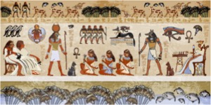
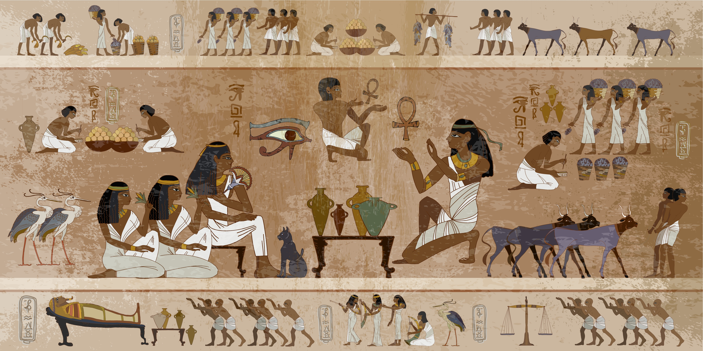
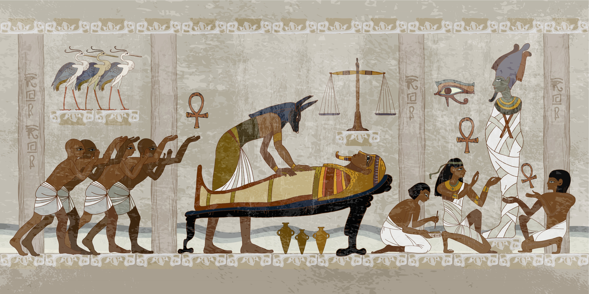

<!DOCTYPE html>
<html lang="en">
<head>
    <meta charset="UTF-8">
    <meta http-equiv="X-UA-Compatible" content="IE=edge">
    <meta name="viewport" content="width=device-width, initial-scale=1.0">
    <title>Antony and Cleoptra</title>
</head>
</body>
</html>
<html xmlns="http://www.w3.org/1999/xhtml">

		<meta charset="utf-8" />
		<title>PlayMP</title>
		<link href="PlayMP-web-resources/css/play.css" rel="stylesheet" type="text/css" />
		<script>
			function hidemenu() {
				document.getElementById("toggle"). checked = false;
			}
		</script>
	</head>
	<body id="PlayMP" lang="en-GB">
		<nav>
			<input type="checkbox" id="toggle">
			<label for="toggle" class="hamburger">&#9776;</label>
			<ul id="menu" onclick="hidemenu()"> 
				<li class=""home"><a href=index.html">Home</a></li>
				<li class="TOC-Heading-1"><a href="PlayMP.html#_idTextAnchor000"><span class="allscenes">D</span>ramatis Perso<span class="allscenes">nae</span></a></li>
				<li class="TOC-Heading-1"><a href="PlayMP.html#_idTextAnchor001"><span class="bold">Act I</span></a><ul><li class="TOC-Heading-2"><a href="PlayMP.html#_idTextAnchor002"><span class="allscenes">Scene I</span></a></li><li class="TOC-Heading-2"><a href="PlayMP.html#_idTextAnchor003"><span class="allscenes">Scene II</span></a></li><li class="TOC-Heading-2"><a href="PlayMP.html#_idTextAnchor004"><span class="allscenes">Scene III</span></a></li><li class="TOC-Heading-2"><a href="PlayMP.html#_idTextAnchor005"><span class="allscenes">Scene IV</span></a></li><li class="TOC-Heading-2"><a href="PlayMP.html#_idTextAnchor006"><span class="allscenes">Scene V</span></a></li></ul></li>
				<li class="TOC-Heading-1"><a href="PlayMP.html#_idTextAnchor007">Act II</a><ul><li class="TOC-Heading-2"><a href="PlayMP.html#_idTextAnchor008"><span class="allscenes">Scene I</span></a></li><li class="TOC-Heading-2"><a href="PlayMP.html#_idTextAnchor009"><span class="allscenes">Scene II</span></a></li><li class="TOC-Heading-2"><a href="PlayMP.html#_idTextAnchor010"><span class="allscenes">Scene III</span></a></li><li class="TOC-Heading-2"><a href="PlayMP.html#_idTextAnchor011"><span class="allscenes">Scene IV</span></a></li><li class="TOC-Heading-2"><a href="PlayMP.html#_idTextAnchor012"><span class="allscenes">Scene V</span></a></li><li class="TOC-Heading-2"><a href="PlayMP.html#_idTextAnchor013"><span class="allscenes">Scene VI</span></a></li><li class="TOC-Heading-2"><a href="PlayMP.html#_idTextAnchor014"><span class="allscenes">Scene VII</span></a></li></ul></li>
				<li class="TOC-Heading-1"><a href="PlayMP.html#_idTextAnchor015">Act III</a><ul><li class="TOC-Heading-2"><a href="PlayMP.html#_idTextAnchor016"><span class="allscenes">Scene I</span></a></li><li class="TOC-Heading-2"><a href="PlayMP.html#_idTextAnchor017"><span class="allscenes">Scene II</span></a></li><li class="TOC-Heading-2"><a href="PlayMP.html#_idTextAnchor018"><span class="allscenes">Scene III</span></a></li><li class="TOC-Heading-2"><a href="PlayMP.html#_idTextAnchor019"><span class="allscenes">Scene IV</span></a></li><li class="TOC-Heading-2"><a href="PlayMP.html#_idTextAnchor020"><span class="allscenes">Scene V</span></a></li><li class="TOC-Heading-2"><a href="PlayMP.html#_idTextAnchor021"><span class="allscenes">Scene VI</span></a></li><li class="TOC-Heading-2"><a href="PlayMP.html#_idTextAnchor022"><span class="allscenes">Scene VII</span></a></li><li class="TOC-Heading-2"><a href="PlayMP.html#_idTextAnchor023"><span class="allscenes">Scene VIII</span></a></li><li class="TOC-Heading-2"><a href="PlayMP.html#_idTextAnchor024"><span class="allscenes">Scene IX</span></a></li><li class="TOC-Heading-2"><a href="PlayMP.html#_idTextAnchor025"><span class="allscenes">Scene X</span></a></li><li class="TOC-Heading-2"><a href="PlayMP.html#_idTextAnchor026"><span class="allscenes">Scene XI</span></a></li><li class="TOC-Heading-2"><a href="PlayMP.html#_idTextAnchor027"><span class="allscenes">Scene XII</span></a></li><li class="TOC-Heading-2"><a href="PlayMP.html#_idTextAnchor028"><span class="allscenes">Scene XIII</span></a></li></ul></li>
				<li class="TOC-Heading-1"><a href="PlayMP.html#_idTextAnchor029">Act IV</a><ul><li class="TOC-Heading-2"><a href="PlayMP.html#_idTextAnchor030"><span class="allscenes">Scene I</span></a></li><li class="TOC-Heading-2"><a href="PlayMP.html#_idTextAnchor031"><span class="allscenes">Scene II</span></a></li><li class="TOC-Heading-2"><a href="PlayMP.html#_idTextAnchor032"><span class="allscenes">Scene III</span></a></li><li class="TOC-Heading-2"><a href="PlayMP.html#_idTextAnchor033"><span class="allscenes">Scene IV</span></a></li><li class="TOC-Heading-2"><a href="PlayMP.html#_idTextAnchor034"><span class="allscenes">Scene V</span></a></li><li class="TOC-Heading-2"><a href="PlayMP.html#_idTextAnchor035"><span class="allscenes">Scene VI</span></a></li><li class="TOC-Heading-2"><a href="PlayMP.html#_idTextAnchor036"><span class="allscenes">Scene VII</span></a></li><li class="TOC-Heading-2"><a href="PlayMP.html#_idTextAnchor037"><span class="allscenes">Scene VIII</span></a></li><li class="TOC-Heading-2"><a href="PlayMP.html#_idTextAnchor038"><span class="allscenes">Scene IX</span></a></li><li class="TOC-Heading-2"><a href="PlayMP.html#_idTextAnchor039"><span class="allscenes">Scene X</span></a></li><li class="TOC-Heading-2"><a href="PlayMP.html#_idTextAnchor040"><span class="allscenes">Scene XI</span></a></li><li class="TOC-Heading-2"><a href="PlayMP.html#_idTextAnchor041"><span class="allscenes">Scene XII</span></a></li><li class="TOC-Heading-2"><a href="PlayMP.html#_idTextAnchor042"><span class="allscenes">Scene XIII</span></a></li><li class="TOC-Heading-2"><a href="PlayMP.html#_idTextAnchor043"><span class="allscenes">Scene XIV</span></a></li><li class="TOC-Heading-2"><a href="PlayMP.html#_idTextAnchor044"><span class="allscenes">Scene XV</span></a></li></ul></li>
				<li class="TOC-Heading-1"><a href="PlayMP.html#_idTextAnchor045">Act V</a><ul><li class="TOC-Heading-2"><a href="PlayMP.html#_idTextAnchor046"><span class="allscenes">Scene I</span></a></li><li class="TOC-Heading-2"><a href="PlayMP.html#_idTextAnchor047"><span class="allscenes">Scene II</span></a></li></ul></li>
			</ul>
		</nav>
		<main>
		<div id="_idContainer001">
			<h1 class="dramatishead"><span class="allscenes"><a id="_idTextAnchor000"></a>D</span>ramati<span class="No-Break">s Perso</span><span class="No-Break"><span class="allscenes">nae</span></span></h1>
			<p class="character_name"></p>
			<table id="table001" class="Basic-Table _idGenTablePara-1">
				<colgroup>
					<col />
					<col />
					<col />
				</colgroup>
				<tbody>
					<tr class="Basic-Table">
						<td class="Basic-Table">
							<p class="character_name">Mark Antony</p>
						</td>
						<td class="Basic-Table" />
						<td class="Basic-Table" />
					</tr>
					<tr class="Basic-Table">
						<td class="Basic-Table">
							<p class="character_name">Octavius Caesar</p>
						</td>
						<td class="Basic-Table" />
						<td class="Basic-Table" />
					</tr>
					<tr class="Basic-Table">
						<td class="Basic-Table">
							<p class="character_name">M. Aemilius Lepidus</p>
						</td>
						<td class="Basic-Table" />
						<td class="Basic-Table" />
					</tr>
					<tr class="Basic-Table">
						<td class="Basic-Table">
							<p class="character_name">Sextus Pompeius</p>
						</td>
						<td class="Basic-Table" />
						<td class="Basic-Table" />
					</tr>
					<tr class="Basic-Table">
						<td class="Basic-Table">
							<p class="character_name">Domitius Enobarbus</p>
						</td>
						<td class="Basic-Table" rowspan="7" />
						<td class="Basic-Table" rowspan="7">
							<p class="character_listing">Friends<span class="No-Break"> to Antony</span></p>
						</td>
					</tr>
					<tr class="Basic-Table">
						<td class="Basic-Table">
							<p class="character_name">Ventidius</p>
						</td>
					</tr>
					<tr class="Basic-Table">
						<td class="Basic-Table">
							<p class="character_name">Eros</p>
						</td>
					</tr>
					<tr class="Basic-Table">
						<td class="Basic-Table">
							<p class="character_name">Scarus</p>
						</td>
					</tr>
					<tr class="Basic-Table">
						<td class="Basic-Table">
							<p class="character_name">Dercetas</p>
						</td>
					</tr>
					<tr class="Basic-Table">
						<td class="Basic-Table">
							<p class="character_name">Demetrius</p>
						</td>
					</tr>
					<tr class="Basic-Table">
						<td class="Basic-Table">
							<p class="character_name">Philo</p>
						</td>
					</tr>
					<tr class="Basic-Table">
						<td class="Basic-Table">
							<p class="character_name">Maecenas</p>
						</td>
						<td class="Basic-Table" rowspan="6" />
						<td class="Basic-Table" rowspan="6">
							<p class="character_listing"><span class="character_role">Friends</span><span class="No-Break"><span class="character_role"> to Caesar </span></span></p>
						</td>
					</tr>
					<tr class="Basic-Table">
						<td class="Basic-Table">
							<p class="character_name">Agrippa</p>
						</td>
					</tr>
					<tr class="Basic-Table">
						<td class="Basic-Table">
							<p class="character_name">Dolabella</p>
						</td>
					</tr>
					<tr class="Basic-Table">
						<td class="Basic-Table">
							<p class="character_name">Proculeius</p>
						</td>
					</tr>
					<tr class="Basic-Table">
						<td class="Basic-Table">
							<p class="character_name">Thyreus</p>
						</td>
					</tr>
					<tr class="Basic-Table">
						<td class="Basic-Table">
							<p class="character_name">Gallus</p>
						</td>
					</tr>
					<tr class="Basic-Table">
						<td class="Basic-Table">
							<p class="character_name">Menas</p>
						</td>
						<td class="Basic-Table" rowspan="3" />
						<td class="Basic-Table" rowspan="3">
							<p class="character_listing"><span class="character_role">Friends</span><span class="No-Break"><span class="character_role"> to Pompey</span></span></p>
						</td>
					</tr>
					<tr class="Basic-Table">
						<td class="Basic-Table">
							<p class="character_name">Menecrates</p>
						</td>
					</tr>
					<tr class="Basic-Table">
						<td class="Basic-Table">
							<p class="character_name">Varrius</p>
						</td>
					</tr>
					<tr class="Basic-Table">
						<td class="Basic-Table">
							<p class="character_name">Taurus</p>
						</td>
						<td class="Basic-Table" />
						<td class="Basic-Table">
							<p class="character_listing"><span class="character_role">Lieutenant-General</span><span class="No-Break"><span class="character_role"> to Caesar</span></span></p>
						</td>
					</tr>
					<tr class="Basic-Table">
						<td class="Basic-Table">
							<p class="character_name">Canidius</p>
						</td>
						<td class="Basic-Table" />
						<td class="Basic-Table">
							<p class="character_listing"><span class="character_role">Lieutenant-General</span><span class="No-Break"><span class="character_role"> to Antony</span></span></p>
						</td>
					</tr>
					<tr class="Basic-Table">
						<td class="Basic-Table">
							<p class="character_name">Silius</p>
						</td>
						<td class="Basic-Table" />
						<td class="Basic-Table">
							<p class="character_listing"><span class="character_role">An Officer in Ventid</span><span class="No-Break"><span class="character_role">ius’s army</span></span></p>
						</td>
					</tr>
					<tr class="Basic-Table">
						<td class="Basic-Table">
							<p class="character_name">Euphronius</p>
						</td>
						<td class="Basic-Table" />
						<td class="Basic-Table">
							<p class="character_listing"><span class="character_role">An Ambassador from Antony</span><span class="No-Break"><span class="character_role"> to Caesar</span></span></p>
						</td>
					</tr>
					<tr class="Basic-Table">
						<td class="Basic-Table">
							<p class="character_name">Alexas</p>
						</td>
						<td class="Basic-Table" rowspan="3" />
						<td class="Basic-Table" rowspan="3">
							<p class="character_listing"><span class="character_role">Attendants of</span><span class="No-Break"><span class="character_role"> Cleopatra</span></span></p>
						</td>
					</tr>
					<tr class="Basic-Table">
						<td class="Basic-Table">
							<p class="character_name">Mardian</p>
						</td>
					</tr>
					<tr class="Basic-Table">
						<td class="Basic-Table">
							<p class="character_name">Seleucus</p>
						</td>
					</tr>
					<tr class="Basic-Table">
						<td class="Basic-Table" />
						<td class="Basic-Table" />
						<td class="Basic-Table" />
					</tr>
					<tr class="Basic-Table">
						<td class="Basic-Table">
							<p class="character_name">Diomedes</p>
						</td>
						<td class="Basic-Table" />
						<td class="Basic-Table" />
					</tr>
					<tr class="Basic-Table">
						<td class="Basic-Table">
							<p class="character_name">A Soothsayer</p>
						</td>
						<td class="Basic-Table" />
						<td class="Basic-Table" />
					</tr>
					<tr class="Basic-Table">
						<td class="Basic-Table">
							<p class="character_name">A Clown</p>
						</td>
						<td class="Basic-Table" />
						<td class="Basic-Table" />
					</tr>
					<tr class="Basic-Table">
						<td class="Basic-Table">
							<p class="character_name">Cleopatra</p>
						</td>
						<td class="Basic-Table" />
						<td class="Basic-Table">
							<p class="character_listing"><span class="character_role">Quee</span><span class="No-Break"><span class="character_role">n of Egypt</span></span></p>
						</td>
					</tr>
					<tr class="Basic-Table">
						<td class="Basic-Table">
							<p class="character_name">Octavia</p>
						</td>
						<td class="Basic-Table" />
						<td class="Basic-Table">
							<p class="character_listing"><span class="character_role">Sister to Caesar and wife</span><span class="No-Break"><span class="character_role"> to Antony</span></span></p>
						</td>
					</tr>
					<tr class="Basic-Table">
						<td class="Basic-Table">
							<p class="character_name">Charmian</p>
						</td>
						<td class="Basic-Table" rowspan="2" />
						<td class="Basic-Table" rowspan="2">
							<p class="character_listing"><span class="character_role">Lady attending on</span><span class="No-Break"><span class="character_role"> Cleopatra</span></span></p>
						</td>
					</tr>
					<tr class="Basic-Table">
						<td class="Basic-Table">
							<p class="character_name">Iras</p>
						</td>
					</tr>
					<tr class="Basic-Table">
						<td class="Basic-Table" />
						<td class="Basic-Table" />
						<td class="Basic-Table" />
					</tr>
					<tr class="Basic-Table">
						<td class="Basic-Table">
							<p class="character_name">Officers,Soldiers,<span class="character_role"> Messengers, and Attendants</span></p>
						</td>
						<td class="Basic-Table" />
						<td class="Basic-Table" />
					</tr>
					<tr class="Basic-Table">
						<td class="Basic-Table" />
						<td class="Basic-Table" />
						<td class="Basic-Table" />
					</tr>
				</tbody>
			</table>
			<p class="Scene-Dramatis-">Scene<span class="Default">: The Roman E</span>mpire</p>
		</main>
		</div>
		
		<div id="_idContainer002">
			<h1 class="act"><a id="_idTextAnchor001"></a><span class="bold">Act I</span></h1>
			<h2 class="firstscene"><span class="allscenes"><a id="_idTextAnchor002"></a>Scene I</span></h2>
			<h2 class="location">Alexandria. Cleopatra<span class="No-Break">a’s palace</span></h2>
			<h2 class="stagedirection balance-text">Enter Demetrius<span class="No-Break"> and Philo</span></h2>
			<p class="character">Philo</p>
			<p class="verseline">Nay, but this dotage of our<span class="No-Break"> general’s</span></p>
			<p class="verseline">O’erflows the measure. Those his go<span class="No-Break">odly eyes,</span></p>
			<p class="verseline">That o’er the files and musters <span class="No-Break">of the war</span></p>
			<p class="verseline">Have glow’d like plated Mars, now bend,<span class="No-Break"> now turn,</span></p>
			<p class="verseline">The office and devotion of <span class="No-Break">their view</span></p>
			<p class="verseline">Upon a tawny front. His captai<span class="No-Break">n’s heart,</span></p>
			<p class="verseline">Which in the scuffles of great fights <span class="No-Break">hath burst</span></p>
			<p class="verseline">The buckles on his breast, reneges a<span class="No-Break">ll temper,</span></p>
			<p class="verseline">And is become the bellows a<span class="No-Break">nd the fan</span></p>
			<p class="verseline">To cool a gi<span class="No-Break">psy’s lust</span></p>
			<h2 class="stagedirection balance-text">Flourish. Enter Antony, Cleopatra, her Ladies, the train, with eunuchs f<span class="No-Break">anning her</span></h2>
			<p class="verseline">Look where <span class="No-Break">they come!</span></p>
			<p class="verseline">Take but good note, and you shall <span class="No-Break">see in him</span></p>
			<p class="verseline">The triple pillar of the world t<span class="No-Break">ransform’d</span></p>
			<p class="verseline">Into a strumpet’s fool. Beho<span class="No-Break">ld and see</span></p>
			<p class="character">Cleopatra</p>
			<p class="verseline">If it be love indeed, tell m<span class="No-Break">e how much</span></p>
			<p class="character">Antony</p>
			<p class="verseline">There’s beggary in the love that can b<span class="No-Break">e reckon’d</span></p>
			<p class="character">Cleopatra</p>
			<p class="verseline">I’ll set a bourn how far to <span class="No-Break">be belov’d</span></p>
			<p class="character">Antony</p>
			<p class="verseline">Then must thou needs find out new heaven,<span class="No-Break"> new earth</span></p>
			<h2 class="stagedirection balance-text">Enter a<span class="No-Break"> Messenger</span></h2>
			<p class="character">Messenger</p>
			<p class="verseline">News, my good lord,<span class="No-Break"> from Rome</span></p>
			<p class="character">Antony</p>
			<p class="verseline">Grates <span class="No-Break">me the sum</span></p>
			<p class="character">Cleopatra</p>
			<p class="verseline">Nay, hear th<span class="No-Break">em, Antony</span></p>
			<p class="verseline">Fulvia perchance is angry; or<span class="No-Break"> who knows</span></p>
			<p class="verseline">If the scarce-bearded Caesar hav<span class="No-Break">e not sent</span></p>
			<p class="verseline">His pow’rful mandate to you: ‘Do thi<span class="No-Break">s or this;</span></p>
			<p class="verseline">Take in that kingdom and enfranc<span class="No-Break">hise that;</span></p>
			<p class="verseline">Perform’t, or else we d<span class="No-Break">amn thee.’</span></p>
			<p class="character">Antony</p>
			<p class="verseline">How<span class="No-Break">, my love?</span></p>
			<p class="character">Cleopatra</p>
			<p class="verseline">Perchance? Nay, and <span class="No-Break">most like,</span></p>
			<p class="verseline">You must not stay here longer; your <span class="No-Break">dismission</span></p>
			<p class="verseline">Is come from Caesar; therefore hear <span class="No-Break">it, Antony</span></p>
			<p class="verseline">Where’s Fulvia’s process? Caesar’s I would <span class="No-Break">say? Both?</span></p>
			<p class="verseline">Call in the messengers. As I am Egyp<span class="No-Break">t’s Queen,</span></p>
			<p class="verseline">Thou blushest, Antony, and that bloo<span class="No-Break">d of thine</span></p>
			<p class="verseline">Is Caesar’s homager. Else so thy cheek <span class="No-Break">pays shame</span></p>
			<p class="verseline">When shrill-tongu’d Fulvia scolds. The m<span class="No-Break">essengers!</span></p>
			<p class="character">Antony</p>
			<p class="verseline">Let Rome in Tiber melt, and the<span class="No-Break"> wide arch</span></p>
			<p class="verseline">Of the rang’d empire fall! Here i<span class="No-Break">s my space</span></p>
			<p class="verseline">Kingdoms are clay; our dungy e<span class="No-Break">arth alike</span></p>
			<p class="verseline">Feeds beast as man. The noblene<span class="No-Break">ss of life</span></p>
			<p class="verseline">Is to do thus <span class="stage_directions">[emhracing],</span> when such a m<span class="No-Break">utual pair</span></p>
			<p class="verseline">And such a twain can do’t, in whi<span class="No-Break">ch I bind,</span></p>
			<p class="verseline">On pain of punishment, the wor<span class="No-Break">ld to weet</span></p>
			<p class="verseline">We stand u<span class="No-Break">p peerless</span></p>
			<p class="character">Cleopatra</p>
			<p class="verseline">Excellent <span class="No-Break">falsehood!</span></p>
			<p class="verseline">Why did he marry Fulvia, and not<span class="No-Break"> love her?</span></p>
			<p class="verseline">I’ll seem the fool I am n<span class="No-Break">ot. Antony</span></p>
			<p class="verseline">Will <span class="No-Break">be himself</span></p>
			<p class="character">Antony</p>
			<p class="verseline">But stirr’d by<span class="No-Break"> Cleopatra</span></p>
			<p class="verseline">Now for the love of Love and her s<span class="No-Break">oft hours,</span></p>
			<p class="verseline">Let’s not confound the time with confere<span class="No-Break">nce harsh;</span></p>
			<p class="verseline">There’s not a minute of our lives shou<span class="No-Break">ld stretch</span></p>
			<p class="verseline">Without some pleasure now. What sport<span class="No-Break"> to-night?</span></p>
			<p class="character">Cleopatra</p>
			<p class="verseline">Hear the a<span class="No-Break">mbassadors</span></p>
			<p class="character">Antony</p>
			<p class="verseline">Fie, wrangl<span class="No-Break">ing queen!</span></p>
			<p class="verseline">Whom everything becomes- to chide,<span class="No-Break"> to laugh,</span></p>
			<p class="verseline">To weep; whose every passion ful<span class="No-Break">ly strives</span></p>
			<p class="verseline">To make itself in thee fair a<span class="No-Break">nd admir’d</span></p>
			<p class="verseline">No messenger but thine, and<span class="No-Break"> all alone</span></p>
			<p class="verseline">To-night we’ll wander through the street<span class="No-Break">s and note</span></p>
			<p class="verseline">The qualities of people. Come,<span class="No-Break"> my queen;</span></p>
			<p class="verseline">Last night you did desire it. Speak<span class="No-Break"> not to us</span></p>
			<h2 class="stagedirection balance-text">Exeunt Antony and Cleopatra, with<span class="No-Break"> the train</span></h2>
			<p class="character">Demetrius</p>
			<p class="verseline">Is Caesar with Antonius priz’d <span class="No-Break">so slight?</span></p>
			<p class="character">Philo</p>
			<p class="verseline">Sir, sometimes when he is n<span class="No-Break">ot Antony,</span></p>
			<p class="verseline">He comes too short of that grea<span class="No-Break">t property</span></p>
			<p class="verseline">Which still should go w<span class="No-Break">ith Antony</span></p>
			<p class="character">Demetrius</p>
			<p class="verseline">I am <span class="No-Break">full sorry</span></p>
			<p class="verseline">That he approves the common<span class="No-Break"> liar, who</span></p>
			<p class="verseline">Thus speaks of him at Rome; but I<span class="No-Break"> will hope</span></p>
			<p class="verseline">Of better deeds to-morrow. Rest <span class="No-Break">you happy!</span></p>
			<h2 class="stagedirection balance-text">Exeunt</h2>
			<h2 class="scene"><span class="allscenes"><a id="_idTextAnchor003"></a>Scene II</span></h2>
			<h2 class="location">Alexandria. Cleopatr<span class="No-Break">a’s palace</span></h2>
			<h2 class="stagedirection balance-text">Enter Charmian, Iras, Alexas, and a <span class="No-Break">Soothsayer</span></h2>
			<p class="character">Charmian</p>
			<p class="prose">Lord Alexas, sweet Alexas, most anything Alexas, almost <span class="character_inline">most abso</span>lute Alexas, where’s the soothsayer that you prais’d so to th’ Queen? O that I knew this husband, which you say must charge his horns with<span class="No-Break"> garlands!</span></p>
			<p class="character">Alexas</p>
			<p class="verseline">S<span class="No-Break">oothsayer!</span></p>
			<p class="character"><span class="No-Break">Soothsayer</span></p>
			<p class="verseline"><span class="No-Break">Your will?</span></p>
			<p class="character">Charmian</p>
			<p class="verseline">Is this the man? Is’t you, sir, that kn<span class="No-Break">ow things?</span></p>
			<p class="character"><span class="No-Break">Soothsayer</span></p>
			<p class="verseline">In nature’s infinite book <span class="No-Break">of secrecy</span></p>
			<p class="verseline">A little <span class="No-Break">I can read</span></p>
			<p class="character">Alexas</p>
			<p class="verseline">Show him<span class="No-Break"> your hand</span></p>
			<h2 class="stagedirection balance-text">Enter<span class="No-Break"> Enobarbus</span></h2>
			<p class="character">Enobarbus</p>
			<p class="verseline">Bring in the banquet quickly; w<span class="No-Break">ine enough</span></p>
			<p class="verseline">Cleopatra’s healt<span class="No-Break">h to drink</span></p>
			<p class="character">Charmian</p>
			<p class="verseline">Good, sir, give me go<span class="No-Break">od fortune</span></p>
			<p class="character"><span class="No-Break">Soothsayer</span></p>
			<p class="verseline">I make not, b<span class="No-Break">ut foresee</span></p>
			<p class="character">Charmian</p>
			<p class="verseline">Pray, then, fore<span class="No-Break">see me one</span></p>
			<p class="character"><span class="No-Break">Soothsayer</span></p>
			<p class="verseline">You shall be yet far fairer th<span class="No-Break">an you are</span></p>
			<p class="character">Charmian</p>
			<p class="verseline">He mean<span class="No-Break">s in flesh</span></p>
			<p class="character">Iras</p>
			<p class="verseline">No, you shall paint when y<span class="No-Break">ou are old</span></p>
			<p class="character">Charmian</p>
			<p class="verseline">Wrinkl<span class="No-Break">es forbid!</span></p>
			<p class="character">Alexas</p>
			<p class="verseline">Vex not his prescience; be<span class="No-Break"> attentive</span></p>
			<p class="character">Charmian</p>
			<p class="verseline">Hush!</p>
			<p class="character"><span class="No-Break">Soothsayer</span></p>
			<p class="verseline">You shall be more beloving th<span class="No-Break">an beloved</span></p>
			<p class="character">Charmian</p>
			<p class="verseline">I had rather heat my liver wit<span class="No-Break">h drinking</span></p>
			<p class="character">Alexas</p>
			<p class="verseline">Nay<span class="No-Break">, hear him</span></p>
			<p class="character">Charmian</p>
			<p class="prose">Good now, some excellent fortune! Let me be married to three kings in a forenoon, and widow them all. Let me have a child at fifty, to whom Herod<span class="No-Break"> of Jewry </span></p>
			<p class="prose">may do homage. Find me to marry me with Octavius Caesar, and companion me with m<span class="No-Break">y mistress</span></p>
			<p class="character"><span class="No-Break">Soothsayer</span></p>
			<p class="verseline">You shall outlive the lady whom<span class="No-Break"> you serve</span></p>
			<p class="character">Charmian</p>
			<p class="verseline">O, excellent! I love long life better<span class="No-Break"> than figs</span></p>
			<p class="character"><span class="No-Break">Soothsayer</span></p>
			<p class="verseline">You have seen and prov’d a fairer form<span class="No-Break">er fortune</span></p>
			<p class="verseline">Than that which is t<span class="No-Break">o approach</span></p>
			<p class="character">Charmian</p>
			<p class="verseline">Then belike my children shall hav<span class="No-Break">e no names</span></p>
			<p class="verseline">Prithee, how many boys and wenches mu<span class="No-Break">st I have?</span></p>
			<p class="character"><span class="No-Break">Soothsayer</span></p>
			<p class="verseline">If every of your wishes h<span class="No-Break">ad a womb,</span></p>
			<p class="verseline">And fertile every wish,<span class="No-Break"> a million</span></p>
			<p class="character">Charmian</p>
			<p class="verseline">Out, fool! I forgive thee f<span class="No-Break">or a witch</span></p>
			<p class="character">Alexas</p>
			<p class="verseline">You think none but your sheets are privy to y<span class="No-Break">our wishes</span></p>
			<p class="character">Charmian</p>
			<p class="verseline">Nay, come, tell<span class="No-Break"> Iras hers</span></p>
			<p class="character">Alexas</p>
			<p class="verseline">We’ll know all ou<span class="No-Break">r fortunes</span></p>
			<p class="character">Enobarbus</p>
			<p class="prose">Mine, and most of our fortunes, to-night, shall be- dr<span class="No-Break">unk to bed</span></p>
			<p class="character">Iras</p>
			<p class="verseline">There’s a palm presages chastity, if no<span class="No-Break">thing else</span></p>
			<p class="character">Charmian</p>
			<p class="verseline">E’en as the o’erflowing Nilus presag<span class="No-Break">eth famine</span></p>
			<p class="character">Iras</p>
			<p class="verseline">Go, you wild bedfellow, you canno<span class="No-Break">t soothsay</span></p>
			<p class="character">Charmian</p>
			<p class="prose">Nay, if an oily palm be not a fruitful prognostication, I cannot scratch mine ear. Prithee, tell her but worky-d<span class="No-Break">ay fortune</span></p>
			<p class="character"><span class="No-Break">Soothsayer</span></p>
			<p class="verseline">Your fortunes<span class="No-Break"> are alike</span></p>
			<p class="character">Iras</p>
			<p class="verseline">But how, but how? Give me p<span class="No-Break">articulars</span></p>
			<p class="character"><span class="No-Break">Soothsayer</span></p>
			<p class="verseline">I<span class="No-Break"> have said</span></p>
			<p class="character">Iras</p>
			<p class="verseline">Am I not an inch of fortune better<span class="No-Break"> than she?</span></p>
			<p class="character">Charmian</p>
			<p class="prose">Well, if you were but an inch of fortune better than I, where would you <span class="No-Break">choose it?</span></p>
			<p class="character">Iras</p>
			<p class="verseline">Not in my husb<span class="No-Break">and’s nose</span></p>
			<p class="character">Charmian</p>
			<p class="prose">Our worser thoughts heavens mend! Alexas- come, his fortune, his fortune! O, let him marry a woman that cannot go, sweet Isis, I beseech thee! And let her die too, and give him a worse! And let wor<span class="No-Break">se follow </span></p>
			<p class="prose">worse, till the worst of all follow him laughing to his grave,fiftyfold a cuckold! Good Isis, hear me this prayer, though thou deny me a matter of more we<span class="No-Break">ight; good</span></p>
			<p class="prose">Isis, I bes<span class="No-Break">eech thee!</span></p>
			<p class="character">Iras</p>
			<p class="prose">Amen. Dear goddess, hear that prayer of the people! For, as it is a heartbreaking to see a handsome man loose-wiv’d<span class="No-Break">, so it is</span></p>
			<p class="prose">a deadly sorrow to behold a foul knave uncuckolded. Therefore, dear Isis, keep decorum, and fortune him ac<span class="No-Break">cordingly!</span></p>
			<p class="character">Charmian</p>
			<p class="verseline">Amen</p>
			<p class="character">Alexas</p>
			<p class="prose">Lo now, if it lay in their hands to make me a cuckold, they would make themselves whores but the<span class="No-Break">y’ld do’t!</span></p>
			<h2 class="stagedirection balance-text">Enter<span class="No-Break"> Cleopatra</span></h2>
			<p class="character">Enobarbus</p>
			<p class="verseline">Hush! Here co<span class="No-Break">mes Antony</span></p>
			<p class="character">Charmian</p>
			<p class="verseline">Not he;<span class="No-Break"> the Queen</span></p>
			<p class="character">Cleopatra</p>
			<p class="verseline">Saw yo<span class="No-Break">u my lord?</span></p>
			<p class="character">Enobarbus</p>
			<p class="verseline">No, lady</p>
			<p class="character">Cleopatra</p>
			<p class="verseline">Was he<span class="No-Break"> not here?</span></p>
			<p class="character">Charmian</p>
			<p class="verseline">No, madam</p>
			<p class="character">Cleopatra</p>
			<p class="verseline">He was dispos’d to mirth; but on <span class="No-Break">the sudden</span></p>
			<p class="verseline">A Roman thought hath struck him. <span class="No-Break">Enobarbus!</span></p>
			<p class="character">Enobarbus</p>
			<p class="verseline">Madam?</p>
			<p class="character">Cleopatra</p>
			<p class="verseline">Seek him, and bring him hither. Where<span class="No-Break">’s Alexas?</span></p>
			<p class="character">Alexas</p>
			<p class="verseline">Here, at your service. My lord <span class="No-Break">approaches</span></p>
			<h2 class="stagedirection balance-text">Enter Antony, with a Messenger and <span class="No-Break">attendants</span></h2>
			<p class="character">Cleopatra</p>
			<p class="verseline">We will not look upon him. <span class="No-Break">Go with us</span></p>
			<h2 class="stagedirection balance-text">Exeunt Cleopatra, Enobarbus, an<span class="No-Break">d the rest</span></h2>
			<p class="character">Messenger</p>
			<p class="verseline">Fulvia thy wife first came into<span class="No-Break"> the field</span></p>
			<p class="character">Antony</p>
			<p class="verseline">Against my broth<span class="No-Break">er Lucius?</span></p>
			<p class="character">Messenger</p>
			<p class="verseline">Ay</p>
			<p class="verseline">But soon that war had end, and the ti<span class="No-Break">me’s state</span></p>
			<p class="verseline">Made friends of them, jointing their force ‘gain<span class="No-Break">st Caesar,</span></p>
			<p class="verseline">Whose better issue in the war <span class="No-Break">from Italy</span></p>
			<p class="verseline">Upon the first encounter <span class="No-Break">drave them</span></p>
			<p class="character">Antony</p>
			<p class="verseline">Well, w<span class="No-Break">hat worst?</span></p>
			<p class="character">Messenger</p>
			<p class="verseline">The nature of bad news infects <span class="No-Break">the teller</span></p>
			<p class="character">Antony</p>
			<p class="verseline">When it concerns the fool or c<span class="No-Break">oward. On!</span></p>
			<p class="verseline">Things that are past are done with me. <span class="No-Break">‘Tis thus:</span></p>
			<p class="verseline">Who tells me true, though in his tale <span class="No-Break">lie death,</span></p>
			<p class="verseline">I hear him as he<span class="No-Break"> flatter’d</span></p>
			<p class="character">Messenger</p>
			<p class="verseline">Labienus-</p>
			<p class="verseline">This is stiff news- hath with his Part<span class="No-Break">hian force</span></p>
			<p class="verseline">Extended Asia from <span class="No-Break">Euphrates,</span></p>
			<p class="verseline">His conquering banner shook <span class="No-Break">from Syria</span></p>
			<p class="verseline">To Lydia and<span class="No-Break"> to Ionia,</span></p>
			<p class="verseline">Whilst-</p>
			<p class="character">Antony</p>
			<p class="verseline">Antony, thou w<span class="No-Break">ouldst say</span></p>
			<p class="character">Messenger</p>
			<p class="verseline">O<span class="No-Break">, my lord!</span></p>
			<p class="character">Antony</p>
			<p class="verseline">Speak to me home; mince not the gener<span class="No-Break">al tongue;</span></p>
			<p class="verseline">Name Cleopatra as she is call<span class="No-Break">’d in Rome</span></p>
			<p class="verseline">Rail thou in Fulvia’s phrase, and taunt<span class="No-Break"> my faults</span></p>
			<p class="verseline">With such full licence as both truth <span class="No-Break">and malice</span></p>
			<p class="verseline">Have power to utter. O, then we bring f<span class="No-Break">orth weeds</span></p>
			<p class="verseline">When our quick minds lie still, and our il<span class="No-Break">ls told us</span></p>
			<p class="verseline">Is as our earing. Fare thee w<span class="No-Break">ell awhile</span></p>
			<p class="character">Messenger</p>
			<p class="verseline">At your nobl<span class="No-Break">e pleasure</span></p>
			<h2 class="location">Exit</h2>
			<p class="character">Antony</p>
			<p class="verseline">From Sicyon, ho, the news! Sp<span class="No-Break">eak there!</span></p>
			<p class="character">First<span class="No-Break"> Attendant</span></p>
			<p class="verseline">The man from Sicyon- is there su<span class="No-Break">ch an one?</span></p>
			<p class="character">Second<span class="No-Break"> Attendant</span></p>
			<p class="verseline">He stays upon<span class="No-Break"> your will</span></p>
			<p class="character">Antony</p>
			<p class="verseline">Let <span class="No-Break">him appear</span></p>
			<p class="verseline">These strong Egyptian fetters I m<span class="No-Break">ust break,</span></p>
			<p class="verseline">Or lose myself<span class="No-Break"> in dotage</span></p>
			<h2 class="stagedirection balance-text">Enter another Messenger wit<span class="No-Break">h a letter</span></h2>
			<p class="verseline">Wha<span class="No-Break">t are you?</span></p>
			<p class="character">Second<span class="No-Break"> Messenger</span></p>
			<p class="verseline">Fulvia thy wi<span class="No-Break">fe is dead</span></p>
			<p class="character">Antony</p>
			<p class="verseline">Where<span class="No-Break"> died she?</span></p>
			<p class="character">Second<span class="No-Break"> Messenger</span></p>
			<p class="verseline">In Sicyon</p>
			<p class="verseline">Her length of sickness, with what else mo<span class="No-Break">re serious</span></p>
			<p class="verseline">Importeth thee to know, this bears.<span class="stage_directions">[Gives t</span><span class="No-Break"><span class="stage_directions">he letter]</span></span></p>
			<p class="character">Antony</p>
			<p class="verseline">Forbear me.Exit<span class="No-Break"> Messenger</span></p>
			<p class="verseline">There’s a great spirit gone! Thus did I<span class="No-Break"> desire it</span></p>
			<p class="verseline">What our contempts doth often hu<span class="No-Break">rl from us</span></p>
			<p class="verseline">We wish it ours again; the present<span class="No-Break"> pleasure,</span></p>
			<p class="verseline">By revolution low’ring, d<span class="No-Break">oes become</span></p>
			<p class="verseline">The opposite of itself. She’s good, b<span class="No-Break">eing gone;</span></p>
			<p class="verseline">The hand could pluck her back that sho<span class="No-Break">v’d her on</span></p>
			<p class="verseline">I must from this enchanting queen<span class="No-Break"> break off</span></p>
			<p class="verseline">Ten thousand harms, more than the il<span class="No-Break">ls I know,</span></p>
			<p class="verseline">My idleness doth hatch. How now, <span class="No-Break">Enobarbus!</span></p>
			<h2 class="stagedirection balance-text">Re-enter<span class="No-Break"> Enobarbus</span></h2>
			<p class="character">Enobarbus</p>
			<p class="verseline">What’s your plea<span class="No-Break">sure, sir?</span></p>
			<p class="character">Antony</p>
			<p class="verseline">I must with haste <span class="No-Break">from hence</span></p>
			<p class="character">Enobarbus</p>
			<p class="prose">Why, then we kill all our women. We see how mortal an unkindness is to them; if they suffer our departure, death’<span class="No-Break">s the word</span></p>
			<p class="character">Antony</p>
			<p class="verseline">I mu<span class="No-Break">st be gone</span></p>
			<p class="character">Enobarbus</p>
			<p class="prose">Under a compelling occasion, let women die. It were pity to cast them away for nothing, though between them and a great cause they should be esteemed nothing. Cleopatra, catching but the least noise of this, dies instantly; I have seen her die twenty times upon far poorer moment. I do think there is mettle in death, which commits some loving act upon her, she hath such a celerit<span class="No-Break">y in dying</span></p>
			<p class="character">Antony</p>
			<p class="verseline">She is cunning past man<span class="No-Break">’s thought</span></p>
			<p class="character">Enobarbus</p>
			<p class="prose">Alack, sir, no! Her passions are made of nothing but the finest part of pure love. We cannot call her winds and waters sighs and tears; they are greater storms and tempests than almanacs careport. This cannot be cunning in her; if it be, she makes a show’r of rain as we<span class="No-Break">ll as Jove</span></p>
			<p class="character">Antony</p>
			<p class="verseline">Would I had never<span class="No-Break"> seen her!</span></p>
			<p class="character">Enobarbus</p>
			<p class="prose">O Sir, you had then left unseen a wonderful piece of work, which not to have been blest withal would have discredited y<span class="No-Break">our travel</span></p>
			<p class="character">Antony</p>
			<p class="verseline">Fulv<span class="No-Break">ia is dead</span></p>
			<p class="character">Enobarbus</p>
			<p class="verseline">Sir?</p>
			<p class="character">Antony</p>
			<p class="verseline">Fulv<span class="No-Break">ia is dead</span></p>
			<p class="character">Enobarbus</p>
			<p class="verseline">Fulvia?</p>
			<p class="character">Antony</p>
			<p class="verseline">Dead</p>
			<p class="character">Enobarbus</p>
			<p class="prose">Why, sir, give the gods a thankful sacrifice. When it pleaseth their deities to take the wife of a man from him, it shows to man the tailors of the earth; comforting therein that when old robes are worn out there are members to make new. If there were no more women but Fulvia, then had you indeed a cut, and the case to be lamented. This grief is crown’d with consolation: your old smock brings forth a new petticoat; and indeed the tears live in an onion that should water t<span class="No-Break">his sorrow</span></p>
			<p class="character">Antony</p>
			<p class="verseline">The business she hath broached in<span class="No-Break"> the state</span></p>
			<p class="verseline">Cannot endure <span class="No-Break">my absence</span></p>
			<p class="character">Enobarbus</p>
			<p class="prose">And the business you have broach’d here cannot be without you; especially that of Cleopatra’s, which wholly depends on <span class="No-Break">your abode</span></p>
			<p class="character">Antony</p>
			<p class="verseline">No more light answers. Let ou<span class="No-Break">r officers</span></p>
			<p class="verseline">Have notice what we purpose. I s<span class="No-Break">hall break</span></p>
			<p class="verseline">The cause of our expedience to <span class="No-Break">the Queen,</span></p>
			<p class="verseline">And get her leave to part. For<span class="No-Break"> not alone</span></p>
			<p class="verseline">The death of Fulvia, with more urgen<span class="No-Break">t touches,</span></p>
			<p class="verseline">Do strongly speak to us; but the <span class="No-Break">letters to</span></p>
			<p class="verseline">Of many our contriving frien<span class="No-Break">ds in Rome</span></p>
			<p class="verseline">Petition us at home. Sextu<span class="No-Break">s Pompeius</span></p>
			<p class="verseline">Hath given the dare to Caesar, an<span class="No-Break">d commands</span></p>
			<p class="verseline">The empire of the sea; our slippe<span class="No-Break">ry people,</span></p>
			<p class="verseline">Whose love is never link’d to th<span class="No-Break">e deserver</span></p>
			<p class="verseline">Till his deserts are past, begi<span class="No-Break">n to throw</span></p>
			<p class="verseline">Pompey the Great and all his<span class="No-Break"> dignities</span></p>
			<p class="verseline">Upon his son; who, high in name <span class="No-Break">and power,</span></p>
			<p class="verseline">Higher than both in blood and life,<span class="No-Break"> stands up</span></p>
			<p class="verseline">For the main soldier; whose quality,<span class="No-Break"> going on,</span></p>
			<p class="verseline">The sides o’ th’ world may danger. Much i<span class="No-Break">s breeding</span></p>
			<p class="verseline">Which, like the courser’s hair, hath ye<span class="No-Break">t but life</span></p>
			<p class="verseline">And not a serpent’s poison. Say our<span class="No-Break"> pleasure,</span></p>
			<p class="verseline">To such whose place is under us<span class="No-Break">, requires</span></p>
			<p class="verseline">Our quick remove <span class="No-Break">from hence</span></p>
			<p class="character">Enobarbus</p>
			<p class="verseline">I <span class="No-Break">shall do’t</span></p>
			<h2 class="location">Exeunt</h2>
			<h2 class="scene"><span class="allscenes"><a id="_idTextAnchor004"></a>Scene III</span></h2>
			<h2 class="location">Alexandria. Cleopatr<span class="No-Break">a’s palace</span></h2>
			<h2 class="stagedirection balance-text">Enter Cleopatra, Charmian, Iras, <span class="No-Break">and Alexas</span></h2>
			<p class="character">Cleopatra</p>
			<p class="verseline">Wh<span class="No-Break">ere is he?</span></p>
			<p class="character">Charmian</p>
			<p class="verseline">I did not see<span class="No-Break"> him since</span></p>
			<p class="character">Cleopatra</p>
			<p class="verseline">See where he is, who’s with him, wh<span class="No-Break">at he does</span></p>
			<p class="verseline">I did not send you. If you fin<span class="No-Break">d him sad,</span></p>
			<p class="verseline">Say I am dancing; if in mir<span class="No-Break">th, report</span></p>
			<p class="verseline">That I am sudden sick. Quick, <span class="No-Break">and return</span></p>
			<h2 class="stagedirection balance-text">E<span class="No-Break">xit Alexas</span></h2>
			<p class="character">Charmian</p>
			<p class="verseline">Madam, methinks, if you did love h<span class="No-Break">im dearly,</span></p>
			<p class="verseline">You do not hold the method <span class="No-Break">to enforce</span></p>
			<p class="verseline">The lik<span class="No-Break">e from him</span></p>
			<p class="character">Cleopatra</p>
			<p class="verseline">What should I do<span class="No-Break"> I do not?</span></p>
			<p class="character">Charmian</p>
			<p class="verseline">In each thing give him way; cross him <span class="No-Break">in nothing</span></p>
			<p class="character">Cleopatra</p>
			<p class="verseline">Thou teachest like a fool- the way t<span class="No-Break">o lose him</span></p>
			<p class="character">Charmian</p>
			<p class="verseline">Tempt him not so too far; I wish<span class="No-Break">, forbear;</span></p>
			<p class="verseline">In time we hate that which we <span class="No-Break">often fear</span></p>
			<h2 class="stagedirection balance-text">En<span class="No-Break">ter Antony</span></h2>
			<p class="verseline">But here co<span class="No-Break">mes Antony</span></p>
			<p class="character">Cleopatra</p>
			<p class="verseline">I am sick <span class="No-Break">and sullen</span></p>
			<p class="character">Antony</p>
			<p class="verseline">I am sorry to give breathing to m<span class="No-Break">y purpose-</span></p>
			<p class="character">Cleopatra</p>
			<p class="verseline">Help me away, dear Charmian; I <span class="No-Break">shall fall</span></p>
			<p class="verseline">It cannot be thus long; the sides<span class="No-Break"> of nature</span></p>
			<p class="verseline">Will not <span class="No-Break">sustain it</span></p>
			<p class="character">Antony</p>
			<p class="verseline">Now, my dear<span class="No-Break">est queen-</span></p>
			<p class="character">Cleopatra</p>
			<p class="verseline">Pray you, stand farth<span class="No-Break">er from me</span></p>
			<p class="character">Antony</p>
			<p class="verseline">What’s t<span class="No-Break">he matter?</span></p>
			<p class="character">Cleopatra</p>
			<p class="verseline">I know by that same eye there’s some<span class="No-Break"> good news</span></p>
			<p class="verseline">What says the married woman? <span class="No-Break">You may go</span></p>
			<p class="verseline">Would she had never given you leav<span class="No-Break">e to come!</span></p>
			<p class="verseline">Let her not say ‘tis I that keep<span class="No-Break"> you here-</span></p>
			<p class="verseline">I have no power upon you; he<span class="No-Break">rs you are</span></p>
			<p class="character">Antony</p>
			<p class="verseline">The gods <span class="No-Break">best know-</span></p>
			<p class="character">Cleopatra</p>
			<p class="verseline">O, never was t<span class="No-Break">here queen</span></p>
			<p class="verseline">So mightily betray’d! Yet at<span class="No-Break"> the first</span></p>
			<p class="verseline">I saw the treaso<span class="No-Break">ns planted</span></p>
			<p class="character">Antony</p>
			<p class="verseline"><span class="No-Break">Cleopatra-</span></p>
			<p class="character">Cleopatra</p>
			<p class="verseline">Why should I think you can be mine<span class="No-Break"> and true,</span></p>
			<p class="verseline">Though you in swearing shake the thr<span class="No-Break">oned gods,</span></p>
			<p class="verseline">Who have been false to Fulvia? Riotou<span class="No-Break">s madness,</span></p>
			<p class="verseline">To be entangled with those mouth-<span class="No-Break">made vows,</span></p>
			<p class="verseline">Which break themselves in<span class="No-Break"> swearing!</span></p>
			<p class="character">Antony</p>
			<p class="verseline">Most sw<span class="No-Break">eet queen-</span></p>
			<p class="character">Cleopatra</p>
			<p class="verseline">Nay, pray you seek no colour for y<span class="No-Break">our going,</span></p>
			<p class="verseline">But bid farewell, and go. When you sue<span class="No-Break">d staying,</span></p>
			<p class="verseline">Then was the time for words. No g<span class="No-Break">oing then!</span></p>
			<p class="verseline">Eternity was in our lips<span class="No-Break"> and eyes,</span></p>
			<p class="verseline">Bliss in our brows’ bent, none our par<span class="No-Break">ts so poor</span></p>
			<p class="verseline">But was a race of heaven. They are<span class="No-Break"> so still,</span></p>
			<p class="verseline">Or thou, the greatest soldier of <span class="No-Break">the world,</span></p>
			<p class="verseline">Art turn’d the gre<span class="No-Break">atest liar</span></p>
			<p class="character">Antony</p>
			<p class="verseline">How <span class="No-Break">now, lady!</span></p>
			<p class="character">Cleopatra</p>
			<p class="verseline">I would I had thy inches. Thou sho<span class="No-Break">uldst know</span></p>
			<p class="verseline">There were a hear<span class="No-Break">t in Egypt</span></p>
			<p class="character">Antony</p>
			<p class="verseline">Hear <span class="No-Break">me, queen:</span></p>
			<p class="verseline">The strong necessity of tim<span class="No-Break">e commands</span></p>
			<p class="verseline">Our services awhile; but my <span class="No-Break">full heart</span></p>
			<p class="verseline">Remains in use with you.<span class="No-Break"> Our Italy</span></p>
			<p class="verseline">Shines o’er with civil swords: Sextu<span class="No-Break">s Pompeius</span></p>
			<p class="verseline">Makes his approaches to the por<span class="No-Break">t of Rome;</span></p>
			<p class="verseline">Equality of two domes<span class="No-Break">tic powers</span></p>
			<p class="verseline">Breed scrupulous faction; the hated, grown to<span class="No-Break"> strength,</span></p>
			<p class="verseline">Are newly grown to love. The condemn<span class="No-Break">’d Pompey,</span></p>
			<p class="verseline">Rich in his father’s honour, cr<span class="No-Break">eeps apace</span></p>
			<p class="verseline">Into the hearts of such as have n<span class="No-Break">ot thrived</span></p>
			<p class="verseline">Upon the present state, whose numbers<span class="No-Break"> threaten;</span></p>
			<p class="verseline">And quietness, grown sick of rest, w<span class="No-Break">ould purge</span></p>
			<p class="verseline">By any desperate change. My more p<span class="No-Break">articular,</span></p>
			<p class="verseline">And that which most with you should safe<span class="No-Break"> my going,</span></p>
			<p class="verseline">Is Fulv<span class="No-Break">ia’s death</span></p>
			<p class="character">Cleopatra</p>
			<p class="verseline">Though age from folly could not give m<span class="No-Break">e freedom,</span></p>
			<p class="verseline">It does from childishness. Can F<span class="No-Break">ulvia die?</span></p>
			<p class="character">Antony</p>
			<p class="verseline">She’s dead<span class="No-Break">, my Queen</span></p>
			<p class="verseline">Look here, and at thy sovereign le<span class="No-Break">isure read</span></p>
			<p class="verseline">The garboils she awak’d. At the <span class="No-Break">last, best</span></p>
			<p class="verseline">See when and wher<span class="No-Break">e she died</span></p>
			<p class="character">Cleopatra</p>
			<p class="verseline">O most f<span class="No-Break">alse love!</span></p>
			<p class="verseline">Where be the sacred vials thou sho<span class="No-Break">uldst fill</span></p>
			<p class="verseline">With sorrowful water? Now I s<span class="No-Break">ee, I see,</span></p>
			<p class="verseline">In Fulvia’s death how mine receiv’<span class="No-Break">d shall be</span></p>
			<p class="character">Antony</p>
			<p class="verseline">Quarrel no more, but be prepar<span class="No-Break">’d to know</span></p>
			<p class="verseline">The purposes I bear; which are,<span class="No-Break"> or cease,</span></p>
			<p class="verseline">As you shall give th’ advice. B<span class="No-Break">y the fire</span></p>
			<p class="verseline">That quickens Nilus’ slime, I go <span class="No-Break">from hence</span></p>
			<p class="verseline">Thy soldier, servant, making pe<span class="No-Break">ace or war</span></p>
			<p class="verseline">As th<span class="No-Break">ou affects</span></p>
			<p class="character">Cleopatra</p>
			<p class="verseline">Cut my lace, Charm<span class="No-Break">ian, come!</span></p>
			<p class="verseline">But let it be; I am quickly ill<span class="No-Break"> and well-</span></p>
			<p class="verseline">So An<span class="No-Break">tony loves</span></p>
			<p class="character">Antony</p>
			<p class="verseline">My precious queen<span class="No-Break">, forbear,</span></p>
			<p class="verseline">And give true evidence to his love, wh<span class="No-Break">ich stands</span></p>
			<p class="verseline">An honour<span class="No-Break">able trial</span></p>
			<p class="character">Cleopatra</p>
			<p class="verseline">So Fulv<span class="No-Break">ia told me</span></p>
			<p class="verseline">I prithee turn aside and wee<span class="No-Break">p for her;</span></p>
			<p class="verseline">Then bid adieu to me, and say<span class="No-Break"> the tears</span></p>
			<p class="verseline">Belong to Egypt. Good now, play<span class="No-Break"> one scene</span></p>
			<p class="verseline">Of excellent dissembling, and l<span class="No-Break">et it look</span></p>
			<p class="verseline">Like perf<span class="No-Break">ect honour</span></p>
			<p class="character">Antony</p>
			<p class="verseline">You’ll heat my bloo<span class="No-Break">d; no more</span></p>
			<p class="character">Cleopatra</p>
			<p class="verseline">You can do better yet; but this<span class="No-Break"> is meetly</span></p>
			<p class="character">Antony</p>
			<p class="verseline">Now, by<span class="No-Break"> my sword-</span></p>
			<p class="character">Cleopatra</p>
			<p class="verseline">And target. Still<span class="No-Break"> he mends;</span></p>
			<p class="verseline">But this is not the best. Look, prithee,<span class="No-Break"> Charmian,</span></p>
			<p class="verseline">How this Herculean Roman d<span class="No-Break">oes become</span></p>
			<p class="verseline">The carriage of<span class="No-Break"> his chafe</span></p>
			<p class="character">Antony</p>
			<p class="verseline">I’ll leave<span class="No-Break"> you, lady</span></p>
			<p class="character">Cleopatra</p>
			<p class="verseline">Courteous lord<span class="No-Break">, one word</span></p>
			<p class="verseline">Sir, you and I must part- but tha<span class="No-Break">t’s not it</span></p>
			<p class="verseline">Sir, you and I have lov’d- but ther<span class="No-Break">e’s not it</span></p>
			<p class="verseline">That you know well. Something it i<span class="No-Break">s I would-</span></p>
			<p class="verseline">O, my oblivion is a ve<span class="No-Break">ry Antony,</span></p>
			<p class="verseline">And I am all <span class="No-Break">forgotten!</span></p>
			<p class="character">Antony</p>
			<p class="verseline">But that yo<span class="No-Break">ur royalty</span></p>
			<p class="verseline">Holds idleness your subject, I shoul<span class="No-Break">d take you</span></p>
			<p class="verseline">For idlen<span class="No-Break">ess itself</span></p>
			<p class="character">Cleopatra</p>
			<p class="verseline">‘Tis sweat<span class="No-Break">ing labour</span></p>
			<p class="verseline">To bear such idleness so near<span class="No-Break"> the heart</span></p>
			<p class="verseline">As Cleopatra this. But, sir, f<span class="No-Break">orgive me;</span></p>
			<p class="verseline">Since my becomings kill me when t<span class="No-Break">hey do not</span></p>
			<p class="verseline">Eye well to you. Your honour calls <span class="No-Break">you hence;</span></p>
			<p class="verseline">Therefore be deaf to my unpit<span class="No-Break">ied folly,</span></p>
			<p class="verseline">And all the gods go with you! Upon <span class="No-Break">your sword</span></p>
			<p class="verseline">Sit laurel victory, and smoo<span class="No-Break">th success</span></p>
			<p class="verseline">Be strew’d before <span class="No-Break">your feet!</span></p>
			<p class="character">Antony</p>
			<p class="verseline">Let u<span class="No-Break">s go. Come</span></p>
			<p class="verseline">Our separation so abides<span class="No-Break"> and flies</span></p>
			<p class="verseline">That thou, residing here, goes ye<span class="No-Break">t with me,</span></p>
			<p class="verseline">And I, hence fleeting, here remain<span class="No-Break"> with thee</span></p>
			<p class="verseline">Away!</p>
			<h2 class="location">Exeunt</h2>
			<h2 class="scene"><span class="allscenes"><a id="_idTextAnchor005"></a>Scene IV</span></h2>
			<h2 class="location">Rome. Caes<span class="No-Break">ar’s house</span></h2>
			<h2 class="stagedirection balance-text">Enter Octavius Caesar, reading a letter; Lepidus, and t<span class="No-Break">heir train</span></h2>
			<p class="character">Caesar</p>
			<p class="verseline">You may see, Lepidus, and hencef<span class="No-Break">orth know,</span></p>
			<p class="verseline">It is not Caesar’s natural vi<span class="No-Break">ce to hate</span></p>
			<p class="verseline">Our great competitor. From <span class="No-Break">Alexandria</span></p>
			<p class="verseline">This is the news: he fishes, drinks, <span class="No-Break">and wastes</span></p>
			<p class="verseline">The lamps of night in revel; is not mo<span class="No-Break">re manlike</span></p>
			<p class="verseline">Than Cleopatra, nor the queen <span class="No-Break">of Ptolemy</span></p>
			<p class="verseline">More womanly than he; hardly gave au<span class="No-Break">dience, or</span></p>
			<p class="verseline">Vouchsaf’d to think he had partners. You shall <span class="No-Break">find there</span></p>
			<p class="verseline">A man who is the abstract of <span class="No-Break">all faults</span></p>
			<p class="verseline">That all <span class="No-Break">men follow</span></p>
			<p class="character">Lepidus</p>
			<p class="verseline">I must not think<span class="No-Break"> there are</span></p>
			<p class="verseline">Evils enow to darken all hi<span class="No-Break">s goodness</span></p>
			<p class="verseline">His faults, in him, seem as the spots <span class="No-Break">of heaven,</span></p>
			<p class="verseline">More fiery by night’s blackness; <span class="No-Break">hereditary</span></p>
			<p class="verseline">Rather than purchas’d; what he can<span class="No-Break">not change</span></p>
			<p class="verseline">Than what <span class="No-Break">he chooses</span></p>
			<p class="character">Caesar</p>
			<p class="verseline">You are too indulgent. Let’s grant<span class="No-Break"> it is not</span></p>
			<p class="verseline">Amiss to tumble on the bed o<span class="No-Break">f Ptolemy,</span></p>
			<p class="verseline">To give a kingdom for a mir<span class="No-Break">th, to sit</span></p>
			<p class="verseline">And keep the turn of tippling wit<span class="No-Break">h a slave,</span></p>
			<p class="verseline">To reel the streets at noon, and stand <span class="No-Break">the buffet</span></p>
			<p class="verseline">With knaves that smell of sweat. Say this be<span class="No-Break">comes him-</span></p>
			<p class="verseline">As his composure must be r<span class="No-Break">are indeed</span></p>
			<p class="verseline">Whom these things cannot blemish- yet m<span class="No-Break">ust Antony</span></p>
			<p class="verseline">No way excuse his foils when <span class="No-Break">we do bear</span></p>
			<p class="verseline">So great weight in his lightness. If<span class="No-Break"> he fill’d</span></p>
			<p class="verseline">His vacancy with his volup<span class="No-Break">tuousness,</span></p>
			<p class="verseline">Full surfeits and the dryness of<span class="No-Break"> his bones</span></p>
			<p class="verseline">Call on him for’t! But to confound<span class="No-Break"> such time</span></p>
			<p class="verseline">That drums him from his sport and spea<span class="No-Break">ks as loud</span></p>
			<p class="verseline">As his own state and ours- ‘tis <span class="No-Break">to be chid</span></p>
			<p class="verseline">As we rate boys who, being mature in <span class="No-Break">knowledge,</span></p>
			<p class="verseline">Pawn their experience to their present<span class="No-Break"> pleasure,</span></p>
			<p class="verseline">And so rebel t<span class="No-Break">o judgment</span></p>
			<h2 class="stagedirection balance-text">Enter a<span class="No-Break"> Messenger</span></h2>
			<p class="character">Lepidus</p>
			<p class="verseline">Here’s<span class="No-Break"> more news</span></p>
			<p class="character">Messenger</p>
			<p class="verseline">Thy biddings have been done; and e<span class="No-Break">very hour,</span></p>
			<p class="verseline">Most noble Caesar, shalt thou h<span class="No-Break">ave report</span></p>
			<p class="verseline">How ‘tis abroad. Pompey is stro<span class="No-Break">ng at sea,</span></p>
			<p class="verseline">And it appears he is belov’<span class="No-Break">d of those</span></p>
			<p class="verseline">That only have fear’d Caesar. To<span class="No-Break"> the ports</span></p>
			<p class="verseline">The discontents repair, and men<span class="No-Break">’s reports</span></p>
			<p class="verseline">Give him mu<span class="No-Break">ch wrong’d</span></p>
			<p class="character">Caesar</p>
			<p class="verseline">I should have kno<span class="No-Break">wn no less</span></p>
			<p class="verseline">It hath been taught us from the pr<span class="No-Break">imal state</span></p>
			<p class="verseline">That he which is was wish’d unti<span class="No-Break">l he were;</span></p>
			<p class="verseline">And the ebb’d man, ne’er lov’d till ne’er w<span class="No-Break">orth love,</span></p>
			<p class="verseline">Comes dear’d by being lack’d. This co<span class="No-Break">mmon body,</span></p>
			<p class="verseline">Like to a vagabond flag upon t<span class="No-Break">he stream,</span></p>
			<p class="verseline">Goes to and back, lackeying the var<span class="No-Break">ying tide,</span></p>
			<p class="verseline">To rot itself w<span class="No-Break">ith motion</span></p>
			<p class="character">Messenger</p>
			<p class="verseline">Caesar, I bring<span class="No-Break"> thee word</span></p>
			<p class="verseline">Menecrates and Menas, famou<span class="No-Break">s pirates,</span></p>
			<p class="verseline">Make the sea serve them, which they ear<span class="No-Break"> and wound</span></p>
			<p class="verseline">With keels of every kind. Many h<span class="No-Break">ot inroads</span></p>
			<p class="verseline">They make in Italy; the border<span class="No-Break">s maritime</span></p>
			<p class="verseline">Lack blood to think on’t, and flush yo<span class="No-Break">uth revolt</span></p>
			<p class="verseline">No vessel can peep forth but ‘t<span class="No-Break">is as soon</span></p>
			<p class="verseline">Taken as seen; for Pompey’s name st<span class="No-Break">rikes more</span></p>
			<p class="verseline">Than could his wa<span class="No-Break">r resisted</span></p>
			<p class="character">Caesar</p>
			<p class="verseline">Antony,</p>
			<p class="verseline">Leave thy lascivious wassails. When<span class="No-Break"> thou once</span></p>
			<p class="verseline">Was beaten from Modena, where th<span class="No-Break">ou slew’st</span></p>
			<p class="verseline">Hirtius and Pansa, consuls, a<span class="No-Break">t thy heel</span></p>
			<p class="verseline">Did famine follow; whom thou fought’s<span class="No-Break">t against,</span></p>
			<p class="verseline">Though daintily brought up, with pat<span class="No-Break">ience more</span></p>
			<p class="verseline">Than savages could suffer. Thou d<span class="No-Break">idst drink</span></p>
			<p class="verseline">The stale of horses and the gil<span class="No-Break">ded puddle</span></p>
			<p class="verseline">Which beasts would cough at. Thy palate then<span class="No-Break"> did deign</span></p>
			<p class="verseline">The roughest berry on the rud<span class="No-Break">est hedge;</span></p>
			<p class="verseline">Yea, like the stag when snow the pastu<span class="No-Break">re sheets,</span></p>
			<p class="verseline">The barks of trees thou brows’d. O<span class="No-Break">n the Alps</span></p>
			<p class="verseline">It is reported thou didst eat stra<span class="No-Break">nge flesh,</span></p>
			<p class="verseline">Which some did die to look on. And<span class="No-Break"> all this-</span></p>
			<p class="verseline">It wounds thine honour that I spe<span class="No-Break">ak it now-</span></p>
			<p class="verseline">Was borne so like a soldier that<span class="No-Break"> thy cheek</span></p>
			<p class="verseline">So much as <span class="No-Break">lank’d not</span></p>
			<p class="character">Lepidus</p>
			<p class="verseline">‘Tis p<span class="No-Break">ity of him</span></p>
			<p class="character">Caesar</p>
			<p class="verseline">Let his sham<span class="No-Break">es quickly</span></p>
			<p class="verseline">Drive him to Rome. ‘Tis tim<span class="No-Break">e we twain</span></p>
			<p class="verseline">Did show ourselves i’ th’ field; and t<span class="No-Break">o that end</span></p>
			<p class="verseline">Assemble we immediate counc<span class="No-Break">il. Pompey</span></p>
			<p class="verseline">Thrives in ou<span class="No-Break">r idleness</span></p>
			<p class="character">Lepidus</p>
			<p class="verseline">To-morro<span class="No-Break">w, Caesar,</span></p>
			<p class="verseline">I shall be furnish’d to inform y<span class="No-Break">ou rightly</span></p>
			<p class="verseline">Both what by sea and land I c<span class="No-Break">an be able</span></p>
			<p class="verseline">To front this pr<span class="No-Break">esent time</span></p>
			<p class="character">Caesar</p>
			<p class="verseline">Till which<span class="No-Break"> encounter</span></p>
			<p class="verseline">It is my business too<span class="No-Break">. Farewell</span></p>
			<p class="character">Lepidus</p>
			<p class="verseline">Farewell, my lord. What you shall kno<span class="No-Break">w meantime</span></p>
			<p class="verseline">Of stirs abroad, I shall beseech<span class="No-Break"> you, sir,</span></p>
			<p class="verseline">To let me b<span class="No-Break">e partaker</span></p>
			<p class="character">Caesar</p>
			<p class="verseline">Doubt<span class="No-Break"> not, sir;</span></p>
			<p class="verseline">I knew it f<span class="No-Break">or my bond</span></p>
			<h2 class="location">Exeunt</h2>
			<h2 class="scene"><span class="allscenes"><a id="_idTextAnchor006"></a>Scene V</span></h2>
			<h2 class="location">Alexandria. Cleopatr<span class="No-Break">a’s palace</span></h2>
			<h2 class="stagedirection balance-text">Enter Cleopatra, Charmian, Iras, a<span class="No-Break">nd Mardian</span></h2>
			<p class="character">Cleopatra</p>
			<p class="verseline">Charmian!</p>
			<p class="character">Charmian</p>
			<p class="verseline">Madam?</p>
			<p class="character">Cleopatra</p>
			<p class="verseline">Ha, ha!</p>
			<p class="verseline">Give me to drink <span class="No-Break">mandragora</span></p>
			<p class="character">Charmian</p>
			<p class="verseline">W<span class="No-Break">hy, madam?</span></p>
			<p class="character">Cleopatra</p>
			<p class="verseline">That I might sleep out this great g<span class="No-Break">ap of time</span></p>
			<p class="verseline">My Anto<span class="No-Break">ny is away</span></p>
			<p class="character">Charmian</p>
			<p class="verseline">You think of hi<span class="No-Break">m too much</span></p>
			<p class="character">Cleopatra</p>
			<p class="verseline">O, ‘ti<span class="No-Break">s treason!</span></p>
			<p class="character">Charmian</p>
			<p class="verseline">Madam, I tru<span class="No-Break">st, not so</span></p>
			<p class="character">Cleopatra</p>
			<p class="verseline">Thou, eunuc<span class="No-Break">h Mardian!</span></p>
			<p class="character">Mardian</p>
			<p class="verseline">What’s your Highness’<span class="No-Break"> pleasure?</span></p>
			<p class="character">Cleopatra</p>
			<p class="verseline">Not now to hear thee sing; I take n<span class="No-Break">o pleasure</span></p>
			<p class="verseline">In aught an eunuch has. ‘Tis wel<span class="No-Break">l for thee</span></p>
			<p class="verseline">That, being unseminar’d, thy free<span class="No-Break">r thoughts</span></p>
			<p class="verseline">May not fly forth of Egypt. Hast thou a<span class="No-Break">ffections?</span></p>
			<p class="character">Mardian</p>
			<p class="verseline">Yes, grac<span class="No-Break">ious madam</span></p>
			<p class="character">Cleopatra</p>
			<p class="verseline">Indeed?</p>
			<p class="character">Mardian</p>
			<p class="verseline">Not in deed, madam; for I can <span class="No-Break">do nothing</span></p>
			<p class="verseline">But what indeed is honest <span class="No-Break">to be done</span></p>
			<p class="verseline">Yet have I fierce affections,<span class="No-Break"> and think</span></p>
			<p class="verseline">What Venus did<span class="No-Break"> with Mars</span></p>
			<p class="character">Cleopatra</p>
			<p class="verseline">O<span class="No-Break"> Charmian,</span></p>
			<p class="verseline">Where think’st thou he is now? Stands he o<span class="No-Break">r sits he?</span></p>
			<p class="verseline">Or does he walk? or is he on <span class="No-Break">his horse?</span></p>
			<p class="verseline">O happy horse, to bear the weight <span class="No-Break">of Antony!</span></p>
			<p class="verseline">Do bravely, horse; for wot’st thou whom th<span class="No-Break">ou mov’st?</span></p>
			<p class="verseline">The demi-Atlas of this eart<span class="No-Break">h, the arm</span></p>
			<p class="verseline">And burgonet of men. He’s spe<span class="No-Break">aking now,</span></p>
			<p class="verseline">Or murmuring ‘Where’s my serpent of <span class="No-Break">old Nile?’</span></p>
			<p class="verseline">For so he calls me. Now I f<span class="No-Break">eed myself</span></p>
			<p class="verseline">With most delicious poison. Th<span class="No-Break">ink on me,</span></p>
			<p class="verseline">That am with Phoebus’ amorous pinc<span class="No-Break">hes black,</span></p>
			<p class="verseline">And wrinkled deep in time? Broad-front<span class="No-Break">ed Caesar,</span></p>
			<p class="verseline">When thou wast here above the gro<span class="No-Break">und, I was</span></p>
			<p class="verseline">A morsel for a monarch; and gr<span class="No-Break">eat Pompey</span></p>
			<p class="verseline">Would stand and make his eyes grow i<span class="No-Break">n my brow;</span></p>
			<p class="verseline">There would he anchor his aspe<span class="No-Break">ct and die</span></p>
			<p class="verseline">With looking o<span class="No-Break">n his life</span></p>
			<h2 class="stagedirection balance-text">En<span class="No-Break">ter Alexas</span></h2>
			<p class="character">Alexas</p>
			<p class="verseline">Sovereign of Eg<span class="No-Break">ypt, hail!</span></p>
			<p class="character">Cleopatra</p>
			<p class="verseline">How much unlike art thou Ma<span class="No-Break">rk Antony!</span></p>
			<p class="verseline">Yet, coming from him, that great med<span class="No-Break">’cine hath</span></p>
			<p class="verseline">With his tinct g<span class="No-Break">ilded thee</span></p>
			<p class="verseline">How goes it with my brave Ma<span class="No-Break">rk Antony?</span></p>
			<p class="character">Alexas</p>
			<p class="verseline">Last thing he did, d<span class="No-Break">ear Queen,</span></p>
			<p class="verseline">He kiss’d- the last of many doubl<span class="No-Break">ed kisses-</span></p>
			<p class="verseline">This orient pearl. His speech sticks i<span class="No-Break">n my heart</span></p>
			<p class="character">Cleopatra</p>
			<p class="verseline">Mine ear must pluck<span class="No-Break"> it thence</span></p>
			<p class="character">Alexas</p>
			<p class="verseline">‘Good friend,<span class="No-Break">’ quoth he</span></p>
			<p class="verseline">‘say the firm Roman to great E<span class="No-Break">gypt sends</span></p>
			<p class="verseline">This treasure of an oyster; at w<span class="No-Break">hose foot,</span></p>
			<p class="verseline">To mend the petty present, I <span class="No-Break">will piece</span></p>
			<p class="verseline">Her opulent throne with kingdoms. All<span class="No-Break"> the East,</span></p>
			<p class="verseline">Say thou, shall call her mistress.’ So <span class="No-Break">he nodded,</span></p>
			<p class="verseline">And soberly did mount an arm-ga<span class="No-Break">unt steed,</span></p>
			<p class="verseline">Who neigh’d so high that what I would <span class="No-Break">have spoke</span></p>
			<p class="verseline">Was beastly dum<span class="No-Break">b’d by him</span></p>
			<p class="character">Cleopatra</p>
			<p class="verseline">What, was he sad<span class="No-Break"> or merry?</span></p>
			<p class="character">Alexas</p>
			<p class="verseline">Like to the time o’ th’ year between th<span class="No-Break">e extremes</span></p>
			<p class="verseline">Of hot and cold; he was nor sad<span class="No-Break"> nor merry</span></p>
			<p class="character">Cleopatra</p>
			<p class="verseline">O well-divided disposition!<span class="No-Break"> Note him,</span></p>
			<p class="verseline">Note him, good Charmian; ‘tis the man; but<span class="No-Break"> note him!</span></p>
			<p class="verseline">He was not sad, for he would shin<span class="No-Break">e on those</span></p>
			<p class="verseline">That make their looks by his; he was <span class="No-Break">not merry,</span></p>
			<p class="verseline">Which seem’d to tell them his remem<span class="No-Break">brance lay</span></p>
			<p class="verseline">In Egypt with his joy; but be<span class="No-Break">tween both</span></p>
			<p class="verseline">O heavenly mingle! Be’st thou sad<span class="No-Break"> or merry,</span></p>
			<p class="verseline">The violence of either the<span class="No-Break">e becomes,</span></p>
			<p class="verseline">So does it no man else. Met’st thou<span class="No-Break"> my posts?</span></p>
			<p class="character">Alexas</p>
			<p class="verseline">Ay, madam, twenty several <span class="No-Break">messengers</span></p>
			<p class="verseline">Why do you send<span class="No-Break"> so thick?</span></p>
			<p class="character">Cleopatra</p>
			<p class="verseline">Who’s bor<span class="No-Break">n that day</span></p>
			<p class="verseline">When I forget to send<span class="No-Break"> to Antony</span></p>
			<p class="verseline">Shall die a beggar. Ink and paper<span class="No-Break">, Charmian</span></p>
			<p class="verseline">Welcome, my good Alexas. Did I,<span class="No-Break"> Charmian,</span></p>
			<p class="verseline">Ever love <span class="No-Break">Caesar so?</span></p>
			<p class="character">Charmian</p>
			<p class="verseline">O that bra<span class="No-Break">ve Caesar!</span></p>
			<p class="character">Cleopatra</p>
			<p class="verseline">Be chok’d with such another<span class="No-Break"> emphasis!</span></p>
			<p class="verseline">Say ‘the brav<span class="No-Break">e Antony.’</span></p>
			<p class="character">Charmian</p>
			<p class="verseline">The valia<span class="No-Break">nt Caesar!</span></p>
			<p class="character">Cleopatra</p>
			<p class="verseline">By Isis, I will give thee bl<span class="No-Break">oody teeth</span></p>
			<p class="verseline">If thou with Caesar par<span class="No-Break">agon again</span></p>
			<p class="verseline">My <span class="No-Break">man of men</span></p>
			<p class="character">Charmian</p>
			<p class="verseline">By your most gracio<span class="No-Break">us pardon,</span></p>
			<p class="verseline">I sing but<span class="No-Break"> after you</span></p>
			<p class="character">Cleopatra</p>
			<p class="verseline">My s<span class="No-Break">alad days,</span></p>
			<p class="verseline">When I was green in judgment, cold<span class="No-Break"> in blood,</span></p>
			<p class="verseline">To say as I said then. But c<span class="No-Break">ome, away!</span></p>
			<p class="verseline">Get me ink<span class="No-Break"> and paper</span></p>
			<p class="verseline">He shall have every day a several<span class="No-Break"> greeting,</span></p>
			<p class="verseline">Or I’ll unpe<span class="No-Break">ople Egypt</span></p>
			<h2 class="location">Exeunt</h2>
			
			<h1 class="act"><a id="_idTextAnchor007"></a>Act II</h1>
			<h2 class="firstscene"><span class="allscenes"><a id="_idTextAnchor008"></a>Scene I</span></h2>
			<h2 class="location">Messina. Pomp<span class="No-Break">ey’s house</span></h2>
			<h2 class="stagedirection balance-text">Enter Pompey, Menecrates, and Menas, in warl<span class="No-Break">ike manner</span></h2>
			<p class="character">Pompey</p>
			<p class="verseline">If the great gods be just, they sh<span class="No-Break">all assist</span></p>
			<p class="verseline">The deeds of j<span class="No-Break">ustest men</span></p>
			<p class="character"><span class="No-Break">Menecrates</span></p>
			<p class="verseline">Know, wort<span class="No-Break">hy Pompey,</span></p>
			<p class="verseline">That what they do delay the<span class="No-Break">y not deny</span></p>
			<p class="character">Pompey</p>
			<p class="verseline">Whiles we are suitors to their thro<span class="No-Break">ne, decays</span></p>
			<p class="verseline">The thing <span class="No-Break">we sue for</span></p>
			<p class="character"><span class="No-Break">Menecrates</span></p>
			<p class="verseline">We, ignorant of <span class="No-Break">ourselves,</span></p>
			<p class="verseline">Beg often our own harms, which the w<span class="No-Break">ise pow’rs</span></p>
			<p class="verseline">Deny us for our good; so find<span class="No-Break"> we profit</span></p>
			<p class="verseline">By losing of o<span class="No-Break">ur prayers</span></p>
			<p class="character">Pompey</p>
			<p class="verseline">I sha<span class="No-Break">ll do well</span></p>
			<p class="verseline">The people love me, and the se<span class="No-Break">a is mine;</span></p>
			<p class="verseline">My powers are crescent, and my aug<span class="No-Break">uring hope</span></p>
			<p class="verseline">Says it will come to th’ full. M<span class="No-Break">ark Antony</span></p>
			<p class="verseline">In Egypt sits at dinner, and<span class="No-Break"> will make</span></p>
			<p class="verseline">No wars without doors. Caesar gets m<span class="No-Break">oney where</span></p>
			<p class="verseline">He loses hearts. Lepidus flat<span class="No-Break">ters both,</span></p>
			<p class="verseline">Of both is flatter’d; but he neit<span class="No-Break">her loves,</span></p>
			<p class="verseline">Nor either car<span class="No-Break">es for him</span></p>
			<p class="character">Menas</p>
			<p class="verseline">Caesar a<span class="No-Break">nd Lepidus</span></p>
			<p class="verseline">Are in the field. A mighty strength <span class="No-Break">they carry</span></p>
			<p class="character">Pompey</p>
			<p class="verseline">Where have you this? <span class="No-Break">‘Tis false</span></p>
			<p class="character">Menas</p>
			<p class="verseline">From Si<span class="No-Break">lvius, sir</span></p>
			<p class="character">Pompey</p>
			<p class="verseline">He dreams. I know they are in Rome<span class="No-Break"> together,</span></p>
			<p class="verseline">Looking for Antony. But all the charm<span class="No-Break">s of love,</span></p>
			<p class="verseline">Salt Cleopatra, soften thy <span class="No-Break">wan’d lip!</span></p>
			<p class="verseline">Let witchcraft join with beauty, lust <span class="No-Break">with both;</span></p>
			<p class="verseline">Tie up the libertine in a field <span class="No-Break">of feasts,</span></p>
			<p class="verseline">Keep his brain fuming. Epicu<span class="No-Break">rean cooks</span></p>
			<p class="verseline">Sharpen with cloyless sauce his<span class="No-Break"> appetite,</span></p>
			<p class="verseline">That sleep and feeding may prorogue <span class="No-Break">his honour</span></p>
			<p class="verseline">Even till a Lethe’d<span class="No-Break"> dullness-</span></p>
			<h2 class="stagedirection balance-text">Ent<span class="No-Break">er Varrius</span></h2>
			<p class="verseline">How now<span class="No-Break">, Varrius!</span></p>
			<p class="character">Varrius</p>
			<p class="verseline">This is most certain that I shal<span class="No-Break">l deliver:</span></p>
			<p class="verseline">Mark Antony is every ho<span class="No-Break">ur in Rome</span></p>
			<p class="verseline">Expected. Since he went from <span class="No-Break">Egypt ‘tis</span></p>
			<p class="verseline">A space for fart<span class="No-Break">her travel</span></p>
			<p class="character">Pompey</p>
			<p class="verseline">I could have given l<span class="No-Break">ess matter</span></p>
			<p class="verseline">A better ear. Menas, I did<span class="No-Break"> not think</span></p>
			<p class="verseline">This amorous surfeiter would have donn’<span class="No-Break">d his helm</span></p>
			<p class="verseline">For such a petty war; his s<span class="No-Break">oldiership</span></p>
			<p class="verseline">Is twice the other twain. But l<span class="No-Break">et us rear</span></p>
			<p class="verseline">The higher our opinion, that ou<span class="No-Break">r stirring</span></p>
			<p class="verseline">Can from the lap of Egypt’s w<span class="No-Break">idow pluck</span></p>
			<p class="verseline">The ne’er-lust-wear<span class="No-Break">ied Antony</span></p>
			<p class="character">Menas</p>
			<p class="verseline">I c<span class="No-Break">annot hope</span></p>
			<p class="verseline">Caesar and Antony shall well gree<span class="No-Break">t together</span></p>
			<p class="verseline">His wife that’s dead did trespasses <span class="No-Break">to Caesar;</span></p>
			<p class="verseline">His brother warr’d upon him; although<span class="No-Break">, I think,</span></p>
			<p class="verseline">Not mov’d<span class="No-Break"> by Antony</span></p>
			<p class="character">Pompey</p>
			<p class="verseline">I know n<span class="No-Break">ot, Menas,</span></p>
			<p class="verseline">How lesser enmities may give way <span class="No-Break">to greater</span></p>
			<p class="verseline">Were’t not that we stand up against<span class="No-Break"> them all,</span></p>
			<p class="verseline">‘Twere pregnant they should square between t<span class="No-Break">hemselves;</span></p>
			<p class="verseline">For they have entertained ca<span class="No-Break">use enough</span></p>
			<p class="verseline">To draw their swords. But how the <span class="No-Break">fear of us</span></p>
			<p class="verseline">May cement their divisions, a<span class="No-Break">nd bind up</span></p>
			<p class="verseline">The petty difference we ye<span class="No-Break">t not know</span></p>
			<p class="verseline">Be’t as our gods will have’t! It o<span class="No-Break">nly stands</span></p>
			<p class="verseline">Our lives upon to use our stron<span class="No-Break">gest hands</span></p>
			<p class="verseline">C<span class="No-Break">ome, Menas</span></p>
			<h2 class="location">Exeunt</h2>
			<h2 class="scene"><span class="allscenes"><a id="_idTextAnchor009"></a>Scene II</span></h2>
			<h2 class="location">Rome. The house <span class="No-Break">of Lepidus</span></h2>
			<h2 class="stagedirection balance-text">Enter Enobarbus a<span class="No-Break">nd Lepidus</span></h2>
			<p class="character">Lepidus</p>
			<p class="verseline">Good Enobarbus, ‘tis a wo<span class="No-Break">rthy deed,</span></p>
			<p class="verseline">And shall become you well, to entreat yo<span class="No-Break">ur captain</span></p>
			<p class="verseline">To soft and gen<span class="No-Break">tle speech</span></p>
			<p class="character">Enobarbus</p>
			<p class="verseline">I shall e<span class="No-Break">ntreat him</span></p>
			<p class="verseline">To answer like himself. If Caesar<span class="No-Break"> move him,</span></p>
			<p class="verseline">Let Antony look over Cae<span class="No-Break">sar’s head</span></p>
			<p class="verseline">And speak as loud as Mars. B<span class="No-Break">y Jupiter,</span></p>
			<p class="verseline">Were I the wearer of Antoni<span class="No-Break">us’ beard,</span></p>
			<p class="verseline">I would not shav<span class="No-Break">e’t to-day</span></p>
			<p class="character">Lepidus</p>
			<p class="verseline">‘Tis <span class="No-Break">not a time</span></p>
			<p class="verseline">For private <span class="No-Break">stomaching</span></p>
			<p class="character">Enobarbus</p>
			<p class="verseline"><span class="No-Break">Every time</span></p>
			<p class="verseline">Serves for the matter that is then<span class="No-Break"> born in’t</span></p>
			<p class="character">Lepidus</p>
			<p class="verseline">But small to greater matters mus<span class="No-Break">t give way</span></p>
			<p class="character">Enobarbus</p>
			<p class="verseline">Not if the small <span class="No-Break">come first</span></p>
			<p class="character">Lepidus</p>
			<p class="verseline">Your speech i<span class="No-Break">s passion;</span></p>
			<p class="verseline">But pray you stir no embers up. <span class="No-Break">Here comes</span></p>
			<p class="verseline">The no<span class="No-Break">ble Antony</span></p>
			<h2 class="stagedirection balance-text">Enter Antony and<span class="No-Break"> Ventidius</span></h2>
			<p class="character">Enobarbus</p>
			<p class="verseline">And yond<span class="No-Break">er, Caesar</span></p>
			<h2 class="stagedirection balance-text">Enter Caesar, Maecenas, a<span class="No-Break">nd Agrippa</span></h2>
			<p class="character">Antony</p>
			<p class="verseline">If we compose well here, <span class="No-Break">to Parthia</span></p>
			<p class="verseline">Hark,<span class="No-Break"> Ventidius</span></p>
			<p class="character">Caesar</p>
			<p class="verseline">I do not know, Maecenas. A<span class="No-Break">sk Agrippa</span></p>
			<p class="character">Lepidus</p>
			<p class="verseline">Nobl<span class="No-Break">e friends,</span></p>
			<p class="verseline">That which combin’d us was most great, a<span class="No-Break">nd let not</span></p>
			<p class="verseline">A leaner action rend us. Wha<span class="No-Break">t’s amiss,</span></p>
			<p class="verseline">May it be gently heard. When<span class="No-Break"> we debate</span></p>
			<p class="verseline">Our trivial difference loud, we<span class="No-Break"> do commit</span></p>
			<p class="verseline">Murder in healing wounds. Then, noble<span class="No-Break"> partners,</span></p>
			<p class="verseline">The rather for I earnestl<span class="No-Break">y beseech,</span></p>
			<p class="verseline">Touch you the sourest points with sweet<span class="No-Break">est terms,</span></p>
			<p class="verseline">Nor curstness grow to <span class="No-Break">th’ matter</span></p>
			<p class="character">Antony</p>
			<p class="verseline">‘Tis s<span class="No-Break">poken well</span></p>
			<p class="verseline">Were we before our arinies, and<span class="No-Break"> to fight,</span></p>
			<p class="verseline">I should do thus.<span class="No-Break"><span class="stage_directions">[Flourish]</span></span></p>
			<p class="character">Caesar</p>
			<p class="verseline">Welco<span class="No-Break">me to Rome</span></p>
			<p class="character">Antony</p>
			<p class="verseline">Thank you</p>
			<p class="character">Caesar</p>
			<p class="verseline">Sit</p>
			<p class="character">Antony</p>
			<p class="verseline">Sit, sir</p>
			<p class="character">Caesar</p>
			<p class="verseline">Nay, then.<span class="No-Break"><span class="stage_directions">[They sit]</span></span></p>
			<p class="character">Antony</p>
			<p class="verseline">I learn you take things ill which a<span class="No-Break">re not so,</span></p>
			<p class="verseline">Or being, conce<span class="No-Break">rn you not</span></p>
			<p class="character">Caesar</p>
			<p class="verseline">I must be <span class="No-Break">laugh’d at</span></p>
			<p class="verseline">If, or for nothing or<span class="No-Break"> a little,</span></p>
			<p class="verseline">Should say myself offended, an<span class="No-Break">d with you</span></p>
			<p class="verseline">Chiefly i’ the world; more laugh’d at tha<span class="No-Break">t I should</span></p>
			<p class="verseline">Once name you derogately when to sound<span class="No-Break"> your name</span></p>
			<p class="verseline">It not co<span class="No-Break">ncern’d me</span></p>
			<p class="character">Antony</p>
			<p class="verseline">My being in Egyp<span class="No-Break">t, Caesar,</span></p>
			<p class="verseline">What was<span class="No-Break">’t to you?</span></p>
			<p class="character">Caesar</p>
			<p class="verseline">No more than my residing he<span class="No-Break">re at Rome</span></p>
			<p class="verseline">Might be to you in Egypt. Yet, if<span class="No-Break"> you there</span></p>
			<p class="verseline">Did practise on my state, your bein<span class="No-Break">g in Egypt</span></p>
			<p class="verseline">Might be m<span class="No-Break">y question</span></p>
			<p class="character">Antony</p>
			<p class="verseline">How intend you- <span class="No-Break">practis’d?</span></p>
			<p class="character">Caesar</p>
			<p class="verseline">You may be pleas’d to catch at m<span class="No-Break">ine intent</span></p>
			<p class="verseline">By what did here befall me. Your wife a<span class="No-Break">nd brother</span></p>
			<p class="verseline">Made wars upon me, and their co<span class="No-Break">ntestation</span></p>
			<p class="verseline">Was theme for you; you were the w<span class="No-Break">ord of war</span></p>
			<p class="character">Antony</p>
			<p class="verseline">You do mistake your business; my bro<span class="No-Break">ther never</span></p>
			<p class="verseline">Did urge me in his act. I did i<span class="No-Break">nquire it,</span></p>
			<p class="verseline">And have my learning from some tr<span class="No-Break">ue reports</span></p>
			<p class="verseline">That drew their swords with you. Did he <span class="No-Break">not rather</span></p>
			<p class="verseline">Discredit my authority w<span class="No-Break">ith yours,</span></p>
			<p class="verseline">And make the wars alike against m<span class="No-Break">y stomach,</span></p>
			<p class="verseline">Having alike your cause? Of this <span class="No-Break">my letters</span></p>
			<p class="verseline">Before did satisfy you. If you’ll patch <span class="No-Break">a quarrel,</span></p>
			<p class="verseline">As matter whole you have not to mak<span class="No-Break">e it with,</span></p>
			<p class="verseline">It must not be<span class="No-Break"> with this</span></p>
			<p class="character">Caesar</p>
			<p class="verseline">You prais<span class="No-Break">e yourself</span></p>
			<p class="verseline">By laying defects of judgment <span class="No-Break">to me; but</span></p>
			<p class="verseline">You patch’d up yo<span class="No-Break">ur excuses</span></p>
			<p class="character">Antony</p>
			<p class="verseline">Not s<span class="No-Break">o, not so;</span></p>
			<p class="verseline">I know you could not lack, I am cer<span class="No-Break">tain on’t,</span></p>
			<p class="verseline">Very necessity of this though<span class="No-Break">t, that I,</span></p>
			<p class="verseline">Your partner in the cause ‘gainst which <span class="No-Break">he fought,</span></p>
			<p class="verseline">Could not with graceful eyes attend <span class="No-Break">those wars</span></p>
			<p class="verseline">Which fronted mine own peace. As fo<span class="No-Break">r my wife,</span></p>
			<p class="verseline">I would you had her spirit in suc<span class="No-Break">h another!</span></p>
			<p class="verseline">The third o’ th’ world is yours, which with<span class="No-Break"> a snaffle</span></p>
			<p class="verseline">You may pace easy, but not s<span class="No-Break">uch a wife</span></p>
			<p class="character">Enobarbus</p>
			<p class="prose">Would we had all such wives, that the men might go to wars with <span class="No-Break">the women!</span></p>
			<p class="character">Antony</p>
			<p class="verseline">So much uncurbable, her garboil<span class="No-Break">s, Caesar,</span></p>
			<p class="prose">Made out of her impatience- which <span class="No-Break">not wanted</span></p>
			<p class="verseline">Shrewdness of policy too- I grie<span class="No-Break">ving grant</span></p>
			<p class="verseline">Did you too much disquiet. For tha<span class="No-Break">t you must</span></p>
			<p class="verseline">But say I could n<span class="No-Break">ot help it</span></p>
			<p class="character">Caesar</p>
			<p class="verseline">I wr<span class="No-Break">ote to you</span></p>
			<p class="verseline">When rioting in Alexa<span class="No-Break">ndria; you</span></p>
			<p class="verseline">Did pocket up my letters, and w<span class="No-Break">ith taunts</span></p>
			<p class="verseline">Did gibe my missive out o<span class="No-Break">f audience</span></p>
			<p class="character">Antony</p>
			<p class="verseline">Sir,</p>
			<p class="verseline">He fell upon me ere admi<span class="No-Break">tted. Then</span></p>
			<p class="verseline">Three kings I had newly feasted, an<span class="No-Break">d did want</span></p>
			<p class="verseline">Of what I was i’ th’ morning; bu<span class="No-Break">t next day</span></p>
			<p class="verseline">I told him of myself, which w<span class="No-Break">as as much</span></p>
			<p class="verseline">As to have ask’d him pardon. Let t<span class="No-Break">his fellow</span></p>
			<p class="verseline">Be nothing of our strife; if w<span class="No-Break">e contend,</span></p>
			<p class="verseline">Out of our questio<span class="No-Break">n wipe him</span></p>
			<p class="character">Caesar</p>
			<p class="verseline">You h<span class="No-Break">ave broken</span></p>
			<p class="verseline">The article of your oath, which you s<span class="No-Break">hall never</span></p>
			<p class="verseline">Have tongue to char<span class="No-Break">ge me with</span></p>
			<p class="character">Lepidus</p>
			<p class="verseline">Sof<span class="No-Break">t, Caesar!</span></p>
			<p class="character">Antony</p>
			<p class="verseline">No;</p>
			<p class="verseline">Lepidus, let<span class="No-Break"> him speak</span></p>
			<p class="verseline">The honour is sacred which he tal<span class="No-Break">ks on now,</span></p>
			<p class="verseline">Supposing that I lack’d it. But o<span class="No-Break">n, Caesar:</span></p>
			<p class="verseline">The article o<span class="No-Break">f my oath-</span></p>
			<p class="character">Caesar</p>
			<p class="verseline">To lend me arms and aid when I requ<span class="No-Break">ir’d them,</span></p>
			<p class="verseline">The which you b<span class="No-Break">oth denied</span></p>
			<p class="character">Antony</p>
			<p class="verseline">Neglecte<span class="No-Break">d, rather;</span></p>
			<p class="verseline">And then when poisoned hours had b<span class="No-Break">ound me up</span></p>
			<p class="verseline">From mine own knowledge. As nearly<span class="No-Break"> as I may,</span></p>
			<p class="verseline">I’ll play the penitent to you; but mi<span class="No-Break">ne honesty</span></p>
			<p class="verseline">Shall not make poor my greatness, no<span class="No-Break">r my power</span></p>
			<p class="verseline">Work without it. Truth is, th<span class="No-Break">at Fulvia,</span></p>
			<p class="verseline">To have me out of Egypt, made <span class="No-Break">wars here;</span></p>
			<p class="verseline">For which myself, the ignorant <span class="No-Break">motive, do</span></p>
			<p class="verseline">So far ask pardon as befits m<span class="No-Break">ine honour</span></p>
			<p class="verseline">To stoop in s<span class="No-Break">uch a case</span></p>
			<p class="character">Lepidus</p>
			<p class="verseline">‘Tis no<span class="No-Break">ble spoken</span></p>
			<p class="character">Maecenas</p>
			<p class="verseline">If it might please you to enforce <span class="No-Break">no further</span></p>
			<p class="verseline">The griefs between ye- to forget <span class="No-Break">them quite</span></p>
			<p class="verseline">Were to remember that the pr<span class="No-Break">esent need</span></p>
			<p class="verseline">Speaks to<span class="No-Break"> atone you</span></p>
			<p class="character">Lepidus</p>
			<p class="verseline">Worthily spoken<span class="No-Break">, Maecenas</span></p>
			<p class="character">Enobarbus</p>
			<p class="prose">Or, if you borrow one another’s love for the instant, you may, when you hear no more words of Pompey, retur<span class="No-Break">n it again</span></p>
			<p class="prose">You shall have time to wrangle in when you have nothing <span class="No-Break">else to do</span></p>
			<p class="character">Antony</p>
			<p class="verseline">Thou art a soldier only. Spe<span class="No-Break">ak no more</span></p>
			<p class="character">Enobarbus</p>
			<p class="verseline">That truth should be silent I had alm<span class="No-Break">ost forgot</span></p>
			<p class="character">Antony</p>
			<p class="verseline">You wrong this presence; therefore spe<span class="No-Break">ak no more</span></p>
			<p class="character">Enobarbus</p>
			<p class="verseline">Go to, then- your consider<span class="No-Break">ate stone!</span></p>
			<p class="character">Caesar</p>
			<p class="verseline">I do not much dislike the m<span class="No-Break">atter, but</span></p>
			<p class="verseline">The manner of his speech; for’t<span class="No-Break"> cannot be</span></p>
			<p class="verseline">We shall remain in friendship, our <span class="No-Break">conditions</span></p>
			<p class="verseline">So diff’ring in their acts. Yet<span class="No-Break"> if I knew</span></p>
			<p class="verseline">What hoop should hold us stanch, from ed<span class="No-Break">ge to edge</span></p>
			<p class="verseline">O’ th’ world, I would<span class="No-Break"> pursue it</span></p>
			<p class="character">Agrippa</p>
			<p class="verseline">Give me lea<span class="No-Break">ve, Caesar</span></p>
			<p class="character">Caesar</p>
			<p class="verseline">Spea<span class="No-Break">k, Agrippa</span></p>
			<p class="character">Agrippa</p>
			<p class="verseline">Thou hast a sister by the moth<span class="No-Break">er’s side,</span></p>
			<p class="verseline">Admir’d Octavia. Great M<span class="No-Break">ark Antony</span></p>
			<p class="verseline">Is now<span class="No-Break"> a widower</span></p>
			<p class="character">Caesar</p>
			<p class="verseline">Say not s<span class="No-Break">o, Agrippa</span></p>
			<p class="verseline">If Cleopatra heard you, yo<span class="No-Break">ur reproof</span></p>
			<p class="verseline">Were well deserv’d o<span class="No-Break">f rashness</span></p>
			<p class="character">Antony</p>
			<p class="verseline">I am not married, Caesar. L<span class="No-Break">et me hear</span></p>
			<p class="verseline">Agrippa fur<span class="No-Break">ther speak</span></p>
			<p class="character">Agrippa</p>
			<p class="verseline">To hold you in perpet<span class="No-Break">ual amity,</span></p>
			<p class="verseline">To make you brothers, and to knit y<span class="No-Break">our hearts</span></p>
			<p class="verseline">With an unslipping knot, t<span class="No-Break">ake Antony</span></p>
			<p class="verseline">Octavia to his wife; whose bea<span class="No-Break">uty claims</span></p>
			<p class="verseline">No worse a husband than the be<span class="No-Break">st of men;</span></p>
			<p class="verseline">Whose virtue and whose general gr<span class="No-Break">aces speak</span></p>
			<p class="verseline">That which none else can utter. By thi<span class="No-Break">s marriage</span></p>
			<p class="verseline">All little jealousies, which now s<span class="No-Break">eem great,</span></p>
			<p class="verseline">And all great fears, which now import thei<span class="No-Break">r dangers,</span></p>
			<p class="verseline">Would then be nothing. Truths would<span class="No-Break"> be tales,</span></p>
			<p class="verseline">Where now half tales be truths. Her lo<span class="No-Break">ve to both</span></p>
			<p class="verseline">Would each to other, and all love<span class="No-Break">s to both,</span></p>
			<p class="verseline">Draw after her. Pardon what I h<span class="No-Break">ave spoke;</span></p>
			<p class="verseline">For ‘tis a studied, not a presen<span class="No-Break">t thought,</span></p>
			<p class="verseline">By duty<span class="No-Break"> ruminated</span></p>
			<p class="character">Antony</p>
			<p class="verseline">Will Cae<span class="No-Break">sar speak?</span></p>
			<p class="character">Caesar</p>
			<p class="verseline">Not till he hears how Antony <span class="No-Break">is touch’d</span></p>
			<p class="verseline">With what is spo<span class="No-Break">ke already</span></p>
			<p class="character">Antony</p>
			<p class="verseline">What power is i<span class="No-Break">n Agrippa,</span></p>
			<p class="verseline">If I would say ‘Agrippa, <span class="No-Break">be it so,’</span></p>
			<p class="verseline">To make <span class="No-Break">this good?</span></p>
			<p class="character">Caesar</p>
			<p class="verseline">The power of C<span class="No-Break">aesar, and</span></p>
			<p class="verseline">His power un<span class="No-Break">to Octavia</span></p>
			<p class="character">Antony</p>
			<p class="verseline">M<span class="No-Break">ay I never</span></p>
			<p class="verseline">To this good purpose, that so fai<span class="No-Break">rly shows,</span></p>
			<p class="verseline">Dream of impediment! Let me hav<span class="No-Break">e thy hand</span></p>
			<p class="verseline">Further this act of grace; and from<span class="No-Break"> this hour</span></p>
			<p class="verseline">The heart of brothers govern in<span class="No-Break"> our loves</span></p>
			<p class="verseline">And sway our grea<span class="No-Break">t designs!</span></p>
			<p class="character">Caesar</p>
			<p class="verseline">There <span class="No-Break">is my hand</span></p>
			<p class="verseline">A sister I bequeath you, whom <span class="No-Break">no brother</span></p>
			<p class="verseline">Did ever love so dearly. Le<span class="No-Break">t her live</span></p>
			<p class="verseline">To join our kingdoms and our hearts;<span class="No-Break"> and never</span></p>
			<p class="verseline">Fly off our lo<span class="No-Break">ves again!</span></p>
			<p class="character">Lepidus</p>
			<p class="verseline">Happ<span class="No-Break">ily, amen!</span></p>
			<p class="character">Antony</p>
			<p class="verseline">I did not think to draw my sword ‘gain<span class="No-Break">st Pompey;</span></p>
			<p class="verseline">For he hath laid strange courtesies<span class="No-Break"> and great</span></p>
			<p class="verseline">Of late upon me. I must thank<span class="No-Break"> him only,</span></p>
			<p class="verseline">Lest my remembrance suffer i<span class="No-Break">ll report;</span></p>
			<p class="verseline">At heel of that<span class="No-Break">, defy him</span></p>
			<p class="character">Lepidus</p>
			<p class="verseline">Time ca<span class="No-Break">lls upon’s</span></p>
			<p class="verseline">Of us must Pompey presently <span class="No-Break">be sought,</span></p>
			<p class="verseline">Or else he se<span class="No-Break">eks out us</span></p>
			<p class="character">Antony</p>
			<p class="verseline">Wher<span class="No-Break">e lies he?</span></p>
			<p class="character">Caesar</p>
			<p class="verseline">About the Mou<span class="No-Break">nt Misenum</span></p>
			<p class="character">Antony</p>
			<p class="verseline">What is his strengt<span class="No-Break">h by land?</span></p>
			<p class="character">Caesar</p>
			<p class="verseline">Great and increasing; <span class="No-Break">but by sea</span></p>
			<p class="verseline">He is an absol<span class="No-Break">ute master</span></p>
			<p class="character">Antony</p>
			<p class="verseline">So i<span class="No-Break">s the fame</span></p>
			<p class="verseline">Would we had spoke together! Haste<span class="No-Break"> we for it</span></p>
			<p class="verseline">Yet, ere we put ourselves in arms, d<span class="No-Break">ispatch we</span></p>
			<p class="verseline">The business we have<span class="No-Break"> talk’d of</span></p>
			<p class="character">Caesar</p>
			<p class="verseline">With most<span class="No-Break"> gladness;</span></p>
			<p class="verseline">And do invite you to my sist<span class="No-Break">er’s view,</span></p>
			<p class="verseline">Whither straight I’l<span class="No-Break">l lead you</span></p>
			<p class="character">Antony</p>
			<p class="verseline">Let us<span class="No-Break">, Lepidus,</span></p>
			<p class="verseline">Not lack yo<span class="No-Break">ur company</span></p>
			<p class="character">Lepidus</p>
			<p class="verseline">Nob<span class="No-Break">le Antony,</span></p>
			<p class="verseline">Not sickness should detain me.<span class="No-Break"><span class="stage_directions">[Flourish]</span></span></p>
			<h2 class="locations">Exeunt all but Enobarbus, Agrippa<span class="No-Break">, Maecenas</span></h2>
			<p class="character">Maecenas</p>
			<p class="verseline">Welcome from <span class="No-Break">Egypt, sir</span></p>
			<p class="character">Enobarbus</p>
			<p class="prose">Half the heart of Caesar, worthy Maecenas! My honourable friend<span class="No-Break">, Agrippa!</span></p>
			<p class="character">Agrippa</p>
			<p class="verseline">Good <span class="No-Break">Enobarbus!</span></p>
			<p class="character">Maecenas</p>
			<p class="prose">We have cause to be glad that matters are so well digested. You stay’d well by’<span class="No-Break">t in Egypt</span></p>
			<p class="character">Enobarbus</p>
			<p class="prose">Ay, sir; we did sleep day out of countenance and made the night light wit<span class="No-Break">h drinking</span></p>
			<p class="character">Maecenas</p>
			<p class="prose">Eight wild boars roasted whole at a breakfast, and but twelve persons there. Is <span class="No-Break">this true?</span></p>
			<p class="character">Enobarbus</p>
			<p class="prose">This was but as a fly by an eagle. We had much more monstrous matter of feast, which worthily deser<span class="No-Break">ved noting</span></p>
			<p class="character">Maecenas</p>
			<p class="verseline">She’s a most triumphant lady, if report be squ<span class="No-Break">are to her</span></p>
			<p class="character">Enobarbus</p>
			<p class="prose">When she first met Mark Antony she purs’d up his heart, upon the river<span class="No-Break"> of Cydnus</span></p>
			<p class="character">Agrippa</p>
			<p class="prose">There she appear’d indeed! Or my reporter devis’d we<span class="No-Break">ll for her</span></p>
			<p class="character">Enobarbus</p>
			<p class="verseline">I wil<span class="No-Break">l tell you</span></p>
			<p class="verseline">The barge she sat in, like a burnish<span class="No-Break">’d throne,</span></p>
			<p class="verseline">Burn’d on the water. The poop was be<span class="No-Break">aten gold;</span></p>
			<p class="verseline">Purple the sails, and so per<span class="No-Break">fumed that</span></p>
			<p class="verseline">The winds were love-sick with them; the oars we<span class="No-Break">re silver,</span></p>
			<p class="verseline">Which to the tune of flutes kept stroke<span class="No-Break">, and made</span></p>
			<p class="verseline">The water which they beat to foll<span class="No-Break">ow faster,</span></p>
			<p class="verseline">As amorous of their strokes. For her o<span class="No-Break">wn person,</span></p>
			<p class="verseline">It beggar’d all description. S<span class="No-Break">he did lie</span></p>
			<p class="verseline">In her pavilion, cloth-of-gold, <span class="No-Break">of tissue,</span></p>
			<p class="verseline">O’erpicturing that Venus wh<span class="No-Break">ere we see</span></p>
			<p class="verseline">The fancy out-work nature. On eac<span class="No-Break">h side her</span></p>
			<p class="verseline">Stood pretty dimpled boys, like smili<span class="No-Break">ng Cupids,</span></p>
			<p class="verseline">With divers-colour’d fans, whose win<span class="No-Break">d did seem</span></p>
			<p class="verseline">To glow the delicate cheeks which they<span class="No-Break"> did cool,</span></p>
			<p class="verseline">And what they<span class="No-Break"> undid did</span></p>
			<p class="character">Agrippa</p>
			<p class="verseline">O, rare f<span class="No-Break">or Antony!</span></p>
			<p class="character">Enobarbus</p>
			<p class="verseline">Her gentlewomen, like the<span class="No-Break"> Nereides,</span></p>
			<p class="verseline">So many mermaids, tended her i’<span class="No-Break"> th’ eyes,</span></p>
			<p class="verseline">And made their bends adornings. A<span class="No-Break">t the helm</span></p>
			<p class="verseline">A seeming mermaid steers. The sil<span class="No-Break">ken tackle</span></p>
			<p class="verseline">Swell with the touches of those flower-<span class="No-Break">soft hands</span></p>
			<p class="verseline">That yarely frame the office. From<span class="No-Break"> the barge</span></p>
			<p class="verseline">A strange invisible perfume hits<span class="No-Break"> the sense</span></p>
			<p class="verseline">Of the adjacent wharfs. The<span class="No-Break"> city cast</span></p>
			<p class="verseline">Her people out upon her; a<span class="No-Break">nd Antony,</span></p>
			<p class="verseline">Enthron’d i’ th’ market-place, did <span class="No-Break">sit alone,</span></p>
			<p class="verseline">Whistling to th’ air; which, but fo<span class="No-Break">r vacancy,</span></p>
			<p class="verseline">Had gone to gaze on Cleo<span class="No-Break">patra too,</span></p>
			<p class="verseline">And made a gap<span class="No-Break"> in nature</span></p>
			<p class="character">Agrippa</p>
			<p class="verseline">Rare<span class="No-Break"> Egyptian!</span></p>
			<p class="character">Enobarbus</p>
			<p class="verseline">Upon her landing, Antony se<span class="No-Break">nt to her,</span></p>
			<p class="verseline">Invited her to supper. S<span class="No-Break">he replied</span></p>
			<p class="verseline">It should be better he became <span class="No-Break">her guest;</span></p>
			<p class="verseline">Which she entreated. Our courteo<span class="No-Break">us Antony,</span></p>
			<p class="verseline">Whom ne’er the word of ‘No’ woman he<span class="No-Break">ard speak,</span></p>
			<p class="verseline">Being barber’d ten times o’er, goes to <span class="No-Break">the feast,</span></p>
			<p class="verseline">And for his ordinary pays<span class="No-Break"> his heart</span></p>
			<p class="verseline">For what his eye<span class="No-Break">s eat only</span></p>
			<p class="character">Agrippa</p>
			<p class="verseline">Ro<span class="No-Break">yal wench!</span></p>
			<p class="verseline">She made great Caesar lay his sw<span class="No-Break">ord to bed</span></p>
			<p class="verseline">He ploughed her, and s<span class="No-Break">he cropp’d</span></p>
			<p class="character">Enobarbus</p>
			<p class="verseline">I sa<span class="No-Break">w her once</span></p>
			<p class="verseline">Hop forty paces through the publ<span class="No-Break">ic street;</span></p>
			<p class="verseline">And, having lost her breath, she spoke, a<span class="No-Break">nd panted,</span></p>
			<p class="verseline">That she did make defect p<span class="No-Break">erfection,</span></p>
			<p class="verseline">And, breathless, pow’r bre<span class="No-Break">athe forth</span></p>
			<p class="character">Maecenas</p>
			<p class="verseline">Now Antony must leave h<span class="No-Break">er utterly</span></p>
			<p class="character">Enobarbus</p>
			<p class="verseline">Never! H<span class="No-Break">e will not</span></p>
			<p class="verseline">Age cannot wither her, nor cu<span class="No-Break">stom stale</span></p>
			<p class="verseline">Her infinite variety. Other <span class="No-Break">women cloy</span></p>
			<p class="verseline">The appetites they feed, but she ma<span class="No-Break">kes hungry</span></p>
			<p class="verseline">Where most she satisfies; for vil<span class="No-Break">est things</span></p>
			<p class="verseline">Become themselves in her, that the ho<span class="No-Break">ly priests</span></p>
			<p class="verseline">Bless her when she <span class="No-Break">is riggish</span></p>
			<p class="character">Maecenas</p>
			<p class="verseline">If beauty, wisdom, modesty, <span class="No-Break">can settle</span></p>
			<p class="verseline">The heart of Antony, <span class="No-Break">Octavia is</span></p>
			<p class="verseline">A blessed lott<span class="No-Break">ery to him</span></p>
			<p class="character">Agrippa</p>
			<p class="verseline">Let us go</p>
			<p class="verseline">Good Enobarbus, make yoursel<span class="No-Break">f my guest</span></p>
			<p class="verseline">Whilst you <span class="No-Break">abide here</span></p>
			<p class="character">Enobarbus</p>
			<p class="verseline">Humbly, sir, I <span class="No-Break">thank you.</span></p>
			<h2 class="location">Exeunt</h2>
			<h2 class="scene"><span class="allscenes"><a id="_idTextAnchor010"></a>Scene III</span></h2>
			<h2 class="location">Rome. Caes<span class="No-Break">ar’s house</span></h2>
			<h2 class="stagedirection balance-text">Enter Antony, Caesar, Octavia be<span class="No-Break">tween them</span></h2>
			<p class="character">Antony</p>
			<p class="verseline">The world and my great office will<span class="No-Break"> sometimes</span></p>
			<p class="verseline">Divide me from <span class="No-Break">your bosom</span></p>
			<p class="character">Octavia</p>
			<p class="verseline">All <span class="No-Break">which time</span></p>
			<p class="verseline">Before the gods my knee shall bow <span class="No-Break">my prayers</span></p>
			<p class="verseline">To th<span class="No-Break">em for you</span></p>
			<p class="character">Antony</p>
			<p class="verseline">Good night, sir. M<span class="No-Break">y Octavia,</span></p>
			<p class="verseline">Read not my blemishes in the worl<span class="No-Break">d’s report</span></p>
			<p class="verseline">I have not kept my square; but th<span class="No-Break">at to come</span></p>
			<p class="verseline">Shall all be done by th’ rule. Good night,<span class="No-Break"> dear lady</span></p>
			<p class="character">Octavia</p>
			<p class="verseline">Good <span class="No-Break">night, sir</span></p>
			<p class="character">Caesar</p>
			<p class="verseline">Good night.Exeunt Caesar a<span class="No-Break">nd Octavia</span></p>
			<h2 class="stagedirection balance-text">Enter <span class="No-Break">Soothsayer</span></h2>
			<p class="character">Antony</p>
			<p class="verseline">Now, sirrah, you do wish yourself<span class="No-Break"> in Egypt?</span></p>
			<p class="character"><span class="No-Break">Soothsayer</span></p>
			<p class="verseline">Would I had never come from thence, nor yo<span class="No-Break">u thither!</span></p>
			<p class="character">Antony</p>
			<p class="verseline">If you can- y<span class="No-Break">our reason</span></p>
			<p class="character"><span class="No-Break">Soothsayer</span></p>
			<p class="prose">I see it in my motion, have it not in my tongue; but yet hie you to E<span class="No-Break">gypt again</span></p>
			<p class="character">Antony</p>
			<p class="verseline"><span class="No-Break">Say to me,</span></p>
			<p class="verseline">Whose fortunes shall rise higher, Caesar’<span class="No-Break">s or mine?</span></p>
			<p class="character"><span class="No-Break">Soothsayer</span></p>
			<p class="verseline">Caesar’s</p>
			<p class="verseline">Therefore, O Antony, stay not b<span class="No-Break">y his side</span></p>
			<p class="verseline">Thy daemon, that thy spirit which keep<span class="No-Break">s thee, is</span></p>
			<p class="verseline">Noble, courageous, high, un<span class="No-Break">matchable,</span></p>
			<p class="verseline">Where Caesar’s is not; but near him<span class="No-Break"> thy angel</span></p>
			<p class="verseline">Becomes a fear, as being o’erpow’r’d.<span class="No-Break"> Therefore</span></p>
			<p class="verseline">Make space enough b<span class="No-Break">etween you</span></p>
			<p class="character">Antony</p>
			<p class="verseline">Speak th<span class="No-Break">is no more</span></p>
			<p class="character"><span class="No-Break">Soothsayer</span></p>
			<p class="verseline">To none but thee; no more but wh<span class="No-Break">en to thee</span></p>
			<p class="verseline">If thou dost play with him at<span class="No-Break"> any game,</span></p>
			<p class="verseline">Thou art sure to lose; and of that na<span class="No-Break">tural luck</span></p>
			<p class="verseline">He beats thee ‘gainst the odds. Thy lustr<span class="No-Break">e thickens</span></p>
			<p class="verseline">When he shines by. I say again, <span class="No-Break">thy spirit</span></p>
			<p class="verseline">Is all afraid to govern thee<span class="No-Break"> near him;</span></p>
			<p class="verseline">But, he away, <span class="No-Break">‘tis noble</span></p>
			<p class="character">Antony</p>
			<p class="verseline">Get<span class="No-Break"> thee gone</span></p>
			<p class="verseline">Say to Ventidius I would spea<span class="No-Break">k with him</span></p>
			<p class="location">Exit <span class="No-Break">Soothsayer</span></p>
			<p class="verseline">He shall to Parthia.- Be it a<span class="No-Break">rt or hap,</span></p>
			<p class="verseline">He hath spoken true. The very dice<span class="No-Break"> obey him;</span></p>
			<p class="verseline">And in our sports my better cunn<span class="No-Break">ing faints</span></p>
			<p class="verseline">Under his chance. If we draw lots, <span class="No-Break">he speeds;</span></p>
			<p class="verseline">His cocks do win the battle stil<span class="No-Break">l of mine,</span></p>
			<p class="verseline">When it is all to nought, and his q<span class="No-Break">uails ever</span></p>
			<p class="verseline">Beat mine, inhoop’d, at odds. I will<span class="No-Break"> to Egypt;</span></p>
			<p class="verseline">And though I make this marriage for<span class="No-Break"> my peace,</span></p>
			<p class="verseline">I’ th’ East my ple<span class="No-Break">asure lies</span></p>
			<h2 class="stagedirection balance-text">Enter<span class="No-Break"> Ventidius</span></h2>
			<p class="verseline">O, come, <span class="No-Break">Ventidius,</span></p>
			<p class="verseline">You must to Parthia. Your commissio<span class="No-Break">n’s ready;</span></p>
			<p class="verseline">Follow me and<span class="No-Break"> receive’t</span></p>
			<h2 class="location">Exeunt</h2>
			<h2 class="scene"><span class="allscenes"><a id="_idTextAnchor011"></a>Scene IV</span></h2>
			<h2 class="location">Rome<span class="No-Break">. A street</span></h2>
			<h2 class="stagedirection balance-text">Enter Lepidus, Maecenas, a<span class="No-Break">nd Agrippa</span></h2>
			<p class="character">Lepidus</p>
			<p class="verseline">Trouble yourselves no further. Pray <span class="No-Break">you hasten</span></p>
			<p class="verseline">Your gene<span class="No-Break">rals after</span></p>
			<p class="character">Agrippa</p>
			<p class="verseline">Sir, M<span class="No-Break">ark Antony</span></p>
			<p class="verseline">Will e’en but kiss Octavia, and we<span class="No-Break">’ll follow</span></p>
			<p class="character">Lepidus</p>
			<p class="verseline">Till I shall see you in your soldie<span class="No-Break">r’s dress,</span></p>
			<p class="verseline">Which will become you both<span class="No-Break">, farewell</span></p>
			<p class="character">Maecenas</p>
			<p class="verseline">We shall,</p>
			<p class="verseline">As I conceive the journey, be at<span class="No-Break"> th’ Mount</span></p>
			<p class="verseline">Before yo<span class="No-Break">u, Lepidus</span></p>
			<p class="character">Lepidus</p>
			<p class="verseline">Your way i<span class="No-Break">s shorter;</span></p>
			<p class="verseline">My purposes do draw me <span class="No-Break">much about</span></p>
			<p class="verseline">You’ll win two da<span class="No-Break">ys upon me</span></p>
			<p class="character">Both</p>
			<p class="verseline">Sir, goo<span class="No-Break">d success!</span></p>
			<p class="character">Lepidus</p>
			<p class="verseline">Farewell</p>
			<h2 class="location">Exeunt</h2>
			<h2 class="scene"><span class="allscenes"><a id="_idTextAnchor012"></a>Scene V</span></h2>
			<h2 class="location">Alexandria. Cleopatr<span class="No-Break">a’s palace</span></h2>
			<h2 class="stagedirection balance-text">Enter Cleopatra, Charmian, Iras, <span class="No-Break">and Alexas</span></h2>
			<p class="character">Cleopatra</p>
			<p class="verseline">Give me some music- music, <span class="No-Break">moody food</span></p>
			<p class="verseline">Of us that tra<span class="No-Break">de in love</span></p>
			<p class="character">All</p>
			<p class="verseline">The <span class="No-Break">music, ho!</span></p>
			<h2 class="stagedirection balance-text">Enter Mardian <span class="No-Break">the eunuch</span></h2>
			<p class="character">Cleopatra</p>
			<p class="verseline">Let it alone! Let’s to billiards. Come<span class="No-Break">, Charmian</span></p>
			<p class="character">Charmian</p>
			<p class="verseline">My arm is sore; best play wi<span class="No-Break">th Mardian</span></p>
			<p class="character">Cleopatra</p>
			<p class="verseline">As well a woman with an eun<span class="No-Break">uch play’d</span></p>
			<p class="verseline">As with a woman. Come, you’ll play wit<span class="No-Break">h me, sir?</span></p>
			<p class="character">Mardian</p>
			<p class="verseline">As well as I <span class="No-Break">can, madam</span></p>
			<p class="character">Cleopatra</p>
			<p class="verseline">And when good will is show’d, though’t come <span class="No-Break">too short,</span></p>
			<p class="verseline">The actor may plead pardon. I’l<span class="No-Break">l none now</span></p>
			<p class="verseline">Give me mine angle- we’ll to th’ riv<span class="No-Break">er. There,</span></p>
			<p class="verseline">My music playing far off, I w<span class="No-Break">ill betray</span></p>
			<p class="verseline">Tawny-finn’d fishes; my bended hook sh<span class="No-Break">all pierce</span></p>
			<p class="verseline">Their slimy jaws; and as I dr<span class="No-Break">aw them up</span></p>
			<p class="verseline">I’ll think them every one <span class="No-Break">an Antony,</span></p>
			<p class="verseline">And say ‘Ah ha! Y’ar<span class="No-Break">e caught.’</span></p>
			<p class="character">Charmian</p>
			<p class="verseline">‘Twas <span class="No-Break">merry when</span></p>
			<p class="verseline">You wager’d on your angling; when <span class="No-Break">your diver</span></p>
			<p class="verseline">Did hang a salt fish on his hook<span class="No-Break">, which he</span></p>
			<p class="verseline">With ferven<span class="No-Break">cy drew up</span></p>
			<p class="character">Cleopatra</p>
			<p class="verseline">That tim<span class="No-Break">e? O times</span></p>
			<p class="verseline">I laughed him out of patience; and <span class="No-Break">that night</span></p>
			<p class="verseline">I laugh’d him into patience; and <span class="No-Break">next morn,</span></p>
			<p class="verseline">Ere the ninth hour, I drunk him t<span class="No-Break">o his bed,</span></p>
			<p class="verseline">Then put my tires and mantles on h<span class="No-Break">im, whilst</span></p>
			<p class="verseline">I wore his sword<span class="No-Break"> Philippan</span></p>
			<h2 class="stagedirection balance-text">Enter a<span class="No-Break"> Messenger</span></h2>
			<p class="verseline">O! f<span class="No-Break">rom Italy?</span></p>
			<p class="verseline">Ram thou thy fruitful tidings in <span class="No-Break">mine ears,</span></p>
			<p class="verseline">That long time have b<span class="No-Break">een barren</span></p>
			<p class="character">Messenger</p>
			<p class="verseline">Mad<span class="No-Break">am, madam-</span></p>
			<p class="character">Cleopatra</p>
			<p class="verseline">Antony’s dead! If thou say so<span class="No-Break">, villain,</span></p>
			<p class="verseline">Thou kill’st thy mistress; but well<span class="No-Break"> and free,</span></p>
			<p class="verseline">If thou so yield him, there is gold<span class="No-Break">, and here</span></p>
			<p class="verseline">My bluest veins to kiss- a hand <span class="No-Break">that kings</span></p>
			<p class="verseline">Have lipp’d, and trembl<span class="No-Break">ed kissing</span></p>
			<p class="character">Messenger</p>
			<p class="verseline">First, madam, <span class="No-Break">he is well</span></p>
			<p class="character">Cleopatra</p>
			<p class="verseline">Why, there’s<span class="No-Break"> more gold</span></p>
			<p class="verseline">But, sirrah, ma<span class="No-Break">rk, we use</span></p>
			<p class="verseline">To say the dead are well. Bring i<span class="No-Break">t to that,</span></p>
			<p class="verseline">The gold I give thee will I mel<span class="No-Break">t and pour</span></p>
			<p class="verseline">Down thy ill-utter<span class="No-Break">ing throat</span></p>
			<p class="character">Messenger</p>
			<p class="verseline">Good mada<span class="No-Break">m, hear me</span></p>
			<p class="character">Cleopatra</p>
			<p class="verseline">Well, go <span class="No-Break">to, I will</span></p>
			<p class="verseline">But there’s no goodness in thy face.<span class="No-Break"> If Antony</span></p>
			<p class="verseline">Be free and healthful- why so tar<span class="No-Break">t a favour</span></p>
			<p class="verseline">To trumpet such good tidings? If<span class="No-Break"> not well,</span></p>
			<p class="verseline">Thou shouldst come like a Fury crown’d wi<span class="No-Break">th snakes,</span></p>
			<p class="verseline">Not like a <span class="No-Break">formal man</span></p>
			<p class="character">Messenger</p>
			<p class="verseline">Will’t please yo<span class="No-Break">u hear me?</span></p>
			<p class="character">Cleopatra</p>
			<p class="verseline">I have a mind to strike thee ere tho<span class="No-Break">u speak’st</span></p>
			<p class="verseline">Yet, if thou say Antony lives<span class="No-Break">, is well,</span></p>
			<p class="verseline">Or friends with Caesar, or not capti<span class="No-Break">ve to him,</span></p>
			<p class="verseline">I’ll set thee in a shower of gold<span class="No-Break">, and hail</span></p>
			<p class="verseline">Rich pearls<span class="No-Break"> upon thee</span></p>
			<p class="character">Messenger</p>
			<p class="verseline">Madam,<span class="No-Break"> he’s well</span></p>
			<p class="character">Cleopatra</p>
			<p class="verseline">Well said</p>
			<p class="character">Messenger</p>
			<p class="verseline">And friends w<span class="No-Break">ith Caesar</span></p>
			<p class="character">Cleopatra</p>
			<p class="verseline">Th’art an <span class="No-Break">honest man</span></p>
			<p class="character">Messenger</p>
			<p class="verseline">Caesar and he are greater friends<span class="No-Break"> than ever</span></p>
			<p class="character">Cleopatra</p>
			<p class="verseline">Make thee a fortu<span class="No-Break">ne from me</span></p>
			<p class="character">Messenger</p>
			<p class="verseline">But y<span class="No-Break">et, madam-</span></p>
			<p class="character">Cleopatra</p>
			<p class="verseline">I do not like ‘but yet.’ It <span class="No-Break">does allay</span></p>
			<p class="verseline">The good precedence; fie upon <span class="No-Break">‘but yet’!</span></p>
			<p class="verseline">‘But yet’ is as a gaoler to b<span class="No-Break">ring forth</span></p>
			<p class="verseline">Some monstrous malefactor. Prithe<span class="No-Break">e, friend,</span></p>
			<p class="verseline">Pour out the pack of matter to<span class="No-Break"> mine ear,</span></p>
			<p class="verseline">The good and bad together. He’s friends wi<span class="No-Break">th Caesar;</span></p>
			<p class="verseline">In state of health, thou say’st; and, thou sa<span class="No-Break">y’st, free</span></p>
			<p class="character">Messenger</p>
			<p class="verseline">Free, madam! No; I made no s<span class="No-Break">uch report</span></p>
			<p class="verseline">He’s bound un<span class="No-Break">to Octavia</span></p>
			<p class="character">Cleopatra</p>
			<p class="verseline">For what <span class="No-Break">good turn?</span></p>
			<p class="character">Messenger</p>
			<p class="verseline">For the best turn <span class="No-Break">i’ th’ bed</span></p>
			<p class="character">Cleopatra</p>
			<p class="verseline">I am pale<span class="No-Break">, Charmian</span></p>
			<p class="character">Messenger</p>
			<p class="verseline">Madam, he’s married <span class="No-Break">to Octavia</span></p>
			<p class="character">Cleopatra</p>
			<p class="verseline">The most infectious pestilence <span class="No-Break">upon thee!</span></p>
			<p class="verseline"><span class="stage_directions">[Strikes</span><span class="No-Break"><span class="stage_directions"> him down]</span></span></p>
			<p class="character">Messenger</p>
			<p class="verseline">Good madam<span class="No-Break">, patience</span></p>
			<p class="character">Cleopatra</p>
			<p class="verseline">What say you? Hence,<span class="stage_directions">[St</span><span class="No-Break"><span class="stage_directions">rikes him]</span></span></p>
			<p class="verseline">Horrible villain! or I’ll spurn thine eyes</p>
			<p class="verseline">Like balls before me; I’ll unhair<span class="No-Break"> thy head;</span></p>
			<p class="verseline"><span class="stage_directions">[She hales him up</span><span class="No-Break"><span class="stage_directions"> and down]</span></span></p>
			<p class="verseline">Thou shalt be whipp’d with wire and stew’d in brine,</p>
			<p class="verseline">Smarting in ling’r<span class="No-Break">ing pickle</span></p>
			<p class="character">Messenger</p>
			<p class="verseline">Graci<span class="No-Break">ous madam,</span></p>
			<p class="verseline">I that do bring the news made not<span class="No-Break"> the match</span></p>
			<p class="character">Cleopatra</p>
			<p class="verseline">Say ‘tis not so, a province I will <span class="No-Break">give thee,</span></p>
			<p class="verseline">And make thy fortunes proud. The blow <span class="No-Break">thou hadst</span></p>
			<p class="verseline">Shall make thy peace for moving m<span class="No-Break">e to rage;</span></p>
			<p class="verseline">And I will boot thee with what g<span class="No-Break">ift beside</span></p>
			<p class="verseline">Thy modes<span class="No-Break">ty can beg</span></p>
			<p class="character">Messenger</p>
			<p class="verseline">He’s marr<span class="No-Break">ied, madam</span></p>
			<p class="character">Cleopatra</p>
			<p class="verseline">Rogue, thou hast liv’d too long.<span class="stage_directions">[Draw</span><span class="No-Break"><span class="stage_directions">s a knife]</span></span></p>
			<p class="Basic-Paragraph">Messenger</p>
			<p class="verseline">Nay, the<span class="No-Break">n I’ll run</span></p>
			<p class="verseline">What mean you, madam? I have made no <span class="No-Break">fault.Exit</span></p>
			<p class="character">Charmian</p>
			<p class="verseline">Good madam, keep yourself within<span class="No-Break"> yourself:</span></p>
			<p class="verseline">The man i<span class="No-Break">s innocent</span></p>
			<p class="character">Cleopatra</p>
			<p class="verseline">Some innocents scape not the t<span class="No-Break">hunderbolt</span></p>
			<p class="verseline">Melt Egypt into Nile! and kindly<span class="No-Break"> creatures</span></p>
			<p class="verseline">Turn all to serpents! Call the s<span class="No-Break">lave again</span></p>
			<p class="verseline">Though I am mad, I will not bite <span class="No-Break">him. Call!</span></p>
			<p class="character">Charmian</p>
			<p class="verseline">He is afear<span class="No-Break">’d to come</span></p>
			<p class="character">Cleopatra</p>
			<p class="verseline">I will no<span class="No-Break">t hurt him</span></p>
			<p class="verseline">These hands do lack nobility, that t<span class="No-Break">hey strike</span></p>
			<p class="verseline">A meaner than myself; sinc<span class="No-Break">e I myself</span></p>
			<p class="verseline">Have given myself<span class="No-Break"> the cause</span></p>
			<h2 class="stagedirection balance-text">Enter the Messe<span class="No-Break">nger again</span></h2>
			<p class="verseline">Come h<span class="No-Break">ither, sir</span></p>
			<p class="verseline">Though it be honest, it is <span class="No-Break">never good</span></p>
			<p class="verseline">To bring bad news. Give to a gracio<span class="No-Break">us message</span></p>
			<p class="verseline">An host of tongues; but let ill ti<span class="No-Break">dings tell</span></p>
			<p class="verseline">Themselves when th<span class="No-Break">ey be felt</span></p>
			<p class="character">Messenger</p>
			<p class="verseline">I have do<span class="No-Break">ne my duty</span></p>
			<p class="character">Cleopatra</p>
			<p class="verseline">Is h<span class="No-Break">e married?</span></p>
			<p class="verseline">I cannot hate thee worser<span class="No-Break"> than I do</span></p>
			<p class="verseline">If thou again <span class="No-Break">say ‘Yes.’</span></p>
			<p class="character">Messenger</p>
			<p class="verseline">He’s marr<span class="No-Break">ied, madam</span></p>
			<p class="character">Cleopatra</p>
			<p class="verseline">The gods confound thee! Dost thou hold th<span class="No-Break">ere still?</span></p>
			<p class="character">Messenger</p>
			<p class="verseline">Should I l<span class="No-Break">ie, madam?</span></p>
			<p class="character">Cleopatra</p>
			<p class="verseline">O, I would t<span class="No-Break">hou didst,</span></p>
			<p class="verseline">So half my Egypt were submerg’<span class="No-Break">d and made</span></p>
			<p class="verseline">A cistern for scal’d snakes! Go, get <span class="No-Break">thee hence</span></p>
			<p class="verseline">Hadst thou Narcissus in thy f<span class="No-Break">ace, to me</span></p>
			<p class="verseline">Thou wouldst appear most ugly. He i<span class="No-Break">s married?</span></p>
			<p class="character">Messenger</p>
			<p class="verseline">I crave your Highne<span class="No-Break">ss’ pardon</span></p>
			<p class="character">Cleopatra</p>
			<p class="verseline">He i<span class="No-Break">s married?</span></p>
			<p class="character">Messenger</p>
			<p class="verseline">Take no offence that I would not o<span class="No-Break">ffend you;</span></p>
			<p class="verseline">To punish me for what you <span class="No-Break">make me do</span></p>
			<p class="verseline">Seems much unequal. He’s married <span class="No-Break">to Octavia</span></p>
			<p class="character">Cleopatra</p>
			<p class="verseline">O, that his fault should make a kna<span class="No-Break">ve of thee</span></p>
			<p class="verseline">That art not what th’art sure of! Get <span class="No-Break">thee hence</span></p>
			<p class="verseline">The <span class="No-Break">merch</span>andise which thou hast brought<span class="No-Break"> from Rome</span></p>
			<p class="verseline">Are all too dear for me. Lie they upon<span class="No-Break"> thy hand,</span></p>
			<p class="verseline">And be undo<span class="No-Break">ne by ‘em!</span></p>
			<h2 class="stagedirection balance-text">Exit<span class="No-Break"> Messenger</span></h2>
			<p class="character">Charmian</p>
			<p class="verseline">Good your Highness<span class="No-Break">, patience</span></p>
			<p class="character">Cleopatra</p>
			<p class="verseline">In praising Antony I have disprai<span class="No-Break">s’d Caesar</span></p>
			<p class="character">Charmian</p>
			<p class="verseline">Many ti<span class="No-Break">mes, madam</span></p>
			<p class="character">Cleopatra</p>
			<p class="verseline">I am paid for’t now. Lead me f<span class="No-Break">rom hence,</span></p>
			<p class="verseline">I faint. O Iras, Charmian! ‘Tis<span class="No-Break"> no matter</span></p>
			<p class="verseline">Go to the fellow, good Alexa<span class="No-Break">s; bid him</span></p>
			<p class="verseline">Report the feature of Octavia, <span class="No-Break">her years,</span></p>
			<p class="verseline">Her inclination; let him not<span class="No-Break"> leave out</span></p>
			<p class="verseline">The colour of her hair. Bring me wo<span class="No-Break">rd quickly</span></p>
			<p class="verseline">E<span class="No-Break">xit Alexas</span></p>
			<p class="verseline">Let him for ever go- let him not,<span class="No-Break"> Charmian-</span></p>
			<p class="verseline">Though he be painted one way like<span class="No-Break"> a Gorgon,</span></p>
			<p class="verseline">The other way’s a Mars.<span class="stage_directions">[T</span><span class="No-Break"><span class="stage_directions">o Mardian]</span></span></p>
			<p class="verseline">Bid <span class="No-Break">you Alexas</span></p>
			<p class="verseline">Bring me word how tall she is.- Pity me,<span class="No-Break"> Charmian,</span></p>
			<p class="verseline">But do not speak to me. Lead me to <span class="No-Break">my chamber</span></p>
			<h2 class="location">Exeunt</h2>
			<h2 class="scene"><a id="_idTextAnchor013"></a><span class="allscenes">Scene VI</span></h2>
			<h2 class="location">Ne<span class="No-Break">ar Misenum</span></h2>
			<h2 class="stagedirection balance-text">Flourish. Enter Pompey and Menas at one door, with drum and trumpet; at<span class="No-Break"> another, </span></h2>
			<h2 class="stagedirection balance-text">Caesar, Antony, Lepidus, Enobarbus, Maecenas, Agrippa, with soldier<span class="No-Break">s marching</span></h2>
			<p class="character">Pompey</p>
			<p class="verseline">Your hostages I have, so have<span class="No-Break"> you mine;</span></p>
			<p class="verseline">And we shall talk befor<span class="No-Break">e we fight</span></p>
			<p class="character">Ca<span class="No-Break">e</span>sar</p>
			<p class="verseline">Most meet</p>
			<p class="verseline">That first we come to words; and therefo<span class="No-Break">re have we</span></p>
			<p class="verseline">Our written purposes befor<span class="No-Break">e us sent;</span></p>
			<p class="verseline">Which if thou hast considered, l<span class="No-Break">et us know</span></p>
			<p class="verseline">If ‘twill tie up thy disconte<span class="No-Break">nted sword</span></p>
			<p class="verseline">And carry back to Sicily much <span class="No-Break">tall youth</span></p>
			<p class="verseline">That else must p<span class="No-Break">erish here</span></p>
			<p class="character">Pompey</p>
			<p class="verseline">To you <span class="No-Break">all three,</span></p>
			<p class="verseline">The senators alone of this gr<span class="No-Break">eat world,</span></p>
			<p class="verseline">Chief factors for the gods: I d<span class="No-Break">o not know</span></p>
			<p class="verseline">Wherefore my father should reven<span class="No-Break">gers want,</span></p>
			<p class="verseline">Having a son and friends, since Juli<span class="No-Break">us Caesar,</span></p>
			<p class="verseline">Who at Philippi the good Brutu<span class="No-Break">s ghosted,</span></p>
			<p class="verseline">There saw you labouring for him. <span class="No-Break">What was’t</span></p>
			<p class="verseline">That mov’d pale Cassius to conspire<span class="No-Break">? and what</span></p>
			<p class="verseline">Made the all-honour’d honest Roma<span class="No-Break">n, Brutus,</span></p>
			<p class="verseline">With the arm’d rest, courtiers of beauteou<span class="No-Break">s freedom,</span></p>
			<p class="verseline">To drench the Capitol, but that <span class="No-Break">they would</span></p>
			<p class="verseline">Have one man but a man? And <span class="No-Break">that is it</span></p>
			<p class="verseline">Hath made me rig my navy, at wh<span class="No-Break">ose burden</span></p>
			<p class="verseline">The anger’d ocean foams; with whi<span class="No-Break">ch I meant</span></p>
			<p class="verseline">To scourge th’ ingratitude that despi<span class="No-Break">teful Rome</span></p>
			<p class="verseline">Cast on my no<span class="No-Break">ble father</span></p>
			<p class="character">Caesar</p>
			<p class="verseline">Take<span class="No-Break"> your time</span></p>
			<p class="character">Antony</p>
			<p class="verseline">Thou canst not fear us, Pompey, with <span class="No-Break">thy sails;</span></p>
			<p class="verseline">We’ll speak with thee at sea; at land th<span class="No-Break">ou know’st</span></p>
			<p class="verseline">How much we do o’er-<span class="No-Break">count thee</span></p>
			<p class="character">Pompey</p>
			<p class="verseline">At lan<span class="No-Break">d, indeed,</span></p>
			<p class="verseline">Thou dost o’er-count me of my fath<span class="No-Break">er’s house</span></p>
			<p class="verseline">But since the cuckoo builds not fo<span class="No-Break">r himself,</span></p>
			<p class="verseline">Remain in’t as <span class="No-Break">thou mayst</span></p>
			<p class="character">Lepidus</p>
			<p class="verseline">Be pleas’d t<span class="No-Break">o tell us-</span></p>
			<p class="verseline">For this is from the present- ho<span class="No-Break">w you take</span></p>
			<p class="verseline">The offers we hav<span class="No-Break">e sent you</span></p>
			<p class="character">Caesar</p>
			<p class="verseline">There’s<span class="No-Break"> the point</span></p>
			<p class="character">Antony</p>
			<p class="verseline">Which do not be entreated to,<span class="No-Break"> but weigh</span></p>
			<p class="verseline">What it is wort<span class="No-Break">h embrac’d</span></p>
			<p class="character">Caesar</p>
			<p class="verseline">And what m<span class="No-Break">ay follow,</span></p>
			<p class="verseline">To try a larg<span class="No-Break">er fortune</span></p>
			<p class="character">Pompey</p>
			<p class="verseline">You have mad<span class="No-Break">e me offer</span></p>
			<p class="verseline">Of Sicily, Sardinia; <span class="No-Break">and I must</span></p>
			<p class="verseline">Rid all the sea of pirates; th<span class="No-Break">en to send</span></p>
			<p class="verseline">Measures of wheat to Rome; this ‘g<span class="No-Break">reed upon,</span></p>
			<p class="verseline">To part with unhack’d edges and<span class="No-Break"> bear back</span></p>
			<p class="verseline">Our targe<span class="No-Break">s undinted</span></p>
			<p class="character">All</p>
			<p class="verseline">That’s<span class="No-Break"> our offer</span></p>
			<p class="character">Pompey</p>
			<p class="verseline">K<span class="No-Break">now, then,</span></p>
			<p class="verseline">I came before you here a ma<span class="No-Break">n prepar’d</span></p>
			<p class="verseline">To take this offer; but M<span class="No-Break">ark Antony</span></p>
			<p class="verseline">Put me to some impatience. Tho<span class="No-Break">ugh I lose</span></p>
			<p class="verseline">The praise of it by telling, you <span class="No-Break">must know,</span></p>
			<p class="verseline">When Caesar and your brother were<span class="No-Break"> at blows,</span></p>
			<p class="verseline">Your mother came to Sicily an<span class="No-Break">d did find</span></p>
			<p class="verseline">Her welcom<span class="No-Break">e friendly</span></p>
			<p class="character">Antony</p>
			<p class="verseline">I have heard i<span class="No-Break">t, Pompey,</span></p>
			<p class="verseline">And am well studied for a libe<span class="No-Break">ral thanks</span></p>
			<p class="verseline">Which I <span class="No-Break">do owe you</span></p>
			<p class="character">Pompey</p>
			<p class="verseline">Let me have<span class="No-Break"> your hand</span></p>
			<p class="verseline">I did not think, sir, to have me<span class="No-Break">t you here</span></p>
			<p class="character">Antony</p>
			<p class="verseline">The beds i’ th’ East are soft; and than<span class="No-Break">ks to you,</span></p>
			<p class="verseline">That call’d me timelier than my purpo<span class="No-Break">se hither;</span></p>
			<p class="verseline">For I have g<span class="No-Break">ained by’t</span></p>
			<p class="character">Caesar</p>
			<p class="verseline">Since I sa<span class="No-Break">w you last</span></p>
			<p class="verseline">There is a chang<span class="No-Break">e upon you</span></p>
			<p class="character">Pompey</p>
			<p class="verseline">Well, <span class="No-Break">I know not</span></p>
			<p class="verseline">What counts harsh fortune casts upo<span class="No-Break">n my face;</span></p>
			<p class="verseline">But in my bosom shall she <span class="No-Break">never come</span></p>
			<p class="verseline">To make my heart <span class="No-Break">her vassal</span></p>
			<p class="character">Lepidus</p>
			<p class="verseline">Wel<span class="No-Break">l met here</span></p>
			<p class="character">Pompey</p>
			<p class="verseline">I hope so, Lepidus. Thus we <span class="No-Break">are agreed</span></p>
			<p class="verseline">I crave our composition may b<span class="No-Break">e written,</span></p>
			<p class="verseline">And seal’d <span class="No-Break">between us</span></p>
			<p class="character">Caesar</p>
			<p class="verseline">That’s the <span class="No-Break">next to do</span></p>
			<p class="character">Pompey</p>
			<p class="verseline">We’ll feast each other ere we part,<span class="No-Break"> and let’s</span></p>
			<p class="verseline">Draw lots who s<span class="No-Break">hall begin</span></p>
			<p class="character">Antony</p>
			<p class="verseline">That will<span class="No-Break"> I, Pompey</span></p>
			<p class="character">Pompey</p>
			<p class="verseline">No, Antony, tak<span class="No-Break">e the lot;</span></p>
			<p class="verseline">But, first or last, your fine Egypti<span class="No-Break">an cookery</span></p>
			<p class="verseline">Shall have the fame. I have heard that Jul<span class="No-Break">ius Caesar</span></p>
			<p class="verseline">Grew fat with feas<span class="No-Break">ting there</span></p>
			<p class="character">Antony</p>
			<p class="verseline">You have <span class="No-Break">heard much</span></p>
			<p class="character">Pompey</p>
			<p class="verseline">I have fair mea<span class="No-Break">nings, sir</span></p>
			<p class="character">Antony</p>
			<p class="verseline">And fair wor<span class="No-Break">ds to them</span></p>
			<p class="character">Pompey</p>
			<p class="verseline">Then so much hav<span class="No-Break">e I heard;</span></p>
			<p class="verseline">And I have heard Apollodoru<span class="No-Break">s carried-</span></p>
			<p class="character">Enobarbus</p>
			<p class="verseline">No more of that!<span class="No-Break"> He did so</span></p>
			<p class="character">Pompey</p>
			<p class="verseline">What, I<span class="No-Break"> pray you?</span></p>
			<p class="character">Enobarbus</p>
			<p class="verseline">A certain queen to Caesar in <span class="No-Break">a mattress</span></p>
			<p class="character">Pompey</p>
			<p class="verseline">I know thee now. How far’st thou<span class="No-Break">, soldier?</span></p>
			<p class="character">Enobarbus</p>
			<p class="verseline">Well;</p>
			<p class="verseline">And well am like to do, for <span class="No-Break">I perceive</span></p>
			<p class="verseline">Four feasts <span class="No-Break">are toward</span></p>
			<p class="character">Pompey</p>
			<p class="verseline">Let me shak<span class="No-Break">e thy hand</span></p>
			<p class="verseline">I never hated thee; I have seen t<span class="No-Break">hee fight,</span></p>
			<p class="verseline">When I have envied thy<span class="No-Break"> behaviour</span></p>
			<p class="character">Enobarbus</p>
			<p class="verseline">Sir,</p>
			<p class="verseline">I never lov’d you much; but I ha’ <span class="No-Break">prais’d ye</span></p>
			<p class="verseline">When you have well deserv’d ten tim<span class="No-Break">es as much</span></p>
			<p class="verseline">As I have sa<span class="No-Break">id you did</span></p>
			<p class="character">Pompey</p>
			<p class="verseline">Enjoy thy <span class="No-Break">plainness;</span></p>
			<p class="verseline">It nothing ill be<span class="No-Break">comes thee</span></p>
			<p class="verseline">Aboard my galley I invi<span class="No-Break">te you all</span></p>
			<p class="verseline">Will you le<span class="No-Break">ad, lords?</span></p>
			<p class="character">All</p>
			<p class="verseline">Show’s th<span class="No-Break">e way, sir</span></p>
			<p class="character">Pompey</p>
			<p class="verseline">Come</p>
			<h2 class="location">Exeunt all but Enobarbus<span class="No-Break"> and Menas</span></h2>
			<p class="character">Menas</p>
			<p class="prose"><span class="stage_directions">[Aside]</span>Thy father, Pompey, would ne’er have made this treaty.- You and I have <span class="No-Break">known, sir</span></p>
			<p class="character">Enobarbus</p>
			<p class="verseline">At se<span class="No-Break">a, I think</span></p>
			<p class="character">Menas</p>
			<p class="verseline">We<span class="No-Break"> have, sir</span></p>
			<p class="character">Enobarbus</p>
			<p class="verseline">You have done wel<span class="No-Break">l by water</span></p>
			<p class="character">Menas</p>
			<p class="verseline">And y<span class="No-Break">ou by land</span></p>
			<p class="character">Enobarbus</p>
			<p class="prose">I Will praise any man that will praise me; though it cannot be denied what I have do<span class="No-Break">ne by land</span></p>
			<p class="character">Menas</p>
			<p class="verseline">Nor what I have don<span class="No-Break">e by water</span></p>
			<p class="character">Enobarbus</p>
			<p class="prose">Yes, something you can deny for your own safety: you have been a great th<span class="No-Break">ief by sea</span></p>
			<p class="character">Menas</p>
			<p class="verseline">And y<span class="No-Break">ou by land</span></p>
			<p class="character">Enobarbus</p>
			<p class="verseline">There I deny my land service. But give me <span class="No-Break">your hand,</span></p>
			<p class="prose">Menas; if our eyes had authority, here they might take two thiev<span class="No-Break">es kissing</span></p>
			<p class="character">Menas</p>
			<p class="verseline">All men’s faces are true, whatsome’er their<span class="No-Break"> hands are</span></p>
			<p class="character">Enobarbus</p>
			<p class="verseline">But there is never a fair woman has a<span class="No-Break"> true face</span></p>
			<p class="character">Menas</p>
			<p class="verseline">No slander: they st<span class="No-Break">eal hearts</span></p>
			<p class="character">Enobarbus</p>
			<p class="verseline">We came hither to figh<span class="No-Break">t with you</span></p>
			<p class="character">Menas</p>
			<p class="verseline">For my part, I am sorry it is turn’d to <span class="No-Break">a drinking</span></p>
			<p class="verseline">Pompey doth this day laugh away h<span class="No-Break">is fortune</span></p>
			<p class="character">Enobarbus</p>
			<p class="verseline">If he do, sure he cannot weep’t <span class="No-Break">back again</span></p>
			<p class="character">Menas</p>
			<p class="prose">Y’have said, sir. We look’d not for Mark Antony here. Pray you, is he married to <span class="No-Break">Cleopatra?</span></p>
			<p class="character">Enobarbus</p>
			<p class="verseline">Caesar’ sister is call<span class="No-Break">’d Octavia</span></p>
			<p class="character">Menas</p>
			<p class="verseline">True, sir; she was the wife of Caius<span class="No-Break"> Marcellus</span></p>
			<p class="character">Enobarbus</p>
			<p class="verseline">But she is now the wife of Marcu<span class="No-Break">s Antonius</span></p>
			<p class="character">Menas</p>
			<p class="verseline">Pra<span class="No-Break">y ye, sir?</span></p>
			<p class="character">Enobarbus</p>
			<p class="verseline">‘Tis true</p>
			<p class="character">Menas</p>
			<p class="verseline">Then is Caesar and he for ever kni<span class="No-Break">t together</span></p>
			<p class="character">Enobarbus</p>
			<p class="prose">If I were bound to divine of this unity, I would not p<span class="No-Break">rophesy so</span></p>
			<p class="character">Menas</p>
			<p class="prose">I think the policy of that purpose made more in the marriage than the love of t<span class="No-Break">he parties</span></p>
			<p class="character">Enobarbus</p>
			<p class="prose">I think so too. But you shall find the band that seems to tie their friendship together will be the very strangler of their amity: Octavia is of a holy, cold, and still co<span class="No-Break">nversation</span></p>
			<p class="character">Menas</p>
			<p class="verseline">Who would not have hi<span class="No-Break">s wife so?</span></p>
			<p class="character">Enobarbus</p>
			<p class="prose">Not he th<span class="italic">at hims</span>elf is not so; which is Mark Antony. He will to his Egyptian di<span class="italic">sh again; </span>then shall the sighs of Octavia blow the fire up in Caesar, and, as I said before, that which is the strength of their amity shall<span class="No-Break"> prove the</span></p>
			<p class="prose">immediate author of their variance. Antony will use his affection where it is; he married but his occ<span class="No-Break">asion here</span></p>
			<p class="character">Menas</p>
			<p class="prose">And thus it may be. Come, sir, will you aboard? I have a heal<span class="No-Break">th for you</span></p>
			<p class="character">Enobarbus</p>
			<p class="verseline">I shall take it, sir. We have us’d our throat<span class="No-Break">s in Egypt</span></p>
			<p class="character">Menas</p>
			<p class="verseline">Come, <span class="No-Break">let’s away</span></p>
			<h2 class="location">Exeunt</h2>
			<h2 class="scene"><span class="allscenes"><a id="_idTextAnchor014"></a>Scene VII</span></h2>
			<h2 class="location">On board Pompey’s galley, o<span class="No-Break">ff Misenum</span></h2>
			<h2 class="stagedirection balance-text">Music plays. Enter two or three Servants with<span class="No-Break"> a banquet</span></h2>
			<p class="character">Fir<span class="No-Break">st Servant</span></p>
			<p class="prose">Here they’ll be, man. Some o’ their plants are ill-rooted already; the least wind i’ th’ world will blow<span class="No-Break"> them down</span></p>
			<p class="character">Seco<span class="No-Break">nd Servant</span></p>
			<p class="verseline">Lepidus is hig<span class="No-Break">h-colour’d</span></p>
			<p class="character">Fir<span class="No-Break">st Servant</span></p>
			<p class="verseline">They have made him drink <span class="No-Break">alms-drink</span></p>
			<p class="character">Seco<span class="No-Break">nd Servant</span></p>
			<p class="prose">As they pinch one another by the disposition, he cries out ‘No more!’; reconciles them to his entreaty and himself to<span class="No-Break"> th’ drink</span></p>
			<p class="character">Fir<span class="No-Break">st Servant</span></p>
			<p class="prose">But it raises the greater war between him and his <span class="No-Break">discretion</span></p>
			<p class="character">Seco<span class="No-Break">nd Servant</span></p>
			<p class="prose">Why, this it is to have a name in great men’s fellowship. I had as lief have a reed that will do me no service as a partizan I could<span class="No-Break"> not heave</span></p>
			<p class="character">Fir<span class="No-Break">st Servant</span></p>
			<p class="prose">To be call’d into a huge sphere, and not to be seen to move in’t, are the holes where eyes should be, which pitifully disaster <span class="No-Break">the cheeks</span></p>
			<p class="verseline">A senn<span class="No-Break">et sounded</span></p>
			<h2 class="stagedirection balance-text">Enter Caesar, Antony, Lepidus, Pompey, Agrippa, Maecenas, Enobarbus, Menas, with othe<span class="No-Break">r Captains</span></h2>
			<p class="character">Antony</p>
			<p class="verseline"><span class="stage_directions">[To Caesar]</span> Thus do they, sir: they take the f<span class="No-Break">low o’ th’</span></p>
			<p class="verseline">Nile</p>
			<p class="verseline">By certain scales i’ th’ pyramid;<span class="No-Break"> they know</span></p>
			<p class="verseline">By th’ height, the lowness, or the mean,<span class="No-Break"> if dearth</span></p>
			<p class="verseline">Or foison follow. The higher Ni<span class="No-Break">lus swells</span></p>
			<p class="verseline">The more it promises; as it ebbs, th<span class="No-Break">e seedsman</span></p>
			<p class="verseline">Upon the slime and ooze scatters <span class="No-Break">his grain,</span></p>
			<p class="verseline">And shortly comes <span class="No-Break">to harvest</span></p>
			<p class="character">Lepidus</p>
			<p class="verseline">Y’have strange serp<span class="No-Break">ents there</span></p>
			<p class="character">Antony</p>
			<p class="verseline">A<span class="No-Break">y, Lepidus</span></p>
			<p class="character">Lepidus</p>
			<p class="prose">Your serpent of Egypt is bred now of your mud by the operation of your sun; so is your<span class="No-Break"> crocodile</span></p>
			<p class="character">Antony</p>
			<p class="verseline">T<span class="No-Break">hey are so</span></p>
			<p class="character">Pompey</p>
			<p class="verseline">Sit- and some wine! A health t<span class="No-Break">o Lepidus!</span></p>
			<p class="character">Lepidus</p>
			<p class="verseline">I am not so well as I should be, but I’ll<span class="No-Break"> ne’er out</span></p>
			<p class="character">Enobarbus</p>
			<p class="prose">Not till you have slept. I fear me you’ll be in<span class="No-Break"> till then</span></p>
			<p class="character">Lepidus</p>
			<p class="prose">Nay, certainly, I have heard the Ptolemies’ pyramises are very goodly things. Without contradiction I have <span class="No-Break">heard that</span></p>
			<p class="character">Menas</p>
			<p class="verseline"><span class="stage_directions">[Aside to Pompey]</span> Pomp<span class="No-Break">ey, a word</span></p>
			<p class="character">Pompey</p>
			<p class="verseline"><span class="stage_directions">[Aside to Menas]</span>Say in mine ear; <span class="No-Break">what is’t?</span></p>
			<p class="character">Menas</p>
			<p class="verseline"><span class="stage_directions">[Aside to Pompey]</span>Forsake thy seat, I do bes<span class="No-Break">eech thee,</span></p>
			<p class="verseline">Captain,</p>
			<p class="verseline">And hear me sp<span class="No-Break">eak a word</span></p>
			<p class="character">Pompey</p>
			<p class="verseline"><span class="stage_directions">[ Whispers in’s ear ]</span> Forbear me <span class="No-Break">till anon-</span></p>
			<p class="verseline">This wine fo<span class="No-Break">r Lepidus!</span></p>
			<p class="character">Lepidus</p>
			<p class="verseline">What manner o’ thing is your <span class="No-Break">crocodile?</span></p>
			<p class="character">Antony</p>
			<p class="prose">It is shap’d, sir, like itself, and it is as broad as it hath breadth; it is just so high as it is, and moves with it own organs. It lives by that which nourisheth it, and the elements once out of it, it tra<span class="No-Break">nsmigrates</span></p>
			<p class="character">Lepidus</p>
			<p class="verseline">What colour<span class="No-Break"> is it of?</span></p>
			<p class="character">Antony</p>
			<p class="verseline">Of it own <span class="No-Break">colour too</span></p>
			<p class="character">Lepidus</p>
			<p class="verseline">‘Tis a stran<span class="No-Break">ge serpent</span></p>
			<p class="character">Antony</p>
			<p class="verseline">‘Tis so. And the tears of <span class="No-Break">it are wet</span></p>
			<p class="character">Caesar</p>
			<p class="verseline">Will this description sa<span class="No-Break">tisfy him?</span></p>
			<p class="character">Antony</p>
			<p class="prose">With the health that Pompey gives him, else he is a ve<span class="No-Break">ry epicure</span></p>
			<p class="character">Pompey</p>
			<p class="verseline"><span class="stage_directions">[Aside to Menas]</span> Go, hang, sir, hang! Tell m<span class="No-Break">e of that!</span></p>
			<p class="verseline">Away!</p>
			<p class="verseline">Do as I bid you.- Where’s this cup I c<span class="No-Break">all’d for?</span></p>
			<p class="character">Menas</p>
			<p class="verseline"><span class="stage_directions">[Aside to Pompey]</span>If for the sake of merit thou<span class="No-Break"> wilt hear</span></p>
			<p class="verseline">me,</p>
			<p class="verseline">Rise from<span class="No-Break"> thy stool</span></p>
			<p class="character">Pompey</p>
			<p class="prose"><span class="stage_directions">[Aside to Menas]</span> I think th’art mad. <span class="stage_directions">[Rises and walks aside]</span> T<span class="No-Break">he matter?</span></p>
			<p class="character">Menas</p>
			<p class="verseline">I have ever held my cap off to th<span class="No-Break">y fortunes</span></p>
			<p class="character">Pompey</p>
			<p class="verseline">Thou hast serv’d me with much faith. What’s els<span class="No-Break">e to say?-</span></p>
			<p class="verseline">Be jo<span class="No-Break">lly, lords</span></p>
			<p class="character">Antony</p>
			<p class="verseline">These quicksands<span class="No-Break">, Lepidus,</span></p>
			<p class="verseline">Keep off them, fo<span class="No-Break">r you sink</span></p>
			<p class="character">Menas</p>
			<p class="verseline">Wilt thou be lord of all <span class="No-Break">the world?</span></p>
			<p class="character">Pompey</p>
			<p class="verseline">What sa<span class="No-Break">y’st thou?</span></p>
			<p class="character">Menas</p>
			<p class="verseline">Wilt thou be lord of the whole world? Th<span class="No-Break">at’s twice</span></p>
			<p class="character">Pompey</p>
			<p class="verseline">How shoul<span class="No-Break">d that be?</span></p>
			<p class="character">Menas</p>
			<p class="verseline">But ent<span class="No-Break">ertain it,</span></p>
			<p class="verseline">And though you think me poor, I <span class="No-Break">am the man</span></p>
			<p class="verseline">Will give thee all<span class="No-Break"> the world</span></p>
			<p class="character">Pompey</p>
			<p class="verseline">Hast thou d<span class="No-Break">runk well?</span></p>
			<p class="character">Menas</p>
			<p class="verseline">No, Pompey, I have kept me fr<span class="No-Break">om the cup</span></p>
			<p class="verseline">Thou art, if thou dar’st be, the ear<span class="No-Break">thly Jove;</span></p>
			<p class="verseline">Whate’er the ocean pales or s<span class="No-Break">ky inclips</span></p>
			<p class="verseline">Is thine, if thou<span class="No-Break"> wilt ha’t</span></p>
			<p class="character">Pompey</p>
			<p class="verseline">Show me<span class="No-Break"> which way</span></p>
			<p class="character">Menas</p>
			<p class="verseline">These three world-sharers, these co<span class="No-Break">mpetitors,</span></p>
			<p class="verseline">Are in thy vessel. Let me cut <span class="No-Break">the cable;</span></p>
			<p class="verseline">And when we are put off, fall to the<span class="No-Break">ir throats</span></p>
			<p class="verseline">All ther<span class="No-Break">e is thine</span></p>
			<p class="character">Pompey</p>
			<p class="verseline">Ah, this thou shouldst <span class="No-Break">have done,</span></p>
			<p class="verseline">And not have spoke on’t. In me ‘tis<span class="No-Break"> villainy:</span></p>
			<p class="verseline">In thee’t had been good service. Thou<span class="No-Break"> must know</span></p>
			<p class="verseline">‘Tis not my profit that does lead mi<span class="No-Break">ne honour:</span></p>
			<p class="verseline">Mine honour, it. Repent that e’er <span class="No-Break">thy tongue</span></p>
			<p class="verseline">Hath so betray’d thine act. Being don<span class="No-Break">e unknown,</span></p>
			<p class="verseline">I should have found it afterwards <span class="No-Break">well done,</span></p>
			<p class="verseline">But must condemn it now. Desist,<span class="No-Break"> and drink</span></p>
			<p class="character">Menas</p>
			<p class="verseline"><span class="stage_directions">[Aside]</span><span class="No-Break"> For this,</span></p>
			<p class="verseline">I’ll never follow thy pall’d for<span class="No-Break">tunes more</span></p>
			<p class="verseline">Who seeks, and will not take when once ‘ti<span class="No-Break">s offer’d,</span></p>
			<p class="verseline">Shall never fi<span class="No-Break">nd it more</span></p>
			<p class="character">Pompey</p>
			<p class="verseline">This health t<span class="No-Break">o Lepidus!</span></p>
			<p class="character">Antony</p>
			<p class="verseline">Bear him ashore. I’ll pledge it for h<span class="No-Break">im, Pompey</span></p>
			<p class="character">Enobarbus</p>
			<p class="verseline">Here’s to th<span class="No-Break">ee, Menas!</span></p>
			<p class="character">Menas</p>
			<p class="verseline">Enobarbus<span class="No-Break">, welcome!</span></p>
			<p class="character">Pompey</p>
			<p class="verseline">Fill till the <span class="No-Break">cup be hid</span></p>
			<p class="character">Enobarbus</p>
			<p class="verseline">There’s a strong fel<span class="No-Break">low, Menas</span></p>
			<p class="verseline"><span class="stage_directions">[Pointing to the servant who carries of</span><span class="No-Break"><span class="stage_directions">f Lepidus]</span></span></p>
			<p class="Basic-Paragraph">Menas</p>
			<p class="verseline">Why?</p>
			<p class="character">Enobarbus</p>
			<p class="verseline">‘A bears the third part of the world, man; s<span class="No-Break">ee’st not?</span></p>
			<p class="character">Menas</p>
			<p class="verseline">The third part, then, is drunk. Would it<span class="No-Break"> were all,</span></p>
			<p class="verseline">That it might go <span class="No-Break">on wheels!</span></p>
			<p class="character">Enobarbus</p>
			<p class="verseline">Drink thou; increase<span class="No-Break"> the reels</span></p>
			<p class="character">Menas</p>
			<p class="verseline">Come</p>
			<p class="character">Pompey</p>
			<p class="verseline">This is not yet an Alexand<span class="No-Break">rian feast</span></p>
			<p class="character">Antony</p>
			<p class="verseline">It ripens towards it. Strike the ve<span class="No-Break">ssels, ho!</span></p>
			<p class="verseline">Here’s <span class="No-Break">to Caesar!</span></p>
			<p class="character">Caesar</p>
			<p class="verseline">I could well<span class="No-Break"> forbear’t</span></p>
			<p class="verseline">It’s monstrous labour when I was<span class="No-Break">h my brain</span></p>
			<p class="verseline">And it gr<span class="No-Break">ows fouler</span></p>
			<p class="character">Antony</p>
			<p class="verseline">Be a child o<span class="No-Break">’ th’ time</span></p>
			<p class="character">Caesar</p>
			<p class="verseline">Possess it, I’ll m<span class="No-Break">ake answer</span></p>
			<p class="verseline">But I had rather fast from all<span class="No-Break"> four days</span></p>
			<p class="verseline">Than drink so m<span class="No-Break">uch in one</span></p>
			<p class="character">Enobarbus</p>
			<p class="verseline"><span class="stage_directions">[To Antony]</span> Ha, my brav<span class="No-Break">e emperor!</span></p>
			<p class="verseline">Shall we dance now the Egyptian <span class="No-Break">Bacchanals</span></p>
			<p class="verseline">And celebrate <span class="No-Break">our drink?</span></p>
			<p class="character">Pompey</p>
			<p class="verseline">Let’s ha’t, go<span class="No-Break">od soldier</span></p>
			<p class="character">Antony</p>
			<p class="verseline">Come, let’s all t<span class="No-Break">ake hands,</span></p>
			<p class="verseline">Till that the conquering wine hath steep’d<span class="No-Break"> our sense</span></p>
			<p class="verseline">In soft and deli<span class="No-Break">cate Lethe</span></p>
			<p class="character">Enobarbus</p>
			<p class="verseline">All <span class="No-Break">take hands</span></p>
			<p class="verseline">Make battery to our ears with the l<span class="No-Break">oud music,</span></p>
			<p class="verseline">The while I’ll place you; then the boy s<span class="No-Break">hall sing;</span></p>
			<p class="verseline">The holding every man shall be<span class="No-Break">ar as loud</span></p>
			<p class="verseline">As his strong sides <span class="No-Break">can volley</span></p>
			<p class="verseline"><span class="stage_directions">[Music plays. Enobarbus places them han</span><span class="No-Break"><span class="stage_directions">d in hand]</span></span></p>
			<p class="character">The Song-</p>
			<p class="prose">Come, thou monarch of<span class="No-Break"> the vine,</span></p>
			<p class="prose">Plumpy Bacchus with <span class="No-Break">pink eyne!</span></p>
			<p class="prose">In thy fats our cares b<span class="No-Break">e drown’d,</span></p>
			<p class="prose">With thy grapes our hairs <span class="No-Break">be crown’d</span></p>
			<p class="prose">Cup us till the world<span class="No-Break"> go round,</span></p>
			<p class="prose">Cup us till the world<span class="No-Break"> go round!</span></p>
			<p class="character">Caesar</p>
			<p class="verseline">What would you more? Pompey, good night. Goo<span class="No-Break">d brother,</span></p>
			<p class="verseline">Let me request you off; our grave<span class="No-Break">r business</span></p>
			<p class="verseline">Frowns at this levity. Gentle lords, l<span class="No-Break">et’s part;</span></p>
			<p class="verseline">You see we have burnt our cheeks. Stro<span class="No-Break">ng Enobarb</span></p>
			<p class="verseline">Is weaker than the wine, and mine <span class="No-Break">own tongue</span></p>
			<p class="verseline">Splits what it speaks. The wild disguise h<span class="No-Break">ath almost</span></p>
			<p class="verseline">Antick’d us all. What needs more words? <span class="No-Break">Good night</span></p>
			<p class="verseline">Good Antony,<span class="No-Break"> your hand</span></p>
			<p class="character">Pompey</p>
			<p class="verseline">I’ll try you on<span class="No-Break"> the shore</span></p>
			<p class="character">Antony</p>
			<p class="verseline">And shall, sir. Give’s<span class="No-Break"> your hand</span></p>
			<p class="character">Pompey</p>
			<p class="verseline">O Antony,</p>
			<p class="verseline">You have my father’s house- but what? We a<span class="No-Break">re friends</span></p>
			<p class="verseline">Come, down int<span class="No-Break">o the boat</span></p>
			<p class="character">Enobarbus</p>
			<p class="verseline">Take heed yo<span class="No-Break">u fall not</span></p>
			<h2 class="stagedirection balance-text">Exeunt all but Enobarbus<span class="No-Break"> and Menas</span></h2>
			<p class="verseline">Menas, I’ll no<span class="No-Break">t on shore</span></p>
			<p class="character">Menas</p>
			<p class="verseline">No, t<span class="No-Break">o my cabin</span></p>
			<p class="verseline">These drums! these trumpets, flu<span class="No-Break">tes! what!</span></p>
			<p class="verseline">Let Neptune hear we bid a lou<span class="No-Break">d farewell</span></p>
			<p class="verseline">To these great fellows. Sound and be hang’d, <span class="No-Break">sound out!</span></p>
			<p class="verseline"><span class="stage_directions">[Sound a flourish, w</span><span class="No-Break"><span class="stage_directions">ith drums]</span></span></p>
			<p class="Basic-Paragraph">Enobarbus</p>
			<p class="verseline">Hoo! says ‘a. Ther<span class="No-Break">e’s my cap</span></p>
			<p class="character">Menas</p>
			<p class="verseline">Hoo! Noble Cap<span class="No-Break">tain, come</span></p>
			<h2 class="location">Exeunt</h2>
			
			<h1 class="act"><a id="_idTextAnchor015"></a>Act III</h1>
			<h2 class="firstscene"><span class="allscenes"><a id="_idTextAnchor016"></a>Scene I</span></h2>
			<h2 class="location">A plai<span class="No-Break">n in Syria</span></h2>
			<h2 class="stagedirection balance-text">Enter Ventidius, as it were in triumph, w<span class="No-Break">ith Silius</span></h2>
			<p class="verseline">and other Romans, Officers and soldiers; the<span class="No-Break"> dead body</span></p>
			<p class="verseline">of Pacorus borne <span class="No-Break">before him</span></p>
			<p class="character">Ventidius</p>
			<p class="verseline">Now, darting Parthia, art thou struc<span class="No-Break">k, and now</span></p>
			<p class="verseline">Pleas’d fortune does of Marcus Cras<span class="No-Break">sus’ death</span></p>
			<p class="verseline">Make me revenger. Bear the King’s <span class="No-Break">son’s body</span></p>
			<p class="verseline">Before our army. Thy Pacoru<span class="No-Break">s, Orodes,</span></p>
			<p class="verseline">Pays this for Marc<span class="No-Break">us Crassus</span></p>
			<p class="character">Silius</p>
			<p class="verseline">Noble <span class="No-Break">Ventidius,</span></p>
			<p class="verseline">Whilst yet with Parthian blood thy swo<span class="No-Break">rd is warm</span></p>
			<p class="verseline">The fugitive Parthians follow; spur thro<span class="No-Break">ugh Media,</span></p>
			<p class="verseline">Mesopotamia, and the shelte<span class="No-Break">rs whither</span></p>
			<p class="verseline">The routed fly. So thy grand captai<span class="No-Break">n, Antony,</span></p>
			<p class="verseline">Shall set thee on triumphant ch<span class="No-Break">ariots and</span></p>
			<p class="verseline">Put garlands o<span class="No-Break">n thy head</span></p>
			<p class="character">Ventidius</p>
			<p class="verseline">O Siliu<span class="No-Break">s, Silius,</span></p>
			<p class="verseline">I have done enough. A lower place, <span class="No-Break">note well,</span></p>
			<p class="verseline">May make too great an act; for learn thi<span class="No-Break">s, Silius:</span></p>
			<p class="verseline">Better to leave undone than b<span class="No-Break">y our deed</span></p>
			<p class="verseline">Acquire too high a fame when him we se<span class="No-Break">rve’s away</span></p>
			<p class="verseline">Caesar and Antony hav<span class="No-Break">e ever won</span></p>
			<p class="verseline">More in their officer, than person<span class="No-Break">. Sossius,</span></p>
			<p class="verseline">One of my place in Syria, his l<span class="No-Break">ieutenant,</span></p>
			<p class="verseline">For quick accumulation <span class="No-Break">of renown,</span></p>
			<p class="verseline">Which he achiev’d by th’ minute, lost <span class="No-Break">his favour</span></p>
			<p class="verseline">Who does i’ th’ wars more than his c<span class="No-Break">aptain can</span></p>
			<p class="verseline">Becomes his captain’s captain; and<span class="No-Break"> ambition,</span></p>
			<p class="verseline">The soldier’s virtue, rather makes choi<span class="No-Break">ce of loss</span></p>
			<p class="verseline">Than gain which d<span class="No-Break">arkens him</span></p>
			<p class="verseline">I could do more to do Anto<span class="No-Break">nius good,</span></p>
			<p class="verseline">But ‘twould offend him; and in h<span class="No-Break">is offence</span></p>
			<p class="verseline">Should my performa<span class="No-Break">nce perish</span></p>
			<p class="character">Silius</p>
			<p class="verseline">Thou hast, Venti<span class="No-Break">dius, that</span></p>
			<p class="verseline">Without the which a soldier and<span class="No-Break"> his sword</span></p>
			<p class="verseline">Grants scarce distinction. Thou wilt write <span class="No-Break">to Antony?</span></p>
			<p class="character">Ventidius</p>
			<p class="verseline">I’ll humbly signify what in<span class="No-Break"> his name,</span></p>
			<p class="verseline">That magical word of war, we have<span class="No-Break"> effected;</span></p>
			<p class="verseline">How, with his banners, and his well-p<span class="No-Break">aid ranks,</span></p>
			<p class="verseline">The ne’er-yet-beaten horse <span class="No-Break">of Parthia</span></p>
			<p class="verseline">We have jaded out o’<span class="No-Break"> th’ field</span></p>
			<p class="character">Silius</p>
			<p class="verseline">Where <span class="No-Break">is he now?</span></p>
			<p class="character">Ventidius</p>
			<p class="verseline">He purposeth to Athens; whither, with <span class="No-Break">what haste</span></p>
			<p class="verseline">The weight we must convey with’s wi<span class="No-Break">ll permit,</span></p>
			<p class="verseline">We shall appear before him.- On, there; <span class="No-Break">pass along</span></p>
			<h2 class="exit">Exeunt</h2>
			<h2 class="scene"><span class="allscenes"><a id="_idTextAnchor017"></a>Scene II</span></h2>
			<h2 class="location">Rome. Caes<span class="No-Break">ar’s house</span></h2>
			<h2 class="stagedirection balance-text">Enter Agrippa at one door, Enobarbus <span class="No-Break">at another</span></h2>
			<p class="character">Agrippa</p>
			<p class="verseline">What, are the brothe<span class="No-Break">rs parted?</span></p>
			<p class="character">Enobarbus</p>
			<p class="verseline">They have dispatch’d with Pompey; h<span class="No-Break">e is gone;</span></p>
			<p class="verseline">The other three are sealing. Oct<span class="No-Break">avia weeps</span></p>
			<p class="verseline">To part from Rome; Caesar is sad; an<span class="No-Break">d Lepidus,</span></p>
			<p class="verseline">Since Pompey’s feast, as Menas says, i<span class="No-Break">s troubled</span></p>
			<p class="verseline">With the gree<span class="No-Break">n sickness</span></p>
			<p class="character">Agrippa</p>
			<p class="verseline">‘Tis a nob<span class="No-Break">le Lepidus</span></p>
			<p class="character">Enobarbus</p>
			<p class="verseline">A very fine one. O, how he lov<span class="No-Break">es Caesar!</span></p>
			<p class="character">Agrippa</p>
			<p class="verseline">Nay, but how dearly he adores Ma<span class="No-Break">rk Antony!</span></p>
			<p class="character">Enobarbus</p>
			<p class="verseline">Caesar? Why he’s the Jupi<span class="No-Break">ter of men</span></p>
			<p class="character">Agrippa</p>
			<p class="verseline">What’s Antony? The god <span class="No-Break">of Jupiter</span></p>
			<p class="character">Enobarbus</p>
			<p class="verseline">Spake you of Caesar? How! the <span class="No-Break">nonpareil!</span></p>
			<p class="character">Agrippa</p>
			<p class="verseline">O, Antony! O thou Ara<span class="No-Break">bian bird!</span></p>
			<p class="character">Enobarbus</p>
			<p class="verseline">Would you praise Caesar, say ‘Caesar’- go <span class="No-Break">no further</span></p>
			<p class="character">Agrippa</p>
			<p class="verseline">Indeed, he plied them both with excelle<span class="No-Break">nt praises</span></p>
			<p class="character">Enobarbus</p>
			<p class="verseline">But he loves Caesar best. Yet he lo<span class="No-Break">ves Antony</span></p>
			<p class="verseline">Hoo! hearts, tongues, figures, scribes, bards, poe<span class="No-Break">ts, cannot</span></p>
			<p class="verseline">Think, speak, cast, write, sing, num<span class="No-Break">ber- hoo!-</span></p>
			<p class="verseline">His love to Antony. But as f<span class="No-Break">or Caesar,</span></p>
			<p class="verseline">Kneel down, kneel down, <span class="No-Break">and wonder</span></p>
			<p class="character">Agrippa</p>
			<p class="verseline">Bot<span class="No-Break">h he loves</span></p>
			<p class="character">Enobarbus</p>
			<p class="verseline">They are his shards, and he their beetle.<span class="No-Break"> </span><span class="No-Break"><span class="stage_directions">[Trumpets</span></span></p>
			<p class="verseline"><span class="stage_directions">within]</span> So-</p>
			<p class="verseline">This is to horse. Adieu, nob<span class="No-Break">le Agrippa</span></p>
			<p class="character">Agrippa</p>
			<p class="verseline">Good fortune, worthy soldier, an<span class="No-Break">d farewell</span></p>
			<h2 class="stagedirection balance-text">Enter Caesar, Antony, Lepidus, a<span class="No-Break">nd Octavia</span></h2>
			<p class="character">Antony</p>
			<p class="verseline">No fu<span class="No-Break">rther, sir</span></p>
			<p class="character">Caesar</p>
			<p class="verseline">You take from me a great part <span class="No-Break">of myself;</span></p>
			<p class="verseline">Use me well in’t. Sister, prove s<span class="No-Break">uch a wife</span></p>
			<p class="verseline">As my thoughts make thee, and as my far<span class="No-Break">thest band</span></p>
			<p class="verseline">Shall pass on thy approof. Most nob<span class="No-Break">le Antony,</span></p>
			<p class="verseline">Let not the piece of virtue wh<span class="No-Break">ich is set</span></p>
			<p class="verseline">Betwixt us as the cement o<span class="No-Break">f our love</span></p>
			<p class="verseline">To keep it builded be the ram<span class="No-Break"> to batter</span></p>
			<p class="verseline">The fortress of it; for bette<span class="No-Break">r might we</span></p>
			<p class="verseline">Have lov’d without this mean, if on <span class="No-Break">both parts</span></p>
			<p class="verseline">This be not<span class="No-Break"> cherish’d</span></p>
			<p class="character">Antony</p>
			<p class="verseline">Make me no<span class="No-Break">t offended</span></p>
			<p class="verseline">In you<span class="No-Break">r distrust</span></p>
			<p class="character">Caesar</p>
			<p class="verseline">I<span class="No-Break"> have said</span></p>
			<p class="character">Antony</p>
			<p class="verseline">You shall<span class="No-Break"> not find,</span></p>
			<p class="verseline">Though you be therein curious, the l<span class="No-Break">east cause</span></p>
			<p class="verseline">For what you seem to fear. So the gods<span class="No-Break"> keep you,</span></p>
			<p class="verseline">And make the hearts of Romans serve <span class="No-Break">your ends!</span></p>
			<p class="verseline">We will<span class="No-Break"> here part</span></p>
			<p class="character">Caesar</p>
			<p class="verseline">Farewell, my dearest sister, fare<span class="No-Break"> thee well</span></p>
			<p class="verseline">The elements be kind to the<span class="No-Break">e and make</span></p>
			<p class="verseline">Thy spirits all of comfort! Fare<span class="No-Break"> thee well</span></p>
			<p class="character">Octavia</p>
			<p class="verseline">My nobl<span class="No-Break">e brother!</span></p>
			<p class="character">Antony</p>
			<p class="verseline">The April’s in her eyes. It is love<span class="No-Break">’s spring,</span></p>
			<p class="verseline">And these the showers to bring it on. B<span class="No-Break">e cheerful</span></p>
			<p class="character">Octavia</p>
			<p class="verseline">Sir, look well to my husband’s h<span class="No-Break">ouse; and-</span></p>
			<p class="character">Caesar</p>
			<p class="verseline">What<span class="No-Break">, Octavia?</span></p>
			<p class="character">Octavia</p>
			<p class="verseline">I’ll tell you i<span class="No-Break">n your ear</span></p>
			<p class="character">Antony</p>
			<p class="verseline">Her tongue will not obey her hear<span class="No-Break">t, nor can</span></p>
			<p class="verseline">Her heart inform her tongue- the swan’s dow<span class="No-Break">n feather,</span></p>
			<p class="verseline">That stands upon the swell at the ful<span class="No-Break">l of tide,</span></p>
			<p class="verseline">And neither wa<span class="No-Break">y inclines</span></p>
			<p class="character">Enobarbus</p>
			<p class="verseline"><span class="stage_directions">[Aside to Agrippa]</span>Will Ca<span class="No-Break">esar weep?</span></p>
			<p class="character">Agrippa</p>
			<p class="verseline"><span class="stage_directions">[Aside to Enobarbus]</span> He has a cloud<span class="No-Break"> in’s face</span></p>
			<p class="character">Enobarbus</p>
			<p class="verseline"><span class="stage_directions">[Aside to Agrippa]</span> He were the worse for that,<span class="No-Break"> were he a</span></p>
			<p class="verseline">horse;</p>
			<p class="verseline">So is he, b<span class="No-Break">eing a man</span></p>
			<p class="character">Agrippa</p>
			<p class="verseline"><span class="stage_directions">[Aside to Enobarbus]</span> Why, <span class="No-Break">Enobarbus,</span></p>
			<p class="verseline">When Antony found Julius Ca<span class="No-Break">esar dead,</span></p>
			<p class="verseline">He cried almost to roaring; a<span class="No-Break">nd he wept</span></p>
			<p class="verseline">When at Philippi he found Br<span class="No-Break">utus slain</span></p>
			<p class="character">Enobarbus</p>
			<p class="verseline"><span class="stage_directions">[Aside to Agrippa]</span> That year, indeed, he wa<span class="No-Break">s troubled</span></p>
			<p class="verseline">wit<span class="No-Break">h a rheum;</span></p>
			<p class="verseline">What willingly he did confound <span class="No-Break">he wail’d,</span></p>
			<p class="verseline">Believe’t- till <span class="No-Break">I weep too</span></p>
			<p class="character">Caesar</p>
			<p class="verseline">No, swee<span class="No-Break">t Octavia,</span></p>
			<p class="verseline">You shall hear from me still; the time<span class="No-Break"> shall not</span></p>
			<p class="verseline">Out-go my think<span class="No-Break">ing on you</span></p>
			<p class="character">Antony</p>
			<p class="verseline">Come, <span class="No-Break">sir, come;</span></p>
			<p class="verseline">I’ll wrestle with you in my streng<span class="No-Break">th of love</span></p>
			<p class="verseline">Look, here I have you; thus I l<span class="No-Break">et you go,</span></p>
			<p class="verseline">And give you t<span class="No-Break">o the gods</span></p>
			<p class="character">Caesar</p>
			<p class="verseline">Adieu;<span class="No-Break"> be happy!</span></p>
			<p class="character">Lepidus</p>
			<p class="verseline">Let all the number of the stars <span class="No-Break">give light</span></p>
			<p class="verseline">To thy<span class="No-Break"> fair way!</span></p>
			<p class="character">Caesar</p>
			<p class="verseline">Farewell, farewell!<span class="stage_directions">[Kisse</span><span class="No-Break"><span class="stage_directions">s Octavia]</span></span></p>
			<p class="character">Antony</p>
			<p class="verseline">Farewell! Trum<span class="No-Break">pets sound</span></p>
			<h2 class="location">Exeunt</h2>
			<h2 class="scene"><span class="allscenes"><a id="_idTextAnchor018"></a>Scene III</span></h2>
			<h2 class="location">Alexandria. Cleopatr<span class="No-Break">a’s palace</span></h2>
			<h2 class="stagedirection balance-text">Enter Cleopatra, Charmian, Iras, <span class="No-Break">and Alexas</span></h2>
			<p class="character">Cleopatra</p>
			<p class="verseline">Where is t<span class="No-Break">he fellow?</span></p>
			<p class="character">Alexas</p>
			<p class="verseline">Half afea<span class="No-Break">rd to come</span></p>
			<p class="character">Cleopatra</p>
			<p class="verseline">Go<span class="No-Break"> to, go to</span></p>
			<h2 class="stagedirection balance-text">Enter the Messenger<span class="No-Break"> as before</span></h2>
			<p class="verseline">Come h<span class="No-Break">ither, sir</span></p>
			<p class="character">Alexas</p>
			<p class="verseline">Goo<span class="No-Break">d Majesty,</span></p>
			<p class="verseline">Herod of Jewry dare not loo<span class="No-Break">k upon you</span></p>
			<p class="verseline">But when you are we<span class="No-Break">ll pleas’d</span></p>
			<p class="character">Cleopatra</p>
			<p class="verseline">That He<span class="No-Break">rod’s head</span></p>
			<p class="verseline">I’ll have. But how, when Anton<span class="No-Break">y is gone,</span></p>
			<p class="verseline">Through whom I might command it? Come<span class="No-Break"> thou near</span></p>
			<p class="character">Messenger</p>
			<p class="verseline">Most graciou<span class="No-Break">s Majesty!</span></p>
			<p class="character">Cleopatra</p>
			<p class="verseline">Didst thou behol<span class="No-Break">d Octavia?</span></p>
			<p class="character">Messenger</p>
			<p class="verseline">Ay, d<span class="No-Break">read Queen</span></p>
			<p class="character">Cleopatra</p>
			<p class="verseline">Where?</p>
			<p class="character">Messenger</p>
			<p class="verseline">Mada<span class="No-Break">m, in Rome</span></p>
			<p class="verseline">I look’d her in the face, and s<span class="No-Break">aw her led</span></p>
			<p class="verseline">Between her brother and M<span class="No-Break">ark Antony</span></p>
			<p class="character">Cleopatra</p>
			<p class="verseline">Is she as t<span class="No-Break">all as me?</span></p>
			<p class="character">Messenger</p>
			<p class="verseline">She is <span class="No-Break">not, madam</span></p>
			<p class="character">Cleopatra</p>
			<p class="verseline">Didst hear her speak? Is she shrill-tongu<span class="No-Break">’d or low?</span></p>
			<p class="character">Messenger</p>
			<p class="verseline">Madam, I heard her speak: she is <span class="No-Break">low-voic’d</span></p>
			<p class="character">Cleopatra</p>
			<p class="verseline">That’s not so good. He cannot lik<span class="No-Break">e her long</span></p>
			<p class="character">Charmian</p>
			<p class="verseline">Like her? O Isis! ‘tis <span class="No-Break">impossible</span></p>
			<p class="character">Cleopatra</p>
			<p class="verseline">I think so, Charmian. Dull of tongue and<span class="No-Break"> dwarfish!</span></p>
			<p class="verseline">What majesty is in her gait?<span class="No-Break"> Remember,</span></p>
			<p class="verseline">If e’er thou look’dst <span class="No-Break">on majesty</span></p>
			<p class="character">Messenger</p>
			<p class="verseline"><span class="No-Break">She creeps</span></p>
			<p class="verseline">Her motion and her station a<span class="No-Break">re as one;</span></p>
			<p class="verseline">She shows a body rather th<span class="No-Break">an a life,</span></p>
			<p class="verseline">A statue than <span class="No-Break">a breather</span></p>
			<p class="character">Cleopatra</p>
			<p class="verseline">Is thi<span class="No-Break">s certain?</span></p>
			<p class="character">Messenger</p>
			<p class="verseline">Or I have no <span class="No-Break">observance</span></p>
			<p class="character">Charmian</p>
			<p class="verseline">Thre<span class="No-Break">e in Egypt</span></p>
			<p class="verseline">Cannot make b<span class="No-Break">etter note</span></p>
			<p class="character">Cleopatra</p>
			<p class="verseline">He’s ver<span class="No-Break">y knowing;</span></p>
			<p class="verseline">I do perceive’t. There’s nothing <span class="No-Break">in her yet</span></p>
			<p class="verseline">The fellow has goo<span class="No-Break">d judgment</span></p>
			<p class="character">Charmian</p>
			<p class="verseline">Excellent</p>
			<p class="character">Cleopatra</p>
			<p class="verseline">Guess at her years,<span class="No-Break"> I prithee</span></p>
			<p class="character">Messenger</p>
			<p class="verseline">Madam,</p>
			<p class="verseline">She w<span class="No-Break">as a widow</span></p>
			<p class="character">Cleopatra</p>
			<p class="verseline">Widow? Charm<span class="No-Break">ian, hark!</span></p>
			<p class="character">Messenger</p>
			<p class="verseline">And I do think sh<span class="No-Break">e’s thirty</span></p>
			<p class="character">Cleopatra</p>
			<p class="verseline">Bear’st thou her face in mind? Is’t long<span class="No-Break"> or round?</span></p>
			<p class="character">Messenger</p>
			<p class="verseline">Round even to <span class="No-Break">faultiness</span></p>
			<p class="character">Cleopatra</p>
			<p class="verseline">For the most part, too, they are foolish t<span class="No-Break">hat are so</span></p>
			<p class="verseline">Her hair, wh<span class="No-Break">at colour?</span></p>
			<p class="character">Messenger</p>
			<p class="verseline">Brown, madam; and he<span class="No-Break">r forehead</span></p>
			<p class="verseline">As low as she wou<span class="No-Break">ld wish it</span></p>
			<p class="character">Cleopatra</p>
			<p class="verseline">There’s gol<span class="No-Break">d for thee</span></p>
			<p class="verseline">Thou must not take my former sha<span class="No-Break">rpness ill</span></p>
			<p class="verseline">I will employ thee back again; I<span class="No-Break"> find thee</span></p>
			<p class="verseline">Most fit for business. Go make t<span class="No-Break">hee ready;</span></p>
			<p class="verseline">Our letters ar<span class="No-Break">e prepar’d</span></p>
			<h2 class="location">Exeunt<span class="No-Break"> Messenger</span></h2>
			<p class="character">Charmian</p>
			<p class="verseline">A <span class="No-Break">proper man</span></p>
			<p class="character">Cleopatra</p>
			<p class="verseline">Indeed, he is so. I repe<span class="No-Break">nt me much</span></p>
			<p class="verseline">That so I harried him. Why, methink<span class="No-Break">s, by him,</span></p>
			<p class="verseline">This creature’s no <span class="No-Break">such thing</span></p>
			<p class="character">Charmian</p>
			<p class="verseline">Noth<span class="No-Break">ing, madam</span></p>
			<p class="character">Cleopatra</p>
			<p class="verseline">The man hath seen some majesty, and s<span class="No-Break">hould know</span></p>
			<p class="character">Charmian</p>
			<p class="verseline">Hath he seen majesty? Isis el<span class="No-Break">se defend,</span></p>
			<p class="verseline">And serving yo<span class="No-Break">u so long!</span></p>
			<p class="character">Cleopatra</p>
			<p class="verseline">I have one thing more to ask him yet, goo<span class="No-Break">d Charmian</span></p>
			<p class="verseline">But ‘tis no matter; thou shalt bring<span class="No-Break"> him to me</span></p>
			<p class="verseline">Where I will write. All may be w<span class="No-Break">ell enough</span></p>
			<p class="character">Charmian</p>
			<p class="verseline">I warrant <span class="No-Break">you, madam</span></p>
			<h2 class="location">Exeunt</h2>
			<h2 class="scene"><span class="allscenes"><a id="_idTextAnchor019"></a>Scene IV</span></h2>
			<h2 class="location">Athens. Anto<span class="No-Break">ny’s house</span></h2>
			<h2 class="stagedirection balance-text">Enter Antony a<span class="No-Break">nd Octavia</span></h2>
			<p class="character">Antony</p>
			<p class="verseline">Nay, nay, Octavia, not <span class="No-Break">only that-</span></p>
			<p class="verseline">That were excusable, that and thou<span class="No-Break">sands more</span></p>
			<p class="verseline">Of semblable import- but he <span class="No-Break">hath wag’d</span></p>
			<p class="verseline">New wars ‘gainst Pompey; made his will, a<span class="No-Break">nd read it</span></p>
			<p class="verseline">To p<span class="No-Break">ublic ear;</span></p>
			<p class="verseline">Spoke scandy of me; when perforce he<span class="No-Break"> could not</span></p>
			<p class="verseline">But pay me terms of honour, cold <span class="No-Break">and sickly</span></p>
			<p class="verseline">He vented them, most narrow measur<span class="No-Break">e lent me;</span></p>
			<p class="verseline">When the best hint was given him, he n<span class="No-Break">ot took’t,</span></p>
			<p class="verseline">Or did it from<span class="No-Break"> his teeth</span></p>
			<p class="character">Octavia</p>
			<p class="verseline">O my <span class="No-Break">good lord,</span></p>
			<p class="verseline">Believe not all; or if you mus<span class="No-Break">t believe,</span></p>
			<p class="verseline">Stomach not all. A more unh<span class="No-Break">appy lady,</span></p>
			<p class="verseline">If this division chance, ne’er stoo<span class="No-Break">d between,</span></p>
			<p class="verseline">Praying for <span class="No-Break">both parts</span></p>
			<p class="verseline">The good gods will mock me<span class="No-Break"> presently</span></p>
			<p class="verseline">When I shall pray ‘O, bless my lord and<span class="No-Break"> husband!’</span></p>
			<p class="verseline">Undo that prayer by crying o<span class="No-Break">ut as loud</span></p>
			<p class="verseline">‘O, bless my brother!’ Husband win, wi<span class="No-Break">n brother,</span></p>
			<p class="verseline">Prays, and destroys the prayer; <span class="No-Break">no mid-way</span></p>
			<p class="verseline">‘Twixt these extre<span class="No-Break">mes at all</span></p>
			<p class="character">Antony</p>
			<p class="verseline">Gentl<span class="No-Break">e Octavia,</span></p>
			<p class="verseline">Let your best love draw to that point w<span class="No-Break">hich seeks</span></p>
			<p class="verseline">Best to preserve it. If I lose mi<span class="No-Break">ne honour,</span></p>
			<p class="verseline">I lose myself; better I were<span class="No-Break"> not yours</span></p>
			<p class="verseline">Than yours so branchless. But, as you <span class="No-Break">requested,</span></p>
			<p class="verseline">Yourself shall go between’s. The meant<span class="No-Break">ime, lady,</span></p>
			<p class="verseline">I’ll raise the preparatio<span class="No-Break">n of a war</span></p>
			<p class="verseline">Shall stain your brother. Make your soon<span class="No-Break">est haste;</span></p>
			<p class="verseline">So your desires<span class="No-Break"> are yours</span></p>
			<p class="character">Octavia</p>
			<p class="verseline">Thanks <span class="No-Break">to my lord</span></p>
			<p class="verseline">The Jove of power make me, most weak, <span class="No-Break">most weak,</span></p>
			<p class="verseline">Your reconciler! Wars ‘twixt you twai<span class="No-Break">n would be</span></p>
			<p class="verseline">As if the world should cleave, and that<span class="No-Break"> slain men</span></p>
			<p class="verseline">Should solder u<span class="No-Break">p the rift</span></p>
			<p class="character">Antony</p>
			<p class="verseline">When it appears to you where th<span class="No-Break">is begins,</span></p>
			<p class="verseline">Turn your displeasure that way, for <span class="No-Break">our faults</span></p>
			<p class="verseline">Can never be so equal that<span class="No-Break"> your love</span></p>
			<p class="verseline">Can equally move with them. Provide y<span class="No-Break">our going;</span></p>
			<p class="verseline">Choose your own company, and command<span class="No-Break"> what cost</span></p>
			<p class="verseline">Your heart h<span class="No-Break">as mind to</span></p>
			<h2 class="exit">Exeunt</h2>
			<h2 class="scene"><span class="allscenes"><a id="_idTextAnchor020"></a>Scene V</span></h2>
			<h2 class="location">Athens. Anto<span class="No-Break">ny’s house</span></h2>
			<h2 class="stagedirection balance-text">Enter Enobarbus and Ero<span class="No-Break">s, meeting</span></h2>
			<p class="character">Enobarbus</p>
			<p class="verseline">How now, fr<span class="No-Break">iend Eros!</span></p>
			<p class="character">Eros</p>
			<p class="verseline">There’s strange news<span class="No-Break"> come, sir</span></p>
			<p class="character">Enobarbus</p>
			<p class="verseline"><span class="No-Break">What, man?</span></p>
			<p class="character">Eros</p>
			<p class="verseline">Caesar and Lepidus have made wars u<span class="No-Break">pon Pompey</span></p>
			<p class="character">Enobarbus</p>
			<p class="verseline">This is old. What is th<span class="No-Break">e success?</span></p>
			<p class="character">Eros</p>
			<p class="prose">Caesar, having made use of him in the wars ‘gainst Pompey, presently denied him rivality, would not let him partake in the glory of the action; and not resting here, accuses him of letters he had formerly wrote to Pompey; upon his own appeal, <span class="No-Break">seizes him</span></p>
			<p class="verseline">So the poor third is up, till death enlarge h<span class="No-Break">is confine</span></p>
			<p class="character">Enobarbus</p>
			<p class="verseline">Then, world, thou hast a pair of chaps<span class="No-Break">- no more;</span></p>
			<p class="verseline">And throw between them all the food <span class="No-Break">thou hast,</span></p>
			<p class="verseline">They’ll grind the one the other. Where<span class="No-Break">’s Antony?</span></p>
			<p class="character">Eros</p>
			<p class="verseline">He’s walking in the garden- thus, <span class="No-Break">and spurns</span></p>
			<p class="verseline">The rush that lies before him; cries ‘Fool<span class="No-Break"> Lepidus!’</span></p>
			<p class="verseline">And threats the throat of that h<span class="No-Break">is officer</span></p>
			<p class="verseline">That murd’<span class="No-Break">red Pompey</span></p>
			<p class="character">Enobarbus</p>
			<p class="verseline">Our great nav<span class="No-Break">y’s rigg’d</span></p>
			<p class="character">Eros</p>
			<p class="verseline">For Italy and Caesar. More,<span class="No-Break"> Domitius:</span></p>
			<p class="verseline">My lord desires you presentl<span class="No-Break">y; my news</span></p>
			<p class="verseline">I might have told<span class="No-Break"> hereafter</span></p>
			<p class="character">Enobarbus</p>
			<p class="verseline">‘Twill <span class="No-Break">be naught;</span></p>
			<p class="verseline">But let it be. Bring me<span class="No-Break"> to Antony</span></p>
			<p class="character">Eros</p>
			<p class="verseline">Come, sir</p>
			<h2 class="exit3">Exeunt</h2>
			<h2 class="scene"><span class="allscenes"><a id="_idTextAnchor021"></a>Scene VI</span></h2>
			<h2 class="location">Rome. Caes<span class="No-Break">ar’s house</span></h2>
			<h2 class="stagedirection balance-text">Enter Caesar, Agrippa, an<span class="No-Break">d Maecenas</span></h2>
			<p class="character">Caesar</p>
			<p class="verseline">Contemning Rome, he has done all thi<span class="No-Break">s and more</span></p>
			<p class="verseline">In Alexandria. Here’s the ma<span class="No-Break">nner of’t:</span></p>
			<p class="verseline">I’ th’ market-place, on a tribunal<span class="No-Break"> silver’d,</span></p>
			<p class="verseline">Cleopatra and himself in chai<span class="No-Break">rs of gold</span></p>
			<p class="verseline">Were publicly enthron’d; at th<span class="No-Break">e feet sat</span></p>
			<p class="verseline">Caesarion, whom they call my fat<span class="No-Break">her’s son,</span></p>
			<p class="verseline">And all the unlawful issue that <span class="No-Break">their lust</span></p>
			<p class="verseline">Since then hath made between them<span class="No-Break">. Unto her</span></p>
			<p class="verseline">He gave the stablishment of Egypt<span class="No-Break">; made her</span></p>
			<p class="verseline">Of lower Syria, Cypr<span class="No-Break">us, Lydia,</span></p>
			<p class="verseline">Abso<span class="No-Break">lute queen</span></p>
			<p class="character">Maecenas</p>
			<p class="verseline">This in the p<span class="No-Break">ublic eye?</span></p>
			<p class="character">Caesar</p>
			<p class="verseline">I’ th’ common show-place, where the<span class="No-Break">y exercise</span></p>
			<p class="verseline">His sons he there proclaim’d the kings<span class="No-Break"> of kings:</span></p>
			<p class="verseline">Great Media, Parthia, an<span class="No-Break">d Armenia,</span></p>
			<p class="verseline">He gave to Alexander; to Ptolemy h<span class="No-Break">e assign’d</span></p>
			<p class="verseline">Syria, Cilicia, and Phoe<span class="No-Break">nicia. She</span></p>
			<p class="verseline">In th’ habiliments of the go<span class="No-Break">ddess Isis</span></p>
			<p class="verseline">That day appear’d; and oft before gave<span class="No-Break"> audience,</span></p>
			<p class="verseline">As ‘tis re<span class="No-Break">ported, so</span></p>
			<p class="character">Maecenas</p>
			<p class="verseline">Let Ro<span class="No-Break">me be thus</span></p>
			<p class="verseline">Inform’d</p>
			<p class="character">Agrippa</p>
			<p class="verseline">Who, queasy with his<span class="No-Break"> insolence</span></p>
			<p class="verseline">Already, will their good thoughts cal<span class="No-Break">l from him</span></p>
			<p class="character">Caesar</p>
			<p class="verseline">The people knows it, and have no<span class="No-Break">w receiv’d</span></p>
			<p class="verseline">His a<span class="No-Break">ccusations</span></p>
			<p class="character">Agrippa</p>
			<p class="verseline">Who does <span class="No-Break">he accuse?</span></p>
			<p class="character">Caesar</p>
			<p class="verseline">Caesar; and that, having<span class="No-Break"> in Sicily</span></p>
			<p class="verseline">Sextus Pompeius spoil’d, we had not<span class="No-Break"> rated him</span></p>
			<p class="verseline">His part o’ th’ isle. Then does he say <span class="No-Break">he lent me</span></p>
			<p class="verseline">Some shipping, unrestor’d. Lastly<span class="No-Break">, he frets</span></p>
			<p class="verseline">That Lepidus of the t<span class="No-Break">riumvirate</span></p>
			<p class="verseline">Should be depos’d; and, being, that<span class="No-Break"> we detain</span></p>
			<p class="verseline">All h<span class="No-Break">is revenue</span></p>
			<p class="character">Agrippa</p>
			<p class="verseline">Sir, this should b<span class="No-Break">e answer’d</span></p>
			<p class="character">Caesar</p>
			<p class="verseline">‘Tis done already, and mess<span class="No-Break">enger gone</span></p>
			<p class="verseline">I have told him Lepidus was grown <span class="No-Break">too cruel,</span></p>
			<p class="verseline">That he his high authori<span class="No-Break">ty abus’d,</span></p>
			<p class="verseline">And did deserve his change. For what I have<span class="No-Break"> conquer’d</span></p>
			<p class="verseline">I grant him part; but then, in h<span class="No-Break">is Armenia</span></p>
			<p class="verseline">And other of his conquer’d<span class="No-Break"> kingdoms,</span></p>
			<p class="verseline">Deman<span class="No-Break">d the like</span></p>
			<p class="character">Maecenas</p>
			<p class="verseline">He’ll never yie<span class="No-Break">ld to that</span></p>
			<p class="character">Caesar</p>
			<p class="verseline">Nor must not then be yielded <span class="No-Break">to in this</span></p>
			<h2 class="stagedirection balance-text">Enter Octavia, with<span class="No-Break"> her train</span></h2>
			<p class="character">Octavia</p>
			<p class="verseline">Hail, Caesar, and my lord! hail, most de<span class="No-Break">ar Caesar!</span></p>
			<p class="character">Caesar</p>
			<p class="verseline">That ever I should call thee <span class="No-Break">cast-away!</span></p>
			<p class="character">Octavia</p>
			<p class="verseline">You have not call’d me so, nor have<span class="No-Break"> you cause</span></p>
			<p class="character">Caesar</p>
			<p class="verseline">Why have you stol’n upon us thus? Yo<span class="No-Break">u come not</span></p>
			<p class="verseline">Like Caesar’s sister. The wife<span class="No-Break"> of Antony</span></p>
			<p class="verseline">Should have an army for an <span class="No-Break">usher, and</span></p>
			<p class="verseline">The neighs of horse to tell of he<span class="No-Break">r approach</span></p>
			<p class="verseline">Long ere she did appear. The trees <span class="No-Break">by th’ way</span></p>
			<p class="verseline">Should have borne men, and expectatio<span class="No-Break">n fainted,</span></p>
			<p class="verseline">Longing for what it had not. Nay<span class="No-Break">, the dust</span></p>
			<p class="verseline">Should have ascended to the roof <span class="No-Break">of heaven,</span></p>
			<p class="verseline">Rais’d by your populous troops. But yo<span class="No-Break">u are come</span></p>
			<p class="verseline">A market-maid to Rome, and have<span class="No-Break"> prevented</span></p>
			<p class="verseline">The ostentation of our love, which le<span class="No-Break">ft unshown</span></p>
			<p class="verseline">Is often left unlov’d. We should ha<span class="No-Break">ve met you</span></p>
			<p class="verseline">By sea and land, supplying e<span class="No-Break">very stage</span></p>
			<p class="verseline">With an augmente<span class="No-Break">d greeting</span></p>
			<p class="character">Octavia</p>
			<p class="verseline">Goo<span class="No-Break">d my lord,</span></p>
			<p class="verseline">To come thus was I not constrain’d, <span class="No-Break">but did it</span></p>
			<p class="verseline">On my free will. My lord, Ma<span class="No-Break">rk Antony,</span></p>
			<p class="verseline">Hearing that you prepar’d for war, <span class="No-Break">acquainted</span></p>
			<p class="verseline">My grieved ear withal; whereo<span class="No-Break">n I begg’d</span></p>
			<p class="verseline">His pardon <span class="No-Break">for return</span></p>
			<p class="character">Caesar</p>
			<p class="verseline">Which soon h<span class="No-Break">e granted,</span></p>
			<p class="verseline">Being an obstruct ‘tween his lu<span class="No-Break">st and him</span></p>
			<p class="character">Octavia</p>
			<p class="verseline">Do not say s<span class="No-Break">o, my lord</span></p>
			<p class="character">Caesar</p>
			<p class="verseline">I have eyes<span class="No-Break"> upon him,</span></p>
			<p class="verseline">And his affairs come to me o<span class="No-Break">n the wind</span></p>
			<p class="verseline">Where <span class="No-Break">is he now?</span></p>
			<p class="character">Octavia</p>
			<p class="verseline">My lord,<span class="No-Break"> in Athens</span></p>
			<p class="character">Caesar</p>
			<p class="verseline">No, my most wronged sister:<span class="No-Break"> Cleopatra</span></p>
			<p class="verseline">Hath nodded him to her. He hath given <span class="No-Break">his empire</span></p>
			<p class="verseline">Up to a whore, who now a<span class="No-Break">re levying</span></p>
			<p class="verseline">The kings o’ th’ earth for war. He hath<span class="No-Break"> assembled</span></p>
			<p class="verseline">Bocchus, the king of Libya;<span class="No-Break"> Archelaus</span></p>
			<p class="verseline">Of Cappadocia; Philadel<span class="No-Break">phos, king</span></p>
			<p class="verseline">Of Paphlagonia; the Thracian king<span class="No-Break">, Adallas;</span></p>
			<p class="verseline">King Manchus of Arabia; Kin<span class="No-Break">g of Pont;</span></p>
			<p class="verseline">Herod of Jewry; Mithrid<span class="No-Break">ates, king</span></p>
			<p class="verseline">Of Comagene; Polemon an<span class="No-Break">d Amyntas,</span></p>
			<p class="verseline">The kings of Mede and Lyca<span class="No-Break">onia, with</span></p>
			<p class="verseline">More larger list o<span class="No-Break">f sceptres</span></p>
			<p class="character">Octavia</p>
			<p class="verseline">Ay me most<span class="No-Break"> wretched,</span></p>
			<p class="verseline">That have my heart parted betwixt tw<span class="No-Break">o friends,</span></p>
			<p class="verseline">That does afflict e<span class="No-Break">ach other!</span></p>
			<p class="character">Caesar</p>
			<p class="verseline">Welc<span class="No-Break">ome hither</span></p>
			<p class="verseline">Your letters did withhold our break<span class="No-Break">ing forth,</span></p>
			<p class="verseline">Till we perceiv’d both how you were<span class="No-Break"> wrong led</span></p>
			<p class="verseline">And we in negligent danger. Cheer y<span class="No-Break">our heart;</span></p>
			<p class="verseline">Be you not troubled with the time, wh<span class="No-Break">ich drives</span></p>
			<p class="verseline">O’er your content these strong ne<span class="No-Break">cessities,</span></p>
			<p class="verseline">But let determin’d things <span class="No-Break">to destiny</span></p>
			<p class="verseline">Hold unbewail’d their way. Welcom<span class="No-Break">e to Rome;</span></p>
			<p class="verseline">Nothing more dear to me. You <span class="No-Break">are abus’d</span></p>
			<p class="verseline">Beyond the mark of thought, and the <span class="No-Break">high gods,</span></p>
			<p class="verseline">To do you justice, make their<span class="No-Break"> ministers</span></p>
			<p class="verseline">Of us and those that love you. Best o<span class="No-Break">f comfort,</span></p>
			<p class="verseline">And ever wel<span class="No-Break">come to us</span></p>
			<p class="character">Agrippa</p>
			<p class="verseline">Wel<span class="No-Break">come, lady</span></p>
			<p class="character">Maecenas</p>
			<p class="verseline">Welcome, <span class="No-Break">dear madam</span></p>
			<p class="verseline">Each heart in Rome does love and<span class="No-Break"> pity you;</span></p>
			<p class="verseline">Only th’ adulterous Antony, <span class="No-Break">most large</span></p>
			<p class="verseline">In his abominations, turn<span class="No-Break">s you off,</span></p>
			<p class="verseline">And gives his potent regiment <span class="No-Break">to a trull</span></p>
			<p class="verseline">That noises it <span class="No-Break">against us</span></p>
			<p class="character">Octavia</p>
			<p class="verseline">Is i<span class="No-Break">t so, sir?</span></p>
			<p class="character">Caesar</p>
			<p class="verseline">Most certain. Sister, welcome<span class="No-Break">. Pray you</span></p>
			<p class="verseline">Be ever known to patience. My dear’<span class="No-Break">st sister!</span></p>
			<h2 class="stagedirection balance-text">Exeunt</h2>
			<h2 class="scene"><span class="allscenes"><a id="_idTextAnchor022"></a>Scene VII</span></h2>
			<h2 class="location">Antony’s camp n<span class="No-Break">ear Actium</span></h2>
			<h2 class="stagedirection balance-text">Enter Cleopatra and<span class="No-Break"> Enobarbus</span></h2>
			<p class="character">Cleopatra</p>
			<p class="verseline">I will be even with thee, do<span class="No-Break">ubt it not</span></p>
			<p class="character">Enobarbus</p>
			<p class="verseline">But<span class="No-Break"> why, why,</span></p>
			<p class="character">Cleopatra</p>
			<p class="verseline">Thou hast forspoke my being in t<span class="No-Break">hese wars,</span></p>
			<p class="verseline">And say’st it <span class="No-Break">is not fit</span></p>
			<p class="character">Enobarbus</p>
			<p class="verseline">Well, is <span class="No-Break">it, is it?</span></p>
			<p class="character">Cleopatra</p>
			<p class="verseline">Is’t not denounc’d against us? Why sho<span class="No-Break">uld not we</span></p>
			<p class="verseline">Be there <span class="No-Break">in person?</span></p>
			<p class="character">Enobarbus</p>
			<p class="verseline"><span class="stage_directions">[Aside]</span> Well, I co<span class="No-Break">uld reply:</span></p>
			<p class="verseline">If we should serve with horse and mare<span class="No-Break">s together</span></p>
			<p class="verseline">The horse were merely lost; the mares <span class="No-Break">would bear</span></p>
			<p class="verseline">A soldier and<span class="No-Break"> his horse</span></p>
			<p class="character">Cleopatra</p>
			<p class="verseline">What is’<span class="No-Break">t you say?</span></p>
			<p class="character">Enobarbus</p>
			<p class="verseline">Your presence needs must puzz<span class="No-Break">le Antony;</span></p>
			<p class="verseline">Take from his heart, take from his brain, fr<span class="No-Break">om’s time,</span></p>
			<p class="verseline">What should not then be spar’d. He <span class="No-Break">is already</span></p>
			<p class="verseline">Traduc’d for levity; and ‘tis sa<span class="No-Break">id in Rome</span></p>
			<p class="verseline">That Photinus an eunuch and <span class="No-Break">your maids</span></p>
			<p class="verseline">Manag<span class="No-Break">e this war</span></p>
			<p class="character">Cleopatra</p>
			<p class="verseline">Sink Rome, and their t<span class="No-Break">ongues rot</span></p>
			<p class="verseline">That speak against us! A charge we bear i<span class="No-Break">’ th’ war,</span></p>
			<p class="verseline">And, as the president of my kin<span class="No-Break">gdom, will</span></p>
			<p class="verseline">Appear there for a man. Speak not a<span class="No-Break">gainst it;</span></p>
			<p class="verseline">I will not s<span class="No-Break">tay behind</span></p>
			<h2 class="stagedirection balance-text">Enter Antony an<span class="No-Break">d Canidius</span></h2>
			<p class="character">Enobarbus</p>
			<p class="verseline">Nay, I<span class="No-Break"> have done</span></p>
			<p class="verseline">Here comes t<span class="No-Break">he Emperor</span></p>
			<p class="character">Antony</p>
			<p class="verseline">Is it not strange,<span class="No-Break"> Canidius,</span></p>
			<p class="verseline">That from Tarentum and <span class="No-Break">Brundusium</span></p>
			<p class="verseline">He could so quickly cut the I<span class="No-Break">onian sea,</span></p>
			<p class="verseline">And take in Toryne?- You have heard on<span class="No-Break">’t, sweet?</span></p>
			<p class="character">Cleopatra</p>
			<p class="verseline">Celerity is never mo<span class="No-Break">re admir’d</span></p>
			<p class="verseline">Than by the<span class="No-Break"> negligent</span></p>
			<p class="character">Antony</p>
			<p class="verseline">A go<span class="No-Break">od rebuke,</span></p>
			<p class="verseline">Which might have well becom’d the b<span class="No-Break">est of men</span></p>
			<p class="verseline">To taunt at slackness. Ca<span class="No-Break">nidius, we</span></p>
			<p class="verseline">Will fight with <span class="No-Break">him by sea</span></p>
			<p class="character">Cleopatra</p>
			<p class="verseline">By sea! <span class="No-Break">What else?</span></p>
			<p class="character">Canidius</p>
			<p class="verseline">Why will my l<span class="No-Break">ord do so?</span></p>
			<p class="character">Antony</p>
			<p class="verseline">For that he dar<span class="No-Break">es us to’t</span></p>
			<p class="character">Enobarbus</p>
			<p class="verseline">So hath my lord dar’d him to si<span class="No-Break">ngle fight</span></p>
			<p class="character">Canidius</p>
			<p class="verseline">Ay, and to wage this battle at <span class="No-Break">Pharsalia,</span></p>
			<p class="verseline">Where Caesar fought with Pompey. But the<span class="No-Break">se offers,</span></p>
			<p class="verseline">Which serve not for his vantage, he s<span class="No-Break">hakes off;</span></p>
			<p class="verseline">And so <span class="No-Break">should you</span></p>
			<p class="character">Enobarbus</p>
			<p class="verseline">Your ships are not we<span class="No-Break">ll mann’d;</span></p>
			<p class="verseline">Your mariners are muleteers, reape<span class="No-Break">rs, people</span></p>
			<p class="verseline">Ingross’d by swift impress. In Caes<span class="No-Break">ar’s fleet</span></p>
			<p class="verseline">Are those that often have ‘gainst Pomp<span class="No-Break">ey fought;</span></p>
			<p class="verseline">Their ships are yare; yours heavy. N<span class="No-Break">o disgrace</span></p>
			<p class="verseline">Shall fall you for refusing h<span class="No-Break">im at sea,</span></p>
			<p class="verseline">Being prepar’<span class="No-Break">d for land</span></p>
			<p class="character">Antony</p>
			<p class="verseline">By s<span class="No-Break">ea, by sea</span></p>
			<p class="character">Enobarbus</p>
			<p class="verseline">Most worthy sir, you therein <span class="No-Break">throw away</span></p>
			<p class="verseline">The absolute soldiership you hav<span class="No-Break">e by land;</span></p>
			<p class="verseline">Distract your army, which doth mo<span class="No-Break">st consist</span></p>
			<p class="verseline">Of war-mark’d footmen; leave <span class="No-Break">unexecuted</span></p>
			<p class="verseline">Your own renowned knowledge; q<span class="No-Break">uite forgo</span></p>
			<p class="verseline">The way which promises assu<span class="No-Break">rance; and</span></p>
			<p class="verseline">Give up yourself merely to chance <span class="No-Break">and hazard</span></p>
			<p class="verseline">From fir<span class="No-Break">m security</span></p>
			<p class="character">Antony</p>
			<p class="verseline">I’ll fi<span class="No-Break">ght at sea</span></p>
			<p class="character">Cleopatra</p>
			<p class="verseline">I have sixty sails, Caesar n<span class="No-Break">one better</span></p>
			<p class="character">Antony</p>
			<p class="verseline">Our overplus of shipping wil<span class="No-Break">l we burn,</span></p>
			<p class="verseline">And, with the rest full-mann’d, from th’ head<span class="No-Break"> of Actium</span></p>
			<p class="verseline">Beat th’ approaching Caesar. But i<span class="No-Break">f we fail,</span></p>
			<p class="verseline">We then can do<span class="No-Break">’t at land</span></p>
			<h2 class="stagedirection balance-text">Enter a<span class="No-Break"> Messenger</span></h2>
			<p class="verseline">Thy<span class="No-Break"> business?</span></p>
			<p class="character">Messenger</p>
			<p class="verseline">The news is true, my lord: he is<span class="No-Break"> descried;</span></p>
			<p class="verseline">Caesar has ta<span class="No-Break">ken Toryne</span></p>
			<p class="character">Antony</p>
			<p class="verseline">Can he be there in person? ‘Tis i<span class="No-Break">mpossible-</span></p>
			<p class="verseline">Strange that his power should be.<span class="No-Break"> Canidius,</span></p>
			<p class="verseline">Our nineteen legions thou shalt hol<span class="No-Break">d by land,</span></p>
			<p class="verseline">And our twelve thousand horse. We’ll t<span class="No-Break">o our ship</span></p>
			<p class="verseline">Away, <span class="No-Break">my Thetis!</span></p>
			<h2 class="stagedirection balance-text">Enter<span class="No-Break"> a Soldier</span></h2>
			<p class="verseline">How now, worth<span class="No-Break">y soldier?</span></p>
			<p class="character">Soldier</p>
			<p class="verseline">O noble Emperor, do not fig<span class="No-Break">ht by sea;</span></p>
			<p class="verseline">Trust not to rotten planks. Do yo<span class="No-Break">u misdoubt</span></p>
			<p class="verseline">This sword and these my wounds? Let th’<span class="No-Break"> Egyptians</span></p>
			<p class="verseline">And the Phoenicians go a-d<span class="No-Break">ucking; we</span></p>
			<p class="verseline">Have us’d to conquer standing on<span class="No-Break"> the earth</span></p>
			<p class="verseline">And fighting fo<span class="No-Break">ot to foot</span></p>
			<p class="character">Antony</p>
			<p class="verseline">Well, <span class="No-Break">well- away</span></p>
			<h2 class="stagedirection balance-text">Exeunt Antony, Cleopatra, and<span class="No-Break"> Enobarbus</span></h2>
			<p class="character">Soldier</p>
			<p class="verseline">By Hercules, I think I am i’<span class="No-Break"> th’ right</span></p>
			<p class="character">Canidius</p>
			<p class="verseline">Soldier, thou art; but his whole ac<span class="No-Break">tion grows</span></p>
			<p class="verseline">Not in the power on’t. So our lea<span class="No-Break">der’s led,</span></p>
			<p class="verseline">And we are w<span class="No-Break">omen’s men</span></p>
			<p class="character">Soldier</p>
			<p class="verseline">You ke<span class="No-Break">ep by land</span></p>
			<p class="verseline">The legions and the horse whole, d<span class="No-Break">o you not?</span></p>
			<p class="character">Canidius</p>
			<p class="verseline">Marcus Octavius, Marcus<span class="No-Break"> Justeius,</span></p>
			<p class="verseline">Publicola, and Caelius ar<span class="No-Break">e for sea;</span></p>
			<p class="verseline">But we keep whole by land. This speed o<span class="No-Break">f Caesar’s</span></p>
			<p class="verseline">Carries bey<span class="No-Break">ond belief</span></p>
			<p class="character">Soldier</p>
			<p class="verseline">While he was ye<span class="No-Break">t in Rome,</span></p>
			<p class="verseline">His power went out in such distr<span class="No-Break">actions as</span></p>
			<p class="verseline">Beguil’d<span class="No-Break"> all spies</span></p>
			<p class="character">Canidius</p>
			<p class="verseline">Who’s his lieutenant,<span class="No-Break"> hear you?</span></p>
			<p class="character">Soldier</p>
			<p class="verseline">They say <span class="No-Break">one Taurus</span></p>
			<p class="character">Canidius</p>
			<p class="verseline">Well I kn<span class="No-Break">ow the man</span></p>
			<h2 class="stagedirection balance-text">Enter a<span class="No-Break"> Messenger</span></h2>
			<p class="character">Messenger</p>
			<p class="verseline">The Emperor call<span class="No-Break">s Canidius</span></p>
			<p class="character">Canidius</p>
			<p class="verseline">With news the time’s with labour and th<span class="No-Break">roes forth</span></p>
			<p class="verseline">Each m<span class="No-Break">inute some</span></p>
			<h2 class="exit">Exeunt</h2>
			<h2 class="scene"><span class="allscenes"><a id="_idTextAnchor023"></a></span><span class="No-Break"><span class="allscenes">Scene VIII</span></span></h2>
			<h2 class="location">A plain n<span class="No-Break">ear Actium</span></h2>
			<h2 class="stagedirection balance-text">Enter Caesar, with his army<span class="No-Break">, marching</span></h2>
			<p class="character">Caesar</p>
			<p class="verseline">Taurus!</p>
			<p class="character">Taurus</p>
			<p class="verseline">My lord?</p>
			<p class="character">Caesar</p>
			<p class="verseline">Strike not by land; keep whole; provoke <span class="No-Break">not battle</span></p>
			<p class="verseline">Till we have done at sea. Do <span class="No-Break">not exceed</span></p>
			<p class="verseline">The prescript of this scroll. Our fo<span class="No-Break">rtune lies</span></p>
			<p class="verseline">Upon<span class="No-Break"> this jump</span></p>
			<h2 class="exit3">Exeunt</h2>
			<h2 class="scene"><span class="allscenes"><a id="_idTextAnchor024"></a>Scene IX</span></h2>
			<h2 class="location">Another part of<span class="No-Break"> the plain</span></h2>
			<h2 class="stagedirection balance-text">Enter Antony and<span class="No-Break"> Enobarbus</span></h2>
			<p class="character">Antony</p>
			<p class="verseline">Set we our squadrons on yon side o’<span class="No-Break"> th’ hill,</span></p>
			<p class="verseline">In eye of Caesar’s battle; from w<span class="No-Break">hich place</span></p>
			<p class="verseline">We may the number of the shi<span class="No-Break">ps behold,</span></p>
			<p class="verseline">And so proceed a<span class="No-Break">ccordingly</span></p>
			<h2 class="exit">Exeunt</h2>
			<h2 class="scene"><span class="allscenes"><a id="_idTextAnchor025"></a>Scene X</span></h2>
			<p class="verseline">Another part of<span class="No-Break"> the plain</span></p>
			<p class="verseline">Canidius marcheth with his land ar<span class="No-Break">my one way</span></p>
			<p class="verseline">over the stage, and Taurus, the Lie<span class="No-Break">utenant of</span></p>
			<p class="verseline">Caesar, the other way. After their going i<span class="No-Break">n is heard</span></p>
			<p class="verseline">the noise of a<span class="No-Break"> sea-fight</span></p>
			<p class="verseline">Alarum</p>
			<h2 class="stagedirection balance-text">Enter<span class="No-Break"> Enobarbus</span></h2>
			<p class="character">Enobarbus</p>
			<p class="verseline">Naught, naught, all naught! I can behold<span class="No-Break"> no longer</span></p>
			<p class="verseline">Th’ Antoniad, the Egyptia<span class="No-Break">n admiral,</span></p>
			<p class="verseline">With all their sixty, fly and turn <span class="No-Break">the rudder</span></p>
			<p class="verseline">To see’t mine eyes a<span class="No-Break">re blasted</span></p>
			<h2 class="stagedirection balance-text">En<span class="No-Break">ter Scarus</span></h2>
			<p class="character">Scarus</p>
			<p class="verseline">Gods and <span class="No-Break">goddesses,</span></p>
			<p class="verseline">All the whole syno<span class="No-Break">d of them!</span></p>
			<p class="character">Enobarbus</p>
			<p class="verseline">What’s th<span class="No-Break">y passion?</span></p>
			<p class="character">Scarus</p>
			<p class="verseline">The greater cantle of the wor<span class="No-Break">ld is lost</span></p>
			<p class="verseline">With very ignorance; we have k<span class="No-Break">iss’d away</span></p>
			<p class="verseline">Kingdoms and<span class="No-Break"> provinces</span></p>
			<p class="character">Enobarbus</p>
			<p class="verseline">How appears <span class="No-Break">the fight?</span></p>
			<p class="character">Scarus</p>
			<p class="verseline">On our side like the token’d p<span class="No-Break">estilence,</span></p>
			<p class="verseline">Where death is sure. Yon ribaudred nag<span class="No-Break"> of Egypt-</span></p>
			<p class="verseline">Whom leprosy o’ertake!- i’ th’ midst o’ <span class="No-Break">th’ fight,</span></p>
			<p class="verseline">When vantage like a pair of twins<span class="No-Break"> appear’d,</span></p>
			<p class="verseline">Both as the same, or rather ours <span class="No-Break">the elder-</span></p>
			<p class="verseline">The breese upon her, like a co<span class="No-Break">w in June-</span></p>
			<p class="verseline">Hoists sails<span class="No-Break"> and flies</span></p>
			<p class="character">Enobarbus</p>
			<p class="verseline">That<span class="No-Break"> I beheld;</span></p>
			<p class="verseline">Mine eyes did sicken at the sight and<span class="No-Break"> could not</span></p>
			<p class="verseline">Endure a fu<span class="No-Break">rther view</span></p>
			<p class="character">Scarus</p>
			<p class="verseline">She once bei<span class="No-Break">ng loof’d,</span></p>
			<p class="verseline">The noble ruin of her magi<span class="No-Break">c, Antony,</span></p>
			<p class="verseline">Claps on his sea-wing, and, like a dotin<span class="No-Break">g mallard,</span></p>
			<p class="verseline">Leaving the fight in height, flies<span class="No-Break"> after her</span></p>
			<p class="verseline">I never saw an action of s<span class="No-Break">uch shame;</span></p>
			<p class="verseline">Experience, manhood, honour, ne<span class="No-Break">’er before</span></p>
			<p class="verseline">Did violate<span class="No-Break"> so itself</span></p>
			<p class="character">Enobarbus</p>
			<p class="verseline">Ala<span class="No-Break">ck, alack!</span></p>
			<h2 class="stagedirection balance-text">Ente<span class="No-Break">r Canidius</span></h2>
			<p class="character">Canidius</p>
			<p class="verseline">Our fortune on the sea is out <span class="No-Break">of breath,</span></p>
			<p class="verseline">And sinks most lamentably. Had o<span class="No-Break">ur general</span></p>
			<p class="verseline">Been what he knew himself, it had<span class="No-Break"> gone well</span></p>
			<p class="verseline">O, he has given example for <span class="No-Break">our flight</span></p>
			<p class="verseline">Most grossly b<span class="No-Break">y his own!</span></p>
			<p class="character">Enobarbus</p>
			<p class="verseline">Ay, are you th<span class="No-Break">ereabouts?</span></p>
			<p class="verseline">Why then, good ni<span class="No-Break">ght indeed</span></p>
			<p class="character">Canidius</p>
			<p class="verseline">Toward Peloponnesus are<span class="No-Break"> they fled</span></p>
			<p class="character">Scarus</p>
			<p class="verseline">‘Tis easy to’t; and there I w<span class="No-Break">ill attend</span></p>
			<p class="verseline">What fur<span class="No-Break">ther comes</span></p>
			<p class="character">Canidius</p>
			<p class="verseline">To Caesar wil<span class="No-Break">l I render</span></p>
			<p class="verseline">My legions and my horse; six kin<span class="No-Break">gs already</span></p>
			<p class="verseline">Show me the way o<span class="No-Break">f yielding</span></p>
			<p class="character">Enobarbus</p>
			<p class="verseline">I’ll <span class="No-Break">yet follow</span></p>
			<p class="verseline">The wounded chance of Antony, though<span class="No-Break"> my reason</span></p>
			<p class="verseline">Sits in the wind <span class="No-Break">against me</span></p>
			<h2 class="exit2">Exeunt</h2>
			<h2 class="scene"><span class="allscenes"><a id="_idTextAnchor026"></a>Scene XI</span></h2>
			<h2 class="location">Alexandria. Cleopatr<span class="No-Break">a’s palace</span></h2>
			<h2 class="stagedirection balance-text">Enter Antony With <span class="No-Break">attendants</span></h2>
			<p class="character">Antony</p>
			<p class="verseline">Hark! the land bids me tread no mo<span class="No-Break">re upon’t;</span></p>
			<p class="verseline">It is asham’d to bear me. Friends, c<span class="No-Break">ome hither</span></p>
			<p class="verseline">I am so lated in the wo<span class="No-Break">rld that I</span></p>
			<p class="verseline">Have lost my way for ever. I h<span class="No-Break">ave a ship</span></p>
			<p class="verseline">Laden with gold; take that; divid<span class="No-Break">e it. Fly,</span></p>
			<p class="verseline">And make your peace w<span class="No-Break">ith Caesar</span></p>
			<p class="character">All</p>
			<p class="verseline">Fl<span class="No-Break">y? Not we!</span></p>
			<p class="character">Antony</p>
			<p class="verseline">I have fled myself, and have instruct<span class="No-Break">ed cowards</span></p>
			<p class="verseline">To run and show their shoulders. Friends<span class="No-Break">, be gone;</span></p>
			<p class="verseline">I have myself resolv’d upo<span class="No-Break">n a course</span></p>
			<p class="verseline">Which has no need of yo<span class="No-Break">u; be gone</span></p>
			<p class="verseline">My treasure’s in the harbour, t<span class="No-Break">ake it. O,</span></p>
			<p class="verseline">I follow’d that I blush to<span class="No-Break"> look upon</span></p>
			<p class="verseline">My very hairs do mutiny; for<span class="No-Break"> the white</span></p>
			<p class="verseline">Reprove the brown for rashness, and<span class="No-Break"> they them</span></p>
			<p class="verseline">For fear and doting. Friends, be gone;<span class="No-Break"> you shall</span></p>
			<p class="verseline">Have letters from me to some friends<span class="No-Break"> that will</span></p>
			<p class="verseline">Sweep your way for you. Pray you loo<span class="No-Break">k not sad,</span></p>
			<p class="verseline">Nor make replies of loathness; tak<span class="No-Break">e the hint</span></p>
			<p class="verseline">Which my despair proclaims. Let th<span class="No-Break">at be left</span></p>
			<p class="verseline">Which leaves itself. To the sea-side st<span class="No-Break">raight way</span></p>
			<p class="verseline">I will possess you of that ship an<span class="No-Break">d treasure</span></p>
			<p class="verseline">Leave me, I pray, a little; pra<span class="No-Break">y you now;</span></p>
			<p class="verseline">Nay, do so, for indeed I have los<span class="No-Break">t command;</span></p>
			<p class="verseline">Therefore I pray you. I’ll see you by and by.<span class="stage_directions">[</span><span class="No-Break"><span class="stage_directions">Sits down]</span></span></p>
			<h2 class="stagedirection balance-text">Enter Cleopatra, led by Charmian and Iras, Eros<span class="No-Break"> following</span></h2>
			<p class="character">Eros</p>
			<p class="verseline">Nay, gentle madam, to him! C<span class="No-Break">omfort him</span></p>
			<p class="character">Iras</p>
			<p class="verseline">Do, most <span class="No-Break">dear Queen</span></p>
			<p class="character">Charmian</p>
			<p class="verseline">Do? Why, <span class="No-Break">what else?</span></p>
			<p class="character">Cleopatra</p>
			<p class="verseline">Let me sit dow<span class="No-Break">n. O Juno!</span></p>
			<p class="character">Antony</p>
			<p class="verseline">No, no, <span class="No-Break">no, no, no</span></p>
			<p class="character">Eros</p>
			<p class="verseline">See you <span class="No-Break">here, sir?</span></p>
			<p class="character">Antony</p>
			<p class="verseline">O, fie,<span class="No-Break"> fie, fie!</span></p>
			<p class="character">Charmian</p>
			<p class="verseline">Madam!</p>
			<p class="character">Iras</p>
			<p class="verseline">Madam, O goo<span class="No-Break">d Empress!</span></p>
			<p class="character">Eros</p>
			<p class="verseline">Sir, sir!</p>
			<p class="character">Antony</p>
			<p class="verseline">Yes, my lord, yes. He at Phi<span class="No-Break">lippi kept</span></p>
			<p class="verseline">His sword e’en like a dancer, whil<span class="No-Break">e I struck</span></p>
			<p class="verseline">The lean and wrinkled Cassius; a<span class="No-Break">nd ‘twas I</span></p>
			<p class="verseline">That the mad Brutus ended<span class="No-Break">; he alone</span></p>
			<p class="verseline">Dealt on lieutenantry, and no pr<span class="No-Break">actice had</span></p>
			<p class="verseline">In the brave squares of war. Yet now-<span class="No-Break"> no matter</span></p>
			<p class="character">Cleopatra</p>
			<p class="verseline">Ah,<span class="No-Break"> stand by!</span></p>
			<p class="character">Eros</p>
			<p class="verseline">The Queen, my lord, <span class="No-Break">the Queen!</span></p>
			<p class="character">Iras</p>
			<p class="verseline">Go to him, madam, sp<span class="No-Break">eak to him</span></p>
			<p class="verseline">He is unqualitied with <span class="No-Break">very shame</span></p>
			<p class="character">Cleopatra</p>
			<p class="verseline">Well then, sust<span class="No-Break">ain me. O!</span></p>
			<h2 class="stagedirection balance-text">Erosmost noble sir, arise; the Queen <span class="No-Break">approaches</span></h2>
			<p class="verseline">Her head’s declin’d, and death will sei<span class="No-Break">ze her but</span></p>
			<p class="verseline">Your comfort makes <span class="No-Break">the rescue</span></p>
			<p class="character">Antony</p>
			<p class="verseline">I have offended r<span class="No-Break">eputation-</span></p>
			<p class="verseline">A most unnobl<span class="No-Break">e swerving</span></p>
			<p class="character">Eros</p>
			<p class="verseline">Sir,<span class="No-Break"> the Queen</span></p>
			<p class="character">Antony</p>
			<p class="verseline">O, whither hast thou led me, <span class="No-Break">Egypt? See</span></p>
			<p class="verseline">How I convey my shame out of <span class="No-Break">thine eyes</span></p>
			<p class="verseline">By looking back what I have l<span class="No-Break">eft behind</span></p>
			<p class="verseline">‘stroy’d in<span class="No-Break"> dishonour</span></p>
			<p class="character">Cleopatra</p>
			<p class="verseline">O my lord<span class="No-Break">, my lord,</span></p>
			<p class="verseline">Forgive my fearful sails! I litt<span class="No-Break">le thought</span></p>
			<p class="verseline">You would hav<span class="No-Break">e followed</span></p>
			<p class="character">Antony</p>
			<p class="verseline">Egypt, thou knew’s<span class="No-Break">t too well</span></p>
			<p class="verseline">My heart was to thy rudder tied by th<span class="No-Break">’ strings,</span></p>
			<p class="verseline">And thou shouldst tow me after. O’er<span class="No-Break"> my spirit</span></p>
			<p class="verseline">Thy full supremacy thou knew’st<span class="No-Break">, and that</span></p>
			<p class="verseline">Thy beck might from the bidding o<span class="No-Break">f the gods</span></p>
			<p class="verseline"><span class="No-Break">Command me</span></p>
			<p class="character">Cleopatra</p>
			<p class="verseline">O, <span class="No-Break">my pardon!</span></p>
			<p class="character">Antony</p>
			<p class="verseline"><span class="No-Break">Now I must</span></p>
			<p class="verseline">To the young man send humble treat<span class="No-Break">ies, dodge</span></p>
			<p class="verseline">And palter in the shifts of lo<span class="No-Break">wness, who</span></p>
			<p class="verseline">With half the bulk o’ th’ world play’d as <span class="No-Break">I pleas’d,</span></p>
			<p class="verseline">Making and marring fortunes. Yo<span class="No-Break">u did know</span></p>
			<p class="verseline">How much you were my conqueror<span class="No-Break">, and that</span></p>
			<p class="verseline">My sword, made weak by my affect<span class="No-Break">ion, would</span></p>
			<p class="verseline">Obey it on<span class="No-Break"> all cause</span></p>
			<p class="character">Cleopatra</p>
			<p class="verseline">Pardo<span class="No-Break">n, pardon!</span></p>
			<p class="character">Antony</p>
			<p class="verseline">Fall not a tear, I say; one of <span class="No-Break">them rates</span></p>
			<p class="verseline">All that is won and lost. Give <span class="No-Break">me a kiss;</span></p>
			<p class="verseline">Even this<span class="No-Break"> repays me</span></p>
			<p class="verseline">We sent our schoolmaster; is ‘a <span class="No-Break">come back?</span></p>
			<p class="verseline">Love, I am full of lead. <span class="No-Break">Some wine,</span></p>
			<p class="verseline">Within there, and our viands! For<span class="No-Break">tune knows</span></p>
			<p class="verseline">We scorn her most when most she of<span class="No-Break">fers blows</span></p>
			<h2 class="exit">Exeunt</h2>
			<h2 class="scene"><span class="allscenes"><a id="_idTextAnchor027"></a>Scene XII</span></h2>
			<h2 class="location">Caesar’s cam<span class="No-Break">p in Egypt</span></h2>
			<h2 class="stagedirection balance-text">Enter Caesar, Agrippa, Dolabella, Thyreus, w<span class="No-Break">ith others</span></h2>
			<p class="character">Caesar</p>
			<p class="verseline">Let him appear that’s come f<span class="No-Break">rom Antony</span></p>
			<p class="verseline">Kno<span class="No-Break">w you him?</span></p>
			<p class="character">Dolabella</p>
			<p class="verseline">Caesar, ‘tis his sch<span class="No-Break">oolmaster:</span></p>
			<p class="verseline">An argument that he is pluck’d, w<span class="No-Break">hen hither</span></p>
			<p class="verseline">He sends so poor a pinion of<span class="No-Break"> his wing,</span></p>
			<p class="verseline">Which had superfluous kings for <span class="No-Break">messengers</span></p>
			<p class="verseline">Not many moo<span class="No-Break">ns gone by</span></p>
			<h2 class="stagedirection balance-text">Enter Euphronius, Ambassador f<span class="No-Break">rom Antony</span></h2>
			<p class="character">Caesar</p>
			<p class="verseline">Approach,<span class="No-Break"> and speak</span></p>
			<p class="character"><span class="No-Break">Euphronius</span></p>
			<p class="verseline">Such as I am, I come f<span class="No-Break">rom Antony</span></p>
			<p class="verseline">I was of late as petty t<span class="No-Break">o his ends</span></p>
			<p class="verseline">As is the morn-dew on the m<span class="No-Break">yrtle leaf</span></p>
			<p class="verseline">To his<span class="No-Break"> grand sea</span></p>
			<p class="character">Caesar</p>
			<p class="verseline">Be’t so. Declare th<span class="No-Break">ine office</span></p>
			<p class="character"><span class="No-Break">Euphronius</span></p>
			<p class="verseline">Lord of his fortunes he salutes<span class="No-Break"> thee, and</span></p>
			<p class="verseline">Requires to live in Egypt; which no<span class="No-Break">t granted,</span></p>
			<p class="verseline">He lessens his requests and to<span class="No-Break"> thee sues</span></p>
			<p class="verseline">To let him breathe between the heavens <span class="No-Break">and earth,</span></p>
			<p class="verseline">A private man in Athens. Th<span class="No-Break">is for him</span></p>
			<p class="verseline">Next, Cleopatra does confess thy <span class="No-Break">greatness,</span></p>
			<p class="verseline">Submits her to thy might, and of t<span class="No-Break">hee craves</span></p>
			<p class="verseline">The circle of the Ptolemies for <span class="No-Break">her heirs,</span></p>
			<p class="verseline">Now hazarded to<span class="No-Break"> thy grace</span></p>
			<p class="character">Caesar</p>
			<p class="verseline">F<span class="No-Break">or Antony,</span></p>
			<p class="verseline">I have no ears to his request.<span class="No-Break"> The Queen</span></p>
			<p class="verseline">Of audience nor desire shall fa<span class="No-Break">il, so she</span></p>
			<p class="verseline">From Egypt drive her all-disgrac<span class="No-Break">ed friend,</span></p>
			<p class="verseline">Or take his life there. This if sh<span class="No-Break">e perform,</span></p>
			<p class="verseline">She shall not sue unheard. So to<span class="No-Break"> them both</span></p>
			<p class="character"><span class="No-Break">Euphronius</span></p>
			<p class="verseline">Fortune pu<span class="No-Break">rsue thee!</span></p>
			<p class="character">Caesar</p>
			<p class="verseline">Bring him through<span class="No-Break"> the bands</span></p>
			<h2 class="exit">Exit <span class="No-Break">Euphronius</span></h2>
			<p class="verseline"><span class="stage_directions">[To Thyreus]</span> To try thy eloquence, now ‘tis time.<span class="No-Break"> Dispatch;</span></p>
			<p class="verseline">From Antony win Cleopatra<span class="No-Break">. Promise,</span></p>
			<p class="verseline">And in our name, what she requires;<span class="No-Break"> add more,</span></p>
			<p class="verseline">From thine invention, offers. Wom<span class="No-Break">en are not</span></p>
			<p class="verseline">In their best fortunes strong; but want wi<span class="No-Break">ll perjure</span></p>
			<p class="verseline">The ne’er-touch’d vestal. Try thy cunning<span class="No-Break">, Thyreus;</span></p>
			<p class="verseline">Make thine own edict for thy pains<span class="No-Break">, which we</span></p>
			<p class="verseline">Will answe<span class="No-Break">r as a law</span></p>
			<p class="character">Thyreus</p>
			<p class="verseline">Ca<span class="No-Break">esar, I go</span></p>
			<p class="character">Caesar</p>
			<p class="verseline">Observe how Antony becomes<span class="No-Break"> his flaw,</span></p>
			<p class="verseline">And what thou think’st his very act<span class="No-Break">ion speaks</span></p>
			<p class="verseline">In every power <span class="No-Break">that moves</span></p>
			<p class="character">Thyreus</p>
			<p class="verseline">Caesa<span class="No-Break">r, I shall</span></p>
			<h2 class="exit">Exeunt</h2>
			<h2 class="scene"><span class="allscenes"><a id="_idTextAnchor028"></a></span><span class="No-Break"><span class="allscenes">Scene XIII</span></span></h2>
			<h2 class="location">Alexandria. Cleopatr<span class="No-Break">a’s palace</span></h2>
			<h2 class="stagedirection balance-text">Enter Cleopatra, Enobarbus, Charmian<span class="No-Break">, and Iras</span></h2>
			<p class="character">Cleopatra</p>
			<p class="verseline">What shall we do, <span class="No-Break">Enobarbus?</span></p>
			<p class="character">Enobarbus</p>
			<p class="verseline">Thin<span class="No-Break">k, and die</span></p>
			<p class="character">Cleopatra</p>
			<p class="verseline">Is Antony or we in fault<span class="No-Break"> for this?</span></p>
			<p class="character">Enobarbus</p>
			<p class="verseline">Antony only, that would mak<span class="No-Break">e his will</span></p>
			<p class="verseline">Lord of his reason. What thoug<span class="No-Break">h you fled</span></p>
			<p class="verseline">From that great face of war, whose seve<span class="No-Break">ral ranges</span></p>
			<p class="verseline">Frighted each other? Why should <span class="No-Break">he follow?</span></p>
			<p class="verseline">The itch of his affection shoul<span class="No-Break">d not then</span></p>
			<p class="verseline">Have nick’d his captainship, at suc<span class="No-Break">h a point,</span></p>
			<p class="verseline">When half to half the world oppos’d<span class="No-Break">, he being</span></p>
			<p class="verseline">The mered question. ‘Twas a sha<span class="No-Break">me no less</span></p>
			<p class="verseline">Than was his loss, to course your fl<span class="No-Break">ying flags</span></p>
			<p class="verseline">And leave his n<span class="No-Break">avy gazing</span></p>
			<p class="character">Cleopatra</p>
			<p class="verseline">Prit<span class="No-Break">hee, peace</span></p>
			<h2 class="stagedirection balance-text">Enter Euphronius, the Ambassador; w<span class="No-Break">ith Antony</span></h2>
			<p class="character">Antony</p>
			<p class="verseline">Is that h<span class="No-Break">is answer?</span></p>
			<p class="character"><span class="No-Break">Euphronius</span></p>
			<p class="verseline">A<span class="No-Break">y, my lord</span></p>
			<p class="character">Antony</p>
			<p class="verseline">The Queen shall then have courte<span class="No-Break">sy, so she</span></p>
			<p class="verseline">Will y<span class="No-Break">ield us up</span></p>
			<p class="character"><span class="No-Break">Euphronius</span></p>
			<p class="verseline"><span class="No-Break">He says so</span></p>
			<p class="character">Antony</p>
			<p class="verseline">Let <span class="No-Break">her know’t</span></p>
			<p class="verseline">To the boy Caesar send this griz<span class="No-Break">zled head,</span></p>
			<p class="verseline">And he will fill thy wishes t<span class="No-Break">o the brim</span></p>
			<p class="verseline">With prin<span class="No-Break">cipalities</span></p>
			<p class="character">Cleopatra</p>
			<p class="verseline">That head<span class="No-Break">, my lord?</span></p>
			<p class="character">Antony</p>
			<p class="verseline">To him again. Tell him he wear<span class="No-Break">s the rose</span></p>
			<p class="verseline">Of youth upon him; from which the world s<span class="No-Break">hould note</span></p>
			<p class="verseline">Something particular. His coin, ships<span class="No-Break">, legions,</span></p>
			<p class="verseline">May be a coward’s whose ministers wou<span class="No-Break">ld prevail</span></p>
			<p class="verseline">Under the service of a chi<span class="No-Break">ld as soon</span></p>
			<p class="verseline">As i’ th’ command of Caesar. I dare him<span class="No-Break"> therefore</span></p>
			<p class="verseline">To lay his gay comparis<span class="No-Break">ons apart,</span></p>
			<p class="verseline">And answer me declin’d, sword agai<span class="No-Break">nst sword,</span></p>
			<p class="verseline">Ourselves alone. I’ll write it.<span class="No-Break"> Follow me</span></p>
			<h2 class="exit">Exeunt Antony and <span class="No-Break">Euphronius</span></h2>
			<p class="character"><span class="No-Break">Euphronius</span></p>
			<p class="verseline"><span class="stage_directions">[Aside]</span> Yes, like enough high-battled C<span class="No-Break">aesar will</span></p>
			<p class="verseline">Unstate his happiness, and be stag’d t<span class="No-Break">o th’ show</span></p>
			<p class="verseline">Against a sworder! I see men’s jud<span class="No-Break">gments are</span></p>
			<p class="verseline">A parcel of their fortunes, and thin<span class="No-Break">gs outward</span></p>
			<p class="verseline">Do draw the inward quality a<span class="No-Break">fter them,</span></p>
			<p class="verseline">To suffer all alike. That he sho<span class="No-Break">uld dream,</span></p>
			<p class="verseline">Knowing all measures, the full C<span class="No-Break">aesar will</span></p>
			<p class="verseline">Answer his emptiness! Caesar, thou ha<span class="No-Break">st subdu’d</span></p>
			<p class="verseline">His ju<span class="No-Break">dgment too</span></p>
			<h2 class="stagedirection balance-text">Enter<span class="No-Break"> a Servant</span></h2>
			<p class="character">Servant</p>
			<p class="verseline">A messenger f<span class="No-Break">rom Caesar</span></p>
			<p class="character">Cleopatra</p>
			<p class="verseline">What, no more ceremony? See,<span class="No-Break"> my women!</span></p>
			<p class="verseline">Against the blown rose may they stop <span class="No-Break">their nose</span></p>
			<p class="verseline">That kneel’d unto the buds. Admi<span class="No-Break">t him, sir</span></p>
			<h2 class="exit">Ex<span class="No-Break">it Servant</span></h2>
			<p class="character">Enobarbus</p>
			<p class="verseline"><span class="stage_directions">[Aside]</span> Mine honesty and I begin<span class="No-Break"> to square</span></p>
			<p class="verseline">The loyalty well held to fools<span class="No-Break"> does make</span></p>
			<p class="verseline">Our faith mere folly. Yet he that <span class="No-Break">can endure</span></p>
			<p class="verseline">To follow with allegiance a f<span class="No-Break">all’n lord</span></p>
			<p class="verseline">Does conquer him that did his maste<span class="No-Break">r conquer,</span></p>
			<p class="verseline">And earns a place i’<span class="No-Break"> th’ story</span></p>
			<h2 class="stagedirection balance-text">Ent<span class="No-Break">er Thyreus</span></h2>
			<p class="character">Cleopatra</p>
			<p class="verseline">Caes<span class="No-Break">ar’s will?</span></p>
			<p class="character">Thyreus</p>
			<p class="verseline">Hea<span class="No-Break">r it apart</span></p>
			<p class="character">Cleopatra</p>
			<p class="verseline">None but friends: <span class="No-Break">say boldly</span></p>
			<p class="character">Thyreus</p>
			<p class="verseline">So, haply, are they friends<span class="No-Break"> to Antony</span></p>
			<p class="character">Enobarbus</p>
			<p class="verseline">He needs as many, sir, as C<span class="No-Break">aesar has,</span></p>
			<p class="verseline">Or needs not us. If Caesar please, <span class="No-Break">our master</span></p>
			<p class="verseline">Will leap to be his friend. For us<span class="No-Break">, you know</span></p>
			<p class="verseline">Whose he is we are, and that i<span class="No-Break">s Caesar’s</span></p>
			<p class="character">Thyreus</p>
			<p class="verseline">So</p>
			<p class="verseline">Thus then, thou most renown’d: Caesa<span class="No-Break">r entreats</span></p>
			<p class="verseline">Not to consider in what case tho<span class="No-Break">u stand’st</span></p>
			<p class="verseline">Further than he<span class="No-Break"> is Caesar</span></p>
			<p class="character">Cleopatra</p>
			<p class="verseline">Go on. Ri<span class="No-Break">ght royal!</span></p>
			<p class="character">Thyreus</p>
			<p class="verseline">He knows that you embrace <span class="No-Break">not Antony</span></p>
			<p class="verseline">As you did love, but as you <span class="No-Break">fear’d him</span></p>
			<p class="character">Cleopatra</p>
			<p class="verseline">O!</p>
			<p class="character">Thyreus</p>
			<p class="verseline">The scars upon your honour, the<span class="No-Break">refore, he</span></p>
			<p class="verseline">Does pity, as constrained <span class="No-Break">blemishes,</span></p>
			<p class="verseline">Not a<span class="No-Break">s deserv’d</span></p>
			<p class="character">Cleopatra</p>
			<p class="verseline">He is a god,<span class="No-Break"> and knows</span></p>
			<p class="verseline">What is most right. Mine honour was no<span class="No-Break">t yielded,</span></p>
			<p class="verseline">But conque<span class="No-Break">r’d merely</span></p>
			<p class="character">Enobarbus</p>
			<p class="verseline"><span class="stage_directions">[Aside]</span> To be sur<span class="No-Break">e of that,</span></p>
			<p class="verseline">I will ask Antony. Sir, sir, thou ar<span class="No-Break">t so leaky</span></p>
			<p class="verseline">That we must leave thee to thy si<span class="No-Break">nking, for</span></p>
			<p class="verseline">Thy dearest<span class="No-Break"> quit thee</span></p>
			<h2 class="exit">Exit</h2>
			<p class="character">Thyreus</p>
			<p class="verseline">Shall I say<span class="No-Break"> to Caesar</span></p>
			<p class="verseline">What you require of him? For he p<span class="No-Break">artly begs</span></p>
			<p class="verseline">To be desir’d to give. It much would <span class="No-Break">please him</span></p>
			<p class="verseline">That of his fortunes you should ma<span class="No-Break">ke a staff</span></p>
			<p class="verseline">To lean upon. But it would warm h<span class="No-Break">is spirits</span></p>
			<p class="verseline">To hear from me you had le<span class="No-Break">ft Antony,</span></p>
			<p class="verseline">And put yourself under h<span class="No-Break">is shroud,</span></p>
			<p class="verseline">The universa<span class="No-Break">l landlord</span></p>
			<p class="character">Cleopatra</p>
			<p class="verseline">What’s <span class="No-Break">your name?</span></p>
			<p class="character">Thyreus</p>
			<p class="verseline">My name <span class="No-Break">is Thyreus</span></p>
			<p class="character">Cleopatra</p>
			<p class="verseline">Most kind <span class="No-Break">messenger,</span></p>
			<p class="verseline">Say to great Caesar this: in <span class="No-Break">deputation</span></p>
			<p class="verseline">I kiss his conquring hand. Tell him I<span class="No-Break"> am prompt</span></p>
			<p class="verseline">To lay my crown at ‘s feet, and ther<span class="No-Break">e to kneel</span></p>
			<p class="verseline">Tell him from his all-obeying bre<span class="No-Break">ath I hear</span></p>
			<p class="verseline">The doo<span class="No-Break">m of Egypt</span></p>
			<p class="character">Thyreus</p>
			<p class="verseline">‘Tis your nobl<span class="No-Break">est course</span></p>
			<p class="verseline">Wisdom and fortune combating<span class="No-Break"> together,</span></p>
			<p class="verseline">If that the former dare but wh<span class="No-Break">at it can,</span></p>
			<p class="verseline">No chance may shake it. Give me gr<span class="No-Break">ace to lay</span></p>
			<p class="verseline">My duty on<span class="No-Break"> your hand</span></p>
			<p class="character">Cleopatra</p>
			<p class="verseline">Your Caesar’s f<span class="No-Break">ather oft,</span></p>
			<p class="verseline">When he hath mus’d of taking ki<span class="No-Break">ngdoms in,</span></p>
			<p class="verseline">Bestow’d his lips on that unwor<span class="No-Break">thy place,</span></p>
			<p class="verseline">As it rai<span class="No-Break">n’d kisses</span></p>
			<h2 class="stagedirection balance-text">Re-enter Antony and<span class="No-Break"> Enobarbus</span></h2>
			<p class="character">Antony</p>
			<p class="verseline">Favours, by Jove that<span class="No-Break"> thunders!</span></p>
			<p class="verseline">What art tho<span class="No-Break">u, fellow?</span></p>
			<p class="character">Thyreus</p>
			<p class="verseline">One that bu<span class="No-Break">t performs</span></p>
			<p class="verseline">The bidding of the fullest man, and<span class="No-Break"> worthiest</span></p>
			<p class="verseline">To have comm<span class="No-Break">and obey’d</span></p>
			<p class="character">Enobarbus</p>
			<p class="verseline"><span class="stage_directions">[Aside]</span> You wil<span class="No-Break">l be whipt</span></p>
			<p class="character">Antony</p>
			<p class="verseline">Approach there.- Ah, you kite!- Now, gods a<span class="No-Break">nd devils!</span></p>
			<p class="verseline">Authority melts from me. Of late, when I c<span class="No-Break">ried ‘Ho!’</span></p>
			<p class="verseline">Like boys unto a muss, kings would s<span class="No-Break">tart forth</span></p>
			<p class="verseline">And cry ‘Your will?’ Have you no <span class="No-Break">ears? I am</span></p>
			<p class="verseline"><span class="No-Break">Antony yet</span></p>
			<h2 class="stagedirection balance-text">Ente<span class="No-Break">r servants</span></h2>
			<p class="verseline">Take hence this Jack an<span class="No-Break">d whip him</span></p>
			<p class="character">Enobarbus</p>
			<p class="verseline">‘Tis better playing with a li<span class="No-Break">on’s whelp</span></p>
			<p class="verseline">Than with an old<span class="No-Break"> one dying</span></p>
			<p class="character">Antony</p>
			<p class="verseline">Moon <span class="No-Break">and stars!</span></p>
			<p class="verseline">Whip him. Were’t twenty of the greatest t<span class="No-Break">ributaries</span></p>
			<p class="verseline">That do acknowledge Caesar, should I<span class="No-Break"> find them</span></p>
			<p class="verseline">So saucy with the hand of she here- what’<span class="No-Break">s her name</span></p>
			<p class="verseline">Since she was Cleopatra? Whip him<span class="No-Break">, fellows,</span></p>
			<p class="verseline">Till like a boy you see him cringe<span class="No-Break"> his face,</span></p>
			<p class="verseline">And whine aloud for mercy. Take<span class="No-Break"> him hence</span></p>
			<p class="character">Thymus</p>
			<p class="verseline">Ma<span class="No-Break">rk Antony-</span></p>
			<p class="character">Antony</p>
			<p class="verseline">Tug him away. Be<span class="No-Break">ing whipt,</span></p>
			<p class="verseline">Bring him again: the Jack of Caes<span class="No-Break">ar’s shall</span></p>
			<p class="verseline">Bear us an errand to him.Exeunt servants wi<span class="No-Break">th Thyreus</span></p>
			<p class="verseline">You were half blasted ere I kne<span class="No-Break">w you. Ha!</span></p>
			<p class="verseline">Have I my pillow left unpress’<span class="No-Break">d in Rome,</span></p>
			<p class="verseline">Forborne the getting of a la<span class="No-Break">wful race,</span></p>
			<p class="verseline">And by a gem of women, to<span class="No-Break"> be abus’d</span></p>
			<p class="verseline">By one that looks o<span class="No-Break">n feeders?</span></p>
			<p class="character">Cleopatra</p>
			<p class="verseline">Goo<span class="No-Break">d my lord-</span></p>
			<p class="character">Antony</p>
			<p class="verseline">You have been a bo<span class="No-Break">ggler ever</span></p>
			<p class="verseline">But when we in our viciousness <span class="No-Break">grow hard-</span></p>
			<p class="verseline">O misery on’t!- the wise gods seel<span class="No-Break"> our eyes,</span></p>
			<p class="verseline">In our own filth drop our clear judgment<span class="No-Break">s, make us</span></p>
			<p class="verseline">Adore our errors, laugh at’s whil<span class="No-Break">e we strut</span></p>
			<p class="verseline">To our<span class="No-Break"> confusion</span></p>
			<p class="character">Cleopatra</p>
			<p class="verseline">O, is’t com<span class="No-Break">e to this?</span></p>
			<p class="character">Antony</p>
			<p class="verseline">I found you as a morsel<span class="No-Break"> cold upon</span></p>
			<p class="verseline">Dead Caesar’s trencher. Nay, you were <span class="No-Break">a fragment</span></p>
			<p class="verseline">Of Cneius Pompey’s, besides what hot<span class="No-Break">ter hours,</span></p>
			<p class="verseline">Unregist’red in vulgar fame<span class="No-Break">, you have</span></p>
			<p class="verseline">Luxuriously pick’d out; for <span class="No-Break">I am sure,</span></p>
			<p class="verseline">Though you can guess what temperance <span class="No-Break">should be,</span></p>
			<p class="verseline">You know not <span class="No-Break">what it is</span></p>
			<p class="character">Cleopatra</p>
			<p class="verseline">Wherefor<span class="No-Break">e is this?</span></p>
			<p class="character">Antony</p>
			<p class="verseline">To let a fellow that will tak<span class="No-Break">e rewards,</span></p>
			<p class="verseline">And say ‘God quit you!’ be fam<span class="No-Break">iliar with</span></p>
			<p class="verseline">My playfellow, your hand, this k<span class="No-Break">ingly seal</span></p>
			<p class="verseline">And plighter of high hearts! O t<span class="No-Break">hat I were</span></p>
			<p class="verseline">Upon the hill of Basan <span class="No-Break">to outroar</span></p>
			<p class="verseline">The horned herd! For I have sav<span class="No-Break">age cause,</span></p>
			<p class="verseline">And to proclaim it civilly<span class="No-Break"> were like</span></p>
			<p class="verseline">A halter’d neck which does the han<span class="No-Break">gman thank</span></p>
			<p class="verseline">For being yare<span class="No-Break"> about him</span></p>
			<h2 class="stagedirection balance-text">Re-enter a Servant wi<span class="No-Break">th Thyreus</span></h2>
			<p class="verseline">Is<span class="No-Break"> he whipt?</span></p>
			<p class="character">Servant</p>
			<p class="verseline">Soundl<span class="No-Break">y, my lord</span></p>
			<p class="character">Antony</p>
			<p class="verseline">Cried he? and begg’d <span class="No-Break">‘a pardon?</span></p>
			<p class="character">Servant</p>
			<p class="verseline">He did <span class="No-Break">ask favour</span></p>
			<p class="character">Antony</p>
			<p class="verseline">If that thy father live, let <span class="No-Break">him repent</span></p>
			<p class="verseline">Thou wast not made his daughter; and be <span class="No-Break">thou sorry</span></p>
			<p class="verseline">To follow Caesar in his triu<span class="No-Break">mph, since</span></p>
			<p class="verseline">Thou hast been whipt for following him. <span class="No-Break">Henceforth</span></p>
			<p class="verseline">The white hand of a lady f<span class="No-Break">ever thee!</span></p>
			<p class="verseline">Shake thou to look on’t. Get thee back <span class="No-Break">to Caesar;</span></p>
			<p class="verseline">Tell him thy entertainment; loo<span class="No-Break">k thou say</span></p>
			<p class="verseline">He makes me angry with him; fo<span class="No-Break">r he seems</span></p>
			<p class="verseline">Proud and disdainful, harping on <span class="No-Break">what I am,</span></p>
			<p class="verseline">Not what he knew I was. He makes<span class="No-Break"> me angry;</span></p>
			<p class="verseline">And at this time most easy ‘ti<span class="No-Break">s to do’t,</span></p>
			<p class="verseline">When my good stars, that were my form<span class="No-Break">er guides,</span></p>
			<p class="verseline">Have empty left their orbs and shot t<span class="No-Break">heir fires</span></p>
			<p class="verseline">Into th’ abysm of hell. If <span class="No-Break">he mislike</span></p>
			<p class="verseline">My speech and what is done, tell <span class="No-Break">him he has</span></p>
			<p class="verseline">Hipparchus, my enfranched bon<span class="No-Break">dman, whom</span></p>
			<p class="verseline">He may at pleasure whip or hang o<span class="No-Break">r torture,</span></p>
			<p class="verseline">As he shall like, to quit me. Ur<span class="No-Break">ge it thou</span></p>
			<p class="verseline">Hence with thy stripe<span class="No-Break">s, be gone</span></p>
			<h2 class="exit">Ex<span class="No-Break">it Thyreus</span></h2>
			<p class="character">Cleopatra</p>
			<p class="verseline">Have you<span class="No-Break"> done yet?</span></p>
			<p class="character">Antony</p>
			<p class="verseline">Alack, our te<span class="No-Break">rrene moon</span></p>
			<p class="verseline">Is now eclips’d, and it port<span class="No-Break">ends alone</span></p>
			<p class="verseline">The fall<span class="No-Break"> of Antony</span></p>
			<p class="character">Cleopatra</p>
			<p class="verseline">I must sta<span class="No-Break">y his time</span></p>
			<p class="character">Antony</p>
			<p class="verseline">To flatter Caesar, would you m<span class="No-Break">ingle eyes</span></p>
			<p class="verseline">With one that ties h<span class="No-Break">is points?</span></p>
			<p class="character">Cleopatra</p>
			<p class="verseline">Not kn<span class="No-Break">ow me yet?</span></p>
			<p class="character">Antony</p>
			<p class="verseline">Cold-hearted <span class="No-Break">toward me?</span></p>
			<p class="character">Cleopatra</p>
			<p class="verseline">Ah, dear, i<span class="No-Break">f I be so,</span></p>
			<p class="verseline">From my cold heart let heaven enge<span class="No-Break">nder hail,</span></p>
			<p class="verseline">And poison it in the source, and the f<span class="No-Break">irst stone</span></p>
			<p class="verseline">Drop in my neck; as it dete<span class="No-Break">rmines, so</span></p>
			<p class="verseline">Dissolve my life! The next Caesar<span class="No-Break">ion smite!</span></p>
			<p class="verseline">Till by degrees the memory o<span class="No-Break">f my womb,</span></p>
			<p class="verseline">Together with my brave Egyp<span class="No-Break">tians all,</span></p>
			<p class="verseline">By the discandying of this pelle<span class="No-Break">ted storm,</span></p>
			<p class="verseline">Lie graveless, till the flies and gna<span class="No-Break">ts of Nile</span></p>
			<p class="verseline">Have buried the<span class="No-Break">m for prey</span></p>
			<p class="character">Antony</p>
			<p class="verseline">I am<span class="No-Break"> satisfied</span></p>
			<p class="verseline">Caesar sits down in Alexand<span class="No-Break">ria, where</span></p>
			<p class="verseline">I will oppose his fate. Our for<span class="No-Break">ce by land</span></p>
			<p class="verseline">Hath nobly held; our sever<span class="No-Break">’d navy to</span></p>
			<p class="verseline">Have knit again, and fleet, threat’ning mos<span class="No-Break">t sea-like</span></p>
			<p class="verseline">Where hast thou been, my heart? Dost thou h<span class="No-Break">ear, lady?</span></p>
			<p class="verseline">If from the field I shall return<span class="No-Break"> once more</span></p>
			<p class="verseline">To kiss these lips, I will appea<span class="No-Break">r in blood</span></p>
			<p class="verseline">I and my sword will earn our<span class="No-Break"> chronicle</span></p>
			<p class="verseline">There’s hop<span class="No-Break">e in’t yet</span></p>
			<p class="character">Cleopatra</p>
			<p class="verseline">That’s my b<span class="No-Break">rave lord!</span></p>
			<p class="character">Antony</p>
			<p class="verseline">I will be treble-sinew’d, hearted,<span class="No-Break"> breath’d,</span></p>
			<p class="verseline">And fight maliciously. For when <span class="No-Break">mine hours</span></p>
			<p class="verseline">Were nice and lucky, men did ra<span class="No-Break">nsom lives</span></p>
			<p class="verseline">Of me for jests; but now I’ll set<span class="No-Break"> my teeth,</span></p>
			<p class="verseline">And send to darkness all that stop<span class="No-Break"> me. Come,</span></p>
			<p class="verseline">Let’s have one other gaudy night. <span class="No-Break">Call to me</span></p>
			<p class="verseline">All my sad captains; fill our bowls <span class="No-Break">once more;</span></p>
			<p class="verseline">Let’s mock the mid<span class="No-Break">night bell</span></p>
			<p class="character">Cleopatra</p>
			<p class="verseline">It is m<span class="No-Break">y birthday</span></p>
			<p class="verseline">I had thought t’have held it poor; but sin<span class="No-Break">ce my lord</span></p>
			<p class="verseline">Is Antony again, I will be<span class="No-Break"> Cleopatra</span></p>
			<p class="character">Antony</p>
			<p class="verseline">We will y<span class="No-Break">et do well</span></p>
			<p class="character">Cleopatra</p>
			<p class="verseline">Call all his noble captains <span class="No-Break">to my lord</span></p>
			<p class="character">Antony</p>
			<p class="verseline">Do so, we’ll speak to them; and to-night <span class="No-Break">I’ll force</span></p>
			<p class="verseline">The wine peep through their scars. Come on,<span class="No-Break"> my queen,</span></p>
			<p class="verseline">There’s sap in’t yet. The next time <span class="No-Break">I do fight</span></p>
			<p class="verseline">I’ll make death love me; for I wil<span class="No-Break">l contend </span></p>
			<p class="verseline">Even with his pestil<span class="No-Break">ent scythe</span></p>
			<h2 class="exit2">Exeunt all but<span class="No-Break"> Enobarbus</span></h2>
			<p class="character">Enobarbus</p>
			<p class="verseline">Now he’ll outstare the lightning. To <span class="No-Break">be furious</span></p>
			<p class="verseline">Is to be frighted out of fear, and in<span class="No-Break"> that mood</span></p>
			<p class="verseline">The dove will peck the estridge; and I<span class="No-Break"> see still</span></p>
			<p class="verseline">A diminution in our capta<span class="No-Break">in’s brain</span></p>
			<p class="verseline">Restores his heart. When valour preys <span class="No-Break">on reason,</span></p>
			<p class="verseline">It eats the sword it fights with. I<span class="No-Break"> will seek</span></p>
			<p class="verseline">Some way to<span class="No-Break"> leave him</span></p>
			<h2 class="exit">Exit</h2>
			
			<h1 class="act"><a id="_idTextAnchor029"></a>Act IV</h1>
			<h2 class="firstscene"><span class="allscenes"><a id="_idTextAnchor030"></a>Scene I</span></h2>
			<h2 class="location">Caesar’s camp before <span class="No-Break">Alexandria</span></h2>
			<h2 class="stagedirection balance-text">Enter Caesar, Agrippa, and Maecenas, with his army; Caesar readin<span class="No-Break">g a letter</span></h2>
			<p class="character">Caesar</p>
			<p class="verseline">He calls me boy, and chides as he<span class="No-Break"> had power</span></p>
			<p class="verseline">To beat me out of Egypt. My<span class="No-Break"> messenger</span></p>
			<p class="verseline">He hath whipt with rods; dares me to person<span class="No-Break">al combat,</span></p>
			<p class="verseline">Caesar to Antony. Let the old ru<span class="No-Break">ffian know</span></p>
			<p class="verseline">I have many other ways to die<span class="No-Break">, meantime</span></p>
			<p class="verseline">Laugh at his<span class="No-Break"> challenge</span></p>
			<p class="character">Maecenas</p>
			<p class="verseline">Caesar <span class="No-Break">must think</span></p>
			<p class="verseline">When one so great begins to rage, h<span class="No-Break">e’s hunted</span></p>
			<p class="verseline">Even to falling. Give him no breat<span class="No-Break">h, but now</span></p>
			<p class="verseline">Make boot of his distraction. N<span class="No-Break">ever anger</span></p>
			<p class="verseline">Made good guard <span class="No-Break">for itself</span></p>
			<p class="character">Caesar</p>
			<p class="verseline">Let our <span class="No-Break">best heads</span></p>
			<p class="verseline">Know that to-morrow the last of ma<span class="No-Break">ny battles</span></p>
			<p class="verseline">We mean to fight. Within our files<span class="No-Break"> there are</span></p>
			<p class="verseline">Of those that serv’d Mark Anton<span class="No-Break">y but late</span></p>
			<p class="verseline">Enough to fetch him in. Se<span class="No-Break">e it done;</span></p>
			<p class="verseline">And feast the army; we have stor<span class="No-Break">e to do’t,</span></p>
			<p class="verseline">And they have earn’d the waste. Po<span class="No-Break">or Antony!</span></p>
			<h2 class="exit">Exeunt</h2>
			<h2 class="scene"><span class="allscenes"><a id="_idTextAnchor031"></a>Scene II</span></h2>
			<h2 class="location">Alexandria. Cleopatr<span class="No-Break">a’s palace</span></h2>
			<h2 class="stagedirection balance-text">Enter Antony, Cleopatra, Enobarbus, Charmian, Iras, Alexas, w<span class="No-Break">ith others</span></h2>
			<p class="character">Antony</p>
			<p class="verseline">He will not fight with me,<span class="No-Break"> Domitius?</span></p>
			<p class="character">Enobarbus</p>
			<p class="verseline">No</p>
			<p class="character">Antony</p>
			<p class="verseline">Why shou<span class="No-Break">ld he not?</span></p>
			<p class="character">Enobarbus</p>
			<p class="verseline">He thinks, being twenty times of bette<span class="No-Break">r fortune,</span></p>
			<p class="verseline">He is twenty <span class="No-Break">men to one</span></p>
			<p class="character">Antony</p>
			<p class="verseline">To-morrow<span class="No-Break">, soldier,</span></p>
			<p class="verseline">By sea and land I’ll fight. Or I <span class="No-Break">will live,</span></p>
			<p class="verseline">Or bathe my dying honour in<span class="No-Break"> the blood</span></p>
			<p class="verseline">Shall make it live again. Woo’t thou f<span class="No-Break">ight well?</span></p>
			<p class="character">Enobarbus</p>
			<p class="verseline">I’ll strike, and cry ‘<span class="No-Break">Take all.’</span></p>
			<p class="character">Antony</p>
			<p class="verseline">Well sai<span class="No-Break">d; come on</span></p>
			<p class="verseline">Call forth my household servants; let’<span class="No-Break">s to-night</span></p>
			<p class="verseline">Be bounteous a<span class="No-Break">t our meal</span></p>
			<h2 class="stagedirection balance-text">Enter three or four<span class="No-Break"> servitors</span></h2>
			<p class="verseline">Give me<span class="No-Break"> thy hand,</span></p>
			<p class="verseline">Thou has been rightly honest. So <span class="No-Break">hast thou;</span></p>
			<p class="verseline">Thou, and thou, and thou. You have serv’<span class="No-Break">d me well,</span></p>
			<p class="verseline">And kings have been yo<span class="No-Break">ur fellows</span></p>
			<p class="character">Cleopatra</p>
			<p class="verseline"><span class="stage_directions">[Aside to Enobarbus]</span> What m<span class="No-Break">eans this?</span></p>
			<p class="character">Enobarbus</p>
			<p class="verseline"><span class="stage_directions">[Aside to Cleopatra]</span> ‘Tis one of those odd tr<span class="No-Break">icks which</span></p>
			<p class="verseline">sor<span class="No-Break">row shoots</span></p>
			<p class="verseline">Out o<span class="No-Break">f the mind</span></p>
			<p class="character">Antony</p>
			<p class="verseline">And thou art <span class="No-Break">honest too</span></p>
			<p class="verseline">I wish I could be made so<span class="No-Break"> many men,</span></p>
			<p class="verseline">And all of you clapp’d up t<span class="No-Break">ogether in</span></p>
			<p class="verseline">An Antony, that I might do y<span class="No-Break">ou service</span></p>
			<p class="verseline">So good as you<span class="No-Break"> have done</span></p>
			<p class="character">Servant</p>
			<p class="verseline">The go<span class="No-Break">ds forbid!</span></p>
			<p class="character">Antony</p>
			<p class="verseline">Well, my good fellows, wait on m<span class="No-Break">e to-night</span></p>
			<p class="verseline">Scant not my cups, and make as <span class="No-Break">much of me</span></p>
			<p class="verseline">As when mine empire was your f<span class="No-Break">ellow too,</span></p>
			<p class="verseline">And suffer’d <span class="No-Break">my command</span></p>
			<p class="character">Cleopatra</p>
			<p class="verseline"><span class="stage_directions">[Aside to Enobarbus]</span> What doe<span class="No-Break">s he mean?</span></p>
			<p class="character">Enobarbus</p>
			<p class="verseline"><span class="stage_directions">[Aside to Cleopatra]</span> To make his foll<span class="No-Break">owers weep</span></p>
			<p class="character">Antony</p>
			<p class="verseline">Tend me<span class="No-Break"> to-night;</span></p>
			<p class="verseline">May be it is the period of<span class="No-Break"> your duty</span></p>
			<p class="verseline">Haply you shall not see me mo<span class="No-Break">re; or if,</span></p>
			<p class="verseline">A mangled shadow. Perchance<span class="No-Break"> to-morrow</span></p>
			<p class="verseline">You’ll serve another master. I l<span class="No-Break">ook on you</span></p>
			<p class="verseline">As one that takes his leave. Mine hones<span class="No-Break">t friends,</span></p>
			<p class="verseline">I turn you not away; but, lik<span class="No-Break">e a master</span></p>
			<p class="verseline">Married to your good service, stay <span class="No-Break">till death</span></p>
			<p class="verseline">Tend me to-night two hours, I as<span class="No-Break">k no more,</span></p>
			<p class="verseline">And the gods yield <span class="No-Break">you for’t!</span></p>
			<p class="character">Enobarbus</p>
			<p class="verseline">What mean<span class="No-Break"> you, sir,</span></p>
			<p class="verseline">To give them this discomfort? Look, <span class="No-Break">they weep;</span></p>
			<p class="verseline">And I, an ass, am onion-ey’d. <span class="No-Break">For shame!</span></p>
			<p class="verseline">Transform us no<span class="No-Break">t to women</span></p>
			<p class="character">Antony</p>
			<p class="verseline">H<span class="No-Break">o, ho, ho!</span></p>
			<p class="verseline">Now the witch take me if I mean<span class="No-Break">t it thus!</span></p>
			<p class="verseline">Grace grow where those drops fall! My heart<span class="No-Break">y friends,</span></p>
			<p class="verseline">You take me in too dolorou<span class="No-Break">s a sense;</span></p>
			<p class="verseline">For I spake to you for your comfort, did <span class="No-Break">desire you</span></p>
			<p class="verseline">To burn this night with torches. Know, <span class="No-Break">my hearts,</span></p>
			<p class="verseline">I hope well of to-morrow, and wil<span class="No-Break">l lead you</span></p>
			<p class="verseline">Where rather I’ll expect victo<span class="No-Break">rious life</span></p>
			<p class="verseline">Than death and honour. Let’s to sup<span class="No-Break">per, come,</span></p>
			<p class="verseline">And drown con<span class="No-Break">sideration</span></p>
			<h2 class="exit">Exeunt</h2>
			<h2 class="scene"><span class="allscenes"><a id="_idTextAnchor032"></a>Scene III</span></h2>
			<h2 class="location">Alexandria. Before Cleopatr<span class="No-Break">a’s palace</span></h2>
			<h2 class="stagedirection balance-text">Enter a company o<span class="No-Break">f soldiers</span></h2>
			<p class="character">Fir<span class="No-Break">st Soldier</span></p>
			<p class="verseline">Brother, good night. To-morrow <span class="No-Break">is the day</span></p>
			<p class="character">Seco<span class="No-Break">nd Soldier</span></p>
			<p class="verseline">It will determine one way. Far<span class="No-Break">e you well</span></p>
			<p class="verseline">Heard you of nothing strange about th<span class="No-Break">e streets?</span></p>
			<p class="character">Fir<span class="No-Break">st Soldier</span></p>
			<p class="verseline">Nothing. <span class="No-Break">What news?</span></p>
			<p class="character">Seco<span class="No-Break">nd Soldier</span></p>
			<p class="verseline">Belike ‘tis but a rumour. Good ni<span class="No-Break">ght to you</span></p>
			<p class="character">Fir<span class="No-Break">st Soldier</span></p>
			<p class="verseline">Well, sir, <span class="No-Break">good night</span></p>
			<p class="verseline"><span class="stage_directions">[They meet other</span><span class="No-Break"><span class="stage_directions"> soldiers]</span></span></p>
			<p class="Basic-Paragraph">Second Soldier</p>
			<p class="verseline">Soldiers, have car<span class="No-Break">eful watch</span></p>
			<p class="character">Fir<span class="No-Break">st Soldier</span></p>
			<p class="verseline">And you. Good night, <span class="No-Break">good night</span></p>
			<p class="verseline"><span class="stage_directions">[The two companies separate and place </span><span class="No-Break"><span class="stage_directions">themselves</span></span></p>
			<p class="Basic-Paragraph"><span class="stage_directions">in every corner of the stage]</span></p>
			<p class="character">Seco<span class="No-Break">nd Soldier</span></p>
			<p class="verseline">Here we. And if<span class="No-Break"> to-morrow</span></p>
			<p class="verseline">Our navy thrive, I have an abs<span class="No-Break">olute hope</span></p>
			<p class="verseline">Our landmen wil<span class="No-Break">l stand up</span></p>
			<p class="character">Thi<span class="No-Break">rd Soldier</span></p>
			<p class="verseline">‘Tis a b<span class="No-Break">rave army,</span></p>
			<p class="verseline">And full <span class="No-Break">of purpose</span></p>
			<p class="verseline"><span class="stage_directions">[Music of the hautboys is under </span><span class="No-Break"><span class="stage_directions">the stage]</span></span></p>
			<p class="character"><span class="character_inline">SECO</span><span class="No-Break"><span class="character_inline">ND SOLDIER</span></span></p>
			<p class="verseline">Peace, w<span class="No-Break">hat noise?</span></p>
			<p class="character">Thi<span class="No-Break">rd Soldier</span></p>
			<p class="verseline">L<span class="No-Break">ist, list!</span></p>
			<p class="character">Seco<span class="No-Break">nd Soldier</span></p>
			<p class="verseline">Hark!</p>
			<p class="character">Thi<span class="No-Break">rd Soldier</span></p>
			<p class="verseline">Music <span class="No-Break">i’ th’ air</span></p>
			<p class="character">Four<span class="No-Break">th Soldier</span></p>
			<p class="verseline">Under<span class="No-Break"> the earth</span></p>
			<p class="character">Thi<span class="No-Break">rd Soldier</span></p>
			<p class="verseline">It signs well, do<span class="No-Break">es it not?</span></p>
			<p class="character">Four<span class="No-Break">th Soldier</span></p>
			<p class="verseline">No</p>
			<p class="character">Thi<span class="No-Break">rd Soldier</span></p>
			<p class="verseline">Pea<span class="No-Break">ce, I say!</span></p>
			<p class="verseline">What should <span class="No-Break">this mean?</span></p>
			<p class="character">Seco<span class="No-Break">nd Soldier</span></p>
			<p class="verseline">‘Tis the god Hercules, whom Ant<span class="No-Break">ony lov’d,</span></p>
			<p class="verseline">Now <span class="No-Break">leaves him</span></p>
			<p class="character">Thi<span class="No-Break">rd Soldier</span></p>
			<p class="verseline">Walk; let’s see if othe<span class="No-Break">r watchmen</span></p>
			<p class="verseline">Do hear <span class="No-Break">what we do</span></p>
			<p class="character">Seco<span class="No-Break">nd Soldier</span></p>
			<p class="verseline">How now<span class="No-Break">, masters!</span></p>
			<p class="character">Soldiers</p>
			<p class="verseline"><span class="stage_directions">[Speaking together</span><span class="No-Break"><span class="stage_directions">]</span></span><span class="No-Break"> How now!</span></p>
			<p class="verseline">How now! Do you <span class="No-Break">hear this?</span></p>
			<p class="character">Fir<span class="No-Break">st Soldier</span></p>
			<p class="verseline">Ay; is’t no<span class="No-Break">t strange?</span></p>
			<p class="character">Thi<span class="No-Break">rd Soldier</span></p>
			<p class="verseline">Do you hear, masters? Do<span class="No-Break"> you hear?</span></p>
			<p class="character">Fir<span class="No-Break">st Soldier</span></p>
			<p class="verseline">Follow the noise so far as we hav<span class="No-Break">e quarter;</span></p>
			<p class="verseline">Let’s see how it wil<span class="No-Break">l give off</span></p>
			<p class="character">Soldiers</p>
			<p class="verseline">Content. ‘T<span class="No-Break">is strange</span></p>
			<h2 class="exit">Exeunt</h2>
			<h2 class="scene"><span class="allscenes"><a id="_idTextAnchor033"></a>Scene IV</span></h2>
			<h2 class="location">Alexandria. Cleopatr<span class="No-Break">a’s palace</span></h2>
			<h2 class="stagedirection balance-text">Enter Antony and Cleopatra, Charmian, Iras, w<span class="No-Break">ith others</span></h2>
			<p class="character">Antony</p>
			<p class="verseline">Eros! mine arm<span class="No-Break">our, Eros!</span></p>
			<p class="character">Cleopatra</p>
			<p class="verseline">Slee<span class="No-Break">p a little</span></p>
			<p class="character">Antony</p>
			<p class="verseline">No, my chuck. Eros! Come, mine arm<span class="No-Break">our, Eros!</span></p>
			<h2 class="stagedirection balance-text">Enter Eros w<span class="No-Break">ith armour</span></h2>
			<p class="verseline">Come, good fellow, put mi<span class="No-Break">ne iron on</span></p>
			<p class="verseline">If fortune be not ours to-<span class="No-Break">day, it is</span></p>
			<p class="verseline">Because we brave<span class="No-Break"> her. Come</span></p>
			<p class="character">Cleopatra</p>
			<p class="verseline">Nay, I’l<span class="No-Break">l help too</span></p>
			<p class="verseline">What’s<span class="No-Break"> this for?</span></p>
			<p class="character">Antony</p>
			<p class="verseline">Ah, let be, let be<span class="No-Break">! Thou art</span></p>
			<p class="verseline">The armourer of my heart. False, false; <span class="No-Break">this, this</span></p>
			<p class="character">Cleopatra</p>
			<p class="verseline">Sooth, la, I’ll help. Thus <span class="No-Break">it must be</span></p>
			<p class="character">Antony</p>
			<p class="verseline">W<span class="No-Break">ell, well;</span></p>
			<p class="verseline">We shall thrive now. Seest thou, my go<span class="No-Break">od fellow?</span></p>
			<p class="verseline">Go put on th<span class="No-Break">y defences</span></p>
			<p class="character">Eros</p>
			<p class="verseline">Br<span class="No-Break">iefly, sir</span></p>
			<p class="character">Cleopatra</p>
			<p class="verseline">Is not this buc<span class="No-Break">kled well?</span></p>
			<p class="character">Antony</p>
			<p class="verseline">Rarel<span class="No-Break">y, rarely!</span></p>
			<p class="verseline">He that unbuckles this, till we<span class="No-Break"> do please</span></p>
			<p class="verseline">To daff’t for our repose, shall he<span class="No-Break">ar a storm</span></p>
			<p class="verseline">Thou fumblest, Eros, and my queen’<span class="No-Break">s a squire</span></p>
			<p class="verseline">More tight at this than thou. Dispatc<span class="No-Break">h. O love,</span></p>
			<p class="verseline">That thou couldst see my wars to-day, a<span class="No-Break">nd knew’st</span></p>
			<p class="verseline">The royal occupation! Thou sh<span class="No-Break">ouldst see</span></p>
			<p class="verseline">A wo<span class="No-Break">rkman in’t</span></p>
			<h2 class="stagedirection balance-text">Enter an arm<span class="No-Break">ed Soldier</span></h2>
			<p class="verseline">Good-morrow to the<span class="No-Break">e. Welcome</span></p>
			<p class="verseline">Thou look’st like him that knows a warl<span class="No-Break">ike charge</span></p>
			<p class="verseline">To business that we love we ri<span class="No-Break">se betime,</span></p>
			<p class="verseline">And go to’t wi<span class="No-Break">th delight</span></p>
			<p class="character">Soldier</p>
			<p class="verseline">A thou<span class="No-Break">sand, sir,</span></p>
			<p class="verseline">Early though’t be, have on their riv<span class="No-Break">eted trim,</span></p>
			<p class="verseline">And at the port <span class="No-Break">expect you</span></p>
			<p class="verseline"><span class="stage_directions">[Shout. Flourish of trumpe</span><span class="No-Break"><span class="stage_directions">ts within]</span></span></p>
			<h2 class="stagedirection balance-text">Enter Captains an<span class="No-Break">d soldiers</span></h2>
			<p class="character">Captain</p>
			<p class="verseline">The morn is fair. Good morro<span class="No-Break">w, General</span></p>
			<p class="character">All</p>
			<p class="verseline">Good morro<span class="No-Break">w, General</span></p>
			<p class="character">Antony</p>
			<p class="verseline">‘Tis well b<span class="No-Break">lown, lads</span></p>
			<p class="verseline">This morning, like the spirit <span class="No-Break">of a youth</span></p>
			<p class="verseline">That means to be of note, begi<span class="No-Break">ns betimes</span></p>
			<p class="verseline">So, so. Come, give me that. This way.<span class="No-Break"> Well said</span></p>
			<p class="verseline">Fare thee well, dame, whate’er bec<span class="No-Break">omes of me</span></p>
			<p class="verseline">This is a soldier’s kiss. R<span class="No-Break">ebukeable,</span></p>
			<p class="verseline">And worthy shameful check it were<span class="No-Break">, to stand</span></p>
			<p class="verseline">On more mechanic compliment; I’ll <span class="No-Break">leave thee</span></p>
			<p class="verseline">Now like a man of steel. You that w<span class="No-Break">ill fight,</span></p>
			<p class="verseline">Follow me close; I’ll bring you t<span class="No-Break">o’t. Adieu</span></p>
			<h2 class="exit">Exeunt Antony, Eros, Captains an<span class="No-Break">d soldiers</span></h2>
			<p class="character">Charmian</p>
			<p class="verseline">Please you retire to you<span class="No-Break">r chamber?</span></p>
			<p class="character">Cleopatra</p>
			<p class="verseline">Lead me</p>
			<p class="verseline">He goes forth gallantly. That he and Ca<span class="No-Break">esar might</span></p>
			<p class="verseline">Determine this great war in sin<span class="No-Break">gle fight!</span></p>
			<p class="verseline">Then, Antony- but now<span class="No-Break">. Well, on</span></p>
			<h2 class="exit">Exeunt</h2>
			<h2 class="scene"><span class="allscenes"><a id="_idTextAnchor034"></a>Scene V</span></h2>
			<h2 class="location">Alexandria. Ant<span class="No-Break">ony’s camp</span></h2>
			<h2 class="stagedirection balance-text">Trumpets sound. Enter Antony and Eros, a Soldier me<span class="No-Break">eting them</span></h2>
			<p class="character">Soldier</p>
			<p class="verseline">The gods make this a happy day <span class="No-Break">to Antony!</span></p>
			<p class="character">Antony</p>
			<p class="verseline">Would thou and those thy scars had once<span class="No-Break"> prevail’d</span></p>
			<p class="verseline">To make me figh<span class="No-Break">t at land!</span></p>
			<p class="character">Soldier</p>
			<p class="verseline">Hadst tho<span class="No-Break">u done so,</span></p>
			<p class="verseline">The kings that have revolted, and t<span class="No-Break">he soldier</span></p>
			<p class="verseline">That has this morning left thee, would <span class="No-Break">have still</span></p>
			<p class="verseline">Followed<span class="No-Break"> thy heels</span></p>
			<p class="character">Antony</p>
			<p class="verseline">Who’s gone thi<span class="No-Break">s morning?</span></p>
			<p class="character">Soldier</p>
			<p class="verseline">Who?</p>
			<p class="verseline">One ever near thee. Call for <span class="No-Break">Enobarbus,</span></p>
			<p class="verseline">He shall not hear thee; or from Cae<span class="No-Break">sar’s camp</span></p>
			<p class="verseline">Say ‘I am none <span class="No-Break">of thine.’</span></p>
			<p class="character">Antony</p>
			<p class="verseline">What sa<span class="No-Break">y’st thou?</span></p>
			<p class="character">Soldier</p>
			<p class="verseline">Sir,</p>
			<p class="verseline">He is w<span class="No-Break">ith Caesar</span></p>
			<p class="character">Eros</p>
			<p class="verseline">Sir, his chests an<span class="No-Break">d treasure</span></p>
			<p class="verseline">He has no<span class="No-Break">t with him</span></p>
			<p class="character">Antony</p>
			<p class="verseline">I<span class="No-Break">s he gone?</span></p>
			<p class="character">Soldier</p>
			<p class="verseline">Mo<span class="No-Break">st certain</span></p>
			<p class="character">Antony</p>
			<p class="verseline">Go, Eros, send his treasure aft<span class="No-Break">er; do it;</span></p>
			<p class="verseline">Detain no jot, I charge thee. Wri<span class="No-Break">te to him-</span></p>
			<p class="verseline">I will subscribe- gentle adieus and <span class="No-Break">greetings;</span></p>
			<p class="verseline">Say that I wish he never find <span class="No-Break">more cause</span></p>
			<p class="verseline">To change a master. O, my for<span class="No-Break">tunes have</span></p>
			<p class="verseline">Corrupted honest men! Dispatch. <span class="No-Break">Enobarbus!</span></p>
			<h2 class="exit">Exeunt</h2>
			<h2 class="scene"><span class="allscenes"><a id="_idTextAnchor035"></a>Scene VI</span></h2>
			<h2 class="location">Alexandria. Cae<span class="No-Break">sar’s camp</span></h2>
			<h2 class="stagedirection balance-text">Flourish. Enter Agrippa, Caesar, With Dolabella and<span class="No-Break"> Enobarbus</span></h2>
			<p class="character">Caesar</p>
			<p class="verseline">Go forth, Agrippa, and begin<span class="No-Break"> the fight</span></p>
			<p class="verseline">Our will is Antony be t<span class="No-Break">ook alive;</span></p>
			<p class="verseline">Make i<span class="No-Break">t so known</span></p>
			<p class="character">Agrippa</p>
			<p class="verseline">Caesar, I <span class="No-Break">shall.Exit</span></p>
			<p class="character">Caesar</p>
			<p class="verseline">The time of universal pea<span class="No-Break">ce is near</span></p>
			<p class="verseline">Prove this a prosp’rous day, the three-no<span class="No-Break">ok’d world</span></p>
			<p class="verseline">Shall bear the ol<span class="No-Break">ive freely</span></p>
			<h2 class="stagedirection balance-text">Enter A<span class="No-Break"> Messenger</span></h2>
			<p class="character">Messenger</p>
			<p class="verseline">Antony</p>
			<p class="verseline">Is come into<span class="No-Break"> the field</span></p>
			<p class="character">Caesar</p>
			<p class="verseline">Go char<span class="No-Break">ge Agrippa</span></p>
			<p class="verseline">Plant those that have revolted in<span class="No-Break"> the vant,</span></p>
			<p class="verseline">That Antony may seem to spen<span class="No-Break">d his fury</span></p>
			<p class="verseline">Up<span class="No-Break">on himself</span></p>
			<h2 class="exit">Exeunt all but<span class="No-Break"> Enobarbus</span></h2>
			<p class="character">Enobarbus</p>
			<p class="verseline">Alexas did revolt and went t<span class="No-Break">o Jewry on</span></p>
			<p class="verseline">Affairs of Antony; there di<span class="No-Break">d dissuade</span></p>
			<p class="verseline">Great Herod to incline himself<span class="No-Break"> to Caesar</span></p>
			<p class="verseline">And leave his master Antony. For <span class="No-Break">this pains</span></p>
			<p class="verseline">Casaer hath hang’d him. Canidius an<span class="No-Break">d the rest</span></p>
			<p class="verseline">That fell away have entertai<span class="No-Break">nment, but</span></p>
			<p class="verseline">No honourable trust. I have<span class="No-Break"> done ill,</span></p>
			<p class="verseline">Of which I do accuse myself<span class="No-Break"> so sorely</span></p>
			<p class="verseline">That I will j<span class="No-Break">oy no more</span></p>
			<h2 class="stagedirection balance-text">Enter a Soldier o<span class="No-Break">f Caesar’s</span></h2>
			<p class="character">Soldier</p>
			<p class="verseline">Enobarb<span class="No-Break">us, Antony</span></p>
			<p class="verseline">Hath after thee sent all thy trea<span class="No-Break">sure, with</span></p>
			<p class="verseline">His bounty overplus. The<span class="No-Break"> messenger</span></p>
			<p class="verseline">Came on my guard, and at thy t<span class="No-Break">ent is now</span></p>
			<p class="verseline">Unloading of<span class="No-Break"> his mules</span></p>
			<p class="character">Enobarbus</p>
			<p class="verseline">I g<span class="No-Break">ive it you</span></p>
			<p class="character">Soldier</p>
			<p class="verseline">Mock not,<span class="No-Break"> Enobarbus</span></p>
			<p class="verseline">I tell you true. Best you saf’d t<span class="No-Break">he bringer</span></p>
			<p class="verseline">Out of the host. I must attend mi<span class="No-Break">ne office,</span></p>
			<p class="verseline">Or would have done’t myself. Yo<span class="No-Break">ur emperor</span></p>
			<p class="verseline">Continues st<span class="No-Break">ill a Jove</span></p>
			<h2 class="exit">Exit</h2>
			<p class="character">Enobarbus</p>
			<p class="verseline">I am alone the villain of <span class="No-Break">the earth,</span></p>
			<p class="verseline">And feel I am so most.<span class="No-Break"> O Antony,</span></p>
			<p class="verseline">Thou mine of bounty, how wouldst thou<span class="No-Break"> have paid</span></p>
			<p class="verseline">My better service, when my<span class="No-Break"> turpitude</span></p>
			<p class="verseline">Thou dost so crown with gold! This blow<span class="No-Break">s my heart</span></p>
			<p class="verseline">If swift thought break it not, a sw<span class="No-Break">ifter mean</span></p>
			<p class="verseline">Shall outstrike thought; but thought will do<span class="No-Break">’t, I feel</span></p>
			<p class="verseline">I fight against thee? No! I wi<span class="No-Break">ll go seek</span></p>
			<p class="verseline">Some ditch wherein to die; the foul’st<span class="No-Break"> best fits</span></p>
			<p class="verseline">My latter pa<span class="No-Break">rt of life</span></p>
			<h2 class="exit2">Exit</h2>
			<h2 class="scene"><span class="allscenes"><a id="_idTextAnchor036"></a>Scene VII</span></h2>
			<h2 class="location">Field of battle between<span class="No-Break"> the camps</span></h2>
			<h2 class="stagedirection balance-text">Alarum. Drums and trumpets. Enter Agrippa <span class="No-Break">and others</span></h2>
			<p class="character">Agrippa</p>
			<p class="verseline">Retire. We have engag’d ourselv<span class="No-Break">es too far</span></p>
			<p class="verseline">Caesar himself has work, and our <span class="No-Break">oppression</span></p>
			<p class="verseline">Exceeds what w<span class="No-Break">e expected</span></p>
			<h2 class="stagedirection balance-text">Exeunt</h2>
			<h2 class="stagedirection balance-text">Alarums. Enter Antony, and Scar<span class="No-Break">us wounded</span></h2>
			<p class="character">Scarus</p>
			<p class="verseline">O my brave Emperor, this is foug<span class="No-Break">ht indeed!</span></p>
			<p class="verseline">Had we done so at first, we had droven<span class="No-Break"> them home</span></p>
			<p class="verseline">With clouts about t<span class="No-Break">heir heads</span></p>
			<p class="character">Antony</p>
			<p class="verseline">Thou blee<span class="No-Break">d’st apace</span></p>
			<p class="character">Scarus</p>
			<p class="verseline">I had a wound here that was<span class="No-Break"> like a T,</span></p>
			<p class="verseline">But now ‘tis<span class="No-Break"> made an H</span></p>
			<p class="character">Antony</p>
			<p class="verseline">They<span class="No-Break"> do retire</span></p>
			<p class="character">Scarus</p>
			<p class="verseline">We’ll beat’em into bench-holes. <span class="No-Break">I have yet</span></p>
			<p class="verseline">Room for six sco<span class="No-Break">tches more</span></p>
			<h2 class="stagedirection balance-text"><span class="No-Break">Enter Eros</span></h2>
			<p class="character">Eros</p>
			<p class="verseline">They are beaten, sir, and our advant<span class="No-Break">age serves</span></p>
			<p class="verseline">For a fa<span class="No-Break">ir victory</span></p>
			<p class="character">Scarus</p>
			<p class="verseline">Let us score t<span class="No-Break">heir backs</span></p>
			<p class="verseline">And snatch ‘em up, as we take har<span class="No-Break">es, behind</span></p>
			<p class="verseline">‘Tis sport to mau<span class="No-Break">l a runner</span></p>
			<p class="character">Antony</p>
			<p class="verseline">I will r<span class="No-Break">eward thee</span></p>
			<p class="verseline">Once for thy sprightly comfort, a<span class="No-Break">nd tenfold</span></p>
			<p class="verseline">For thy good valour. Co<span class="No-Break">me thee on</span></p>
			<p class="character">Scarus</p>
			<p class="verseline">I’ll <span class="No-Break">halt after</span></p>
			<h2 class="exit">Exeunt</h2>
			<h2 class="scene"><span class="allscenes"><a id="_idTextAnchor037"></a></span><span class="No-Break"><span class="allscenes">Scene VIII</span></span></h2>
			<h2 class="location">Under the walls of <span class="No-Break">Alexandria</span></h2>
			<h2 class="stagedirection balance-text">Alarum. Enter Antony, again in a march; Scarus w<span class="No-Break">ith others</span></h2>
			<p class="character">Antony</p>
			<p class="verseline">We have beat him to his camp. Run <span class="No-Break">one before</span></p>
			<p class="verseline">And let the Queen know of our gests. <span class="No-Break">To-morrow,</span></p>
			<p class="verseline">Before the sun shall see’s, we’ll spill<span class="No-Break"> the blood</span></p>
			<p class="verseline">That has to-day escap’d. I than<span class="No-Break">k you all;</span></p>
			<p class="verseline">For doughty-handed are you, and h<span class="No-Break">ave fought</span></p>
			<p class="verseline">Not as you serv’d the cause, but as’<span class="No-Break">t had been</span></p>
			<p class="verseline">Each man’s like mine; you have shown a<span class="No-Break">ll Hectors</span></p>
			<p class="verseline">Enter the city, clip your wives, you<span class="No-Break">r friends,</span></p>
			<p class="verseline">Tell them your feats; whilst they with jo<span class="No-Break">yful tears</span></p>
			<p class="verseline">Wash the congealment from your wound<span class="No-Break">s and kiss</span></p>
			<p class="verseline">The honour’d ga<span class="No-Break">shes whole</span></p>
			<h2 class="stagedirection balance-text">Enter Cleopatra<span class="No-Break">, attended</span></h2>
			<p class="verseline"><span class="stage_directions">[To Scarus]</span> Give me<span class="No-Break"> thy hand-</span></p>
			<p class="verseline">To this great fairy I’ll commend<span class="No-Break"> thy acts,</span></p>
			<p class="verseline">Make her thanks bless thee. O thou day o’ <span class="No-Break">th’ world,</span></p>
			<p class="verseline">Chain mine arm’d neck. Leap thou, attir<span class="No-Break">e and all,</span></p>
			<p class="verseline">Through proof of harness to my heart,<span class="No-Break"> and there</span></p>
			<p class="verseline">Ride on the pants <span class="No-Break">triumphing</span></p>
			<p class="character">Cleopatra</p>
			<p class="verseline">Lord<span class="No-Break"> of lords!</span></p>
			<p class="verseline">O infinite virtue, com’st thou sm<span class="No-Break">iling from</span></p>
			<p class="verseline">The world’s great snare<span class="No-Break"> uncaught?</span></p>
			<p class="character">Antony</p>
			<p class="verseline">Mine ni<span class="No-Break">ghtingale,</span></p>
			<p class="verseline">We have beat them to their beds. What, girl! t<span class="No-Break">hough grey</span></p>
			<p class="verseline">Do something mingle with our younger brown, <span class="No-Break">yet ha’ we</span></p>
			<p class="verseline">A brain that nourishes our nerve<span class="No-Break">s, and can</span></p>
			<p class="verseline">Get goal for goal of youth. Behold<span class="No-Break"> this man;</span></p>
			<p class="verseline">Commend unto his lips thy favou<span class="No-Break">ring hand-</span></p>
			<p class="verseline">Kiss it, my warrior- he hath fou<span class="No-Break">ght to-day</span></p>
			<p class="verseline">As if a god in hate of m<span class="No-Break">ankind had</span></p>
			<p class="verseline">Destroyed in su<span class="No-Break">ch a shape</span></p>
			<p class="character">Cleopatra</p>
			<p class="verseline">I’ll give the<span class="No-Break">e, friend,</span></p>
			<p class="verseline">An armour all of gold; it wa<span class="No-Break">s a king’s</span></p>
			<p class="character">Antony</p>
			<p class="verseline">He has deserv’d it, were it <span class="No-Break">carbuncled</span></p>
			<p class="verseline">Like holy Phoebus’ car. Give m<span class="No-Break">e thy hand</span></p>
			<p class="verseline">Through Alexandria make a jo<span class="No-Break">lly march;</span></p>
			<p class="verseline">Bear our hack’d targets like the men tha<span class="No-Break">t owe them</span></p>
			<p class="verseline">Had our great palace th<span class="No-Break">e capacity</span></p>
			<p class="verseline">To camp this host, we all would sup<span class="No-Break"> together,</span></p>
			<p class="verseline">And drink carouses to the next d<span class="No-Break">ay’s fate,</span></p>
			<p class="verseline">Which promises royal peril. T<span class="No-Break">rumpeters,</span></p>
			<p class="verseline">With brazen din blast you the c<span class="No-Break">ity’s ear;</span></p>
			<p class="verseline">Make mingle with our rattling t<span class="No-Break">abourines,</span></p>
			<p class="verseline">That heaven and earth may strike their sound<span class="No-Break">s together</span></p>
			<p class="verseline">Applauding ou<span class="No-Break">r approach</span></p>
			<h2 class="exit">Exeunt</h2>
			<h2 class="scene"><span class="allscenes"><a id="_idTextAnchor038"></a>Scene IX</span></h2>
			<h2 class="location">Cae<span class="No-Break">sar’s camp</span></h2>
			<h2 class="stagedirection balance-text">Enter a Centurion and his company; Enobarb<span class="No-Break">us follows</span></h2>
			<p class="character">Centurion</p>
			<p class="verseline">If we be not reliev’d within <span class="No-Break">this hour,</span></p>
			<p class="verseline">We must return to th’ court of guard.<span class="No-Break"> The night</span></p>
			<p class="verseline">Is shiny, and they say we shal<span class="No-Break">l embattle</span></p>
			<p class="verseline">By th’ second hour i<span class="No-Break">’ th’ morn</span></p>
			<p class="character">F<span class="No-Break">irst Watch</span></p>
			<p class="verseline">This la<span class="No-Break">st day was</span></p>
			<p class="verseline">A shrew<span class="No-Break">d one to’s</span></p>
			<p class="character">Enobarbus</p>
			<p class="verseline">O, bear me witne<span class="No-Break">ss, night-</span></p>
			<p class="character">Se<span class="No-Break">cond Watch</span></p>
			<p class="verseline">What ma<span class="No-Break">n is this?</span></p>
			<p class="character">F<span class="No-Break">irst Watch</span></p>
			<p class="verseline">Stand close an<span class="No-Break">d list him</span></p>
			<p class="character">Enobarbus</p>
			<p class="verseline">Be witness to me, O thou ble<span class="No-Break">ssed moon,</span></p>
			<p class="verseline">When men revolted shall u<span class="No-Break">pon record</span></p>
			<p class="verseline">Bear hateful memory, poor Eno<span class="No-Break">barbus did</span></p>
			<p class="verseline">Before thy fa<span class="No-Break">ce repent!</span></p>
			<p class="character">Centurion</p>
			<p class="verseline"><span class="No-Break">Enobarbus?</span></p>
			<p class="character">Se<span class="No-Break">cond Watch</span></p>
			<p class="verseline">Peace!</p>
			<p class="verseline">Ha<span class="No-Break">rk further</span></p>
			<p class="character">Enobarbus</p>
			<p class="verseline">O sovereign mistress of true m<span class="No-Break">elancholy,</span></p>
			<p class="verseline">The poisonous damp of night dispong<span class="No-Break">e upon me,</span></p>
			<p class="verseline">That life, a very rebel t<span class="No-Break">o my will,</span></p>
			<p class="verseline">May hang no longer on me. Thro<span class="No-Break">w my heart</span></p>
			<p class="verseline">Against the flint and hardness of<span class="No-Break"> my fault,</span></p>
			<p class="verseline">Which, being dried with grief, will break <span class="No-Break">to powder,</span></p>
			<p class="verseline">And finish all foul thoughts.<span class="No-Break"> O Antony,</span></p>
			<p class="verseline">Nobler than my revolt is<span class="No-Break"> infamous,</span></p>
			<p class="verseline">Forgive me in thine own p<span class="No-Break">articular,</span></p>
			<p class="verseline">But let the world rank me i<span class="No-Break">n register</span></p>
			<p class="verseline">A master-leaver and a<span class="No-Break"> fugitive!</span></p>
			<p class="verseline">O Antony! O Ant<span class="No-Break">ony!</span><span class="No-Break"><span class="stage_directions">[Dies]</span></span></p>
			<p class="character">F<span class="No-Break">irst Watch</span></p>
			<p class="verseline">Let’s sp<span class="No-Break">eak to him</span></p>
			<p class="character">Centurion</p>
			<p class="verseline">Let’s hear him, for the things<span class="No-Break"> he speaks</span></p>
			<p class="verseline">May conc<span class="No-Break">ern Caesar</span></p>
			<p class="character">Se<span class="No-Break">cond Watch</span></p>
			<p class="verseline">Let’s do so. But<span class="No-Break"> he sleeps</span></p>
			<p class="character">Centurion</p>
			<p class="verseline">Swoons rather; for so bad a pra<span class="No-Break">yer as his</span></p>
			<p class="verseline">Was never yet<span class="No-Break"> for sleep</span></p>
			<p class="character">F<span class="No-Break">irst Watch</span></p>
			<p class="verseline">Go<span class="No-Break"> we to him</span></p>
			<p class="character">Se<span class="No-Break">cond Watch</span></p>
			<p class="verseline">Awake, sir, awake; s<span class="No-Break">peak to us</span></p>
			<p class="character">F<span class="No-Break">irst Watch</span></p>
			<p class="verseline">Hear<span class="No-Break"> you, sir?</span></p>
			<p class="character">Centurion</p>
			<p class="verseline">The hand of death hath <span class="No-Break">raught him</span></p>
			<p class="verseline"><span class="stage_directions">[Drums afar off ]</span> Hark!<span class="No-Break"> the drums</span></p>
			<p class="verseline">Demurely wake the sleepers. Let u<span class="No-Break">s bear him</span></p>
			<p class="verseline">To th’ court of guard; he is of note<span class="No-Break">. Our hour</span></p>
			<p class="verseline">Is<span class="No-Break"> fully out</span></p>
			<p class="character">Se<span class="No-Break">cond Watch</span></p>
			<p class="verseline">Come<span class="No-Break"> on, then;</span></p>
			<p class="verseline">He may r<span class="No-Break">ecover yet</span></p>
			<h2 class="exit4">Exeunt wit<span class="No-Break">h the body</span></h2>
			<h2 class="scene"><span class="allscenes"><a id="_idTextAnchor039"></a>Scene X</span></h2>
			<h2 class="location">Between the<span class="No-Break"> two camps</span></h2>
			<h2 class="stagedirection balance-text">Enter Antony and Scarus, with <span class="No-Break">their army</span></h2>
			<p class="character">Antony</p>
			<p class="verseline">Their preparation is to-d<span class="No-Break">ay by sea;</span></p>
			<p class="verseline">We please them n<span class="No-Break">ot by land</span></p>
			<p class="character">Scarus</p>
			<p class="verseline">For bot<span class="No-Break">h, my lord</span></p>
			<p class="character">Antony</p>
			<p class="verseline">I would they’d fight i’ th’ fire or i<span class="No-Break">’ th’ air;</span></p>
			<p class="verseline">We’d fight there too. But this it is<span class="No-Break">, our foot</span></p>
			<p class="verseline">Upon the hills adjoining t<span class="No-Break">o the city</span></p>
			<p class="verseline">Shall stay with us- Order for sea<span class="No-Break"> is given;</span></p>
			<p class="verseline">They have put forth <span class="No-Break">the haven-</span></p>
			<p class="verseline">Where their appointment we may bes<span class="No-Break">t discover</span></p>
			<p class="verseline">And look on their<span class="No-Break"> endeavour</span></p>
			<h2 class="exit">Exeunt</h2>
			<h2 class="scene"><span class="allscenes"><a id="_idTextAnchor040"></a>Scene XI</span></h2>
			<h2 class="location">Between<span class="No-Break"> the camps</span></h2>
			<h2 class="stagedirection balance-text">Enter Caesar an<span class="No-Break">d his army</span></h2>
			<p class="character">Caesar</p>
			<p class="verseline">But being charg’d, we will be stil<span class="No-Break">l by land,</span></p>
			<p class="verseline">Which, as I take’t, we shall; for his <span class="No-Break">best force</span></p>
			<p class="verseline">Is forth to man his galleys. To <span class="No-Break">the vales,</span></p>
			<p class="verseline">And hold our best<span class="No-Break"> advantage</span></p>
			<h2 class="exit">Exeunt</h2>
			<h2 class="scene"><span class="allscenes"><a id="_idTextAnchor041"></a>Scene XII</span></h2>
			<h2 class="location">A hill near <span class="No-Break">Alexandria</span></h2>
			<h2 class="stagedirection balance-text">Enter Antony <span class="No-Break">and Scarus</span></h2>
			<p class="character">Antony</p>
			<p class="verseline">Yet they are not join’d. Where yond pine <span class="No-Break">does stand</span></p>
			<p class="verseline">I shall discover all. I’ll bring<span class="No-Break"> thee word</span></p>
			<p class="verseline">Straight how ‘tis <span class="No-Break">like to go</span></p>
			<h2 class="exit">Exit</h2>
			<p class="character">Scarus</p>
			<p class="verseline">Swallows <span class="No-Break">have built</span></p>
			<p class="verseline">In Cleopatra’s sails their nests. Th<span class="No-Break">e augurers</span></p>
			<p class="verseline">Say they know not, they cannot tell; lo<span class="No-Break">ok grimly,</span></p>
			<p class="verseline">And dare not speak their knowled<span class="No-Break">ge. Antony</span></p>
			<p class="verseline">Is valiant and dejected; and<span class="No-Break"> by starts</span></p>
			<p class="verseline">His fretted fortunes give him hop<span class="No-Break">e and fear</span></p>
			<p class="verseline">Of what he has a<span class="No-Break">nd has not</span></p>
			<p class="verseline"><span class="stage_directions">[Alarum afar off, as at a </span><span class="No-Break"><span class="stage_directions">sea-fight]</span></span></p>
			<p class="verseline">Re-en<span class="No-Break">ter Antony</span></p>
			<p class="character">Antony</p>
			<p class="verseline">Al<span class="No-Break">l is lost!</span></p>
			<p class="verseline">This foul Egyptian hath b<span class="No-Break">etrayed me</span></p>
			<p class="verseline">My fleet hath yielded to the foe, <span class="No-Break">and yonder</span></p>
			<p class="verseline">They cast their caps up and carous<span class="No-Break">e together</span></p>
			<p class="verseline">Like friends long lost. Triple-turn’d whore!<span class="No-Break"> ‘tis thou</span></p>
			<p class="verseline">Hast sold me to this novice; an<span class="No-Break">d my heart</span></p>
			<p class="verseline">Makes only wars on thee. Bid the<span class="No-Break">m all fly;</span></p>
			<p class="verseline">For when I am reveng’d upon<span class="No-Break"> my charm,</span></p>
			<p class="verseline">I have done all. Bid them all f<span class="No-Break">ly; begone</span></p>
			<h2 class="stagedirection balance-text">E<span class="No-Break">xit Scarus</span></h2>
			<p class="verseline">O sun, thy uprise shall I se<span class="No-Break">e no more!</span></p>
			<p class="verseline">Fortune and Antony part here;<span class="No-Break"> even here</span></p>
			<p class="verseline">Do we shake hands. All come to this? <span class="No-Break">The hearts</span></p>
			<p class="verseline">That spaniel’d me at heels, to w<span class="No-Break">hom I gave</span></p>
			<p class="verseline">Their wishes, do discandy, melt th<span class="No-Break">eir sweets</span></p>
			<p class="verseline">On blossoming Caesar; and this pine<span class="No-Break"> is bark’d</span></p>
			<p class="verseline">That overtopp’d them all. Bet<span class="No-Break">ray’d I am</span></p>
			<p class="verseline">O this false soul of Egypt! this gr<span class="No-Break">ave charm-</span></p>
			<p class="verseline">Whose eye beck’d forth my wars and call’d <span class="No-Break">them home,</span></p>
			<p class="verseline">Whose bosom was my crownet, my <span class="No-Break">chief end-</span></p>
			<p class="verseline">Like a right gypsy hath at fast<span class="No-Break"> and loose</span></p>
			<p class="verseline">Beguil’d me to the very hea<span class="No-Break">rt of loss</span></p>
			<p class="verseline">What, E<span class="No-Break">ros, Eros!</span></p>
			<h2 class="stagedirection balance-text">Enter<span class="No-Break"> Cleopatra</span></h2>
			<p class="verseline">Ah, thou spel<span class="No-Break">l! Avaunt!</span></p>
			<p class="character">Cleopatra</p>
			<p class="verseline">Why is my lord enrag’d against<span class="No-Break"> his love?</span></p>
			<p class="character">Antony</p>
			<p class="verseline">Vanish, or I shall give thee thy<span class="No-Break"> deserving</span></p>
			<p class="verseline">And blemish Caesar’s triumph. Let him<span class="No-Break"> take thee</span></p>
			<p class="verseline">And hoist thee up to the shouting <span class="No-Break">plebeians;</span></p>
			<p class="verseline">Follow his chariot, like the gre<span class="No-Break">atest spot</span></p>
			<p class="verseline">Of all thy sex; most monster-like<span class="No-Break">, be shown</span></p>
			<p class="verseline">For poor’st diminutives, for doit<span class="No-Break">s, and let</span></p>
			<p class="verseline">Patient Octavia plough thy<span class="No-Break"> visage up</span></p>
			<p class="verseline">With her prep<span class="No-Break">ared nails</span></p>
			<h2 class="stagedirection balance-text">Exit<span class="No-Break"> Cleopatra</span></h2>
			<p class="verseline">‘Tis well th<span class="No-Break">’art gone,</span></p>
			<p class="verseline">If it be well to live; but bet<span class="No-Break">ter ‘twere</span></p>
			<p class="verseline">Thou fell’st into my fury, for<span class="No-Break"> one death</span></p>
			<p class="verseline">Might have prevented many.<span class="No-Break"> Eros, ho!</span></p>
			<p class="verseline">The shirt of Nessus is upon me;<span class="No-Break"> teach me,</span></p>
			<p class="verseline">Alcides, thou mine ancestor,<span class="No-Break"> thy rage;</span></p>
			<p class="verseline">Let me lodge Lichas on the horns o’<span class="No-Break"> th’ moon,</span></p>
			<p class="verseline">And with those hands that grasp’d the hea<span class="No-Break">viest club</span></p>
			<p class="verseline">Subdue my worthiest self. The witch<span class="No-Break"> shall die</span></p>
			<p class="verseline">To the young Roman boy she hath sold me, <span class="No-Break">and I fall</span></p>
			<p class="verseline">Under this plot. She dies for’t.<span class="No-Break"> Eros, ho!</span></p>
			<h2 class="exit">Exit</h2>
			<h2 class="scene"><span class="allscenes"><a id="_idTextAnchor042"></a></span><span class="No-Break"><span class="allscenes">Scene XIII</span></span></h2>
			<h2 class="location">Alexandria. Cleopatr<span class="No-Break">a’s palace</span></h2>
			<h2 class="stagedirection balance-text">Enter Cleopatra, Charmian, Iras, a<span class="No-Break">nd Mardian</span></h2>
			<p class="character">Cleopatra</p>
			<p class="verseline">Help me, my women. O, he i<span class="No-Break">s more mad</span></p>
			<p class="verseline">Than Telamon for his shield; the boar o<span class="No-Break">f Thessaly</span></p>
			<p class="verseline">Was never s<span class="No-Break">o emboss’d</span></p>
			<p class="character">Charmian</p>
			<p class="verseline">To th<span class="No-Break">’monument!</span></p>
			<p class="verseline">There lock yourself, and send him word yo<span class="No-Break">u are dead</span></p>
			<p class="verseline">The soul and body rive not more <span class="No-Break">in parting</span></p>
			<p class="verseline">Than greatness<span class="No-Break"> going off</span></p>
			<p class="character">Cleopatra</p>
			<p class="verseline">To th’<span class="No-Break"> monument!</span></p>
			<p class="verseline">Mardian, go tell him I have sla<span class="No-Break">in myself;</span></p>
			<p class="verseline">Say that the last I spoke wa<span class="No-Break">s ‘Antony’</span></p>
			<p class="verseline">And word it, prithee, piteously. Hence<span class="No-Break">, Mardian,</span></p>
			<p class="verseline">And bring me how he takes my death. To th’<span class="No-Break"> monument!</span></p>
			<h2 class="exit">Exeunt</h2>
			<h2 class="scene"><span class="allscenes"><a id="_idTextAnchor043"></a>Scene XIV</span></h2>
			<h2 class="location">Cleopatr<span class="No-Break">a’s palace</span></h2>
			<h2 class="stagedirection balance-text">Enter Anton<span class="No-Break">y and Eros</span></h2>
			<p class="character">Antony</p>
			<p class="verseline">Eros, thou yet beh<span class="No-Break">old’st me?</span></p>
			<p class="character">Eros</p>
			<p class="verseline">Ay, <span class="No-Break">noble lord</span></p>
			<p class="character">Antony</p>
			<p class="verseline">Sometime we see a cloud that’s <span class="No-Break">dragonish;</span></p>
			<p class="verseline">A vapour sometime like a bea<span class="No-Break">r or lion,</span></p>
			<p class="verseline">A tower’d citadel, a pen<span class="No-Break">dent rock,</span></p>
			<p class="verseline">A forked mountain, or blue <span class="No-Break">promontory</span></p>
			<p class="verseline">With trees upon’t that nod unto<span class="No-Break"> the world</span></p>
			<p class="verseline">And mock our eyes with air. Thou hast seen th<span class="No-Break">ese signs;</span></p>
			<p class="verseline">They are black vesper’<span class="No-Break">s pageants</span></p>
			<p class="character">Eros</p>
			<p class="verseline">A<span class="No-Break">y, my lord</span></p>
			<p class="character">Antony</p>
			<p class="verseline">That which is now a horse, even with<span class="No-Break"> a thought</span></p>
			<p class="verseline">The rack dislimns, and makes it i<span class="No-Break">ndistinct,</span></p>
			<p class="verseline">As water i<span class="No-Break">s in water</span></p>
			<p class="character">Eros</p>
			<p class="verseline">It doe<span class="No-Break">s, my lord</span></p>
			<p class="character">Antony</p>
			<p class="verseline">My good knave Eros, now thy <span class="No-Break">captain is</span></p>
			<p class="verseline">Even such a body. Here I <span class="No-Break">am Antony;</span></p>
			<p class="verseline">Yet cannot hold this visible shape<span class="No-Break">, my knave</span></p>
			<p class="verseline">I made these wars for Egypt; and <span class="No-Break">the Queen-</span></p>
			<p class="verseline">Whose heart I thought I had, for she<span class="No-Break"> had mine,</span></p>
			<p class="verseline">Which, whilst it was mine, had anne<span class="No-Break">x’d unto’t</span></p>
			<p class="verseline">A million moe, now lost- she,<span class="No-Break"> Eros, has</span></p>
			<p class="verseline">Pack’d cards with Caesar, and false-play’<span class="No-Break">d my glory</span></p>
			<p class="verseline">Unto an enemy<span class="No-Break">’s triumph</span></p>
			<p class="verseline">Nay, weep not, gentle Eros; there <span class="No-Break">is left us</span></p>
			<p class="verseline">Ourselves to end<span class="No-Break"> ourselves</span></p>
			<h2 class="stagedirection balance-text">Ent<span class="No-Break">er Mardian</span></h2>
			<p class="verseline">O, thy <span class="No-Break">vile lady!</span></p>
			<p class="verseline">She has robb’d me o<span class="No-Break">f my sword</span></p>
			<p class="character">Mardian</p>
			<p class="verseline">N<span class="No-Break">o, Antony;</span></p>
			<p class="verseline">My mistress lov’d thee, and her fortun<span class="No-Break">es mingled</span></p>
			<p class="verseline">With thin<span class="No-Break">e entirely</span></p>
			<p class="character">Antony</p>
			<p class="verseline">Hence, saucy eunu<span class="No-Break">ch; peace!</span></p>
			<p class="verseline">She hath betray’d me, and shall die<span class="No-Break"> the death</span></p>
			<p class="character">Mardian</p>
			<p class="verseline">Death of one person can be paid<span class="No-Break"> but once,</span></p>
			<p class="verseline">And that she has discharg’d. What thou <span class="No-Break">wouldst do</span></p>
			<p class="verseline">Is done unto thy hand. The last<span class="No-Break"> she spake</span></p>
			<p class="verseline">Was ‘Antony! most nobl<span class="No-Break">e Antony!’</span></p>
			<p class="verseline">Then in the midst a tearing groan<span class="No-Break"> did break</span></p>
			<p class="verseline">The name of Antony; it w<span class="No-Break">as divided</span></p>
			<p class="verseline">Between her heart and lips. She rend<span class="No-Break">’red life,</span></p>
			<p class="verseline">Thy name so bur<span class="No-Break">ied in her</span></p>
			<p class="character">Antony</p>
			<p class="verseline"><span class="No-Break">Dead then?</span></p>
			<p class="character">Mardian</p>
			<p class="verseline">Dead</p>
			<p class="character">Antony</p>
			<p class="verseline">Unarm, Eros; the long day’s tas<span class="No-Break">k is done,</span></p>
			<p class="verseline">And we must sleep. That thou depart’st <span class="No-Break">hence safe</span></p>
			<p class="verseline">Does pay thy labour <span class="No-Break">richly. Go</span></p>
			<h2 class="exit">Ex<span class="No-Break">it Mardian</span></h2>
			<p class="verseline">Off, <span class="No-Break">pluck off!</span></p>
			<p class="verseline">The sevenfold shield of Ajax c<span class="No-Break">annot keep</span></p>
			<p class="verseline">The battery from my heart. O, cleave,<span class="No-Break"> my sides!</span></p>
			<p class="verseline">Heart, once be stronger than thy <span class="No-Break">continent,</span></p>
			<p class="verseline">Crack thy frail case. Apace, Ero<span class="No-Break">s, apace.-</span></p>
			<p class="verseline">No more a soldier. Bruised p<span class="No-Break">ieces, go;</span></p>
			<p class="verseline">You have been nobly borne.- From<span class="No-Break"> me awhile</span></p>
			<h2 class="exit">Exit Eros</h2>
			<p class="verseline">I will o’ertake thee, Cleo<span class="No-Break">patra, and</span></p>
			<p class="verseline">Weep for my pardon. So it must b<span class="No-Break">e, for now</span></p>
			<p class="verseline">All length is torture. Since the tor<span class="No-Break">ch is out,</span></p>
			<p class="verseline">Lie down, and stray no farther. Now <span class="No-Break">all labour</span></p>
			<p class="verseline">Mars what it does; yea, very force<span class="No-Break"> entangles</span></p>
			<p class="verseline">Itself with strength. Seal then, and a<span class="No-Break">ll is done</span></p>
			<p class="verseline">Eros!- I come, my queen.- Eros!- St<span class="No-Break">ay for me;</span></p>
			<p class="verseline">Where souls do couch on flowers, we’ll han<span class="No-Break">d in hand,</span></p>
			<p class="verseline">And with our sprightly port make the g<span class="No-Break">hosts gaze</span></p>
			<p class="verseline">Dido and her Aeneas shall wa<span class="No-Break">nt troops,</span></p>
			<p class="verseline">And all the haunt be ours.- Come, E<span class="No-Break">ros, Eros!</span></p>
			<h2 class="stagedirection balance-text">Re-<span class="No-Break">enter Eros</span></h2>
			<p class="character">Eros</p>
			<p class="verseline">What woul<span class="No-Break">d my lord?</span></p>
			<p class="character">Antony</p>
			<p class="verseline">Since Cleop<span class="No-Break">atra died,</span></p>
			<p class="verseline">I have liv’d in such dishonour tha<span class="No-Break">t the gods</span></p>
			<p class="verseline">Detest my baseness. I, that wit<span class="No-Break">h my sword</span></p>
			<p class="verseline">Quarter’d the world, and o’er green Nept<span class="No-Break">une’s back</span></p>
			<p class="verseline">With ships made cities, condemn myse<span class="No-Break">lf to lack</span></p>
			<p class="verseline">The courage of a woman; less <span class="No-Break">noble mind</span></p>
			<p class="verseline">Than she which by her death our Ca<span class="No-Break">esar tells</span></p>
			<p class="verseline">‘I am conqueror of myself.’ Thou art sw<span class="No-Break">orn, Eros,</span></p>
			<p class="verseline">That, when the exigent should come-<span class="No-Break"> which now</span></p>
			<p class="verseline">Is come indeed- when I should see<span class="No-Break"> behind me</span></p>
			<p class="verseline">Th’ inevitable pros<span class="No-Break">ecution of</span></p>
			<p class="verseline">Disgrace and horror, that, on m<span class="No-Break">y command,</span></p>
			<p class="verseline">Thou then wouldst kill me. Do’t; the ti<span class="No-Break">me is come</span></p>
			<p class="verseline">Thou strik’st not me; ‘tis Caesar thou<span class="No-Break"> defeat’st</span></p>
			<p class="verseline">Put colour in<span class="No-Break"> thy cheek</span></p>
			<p class="character">Eros</p>
			<p class="verseline">The gods wi<span class="No-Break">thhold me!</span></p>
			<p class="verseline">Shall I do that which all the Parth<span class="No-Break">ian darts,</span></p>
			<p class="verseline">Though enemy, lost aim and <span class="No-Break">could not?</span></p>
			<p class="character">Antony</p>
			<p class="verseline">Eros,</p>
			<p class="verseline">Wouldst thou be window’d in great Ro<span class="No-Break">me and see</span></p>
			<p class="verseline">Thy master thus with pleach’d arms, be<span class="No-Break">nding down</span></p>
			<p class="verseline">His corrigible neck, his fa<span class="No-Break">ce subdu’d</span></p>
			<p class="verseline">To penetrative shame, whilst the wh<span class="No-Break">eel’d seat</span></p>
			<p class="verseline">Of fortunate Caesar, drawn before hi<span class="No-Break">m, branded</span></p>
			<p class="verseline">His baseness th<span class="No-Break">at ensued?</span></p>
			<p class="character">Eros</p>
			<p class="verseline">I would<span class="No-Break"> not see’t</span></p>
			<p class="character">Antony</p>
			<p class="verseline">Come, then; for with a wound I mus<span class="No-Break">t be cur’d</span></p>
			<p class="verseline">Draw that thy honest sword, which thou<span class="No-Break"> hast worn</span></p>
			<p class="verseline">Most useful for t<span class="No-Break">hy country</span></p>
			<p class="character">Eros</p>
			<p class="verseline">O, sir, <span class="No-Break">pardon me!</span></p>
			<p class="character">Antony</p>
			<p class="verseline">When I did make thee free, swor’st tho<span class="No-Break">u not then</span></p>
			<p class="verseline">To do this when I bade thee? Do i<span class="No-Break">t at once,</span></p>
			<p class="verseline">Or thy precedent servic<span class="No-Break">es are all</span></p>
			<p class="verseline">But accidents unpurpos’d. Draw<span class="No-Break">, and come</span></p>
			<p class="character">Eros</p>
			<p class="verseline">Turn from me then that noble co<span class="No-Break">untenance,</span></p>
			<p class="verseline">Wherein the worship of the whole <span class="No-Break">world lies</span></p>
			<p class="character">Antony</p>
			<p class="verseline">Lo thee!<span class="stage_directions">[Turning</span><span class="No-Break"><span class="stage_directions"> from him]</span></span></p>
			<p class="character">Eros</p>
			<p class="verseline">My swor<span class="No-Break">d is drawn</span></p>
			<p class="character">Antony</p>
			<p class="verseline">Then let it <span class="No-Break">do at once</span></p>
			<p class="verseline">The thing why thou has<span class="No-Break">t drawn it</span></p>
			<p class="character">Eros</p>
			<p class="verseline">My de<span class="No-Break">ar master,</span></p>
			<p class="verseline">My captain and my emperor, l<span class="No-Break">et me say,</span></p>
			<p class="verseline">Before I strike this bloody stroke<span class="No-Break">, farewell</span></p>
			<p class="character">Antony</p>
			<p class="verseline">‘Tis said, man; an<span class="No-Break">d farewell</span></p>
			<p class="character">Eros</p>
			<p class="verseline">Farewell, great chief. Shall I s<span class="No-Break">trike now?</span></p>
			<p class="character">Antony</p>
			<p class="verseline">Now, Eros</p>
			<p class="character">Eros</p>
			<p class="verseline">Why, there then! Thus do I escape <span class="No-Break">the sorrow</span></p>
			<p class="verseline">Of Antony’s death.<span class="stage_directions">[Kil</span><span class="No-Break"><span class="stage_directions">ls himself</span></span></p>
			<p class="character">Antony</p>
			<p class="verseline">Thrice nobler th<span class="No-Break">an myself!</span></p>
			<p class="verseline">Thou teachest me, O valiant <span class="No-Break">Eros, what</span></p>
			<p class="verseline">I should, and thou couldst not. My quee<span class="No-Break">n and Eros</span></p>
			<p class="verseline">Have, by their brave instruction, g<span class="No-Break">ot upon me</span></p>
			<p class="verseline">A nobleness in record. But<span class="No-Break"> I will be</span></p>
			<p class="verseline">A bridegroom in my death, and <span class="No-Break">run into’t</span></p>
			<p class="verseline">As to a lover’s bed. Come, then; <span class="No-Break">and, Eros,</span></p>
			<p class="verseline">Thy master dies thy scholar. <span class="No-Break">To do thus</span></p>
			<p class="verseline"><span class="stage_directions">[Falling on </span><span class="No-Break"><span class="stage_directions">his sword]</span></span></p>
			<p class="verseline">I learn’d of thee. How? not dead? <span class="No-Break">not dead?-</span></p>
			<p class="verseline">The guard, ho! O, di<span class="No-Break">spatch me!</span></p>
			<h2 class="stagedirection balance-text">Enter Dercetas a<span class="No-Break">nd a guard</span></h2>
			<p class="character">F<span class="No-Break">irst Guard</span></p>
			<p class="verseline">What’s <span class="No-Break">the noise?</span></p>
			<p class="character">Antony</p>
			<p class="verseline">I have done my work ill, friends. O, m<span class="No-Break">ake an end</span></p>
			<p class="verseline">Of what I <span class="No-Break">have begun</span></p>
			<p class="character">Se<span class="No-Break">cond Guard</span></p>
			<p class="verseline">The star<span class="No-Break"> is fall’n</span></p>
			<p class="character">F<span class="No-Break">irst Guard</span></p>
			<p class="verseline">And time is at <span class="No-Break">his period</span></p>
			<p class="character">All</p>
			<p class="verseline">Alas<span class="No-Break">, and woe!</span></p>
			<p class="character">Antony</p>
			<p class="verseline">Let him that loves me, stri<span class="No-Break">ke me dead</span></p>
			<p class="character">F<span class="No-Break">irst Guard</span></p>
			<p class="verseline">Not I</p>
			<p class="character">Se<span class="No-Break">cond Guard</span></p>
			<p class="verseline">Nor I</p>
			<p class="character">T<span class="No-Break">hird Guard</span></p>
			<p class="verseline">N<span class="No-Break">or any one</span></p>
			<h2 class="location">Ex<span class="No-Break">eunt guard</span></h2>
			<p class="character">Dercetas</p>
			<p class="verseline">Thy death and fortunes bid thy fol<span class="No-Break">lowers fly</span></p>
			<p class="verseline">This sword but shown to Caesar, with thi<span class="No-Break">s tidings,</span></p>
			<p class="verseline">Shall enter m<span class="No-Break">e with him</span></p>
			<h2 class="stagedirection balance-text">Ente<span class="No-Break">r Diomedes</span></h2>
			<p class="character">Diomedes</p>
			<p class="verseline">Where<span class="No-Break">’s Antony?</span></p>
			<p class="character">Dercetas</p>
			<p class="verseline">There, Dio<span class="No-Break">med, there</span></p>
			<p class="character">Diomedes</p>
			<p class="verseline">Lives he?</p>
			<p class="verseline">Wilt thou not an<span class="No-Break">swer, man?</span></p>
			<h2 class="exit">Exi<span class="No-Break">t Dercetas</span></h2>
			<p class="character">Antony</p>
			<p class="verseline">Art thou there, Diomed? Draw thy sword a<span class="No-Break">nd give me</span></p>
			<p class="verseline">Sufficing strokes<span class="No-Break"> for death</span></p>
			<p class="character">Diomedes</p>
			<p class="verseline">Most abso<span class="No-Break">lute lord,</span></p>
			<p class="verseline">My mistress Cleopatra sent <span class="No-Break">me to thee</span></p>
			<p class="character">Antony</p>
			<p class="verseline">When did she <span class="No-Break">send thee?</span></p>
			<p class="character">Diomedes</p>
			<p class="verseline">No<span class="No-Break">w, my lord</span></p>
			<p class="character">Antony</p>
			<p class="verseline">Whe<span class="No-Break">re is she?</span></p>
			<p class="character">Diomedes</p>
			<p class="verseline">Lock’d in her monument. She had a prophe<span class="No-Break">sying fear</span></p>
			<p class="verseline">Of what hath come to pass; for whe<span class="No-Break">n she saw-</span></p>
			<p class="verseline">Which never shall be found- you d<span class="No-Break">id suspect</span></p>
			<p class="verseline">She had dispos’d with Caesar, and that<span class="No-Break"> your rage</span></p>
			<p class="verseline">Would not be purg’d, she sent you word she<span class="No-Break"> was dead;</span></p>
			<p class="verseline">But fearing since how it might work,<span class="No-Break"> hath sent</span></p>
			<p class="verseline">Me to proclaim the truth; and <span class="No-Break">I am come,</span></p>
			<p class="verseline">I dread<span class="No-Break">, too late</span></p>
			<p class="character">Antony</p>
			<p class="verseline">Too late, good Diomed. Call my guard,<span class="No-Break"> I prithee</span></p>
			<p class="character">Diomedes</p>
			<p class="verseline">What, ho! the Emperor’s guard! The guard<span class="No-Break">, what ho!</span></p>
			<p class="verseline">Come, your l<span class="No-Break">ord calls!</span></p>
			<h2 class="stagedirection balance-text">Enter four or five of the guard<span class="No-Break"> of Antony</span></h2>
			<p class="character">Antony</p>
			<p class="verseline">Bear me, good friends, where Cleopa<span class="No-Break">tra bides;</span></p>
			<p class="verseline">‘Tis the last service that I shall c<span class="No-Break">ommand you</span></p>
			<p class="character">F<span class="No-Break">irst Guard</span></p>
			<p class="verseline">Woe, woe are we, sir, you may not li<span class="No-Break">ve to wear</span></p>
			<p class="verseline">All your true fol<span class="No-Break">lowers out</span></p>
			<p class="character">All</p>
			<p class="verseline">Most <span class="No-Break">heavy day!</span></p>
			<p class="character">Antony</p>
			<p class="verseline">Nay, good my fellows, do not please <span class="No-Break">sharp fate</span></p>
			<p class="verseline">To grace it with your sorrows. Bid th<span class="No-Break">at welcome</span></p>
			<p class="verseline">Which comes to punish us, and we <span class="No-Break">punish it,</span></p>
			<p class="verseline">Seeming to bear it lightly. <span class="No-Break">Take me up</span></p>
			<p class="verseline">I have led you oft; carry me now, goo<span class="No-Break">d friends,</span></p>
			<p class="verseline">And have my than<span class="No-Break">ks for all</span></p>
			<h2 class="exit">Exeunt, hear<span class="No-Break">ing Antony</span></h2>
			<h2 class="scene"><span class="allscenes"><a id="_idTextAnchor044"></a>Scene XV</span></h2>
			<h2 class="location">Alexandria. <span class="No-Break">A monument</span></h2>
			<h2 class="stagedirection balance-text">Enter Cleopatra and her maids aloft, with Charmia<span class="No-Break">n and Iras</span></h2>
			<p class="character">Cleopatra</p>
			<p class="verseline">O Charmian, I will never go f<span class="No-Break">rom hence!</span></p>
			<p class="character">Charmian</p>
			<p class="verseline">Be comforted, <span class="No-Break">dear madam</span></p>
			<p class="character">Cleopatra</p>
			<p class="verseline">No, <span class="No-Break">I will not</span></p>
			<p class="verseline">All strange and terrible events ar<span class="No-Break">e welcome,</span></p>
			<p class="verseline">But comforts we despise; our size <span class="No-Break">of sorrow,</span></p>
			<p class="verseline">Proportion’d to our cause, must b<span class="No-Break">e as great</span></p>
			<p class="verseline">As that whic<span class="No-Break">h makes it</span></p>
			<h2 class="stagedirection balance-text">Enter Diome<span class="No-Break">des, below</span></h2>
			<p class="verseline">How now! I<span class="No-Break">s he dead?</span></p>
			<p class="character">Diomedes</p>
			<p class="verseline">His death’s upon him, bu<span class="No-Break">t not dead</span></p>
			<p class="verseline">Look out o’ th’ other side your<span class="No-Break"> monument;</span></p>
			<p class="verseline">His guard have brought h<span class="No-Break">im thither</span></p>
			<h2 class="stagedirection balance-text">Enter, below, Antony, borne by<span class="No-Break"> the guard</span></h2>
			<p class="character">Cleopatra</p>
			<p class="verseline">O sun,</p>
			<p class="verseline">Burn the great sphere thou mov’st in! Dark<span class="No-Break">ling stand</span></p>
			<p class="verseline">The varying shore o’ th’ world.<span class="No-Break"> O Antony,</span></p>
			<p class="verseline">Antony, Antony! Help, Charmian; help, I<span class="No-Break">ras, help;</span></p>
			<p class="verseline">Help, friends below! Let’s draw <span class="No-Break">him hither</span></p>
			<p class="character">Antony</p>
			<p class="verseline">Peace!</p>
			<p class="verseline">Not Caesar’s valour hath o’erthro<span class="No-Break">wn Antony,</span></p>
			<p class="verseline">But Antony’s hath triumph’d<span class="No-Break"> on itself</span></p>
			<p class="character">Cleopatra</p>
			<p class="verseline">So it should be, that none <span class="No-Break">but Antony</span></p>
			<p class="verseline">Should conquer Antony; but wo<span class="No-Break">e ‘tis so!</span></p>
			<p class="character">Antony</p>
			<p class="verseline">I am dying, Egypt, d<span class="No-Break">ying; only</span></p>
			<p class="verseline">I here importune death awh<span class="No-Break">ile, until</span></p>
			<p class="verseline">Of many thousand kisses the<span class="No-Break"> poor last</span></p>
			<p class="verseline">I lay upo<span class="No-Break">n thy lips</span></p>
			<p class="character">Cleopatra</p>
			<p class="verseline">I dare<span class="No-Break"> not, dear</span></p>
			<p class="verseline">Dear my lord, pardon! I<span class="No-Break"> dare not,</span></p>
			<p class="verseline">Lest I be taken. Not th’ impe<span class="No-Break">rious show</span></p>
			<p class="verseline">Of the full-fortun’d Caesar <span class="No-Break">ever shall</span></p>
			<p class="verseline">Be brooch’d with me. If knife, drugs, serp<span class="No-Break">ents, have</span></p>
			<p class="verseline">Edge, sting, or operation,<span class="No-Break"> I am safe</span></p>
			<p class="verseline">Your wife Octavia, with her m<span class="No-Break">odest eyes</span></p>
			<p class="verseline">And still conclusion, shall acquire<span class="No-Break"> no honour</span></p>
			<p class="verseline">Demuring upon me. But come, com<span class="No-Break">e, Antony-</span></p>
			<p class="verseline">Help me, my women- we must dra<span class="No-Break">w thee up;</span></p>
			<p class="verseline">Assist, go<span class="No-Break">od friends</span></p>
			<p class="character">Antony</p>
			<p class="verseline">O, quick, or<span class="No-Break"> I am gone</span></p>
			<p class="character">Cleopatra</p>
			<p class="verseline">Here’s sport indeed! How heavy weigh<span class="No-Break">s my lord!</span></p>
			<p class="verseline">Our strength is all gone into <span class="No-Break">heaviness;</span></p>
			<p class="verseline">That makes the weight. Had I great Jun<span class="No-Break">o’s power,</span></p>
			<p class="verseline">The strong-wing’d Mercury should fetc<span class="No-Break">h thee up,</span></p>
			<p class="verseline">And set thee by Jove’s side. Yet com<span class="No-Break">e a little</span></p>
			<p class="verseline">Wishers were ever fools. O c<span class="No-Break">ome, come,</span></p>
			<p class="verseline"><span class="stage_directions">[They heave Antony aloft to </span><span class="No-Break"><span class="stage_directions">Cleopatra]</span></span></p>
			<p class="verseline">And welcome, welcome! Die where thou <span class="No-Break">hast liv’d</span></p>
			<p class="verseline">Quicken with kissing. Had my lips t<span class="No-Break">hat power,</span></p>
			<p class="verseline">Thus would I wea<span class="No-Break">r them out</span></p>
			<p class="character">All</p>
			<p class="verseline">A he<span class="No-Break">avy sight!</span></p>
			<p class="character">Antony</p>
			<p class="verseline">I am dying, Eg<span class="No-Break">ypt, dying</span></p>
			<p class="verseline">Give me some wine, and let me spea<span class="No-Break">k a little</span></p>
			<p class="character">Cleopatra</p>
			<p class="verseline">No, let me speak; and let me ra<span class="No-Break">il so high</span></p>
			<p class="verseline">That the false huswife Fortune break <span class="No-Break">her wheel,</span></p>
			<p class="verseline">Provok’d by <span class="No-Break">my offence</span></p>
			<p class="character">Antony</p>
			<p class="verseline">One word, sw<span class="No-Break">eet queen:</span></p>
			<p class="verseline">Of Caesar seek your honour, with your <span class="No-Break">safety. O!</span></p>
			<p class="character">Cleopatra</p>
			<p class="verseline">They do not g<span class="No-Break">o together</span></p>
			<p class="character">Antony</p>
			<p class="verseline">Gentle<span class="No-Break">, hear me:</span></p>
			<p class="verseline">None about Caesar trust but <span class="No-Break">Proculeius</span></p>
			<p class="character">Cleopatra</p>
			<p class="verseline">My resolution and my hands I<span class="No-Break">’ll trust;</span></p>
			<p class="verseline">None ab<span class="No-Break">out Caesar</span></p>
			<p class="character">Antony</p>
			<p class="verseline">The miserable change now<span class="No-Break"> at my end</span></p>
			<p class="verseline">Lament nor sorrow at; but please you<span class="No-Break">r thoughts</span></p>
			<p class="verseline">In feeding them with those my forme<span class="No-Break">r fortunes</span></p>
			<p class="verseline">Wherein I liv’d the greatest prince o’ <span class="No-Break">th’ world,</span></p>
			<p class="verseline">The noblest; and do now not b<span class="No-Break">asely die,</span></p>
			<p class="verseline">Not cowardly put off my<span class="No-Break"> helmet to</span></p>
			<p class="verseline">My countryman- a Roman <span class="No-Break">by a Roman</span></p>
			<p class="verseline">Valiantly vanquish’d. Now my spiri<span class="No-Break">t is going</span></p>
			<p class="verseline">I c<span class="No-Break">an no more</span></p>
			<p class="character">Cleopatra</p>
			<p class="verseline">Noblest of men, <span class="No-Break">woo’t die?</span></p>
			<p class="verseline">Hast thou no care of me? Sha<span class="No-Break">ll I abide</span></p>
			<p class="verseline">In this dull world, which in thy <span class="No-Break">absence is</span></p>
			<p class="verseline">No better than a sty? O, see, my women,<span class="stage_directions">[An</span><span class="No-Break"><span class="stage_directions">tony dies]</span></span></p>
			<p class="verseline">The crown o’ th’ earth doth melt<span class="No-Break">. My lord!</span></p>
			<p class="verseline">O, wither’d is the garland o<span class="No-Break">f the war,</span></p>
			<p class="verseline">The soldier’s pole is fall’n! Young boys<span class="No-Break"> and girls</span></p>
			<p class="verseline">Are level now with men. The odd<span class="No-Break">s is gone,</span></p>
			<p class="verseline">And there is nothing left <span class="No-Break">remarkable</span></p>
			<p class="verseline">Beneath the visiting moo<span class="No-Break">n.</span><span class="No-Break"><span class="stage_directions">[Swoons]</span></span></p>
			<p class="Basic-Paragraph">Charmian</p>
			<p class="verseline">O, quietn<span class="No-Break">ess, lady!</span></p>
			<p class="character">Iras</p>
			<p class="verseline">She’s dead too, our<span class="No-Break"> sovereign</span></p>
			<p class="character">Charmian</p>
			<p class="verseline">Lady!</p>
			<p class="character">Iras</p>
			<p class="verseline">Madam!</p>
			<p class="character">Charmian</p>
			<p class="verseline">O madam, mad<span class="No-Break">am, madam!</span></p>
			<p class="character">Iras</p>
			<p class="verseline">Royal Egypt<span class="No-Break">, Empress!</span></p>
			<p class="character">Charmian</p>
			<p class="verseline">Peace, pe<span class="No-Break">ace, Iras!</span></p>
			<p class="character">Cleopatra</p>
			<p class="verseline">No more but e’en a woman, and<span class="No-Break"> commanded</span></p>
			<p class="verseline">By such poor passion as the maid <span class="No-Break">that milks</span></p>
			<p class="verseline">And does the meanest chares. It w<span class="No-Break">ere for me</span></p>
			<p class="verseline">To throw my sceptre at the injur<span class="No-Break">ious gods;</span></p>
			<p class="verseline">To tell them that this world did eq<span class="No-Break">ual theirs</span></p>
			<p class="verseline">Till they had stol’n our jewel. All’s b<span class="No-Break">ut nought;</span></p>
			<p class="verseline">Patience is sottish, and impat<span class="No-Break">ience does</span></p>
			<p class="verseline">Become a dog that’s mad. Then<span class="No-Break"> is it sin</span></p>
			<p class="verseline">To rush into the secret hous<span class="No-Break">e of death</span></p>
			<p class="verseline">Ere death dare come to us? How do y<span class="No-Break">ou, women?</span></p>
			<p class="verseline">What, what! good cheer! Why, how now,<span class="No-Break"> Charmian!</span></p>
			<p class="verseline">My noble girls! Ah, women, wo<span class="No-Break">men, look,</span></p>
			<p class="verseline">Our lamp is spent, it’s out! Good sirs, <span class="No-Break">take heart</span></p>
			<p class="verseline">We’ll bury him; and then, what’s brave, wha<span class="No-Break">t’s noble,</span></p>
			<p class="verseline">Let’s do it after the high Roma<span class="No-Break">n fashion,</span></p>
			<p class="verseline">And make death proud to take us. C<span class="No-Break">ome, away;</span></p>
			<p class="verseline">This case of that huge spirit n<span class="No-Break">ow is cold</span></p>
			<p class="verseline">Ah, women, women! Come; we have<span class="No-Break"> no friend</span></p>
			<p class="verseline">But resolution and the br<span class="No-Break">iefest end</span></p>
			<h2 class="exit">Exeunt; those above hearing off Ant<span class="No-Break">ony’s body</span></h2>
			
			<h1 class="act"><a id="_idTextAnchor045"></a>Act V</h1>
			<h2 class="firstscene"><span class="allscenes"><a id="_idTextAnchor046"></a>Scene I</span></h2>
			<h2 class="location">Alexandria. Cae<span class="No-Break">sar’s camp</span></h2>
			<h2 class="stagedirection balance-text">Enter Caesar, Agrippa, Dolabella, Maecenas, Gallus, Proculeius, and others, his Coun<span class="No-Break">cil of War</span></h2>
			<p class="character">Caesar</p>
			<p class="verseline">Go to him, Dolabella, bid <span class="No-Break">him yield;</span></p>
			<p class="verseline">Being so frustrate, tell hi<span class="No-Break">m he mocks</span></p>
			<p class="verseline">The pauses tha<span class="No-Break">t he makes</span></p>
			<p class="character">Dolabella</p>
			<p class="verseline">Caesa<span class="No-Break">r, I shall</span></p>
			<h2 class="exit">Exit</h2>
			<h2 class="stagedirection balance-text">Enter Dercetas With the sword<span class="No-Break"> of Antony</span></h2>
			<p class="character">Caesar</p>
			<p class="verseline">Wherefore is that? And what art thou t<span class="No-Break">hat dar’st</span></p>
			<p class="verseline">Appear t<span class="No-Break">hus to us?</span></p>
			<p class="character">Dercetas</p>
			<p class="verseline">I am call’d<span class="No-Break"> Dercetas;</span></p>
			<p class="verseline">Mark Antony I serv’d, who best <span class="No-Break">was worthy</span></p>
			<p class="verseline">Best to be serv’d. Whilst he stood up <span class="No-Break">and spoke,</span></p>
			<p class="verseline">He was my master, and I wo<span class="No-Break">re my life</span></p>
			<p class="verseline">To spend upon his haters. If t<span class="No-Break">hou please</span></p>
			<p class="verseline">To take me to thee, as I <span class="No-Break">was to him</span></p>
			<p class="verseline">I’ll be to Caesar; if thou ple<span class="No-Break">asest not,</span></p>
			<p class="verseline">I yield thee <span class="No-Break">up my life</span></p>
			<p class="character">Caesar</p>
			<p class="verseline">What is’t th<span class="No-Break">ou say’st?</span></p>
			<p class="character">Dercetas</p>
			<p class="verseline">I say, O Caesar, Anto<span class="No-Break">ny is dead</span></p>
			<p class="character">Caesar</p>
			<p class="verseline">The breaking of so great a thing s<span class="No-Break">hould make</span></p>
			<p class="verseline">A greater crack. The r<span class="No-Break">ound world</span></p>
			<p class="verseline">Should have shook lions into civi<span class="No-Break">l streets,</span></p>
			<p class="verseline">And citizens to their dens. The death<span class="No-Break"> of Antony</span></p>
			<p class="verseline">Is not a single doom; in th<span class="No-Break">e name lay</span></p>
			<p class="verseline">A moiety of<span class="No-Break"> the world</span></p>
			<p class="character">Dercetas</p>
			<p class="verseline">He is dea<span class="No-Break">d, Caesar,</span></p>
			<p class="verseline">Not by a public minister o<span class="No-Break">f justice,</span></p>
			<p class="verseline">Nor by a hired knife; but that<span class="No-Break"> self hand</span></p>
			<p class="verseline">Which writ his honour in the a<span class="No-Break">cts it did</span></p>
			<p class="verseline">Hath, with the courage which the heart di<span class="No-Break">d lend it,</span></p>
			<p class="verseline">Splitted the heart. This is <span class="No-Break">his sword;</span></p>
			<p class="verseline">I robb’d his wound of it; behold <span class="No-Break">it stain’d</span></p>
			<p class="verseline">With his most n<span class="No-Break">oble blood</span></p>
			<p class="character">Caesar</p>
			<p class="verseline">Look you sad<span class="No-Break">, friends?</span></p>
			<p class="verseline">The gods rebuke me, but it <span class="No-Break">is tidings</span></p>
			<p class="verseline">To wash the eye<span class="No-Break">s of kings</span></p>
			<p class="character">Agrippa</p>
			<p class="verseline">And str<span class="No-Break">ange it is</span></p>
			<p class="verseline">That nature must compel us<span class="No-Break"> to lament</span></p>
			<p class="verseline">Our most persi<span class="No-Break">sted deeds</span></p>
			<p class="character">Maecenas</p>
			<p class="verseline">His taints a<span class="No-Break">nd honours</span></p>
			<p class="verseline">Wag’d equa<span class="No-Break">l with him</span></p>
			<p class="character">Agrippa</p>
			<p class="verseline">A rarer sp<span class="No-Break">irit never</span></p>
			<p class="verseline">Did steer humanity. But you gods wi<span class="No-Break">ll give us</span></p>
			<p class="verseline">Some faults to make us men. Caesar <span class="No-Break">is touch’d</span></p>
			<p class="character">Maecenas</p>
			<p class="verseline">When such a spacious mirror’s set b<span class="No-Break">efore him,</span></p>
			<p class="verseline">He needs must s<span class="No-Break">ee himself</span></p>
			<p class="character">Caesar</p>
			<p class="verseline">O Antony,</p>
			<p class="verseline">I have follow’d thee to this! But w<span class="No-Break">e do lance</span></p>
			<p class="verseline">Diseases in our bodies. I mus<span class="No-Break">t perforce</span></p>
			<p class="verseline">Have shown to thee such a dec<span class="No-Break">lining day</span></p>
			<p class="verseline">Or look on thine; we could not stal<span class="No-Break">l together</span></p>
			<p class="verseline">In the whole world. But yet let <span class="No-Break">me lament,</span></p>
			<p class="verseline">With tears as sovereign as the blood <span class="No-Break">of hearts,</span></p>
			<p class="verseline">That thou, my brother, my <span class="No-Break">competitor</span></p>
			<p class="verseline">In top of all design, my mate <span class="No-Break">in empire,</span></p>
			<p class="verseline">Friend and companion in the fro<span class="No-Break">nt of war,</span></p>
			<p class="verseline">The arm of mine own body, and<span class="No-Break"> the heart</span></p>
			<p class="verseline">Where mine his thoughts did kindle- that <span class="No-Break">our stars,</span></p>
			<p class="verseline">Unreconciliable, sho<span class="No-Break">uld divide</span></p>
			<p class="verseline">Our equalness to this. Hear me, goo<span class="No-Break">d friends-</span></p>
			<h2 class="stagedirection balance-text">Enter a<span class="No-Break">n Egyptian</span></h2>
			<p class="verseline">But I will tell you at some mee<span class="No-Break">ter season</span></p>
			<p class="verseline">The business of this man looks o<span class="No-Break">ut of him;</span></p>
			<p class="verseline">We’ll hear him what he says. Whenc<span class="No-Break">e are you?</span></p>
			<p class="character">Egyptian</p>
			<p class="verseline">A poor Egyptian, yet the Queen, my<span class="No-Break"> mistress,</span></p>
			<p class="verseline">Confin’d in all she has, her<span class="No-Break"> monument,</span></p>
			<p class="verseline">Of thy intents desires in<span class="No-Break">struction,</span></p>
			<p class="verseline">That she preparedly may fra<span class="No-Break">me herself</span></p>
			<p class="verseline">To th’ way she’s<span class="No-Break"> forc’d to</span></p>
			<p class="character">Caesar</p>
			<p class="verseline">Bid her have <span class="No-Break">good heart</span></p>
			<p class="verseline">She soon shall know of us, by som<span class="No-Break">e of ours,</span></p>
			<p class="verseline">How honourable and how<span class="No-Break"> kindly we</span></p>
			<p class="verseline">Determine for her; for Caesar ca<span class="No-Break">nnot learn</span></p>
			<p class="verseline">To b<span class="No-Break">e ungentle</span></p>
			<p class="character">Egyptian</p>
			<p class="verseline">So the gods pres<span class="No-Break">erve thee!</span></p>
			<h2 class="exit">Exit</h2>
			<p class="character">Caesar</p>
			<p class="verseline">Come hither, Proculeius. <span class="No-Break">Go and say</span></p>
			<p class="verseline">We purpose her no shame. Give her wha<span class="No-Break">t comforts</span></p>
			<p class="verseline">The quality of her passion shal<span class="No-Break">l require,</span></p>
			<p class="verseline">Lest, in her greatness, by some mor<span class="No-Break">tal stroke</span></p>
			<p class="verseline">She do defeat us; for her li<span class="No-Break">fe in Rome</span></p>
			<p class="verseline">Would be eternal in our tr<span class="No-Break">iumph. Go,</span></p>
			<p class="verseline">And with your speediest bring us what<span class="No-Break"> she says,</span></p>
			<p class="verseline">And how yo<span class="No-Break">u find her</span></p>
			<p class="character"><span class="No-Break">Proculeius</span></p>
			<p class="verseline">Caesa<span class="No-Break">r, I shall</span></p>
			<h2 class="exit">Exit</h2>
			<p class="character">Caesar</p>
			<p class="verseline">Gallus, go<span class="No-Break"> you along</span></p>
			<h2 class="exit">E<span class="No-Break">xit Gallus</span></h2>
			<p class="verseline">Where’s Dolabella, to second P<span class="No-Break">roculeius?</span></p>
			<p class="character">All</p>
			<p class="verseline"><span class="No-Break">Dolabella!</span></p>
			<p class="character">Caesar</p>
			<p class="verseline">Let him alone, for I re<span class="No-Break">member now</span></p>
			<p class="verseline">How he’s employ’d; he shall in tim<span class="No-Break">e be ready</span></p>
			<p class="verseline">Go with me to my tent, where you<span class="No-Break"> shall see</span></p>
			<p class="verseline">How hardly I was drawn into<span class="No-Break"> this war,</span></p>
			<p class="verseline">How calm and gentle I proce<span class="No-Break">eded still</span></p>
			<p class="verseline">In all my writings. Go with m<span class="No-Break">e, and see</span></p>
			<p class="verseline">What I can sh<span class="No-Break">ow in this</span></p>
			<h2 class="exit">Exeunt</h2>
			<h2 class="scene"><span class="allscenes"><a id="_idTextAnchor047"></a>Scene II</span></h2>
			<h2 class="location">Alexandria. Th<span class="No-Break">e monument</span></h2>
			<h2 class="stagedirection balance-text">Enter Cleopatra, Charmian, Iras, a<span class="No-Break">nd Mardian</span></h2>
			<p class="character">Cleopatra</p>
			<p class="verseline">My desolation does beg<span class="No-Break">in to make</span></p>
			<p class="verseline">A better life. ‘Tis paltry to <span class="No-Break">be Caesar:</span></p>
			<p class="verseline">Not being Fortune, he’s but Fortun<span class="No-Break">e’s knave,</span></p>
			<p class="verseline">A minister of her will; and i<span class="No-Break">t is great</span></p>
			<p class="verseline">To do that thing that ends all ot<span class="No-Break">her deeds,</span></p>
			<p class="verseline">Which shackles accidents and bolts <span class="No-Break">up change,</span></p>
			<p class="verseline">Which sleeps, and never palates mor<span class="No-Break">e the dug,</span></p>
			<p class="verseline">The beggar’s nurse an<span class="No-Break">d Caesar’s</span></p>
			<h2 class="stagedirection balance-text">Enter, to the gates of the monument, Proculeius, Gallus, an<span class="No-Break">d soldiers</span></h2>
			<p class="character"><span class="No-Break">Proculeius</span></p>
			<p class="verseline">Caesar sends greetings to the Queen<span class="No-Break"> of Egypt,</span></p>
			<p class="verseline">And bids thee study on what fa<span class="No-Break">ir demands</span></p>
			<p class="verseline">Thou mean’st to have him <span class="No-Break">grant thee</span></p>
			<p class="character">Cleopatra</p>
			<p class="verseline">What’s<span class="No-Break"> thy name?</span></p>
			<p class="character"><span class="No-Break">Proculeius</span></p>
			<p class="verseline">My name is <span class="No-Break">Proculeius</span></p>
			<p class="character">Cleopatra</p>
			<p class="verseline">Antony</p>
			<p class="verseline">Did tell me of you, bade me trus<span class="No-Break">t you; but</span></p>
			<p class="verseline">I do not greatly care to be<span class="No-Break"> deceiv’d,</span></p>
			<p class="verseline">That have no use for trusting. If y<span class="No-Break">our master</span></p>
			<p class="verseline">Would have a queen his beggar, you mus<span class="No-Break">t tell him</span></p>
			<p class="verseline">That majesty, to keep dec<span class="No-Break">orum, must</span></p>
			<p class="verseline">No less beg than a kingdom. If<span class="No-Break"> he please</span></p>
			<p class="verseline">To give me conquer’d Egypt f<span class="No-Break">or my son,</span></p>
			<p class="verseline">He gives me so much of min<span class="No-Break">e own as I</span></p>
			<p class="verseline">Will kneel to him w<span class="No-Break">ith thanks</span></p>
			<p class="character"><span class="No-Break">Proculeius</span></p>
			<p class="verseline">Be of g<span class="No-Break">ood cheer;</span></p>
			<p class="verseline">Y’are fall’n into a princely hand; fe<span class="No-Break">ar nothing</span></p>
			<p class="verseline">Make your full reference freely t<span class="No-Break">o my lord,</span></p>
			<p class="verseline">Who is so full of grace that it <span class="No-Break">flows over</span></p>
			<p class="verseline">On all that need. Let me rep<span class="No-Break">ort to him</span></p>
			<p class="verseline">Your sweet dependency, and you <span class="No-Break">shall find</span></p>
			<p class="verseline">A conqueror that will pray in aid fo<span class="No-Break">r kindness</span></p>
			<p class="verseline">Where he for grace is <span class="No-Break">kneel’d to</span></p>
			<p class="character">Cleopatra</p>
			<p class="verseline">Pray yo<span class="No-Break">u tell him</span></p>
			<p class="verseline">I am his fortune’s vassal and <span class="No-Break">I send him</span></p>
			<p class="verseline">The greatness he has got. I ho<span class="No-Break">urly learn</span></p>
			<p class="verseline">A doctrine of obedience, and wo<span class="No-Break">uld gladly</span></p>
			<p class="verseline">Look him i<span class="No-Break">’ th’ face</span></p>
			<p class="character"><span class="No-Break">Proculeius</span></p>
			<p class="verseline">This I’ll report,<span class="No-Break"> dear lady</span></p>
			<p class="verseline">Have comfort, for I know your plight<span class="No-Break"> is pitied</span></p>
			<p class="verseline">Of him that<span class="No-Break"> caus’d it</span></p>
			<p class="character">Gallus</p>
			<p class="verseline">You see how easily she may be<span class="No-Break"> surpris’d</span></p>
			<p class="verseline">Here Proculeius and two of the guard <span class="No-Break">ascend the</span></p>
			<p class="verseline">monument by a ladder placed against<span class="No-Break"> a window,</span></p>
			<p class="verseline">and come behind Cleopatra. Some of<span class="No-Break"> the guard</span></p>
			<p class="verseline">unbar and open<span class="No-Break"> the gates</span></p>
			<p class="verseline">Guard her till C<span class="No-Break">aesar come</span></p>
			<h2 class="exit">Exit</h2>
			<p class="character">Iras</p>
			<p class="verseline">Ro<span class="No-Break">yal Queen!</span></p>
			<p class="character">Charmian</p>
			<p class="verseline">O Cleopatra! thou art tak<span class="No-Break">en, Queen!</span></p>
			<p class="character">Cleopatra</p>
			<p class="verseline">Quick, quick, good hands.<span class="stage_directions">[Drawing</span><span class="No-Break"><span class="stage_directions"> a dagger]</span></span></p>
			<p class="Basic-Paragraph">Proculeius</p>
			<p class="verseline">Hold, worthy lady, hold,<span class="stage_directions">[Di</span><span class="No-Break"><span class="stage_directions">sarms her]</span></span></p>
			<p class="Basic-Paragraph">Do not yourself such wrong, who are in this</p>
			<p class="verseline">Reliev’d, but no<span class="No-Break">t betray’d</span></p>
			<p class="character">Cleopatra</p>
			<p class="verseline">What, of <span class="No-Break">death too,</span></p>
			<p class="verseline">That rids our dogs of<span class="No-Break"> languish?</span></p>
			<p class="character"><span class="No-Break">Proculeius</span></p>
			<p class="verseline"><span class="No-Break">Cleopatra,</span></p>
			<p class="verseline">Do not abuse my master’s<span class="No-Break"> bounty by</span></p>
			<p class="verseline">Th’ undoing of yourself. Let the<span class="No-Break"> world see</span></p>
			<p class="verseline">His nobleness well acted, which <span class="No-Break">your death</span></p>
			<p class="verseline">Will never let <span class="No-Break">come forth</span></p>
			<p class="character">Cleopatra</p>
			<p class="verseline">Where art th<span class="No-Break">ou, death?</span></p>
			<p class="verseline">Come hither, come! Come, come, and ta<span class="No-Break">ke a queen</span></p>
			<p class="verseline">Worth many babes an<span class="No-Break">d beggars!</span></p>
			<p class="character"><span class="No-Break">Proculeius</span></p>
			<p class="verseline">O, tempera<span class="No-Break">nce, lady!</span></p>
			<p class="character">Cleopatra</p>
			<p class="verseline">Sir, I will eat no meat; I’ll not d<span class="No-Break">rink, sir;</span></p>
			<p class="verseline">If idle talk will once be <span class="No-Break">necessary,</span></p>
			<p class="verseline">I’ll not sleep neither. This mortal house <span class="No-Break">I’ll ruin,</span></p>
			<p class="verseline">Do Caesar what he can. Know, s<span class="No-Break">ir, that I</span></p>
			<p class="verseline">Will not wait pinion’d at your maste<span class="No-Break">r’s court,</span></p>
			<p class="verseline">Nor once be chastis’d with the<span class="No-Break"> sober eye</span></p>
			<p class="verseline">Of dull Octavia. Shall they ho<span class="No-Break">ist me up,</span></p>
			<p class="verseline">And show me to the shoutin<span class="No-Break">g varletry</span></p>
			<p class="verseline">Of censuring Rome? Rather a ditc<span class="No-Break">h in Egypt</span></p>
			<p class="verseline">Be gentle grave unto me! Rather on <span class="No-Break">Nilus’ mud</span></p>
			<p class="verseline">Lay me stark-nak’d, and let the w<span class="No-Break">ater-flies</span></p>
			<p class="verseline">Blow me into abhorring! R<span class="No-Break">ather make</span></p>
			<p class="verseline">My country’s high pyramides <span class="No-Break">my gibbet,</span></p>
			<p class="verseline">And hang me up <span class="No-Break">in chains!</span></p>
			<p class="character"><span class="No-Break">Proculeius</span></p>
			<p class="verseline">You<span class="No-Break"> do extend</span></p>
			<p class="verseline">These thoughts of horror further than<span class="No-Break"> you shall</span></p>
			<p class="verseline">Find cause<span class="No-Break"> in Caesar</span></p>
			<h2 class="stagedirection balance-text">Enter<span class="No-Break"> Dolabella</span></h2>
			<p class="character">Dolabella</p>
			<p class="verseline">P<span class="No-Break">roculeius,</span></p>
			<p class="verseline">What thou hast done thy master Cae<span class="No-Break">sar knows,</span></p>
			<p class="verseline">And he hath sent for thee. For <span class="No-Break">the Queen,</span></p>
			<p class="verseline">I’ll take her t<span class="No-Break">o my guard</span></p>
			<p class="character"><span class="No-Break">Proculeius</span></p>
			<p class="verseline">So, <span class="No-Break">Dolabella,</span></p>
			<p class="verseline">It shall content me best. Be gen<span class="No-Break">tle to her</span></p>
			<p class="verseline"><span class="stage_directions">[To Cleopatra]</span>To Caesar I will speak what you sha<span class="No-Break">ll please,</span></p>
			<p class="verseline">If you’ll employ<span class="No-Break"> me to him</span></p>
			<p class="character">Cleopatra</p>
			<h2 class="exit">Say I<span class="No-Break"> would die</span></h2>
			<h2 class="exit">Exeunt Proculeius an<span class="No-Break">d soldiers</span></h2>
			<p class="character">Dolabella</p>
			<p class="verseline">Most noble Empress, you have he<span class="No-Break">ard of me?</span></p>
			<p class="character">Cleopatra</p>
			<p class="verseline">I c<span class="No-Break">annot tell</span></p>
			<p class="character">Dolabella</p>
			<p class="verseline">Assuredly y<span class="No-Break">ou know me</span></p>
			<p class="character">Cleopatra</p>
			<p class="verseline">No matter, sir, what I have hear<span class="No-Break">d or known</span></p>
			<p class="verseline">You laugh when boys or women tell the<span class="No-Break">ir dreams;</span></p>
			<p class="verseline">Is’t not y<span class="No-Break">our trick?</span></p>
			<p class="character">Dolabella</p>
			<p class="verseline">I understand <span class="No-Break">not, madam</span></p>
			<p class="character">Cleopatra</p>
			<p class="verseline">I dreamt there was an Emper<span class="No-Break">or Antony-</span></p>
			<p class="verseline">O, such another sleep, that I<span class="No-Break"> might see</span></p>
			<p class="verseline">But such an<span class="No-Break">other man!</span></p>
			<p class="character">Dolabella</p>
			<p class="verseline">If it might <span class="No-Break">please ye-</span></p>
			<p class="character">Cleopatra</p>
			<p class="verseline">His face was as the heav’ns, and the<span class="No-Break">rein stuck</span></p>
			<p class="verseline">A sun and moon, which kept their course a<span class="No-Break">nd lighted</span></p>
			<p class="verseline">The little O,<span class="No-Break"> the earth</span></p>
			<p class="character">Dolabella</p>
			<p class="verseline">Most sovereign<span class="No-Break"> creature-</span></p>
			<p class="character">Cleopatra</p>
			<p class="verseline">His legs bestrid the ocean; his <span class="No-Break">rear’d arm</span></p>
			<p class="verseline">Crested the world. His voice was <span class="No-Break">propertied</span></p>
			<p class="verseline">As all the tuned spheres, and that t<span class="No-Break">o friends;</span></p>
			<p class="verseline">But when he meant to quail and shak<span class="No-Break">e the orb,</span></p>
			<p class="verseline">He was as rattling thunder. For h<span class="No-Break">is bounty,</span></p>
			<p class="verseline">There was no winter in’t; an au<span class="No-Break">tumn ‘twas</span></p>
			<p class="verseline">That grew the more by reaping. Hi<span class="No-Break">s delights</span></p>
			<p class="verseline">Were dolphin-like: they show’d his <span class="No-Break">back above</span></p>
			<p class="verseline">The element they liv’d in. In <span class="No-Break">his livery</span></p>
			<p class="verseline">Walk’d crowns and crownets; realms and is<span class="No-Break">lands were</span></p>
			<p class="verseline">As plates dropp’d from <span class="No-Break">his pocket</span></p>
			<p class="character">Dolabella</p>
			<p class="verseline"><span class="No-Break">Cleopatra-</span></p>
			<p class="character">Cleopatra</p>
			<p class="verseline">Think you there was or might be <span class="No-Break">such a man</span></p>
			<p class="verseline">As this I <span class="No-Break">dreamt of?</span></p>
			<p class="character">Dolabella</p>
			<p class="verseline">Gentle<span class="No-Break"> madam, no</span></p>
			<p class="character">Cleopatra</p>
			<p class="verseline">You lie, up to the hearing o<span class="No-Break">f the gods</span></p>
			<p class="verseline">But if there be nor ever were<span class="No-Break"> one such,</span></p>
			<p class="verseline">It’s past the size of drearning. Nature w<span class="No-Break">ants stuff</span></p>
			<p class="verseline">To vie strange forms with fancy; yet <span class="No-Break">t’ imagine</span></p>
			<p class="verseline">An Antony were nature’s piece ‘gai<span class="No-Break">nst fancy,</span></p>
			<p class="verseline">Condemning sha<span class="No-Break">dows quite</span></p>
			<p class="character">Dolabella</p>
			<p class="verseline">Hear me, <span class="No-Break">good madam</span></p>
			<p class="verseline">Your loss is, as yourself, great; and y<span class="No-Break">ou bear it</span></p>
			<p class="verseline">As answering to the weight. Would I m<span class="No-Break">ight never</span></p>
			<p class="verseline">O’ertake pursu’d success, but <span class="No-Break">I do feel,</span></p>
			<p class="verseline">By the rebound of yours, a grief t<span class="No-Break">hat smites</span></p>
			<p class="verseline">My very hea<span class="No-Break">rt at root</span></p>
			<p class="character">Cleopatra</p>
			<p class="verseline">I than<span class="No-Break">k you, sir</span></p>
			<p class="verseline">Know you what Caesar means to d<span class="No-Break">o with me?</span></p>
			<p class="character">Dolabella</p>
			<p class="verseline">I am loath to tell you what I woul<span class="No-Break">d you knew</span></p>
			<p class="character">Cleopatra</p>
			<p class="verseline">Nay, pra<span class="No-Break">y you, sir</span></p>
			<p class="character">Dolabella</p>
			<p class="verseline">Though he be h<span class="No-Break">onourable-</span></p>
			<p class="character">Cleopatra</p>
			<p class="verseline">He’ll lead me, then, i<span class="No-Break">n triumph?</span></p>
			<p class="character">Dolabella</p>
			<p class="verseline">Madam, he will. I know’t.<span class="No-Break"><span class="stage_directions">[Flourish]</span></span></p>
			<p class="verseline"><span class="stage_directions">[Within: ‘Make way there</span><span class="No-Break"><span class="stage_directions">-Caesar!’]</span></span></p>
			<h2 class="stagedirection balance-text">Enter Caesar; Gallus, Proculeius, Maecenas, Seleucus, and others of<span class="No-Break"> his train</span></h2>
			<p class="character">Caesar</p>
			<p class="verseline">Which is the Queen<span class="No-Break"> of Egypt?</span></p>
			<p class="character">Dolabella</p>
			<p class="verseline">It is the Emperor, madam.<span class="stage_directions">[Cleopat</span><span class="No-Break"><span class="stage_directions">pa kneels]</span></span></p>
			<p class="Basic-Paragraph">Caesar</p>
			<p class="verseline">Arise, you shall<span class="No-Break"> not kneel</span></p>
			<p class="verseline">I pray you, rise; r<span class="No-Break">ise, Egypt</span></p>
			<p class="character">Cleopatra</p>
			<p class="verseline">Sir<span class="No-Break">, the gods</span></p>
			<p class="verseline">Will have it thus; my master a<span class="No-Break">nd my lord</span></p>
			<p class="verseline">I<span class="No-Break"> must obey</span></p>
			<p class="character">Caesar</p>
			<p class="verseline">Take to you no har<span class="No-Break">d thoughts</span></p>
			<p class="verseline">The record of what injuries y<span class="No-Break">ou did us,</span></p>
			<p class="verseline">Though written in our flesh, we shal<span class="No-Break">l remember</span></p>
			<p class="verseline">As things but done<span class="No-Break"> by chance</span></p>
			<p class="character">Cleopatra</p>
			<p class="verseline">Sole sir o’ <span class="No-Break">th’ world,</span></p>
			<p class="verseline">I cannot project mine own cau<span class="No-Break">se so well</span></p>
			<p class="verseline">To make it clear, but do conf<span class="No-Break">ess I have</span></p>
			<p class="verseline">Been laden with like frailties wh<span class="No-Break">ich before</span></p>
			<p class="verseline">Have often sham<span class="No-Break">’d our sex</span></p>
			<p class="character">Caesar</p>
			<p class="verseline">Cleop<span class="No-Break">atra, know</span></p>
			<p class="verseline">We will extenuate rather th<span class="No-Break">an enforce</span></p>
			<p class="verseline">If you apply yourself to ou<span class="No-Break">r intents-</span></p>
			<p class="verseline">Which towards you are most gentle- you <span class="No-Break">shall find</span></p>
			<p class="verseline">A benefit in this change; but i<span class="No-Break">f you seek</span></p>
			<p class="verseline">To lay on me a cruelty<span class="No-Break"> by taking</span></p>
			<p class="verseline">Antony’s course, you shall bereav<span class="No-Break">e yourself</span></p>
			<p class="verseline">Of my good purposes, and put you<span class="No-Break">r children</span></p>
			<p class="verseline">To that destruction which I’ll guard <span class="No-Break">them from,</span></p>
			<p class="verseline">If thereon you rely. I’ll tak<span class="No-Break">e my leave</span></p>
			<p class="character">Cleopatra</p>
			<p class="verseline">And may, through all the world. ‘Tis your<span class="No-Break">s, and we,</span></p>
			<p class="verseline">Your scutcheons and your signs of conqu<span class="No-Break">est, shall</span></p>
			<p class="verseline">Hang in what place you please. Here, my<span class="No-Break"> good lord</span></p>
			<p class="character">Caesar</p>
			<p class="verseline">You shall advise me in all for<span class="No-Break"> Cleopatra</span></p>
			<p class="character">Cleopatra</p>
			<p class="verseline">This is the brief of money, plate, a<span class="No-Break">nd jewels,</span></p>
			<p class="verseline">I am possess’d of. ‘Tis exact<span class="No-Break">ly valued,</span></p>
			<p class="verseline">Not petty things admitted. Where’s<span class="No-Break"> Seleucus?</span></p>
			<p class="character">Seleucus</p>
			<p class="verseline">H<span class="No-Break">ere, madam</span></p>
			<p class="character">Cleopatra</p>
			<p class="verseline">This is my treasurer; let him speak<span class="No-Break">, my lord,</span></p>
			<p class="verseline">Upon his peril, that I hav<span class="No-Break">e reserv’d</span></p>
			<p class="verseline">To myself nothing. Speak the truth<span class="No-Break">, Seleucus</span></p>
			<p class="character">Seleucus</p>
			<p class="verseline">Madam,</p>
			<p class="verseline">I had rather seal my lips than t<span class="No-Break">o my peril</span></p>
			<p class="verseline">Speak that wh<span class="No-Break">ich is not</span></p>
			<p class="character">Cleopatra</p>
			<p class="verseline">What have I <span class="No-Break">kept back?</span></p>
			<p class="character">Seleucus</p>
			<p class="verseline">Enough to purchase what you have <span class="No-Break">made known</span></p>
			<p class="character">Caesar</p>
			<p class="verseline">Nay, blush not, Cleopatra;<span class="No-Break"> I approve</span></p>
			<p class="verseline">Your wisdom i<span class="No-Break">n the deed</span></p>
			<p class="character">Cleopatra</p>
			<p class="verseline">See, Caesar! <span class="No-Break">O, behold,</span></p>
			<p class="verseline">How pomp is followed! Mine will now<span class="No-Break"> be yours;</span></p>
			<p class="verseline">And, should we shift estates, yours wou<span class="No-Break">ld be mine</span></p>
			<p class="verseline">The ingratitude of this Sel<span class="No-Break">eucus does</span></p>
			<p class="verseline">Even make me wild. O slave, of no <span class="No-Break">more trust</span></p>
			<p class="verseline">Than love that’s hir’d! What, goest thou back? <span class="No-Break">Thou shalt</span></p>
			<p class="verseline">Go back, I warrant thee; but I’ll catch <span class="No-Break">thine eyes</span></p>
			<p class="verseline">Though they had wings. Slave, soulless vil<span class="No-Break">lain, dog!</span></p>
			<p class="verseline">O ra<span class="No-Break">rely base!</span></p>
			<p class="character">Caesar</p>
			<p class="verseline">Good Queen, let us e<span class="No-Break">ntreat you</span></p>
			<p class="character">Cleopatra</p>
			<p class="verseline">O Caesar, what a wounding sham<span class="No-Break">e is this,</span></p>
			<p class="verseline">That thou vouchsafing here to<span class="No-Break"> visit me,</span></p>
			<p class="verseline">Doing the honour of thy <span class="No-Break">lordliness</span></p>
			<p class="verseline">To one so meek, that mine own serv<span class="No-Break">ant should</span></p>
			<p class="verseline">Parcel the sum of my di<span class="No-Break">sgraces by</span></p>
			<p class="verseline">Addition of his envy! Say, go<span class="No-Break">od Caesar,</span></p>
			<p class="verseline">That I some lady trifles have<span class="No-Break"> reserv’d,</span></p>
			<p class="verseline">Immoment toys, things of su<span class="No-Break">ch dignity</span></p>
			<p class="verseline">As we greet modern friends witha<span class="No-Break">l; and say</span></p>
			<p class="verseline">Some nobler token I have <span class="No-Break">kept apart</span></p>
			<p class="verseline">For Livia and Octavia,<span class="No-Break"> to induce</span></p>
			<p class="verseline">Their mediation- must I b<span class="No-Break">e unfolded</span></p>
			<p class="verseline">With one that I have bred? The gods! It<span class="No-Break"> smites me</span></p>
			<p class="verseline">Beneath the fall I have.<span class="stage_directions"> [To Seleucus]</span> Prithee<span class="No-Break"> go hence;</span></p>
			<p class="verseline">Or I shall show the cinders of <span class="No-Break">my spirits</span></p>
			<p class="verseline">Through th’ ashes of my chance. Wert t<span class="No-Break">hou a man,</span></p>
			<p class="verseline">Thou wouldst have m<span class="No-Break">ercy on me</span></p>
			<p class="character">Caesar</p>
			<p class="verseline">Forbear<span class="No-Break">, Seleucus</span></p>
			<h2 class="exit">Exi<span class="No-Break">t Seleucus</span></h2>
			<p class="character">Cleopatra</p>
			<p class="verseline">Be it known that we, the greatest, are <span class="No-Break">misthought</span></p>
			<p class="verseline">For things that others do; and wh<span class="No-Break">en we fall</span></p>
			<p class="verseline">We answer others’ merits in<span class="No-Break"> our name,</span></p>
			<p class="verseline">Are therefore to<span class="No-Break"> be pitied</span></p>
			<p class="character">Caesar</p>
			<p class="verseline"><span class="No-Break">Cleopatra,</span></p>
			<p class="verseline">Not what you have reserv’d, nor what ack<span class="No-Break">nowledg’d,</span></p>
			<p class="verseline">Put we i’ th’ roll of conquest. Still b<span class="No-Break">e’t yours,</span></p>
			<p class="verseline">Bestow it at your pleasure; a<span class="No-Break">nd believe</span></p>
			<p class="verseline">Caesar’s no merchant, to make priz<span class="No-Break">e with you</span></p>
			<p class="verseline">Of things that merchants sold. Therefore b<span class="No-Break">e cheer’d;</span></p>
			<p class="verseline">Make not your thoughts your prisons. No, d<span class="No-Break">ear Queen;</span></p>
			<p class="verseline">For we intend so to disp<span class="No-Break">ose you as</span></p>
			<p class="verseline">Yourself shall give us counsel. Feed<span class="No-Break"> and sleep</span></p>
			<p class="verseline">Our care and pity is so muc<span class="No-Break">h upon you</span></p>
			<p class="verseline">That we remain your friend; and<span class="No-Break"> so, adieu</span></p>
			<p class="character">Cleopatra</p>
			<p class="verseline">My master an<span class="No-Break">d my lord!</span></p>
			<p class="character">Caesar</p>
			<p class="verseline">Not<span class="No-Break"> so. Adieu</span></p>
			<p class="verseline">Flourish</p>
			<h2 class="exit">Exeunt Caesar and<span class="No-Break"> his train</span></h2>
			<p class="character">Cleopatra</p>
			<p class="verseline">He words me, girls, he words me, that I <span class="No-Break">should not</span></p>
			<p class="verseline">Be noble to myself. But hark thee,<span class="No-Break"> Charmian!</span></p>
			<p class="verseline"><span class="stage_directions">[Whispers</span><span class="No-Break"><span class="stage_directions"> Charmian]</span></span></p>
			<p class="character">Iras</p>
			<p class="verseline">Finish, good lady; the bright da<span class="No-Break">y is done,</span></p>
			<p class="verseline">And we are fo<span class="No-Break">r the dark</span></p>
			<p class="character">Cleopatra</p>
			<p class="verseline">Hie <span class="No-Break">thee again</span></p>
			<p class="verseline">I have spoke already, and it is<span class="No-Break"> provided;</span></p>
			<p class="verseline">Go put it to<span class="No-Break"> the haste</span></p>
			<p class="character">Charmian</p>
			<p class="verseline">Mad<span class="No-Break">am, I will</span></p>
			<p class="verseline">Re-enter<span class="No-Break"> Dolabella</span></p>
			<p class="character">Dolabella</p>
			<p class="verseline">Where’s <span class="No-Break">the Queen?</span></p>
			<p class="character">Charmian</p>
			<p class="verseline">Behold<span class="No-Break">, sir.Exit</span></p>
			<p class="character">Cleopatra</p>
			<p class="verseline"><span class="No-Break">Dolabella!</span></p>
			<p class="character">Dolabella</p>
			<p class="verseline">Madam, as thereto sworn by you<span class="No-Break">r command,</span></p>
			<p class="verseline">Which my love makes religio<span class="No-Break">n to obey,</span></p>
			<p class="verseline">I tell you this: Caesar thr<span class="No-Break">ough Syria</span></p>
			<p class="verseline">Intends his journey, and within <span class="No-Break">three days</span></p>
			<p class="verseline">You with your children will he s<span class="No-Break">end before</span></p>
			<p class="verseline">Make your best use of this; I have<span class="No-Break"> perform’d</span></p>
			<p class="verseline">Your pleasure and <span class="No-Break">my promise</span></p>
			<p class="character">Cleopatra</p>
			<p class="verseline"><span class="No-Break">Dolabella,</span></p>
			<p class="verseline">I shall remain y<span class="No-Break">our debtor</span></p>
			<p class="character">Dolabella</p>
			<p class="verseline">I yo<span class="No-Break">ur servant</span></p>
			<p class="verseline">Adieu, good Queen; I must attend<span class="No-Break"> on Caesar</span></p>
			<p class="character">Cleopatra</p>
			<p class="verseline">Farewell, <span class="No-Break">and thanks</span></p>
			<h2 class="stagedirection balance-text">Exit<span class="No-Break"> Dolabella</span></h2>
			<p class="verseline">Now, Iras, what thin<span class="No-Break">k’st thou?</span></p>
			<p class="verseline">Thou an Egyptian puppet shal<span class="No-Break">l be shown</span></p>
			<p class="verseline">In Rome as well as I. Mechan<span class="No-Break">ic slaves,</span></p>
			<p class="verseline">With greasy aprons, rules, and hamm<span class="No-Break">ers, shall</span></p>
			<p class="verseline">Uplift us to the view; in their thic<span class="No-Break">k breaths,</span></p>
			<p class="verseline">Rank of gross diet, shall we be <span class="No-Break">enclouded,</span></p>
			<p class="verseline">And forc’d to drink th<span class="No-Break">eir vapour</span></p>
			<p class="character">Iras</p>
			<p class="verseline">The go<span class="No-Break">ds forbid!</span></p>
			<p class="character">Cleopatra</p>
			<p class="verseline">Nay, ‘tis most certain, Iras. Sau<span class="No-Break">cy lictors</span></p>
			<p class="verseline">Will catch at us like strumpets, and sca<span class="No-Break">ld rhymers</span></p>
			<p class="verseline">Ballad us out o’ tune; the quick<span class="No-Break"> comedians</span></p>
			<p class="verseline">Extemporally will stage us, a<span class="No-Break">nd present</span></p>
			<p class="verseline">Our Alexandrian reve<span class="No-Break">ls; Antony</span></p>
			<p class="verseline">Shall be brought drunken forth, and I<span class="No-Break"> shall see</span></p>
			<p class="verseline">Some squeaking Cleopatra boy my<span class="No-Break"> greatness</span></p>
			<p class="verseline">I’ th’ posture <span class="No-Break">of a whore</span></p>
			<p class="character">Iras</p>
			<p class="verseline">O the <span class="No-Break">good gods!</span></p>
			<p class="character">Cleopatra</p>
			<p class="verseline">Nay, that<span class="No-Break">’s certain</span></p>
			<p class="character">Iras</p>
			<p class="verseline">I’ll never see’t, for I am sure <span class="No-Break">mine nails</span></p>
			<p class="verseline">Are stronger than<span class="No-Break"> mine eyes</span></p>
			<p class="character">Cleopatra</p>
			<p class="verseline">Why, that<span class="No-Break">’s the way</span></p>
			<p class="verseline">To fool their preparation and <span class="No-Break">to conquer</span></p>
			<p class="verseline">Their most absu<span class="No-Break">rd intents</span></p>
			<h2 class="stagedirection balance-text">Ente<span class="No-Break">r Charmian</span></h2>
			<p class="verseline">Now,<span class="No-Break"> Charmian!</span></p>
			<p class="verseline">Show me, my women, like a queen<span class="No-Break">. Go fetch</span></p>
			<p class="verseline">My bes<span class="No-Break">t attires. I am again f</span><span class="No-Break">or Cydnus,</span></p>
			<p class="verseline"><span class="No-Break">To meet Mark A</span>ntony. Sirrah<span class="No-Break">, Iras, go</span></p>
			<p class="verseline">Now, noble Charmian, we’ll dispat<span class="No-Break">ch indeed;</span></p>
			<p class="verseline">And when thou hast done this chare, I’ll give <span class="No-Break">thee leave</span></p>
			<p class="verseline">To play till doomsday. Bring our cro<span class="No-Break">wn and all</span></p>
			<h2 class="exit">Exit Iras. A no<span class="No-Break">ise within</span></h2>
			<p class="verseline">Wherefore’s t<span class="No-Break">his noise?</span></p>
			<h2 class="stagedirection balance-text">Enter a<span class="No-Break"> Guardsman</span></h2>
			<p class="character">Guardsman</p>
			<p class="verseline">Here is a ru<span class="No-Break">ral fellow</span></p>
			<p class="verseline">That will not be denied your Highness<span class="No-Break">’ presence</span></p>
			<p class="verseline">He bring<span class="No-Break">s you figs</span></p>
			<p class="character">Cleopatra</p>
			<p class="verseline">Let h<span class="No-Break">im come in</span></p>
			<h2 class="exit">Exit<span class="No-Break"> Guardsman</span></h2>
			<p class="verseline">What poor an <span class="No-Break">instrument</span></p>
			<p class="verseline">May do a noble deed! He brings <span class="No-Break">me liberty</span></p>
			<p class="verseline">My resolution’s plac’d, and I ha<span class="No-Break">ve nothing</span></p>
			<p class="verseline">Of woman in me. Now from he<span class="No-Break">ad to foot</span></p>
			<p class="verseline">I am marble-constant; now the fle<span class="No-Break">eting moon</span></p>
			<p class="verseline">No planet <span class="No-Break">is of mine</span></p>
			<h2 class="stagedirection balance-text">Re-enter Guardsman and Clown, wit<span class="No-Break">h a basket</span></h2>
			<p class="character">Guardsman</p>
			<p class="verseline">This <span class="No-Break">is the man</span></p>
			<p class="character">Cleopatra</p>
			<p class="verseline">Avoid, and<span class="No-Break"> leave him</span></p>
			<h2 class="exit">Exit<span class="No-Break"> Guardsman</span></h2>
			<p class="verseline">Hast thou the pretty worm of N<span class="No-Break">ilus there</span></p>
			<p class="verseline">That kills and <span class="No-Break">pains not?</span></p>
			<p class="character">Clown</p>
			<p class="prose">Truly, I have him. But I would not be the party that should desire you to touch him, for his biting is immortal; those that do die of it do seldom or nev<span class="No-Break">er recover</span></p>
			<p class="character">Cleopatra</p>
			<p class="verseline">Remember’st thou any that have <span class="No-Break">died on’t?</span></p>
			<p class="character">Clown</p>
			<p class="prose">Very many, men and women too. I heard of one of them no longer than yesterday: a very honest woman, but something given to lie, as a woman should not do but in the way of honesty; how she died of the biting of it, what pain she felt- truly<span class="No-Break"> she makes</span></p>
			<p class="prose">a very good report o’ th’ worm. But he that will believe all that they say shall never be saved by half that they do. But this is most falliable, the worm’s a<span class="No-Break">n odd worm</span></p>
			<p class="character">Cleopatra</p>
			<p class="verseline">Get thee hence<span class="No-Break">; farewell</span></p>
			<p class="character">Clown</p>
			<p class="verseline">I wish you all joy o<span class="No-Break">f the worm</span></p>
			<p class="verseline"><span class="stage_directions">[Sets down t</span><span class="No-Break"><span class="stage_directions">he basket]</span></span></p>
			<p class="character">Cleopatra</p>
			<p class="verseline">Farewell</p>
			<p class="character">Clown</p>
			<p class="prose">You must think this, look you, that the worm will d<span class="No-Break">o his kind</span></p>
			<p class="character">Cleopatra</p>
			<p class="verseline">Ay, ay<span class="No-Break">; farewell</span></p>
			<p class="character">Clown</p>
			<p class="prose">Look you, the worm is not to be trusted but in the keeping of wise people; for indeed there is no goodness i<span class="No-Break">n the worm</span></p>
			<p class="character">Cleopatra</p>
			<p class="verseline">Take thou no care; it shall<span class="No-Break"> be heeded</span></p>
			<p class="character">Clown</p>
			<p class="prose">Very good. Give it nothing, I pray you, for it is not worth t<span class="No-Break">he feeding</span></p>
			<p class="character">Cleopatra</p>
			<p class="verseline">Will <span class="No-Break">it eat me?</span></p>
			<p class="character">Clown</p>
			<p class="prose">You must not think I am so simple but I know the devil himself will not eat a woman. I know that a woman is a dish for the gods, if the devil dress her not. But tru<span class="No-Break">ly, these </span></p>
			<p class="prose">same whoreson devils do the gods great harm in their women, for in every ten that they make the devil<span class="No-Break">s mar five</span></p>
			<p class="character">Cleopatra</p>
			<p class="verseline">Well, get thee gone<span class="No-Break">; farewell</span></p>
			<p class="character">Clown</p>
			<p class="verseline">Yes, forsooth. I wish you joy o’ th’<span class="No-Break"> worm.Exit</span></p>
			<h2 class="stagedirection balance-text">Re-enter Iras, with a robe,<span class="No-Break"> crown, &amp;c</span></h2>
			<p class="character">Cleopatra</p>
			<p class="verseline">Give me my robe, put on my cro<span class="No-Break">wn; I have</span></p>
			<p class="verseline">Immortal longings in me. N<span class="No-Break">ow no more</span></p>
			<p class="verseline">The juice of Egypt’s grape shall mois<span class="No-Break">t this lip</span></p>
			<p class="verseline">Yare, yare, good Iras; quick. Methi<span class="No-Break">nks I hear</span></p>
			<p class="verseline">Antony call. I see him rou<span class="No-Break">se himself</span></p>
			<p class="verseline">To praise my noble act. I hea<span class="No-Break">r him mock</span></p>
			<p class="verseline">The luck of Caesar, which the god<span class="No-Break">s give men</span></p>
			<p class="verseline">To excuse their after wrath. Husba<span class="No-Break">nd, I come</span></p>
			<p class="verseline">Now to that name my courage prove<span class="No-Break"> my title!</span></p>
			<p class="verseline">I am fire and air; my othe<span class="No-Break">r elements</span></p>
			<p class="verseline">I give to baser life. So, have<span class="No-Break"> you done?</span></p>
			<p class="verseline">Come then, and take the last warmth <span class="No-Break">of my lips</span></p>
			<p class="verseline">Farewell, kind Charmian. Iras, lon<span class="No-Break">g farewell</span></p>
			<p class="verseline"><span class="stage_directions">[Kisses them. Iras falls</span><span class="No-Break"><span class="stage_directions"> and dies]</span></span></p>
			<p class="verseline">Have I the aspic in my lips? <span class="No-Break">Dost fall?</span></p>
			<p class="verseline">If thus thou and nature can so ge<span class="No-Break">ntly part,</span></p>
			<p class="verseline">The stroke of death is as a love<span class="No-Break">r’s pinch,</span></p>
			<p class="verseline">Which hurts and is desir’d. Dost thou <span class="No-Break">lie still?</span></p>
			<p class="verseline">If thou vanishest, thou tell’st<span class="No-Break"> the world</span></p>
			<p class="verseline">It is not worth le<span class="No-Break">ave-taking</span></p>
			<p class="character">Charmian</p>
			<p class="verseline">Dissolve, thick cloud, and rain, that<span class="No-Break"> I may say</span></p>
			<p class="verseline">The gods themselv<span class="No-Break">es do weep</span></p>
			<p class="character">Cleopatra</p>
			<p class="verseline">This prov<span class="No-Break">es me base</span></p>
			<p class="verseline">If she first meet the curl<span class="No-Break">ed Antony,</span></p>
			<p class="verseline">He’ll make demand of her, and spend<span class="No-Break"> that kiss</span></p>
			<p class="verseline">Which is my heaven to have. Come, thou mort<span class="No-Break">al wretch,</span></p>
			<p class="verseline"><span class="stage_directions">[To an asp, which she applies to h</span><span class="No-Break"><span class="stage_directions">er breast]</span></span></p>
			<p class="verseline">With thy sharp teeth this knot in<span class="No-Break">trinsicate</span></p>
			<p class="verseline">Of life at once untie. Poor veno<span class="No-Break">mous fool,</span></p>
			<p class="verseline">Be angry and dispatch. O couldst t<span class="No-Break">hou speak,</span></p>
			<p class="verseline">That I might hear thee call great <span class="No-Break">Caesar ass</span></p>
			<p class="verseline">U<span class="No-Break">npolicied!</span></p>
			<p class="character">Charmian</p>
			<p class="verseline">O Eas<span class="No-Break">tern star!</span></p>
			<p class="character">Cleopatra</p>
			<p class="verseline">Pea<span class="No-Break">ce, peace!</span></p>
			<p class="verseline">Dost thou not see my baby at<span class="No-Break"> my breast</span></p>
			<p class="verseline">That sucks the nur<span class="No-Break">se asleep?</span></p>
			<p class="character">Charmian</p>
			<p class="verseline">O, break!<span class="No-Break"> O, break!</span></p>
			<p class="character">Cleopatra</p>
			<p class="verseline">As sweet as balm, as soft as air, <span class="No-Break">as gentle-</span></p>
			<p class="verseline">O Antony! Nay, I will take<span class="No-Break"> thee too:</span></p>
			<p class="verseline"><span class="stage_directions">[Applying another asp t</span><span class="No-Break"><span class="stage_directions">o her arm]</span></span></p>
			<p class="verseline">What should I s<span class="No-Break">tay-</span><span class="No-Break"><span class="stage_directions">[Dies]</span></span></p>
			<p class="character">Charmian</p>
			<p class="verseline">In this vile world? So, fare<span class="No-Break"> thee well</span></p>
			<p class="verseline">Now boast thee, death, in thy posse<span class="No-Break">ssion lies</span></p>
			<p class="verseline">A lass unparallel’d. Downy windo<span class="No-Break">ws, close;</span></p>
			<p class="verseline">And golden Phoebus never<span class="No-Break"> be beheld</span></p>
			<p class="verseline">Of eyes again so royal! Your cro<span class="No-Break">wn’s awry;</span></p>
			<p class="verseline">I’ll mend it and <span class="No-Break">then play-</span></p>
			<h2 class="stagedirection balance-text">Enter the guard, <span class="No-Break">rushing in</span></h2>
			<p class="character">F<span class="No-Break">irst Guard</span></p>
			<p class="verseline">Where’s <span class="No-Break">the Queen?</span></p>
			<p class="character">Charmian</p>
			<p class="verseline">Speak softly, wa<span class="No-Break">ke her not</span></p>
			<p class="character">F<span class="No-Break">irst Guard</span></p>
			<p class="verseline">Caesar <span class="No-Break">hath sent-</span></p>
			<p class="character">Charmian</p>
			<p class="verseline">Too slow a messenger.<span class="stage_directions">[Appli</span><span class="No-Break"><span class="stage_directions">es an asp]</span></span></p>
			<p class="verseline">O, come apace, dispatch. I partly<span class="No-Break"> feel thee</span></p>
			<p class="character">F<span class="No-Break">irst Guard</span></p>
			<p class="verseline">Approach, ho! All’s not well: Caesar’<span class="No-Break">s beguil’d</span></p>
			<p class="character">Se<span class="No-Break">cond Guard</span></p>
			<p class="verseline">There’s Dolabella sent from Caesar<span class="No-Break">; call him</span></p>
			<p class="character">F<span class="No-Break">irst Guard</span></p>
			<p class="verseline">What work is here! Charmian, is this <span class="No-Break">well done?</span></p>
			<p class="character">Charmian</p>
			<p class="verseline">It is well done, and fitting for<span class="No-Break"> a princes</span></p>
			<p class="verseline">Descended of so many r<span class="No-Break">oyal kings</span></p>
			<p class="verseline">Ah, soldier! <span class="stage_directions">[Char</span><span class="No-Break"><span class="stage_directions">mian dies]</span></span></p>
			<h2 class="stagedirection balance-text">Re-enter<span class="No-Break"> Dolabella</span></h2>
			<p class="character">Dolabella</p>
			<p class="verseline">How goe<span class="No-Break">s it here?</span></p>
			<p class="character">Se<span class="No-Break">cond Guard</span></p>
			<p class="verseline">All dead</p>
			<p class="character">Dolabella</p>
			<p class="verseline">Caesar, th<span class="No-Break">y thoughts</span></p>
			<p class="verseline">Touch their effects in this. Thyself <span class="No-Break">art coming</span></p>
			<p class="verseline">To see perform’d the dreaded act <span class="No-Break">which thou</span></p>
			<p class="verseline">So sought’st<span class="No-Break"> to hinder</span></p>
			<p class="verseline"><span class="stage_directions">[Within: ‘A way there, a way for</span><span class="No-Break"><span class="stage_directions"> Caesar!’]</span></span></p>
			<h2 class="stagedirection balance-text">Re-enter Caesar and all<span class="No-Break"> his train</span></h2>
			<p class="character">Dolabella</p>
			<p class="verseline">O sir, you are too sure a<span class="No-Break">n augurer:</span></p>
			<p class="verseline">That you did fe<span class="No-Break">ar is done</span></p>
			<p class="character">Caesar</p>
			<p class="verseline">Bravest at<span class="No-Break"> the last,</span></p>
			<p class="verseline">She levell’d at our purposes, and be<span class="No-Break">ing royal,</span></p>
			<p class="verseline">Took her own way. The manner of the<span class="No-Break">ir deaths?</span></p>
			<p class="verseline">I do not see <span class="No-Break">them bleed</span></p>
			<p class="character">Dolabella</p>
			<p class="verseline">Who was last <span class="No-Break">with them?</span></p>
			<p class="character">F<span class="No-Break">irst Guard</span></p>
			<p class="verseline">A simple countryman that brough<span class="No-Break">t her figs</span></p>
			<p class="verseline">This was <span class="No-Break">his basket</span></p>
			<p class="character">Caesar</p>
			<p class="verseline">Poi<span class="No-Break">son’d then</span></p>
			<p class="character">F<span class="No-Break">irst Guard</span></p>
			<p class="verseline">O Caesar,</p>
			<p class="verseline">This Charmian liv’d but now; she stood<span class="No-Break"> and spake</span></p>
			<p class="verseline">I found her trimming up <span class="No-Break">the diadem</span></p>
			<p class="verseline">On her dead mistress. Tremblingly <span class="No-Break">she stood,</span></p>
			<p class="verseline">And on the sudd<span class="No-Break">en dropp’d</span></p>
			<p class="character">Caesar</p>
			<p class="verseline">O noble<span class="No-Break"> weakness!</span></p>
			<p class="verseline">If they had swallow’d poison ‘two<span class="No-Break">uld appear</span></p>
			<p class="verseline">By external sw<span class="allscenes">elling; b</span>ut she looks l<span class="No-Break">ike sleep,</span></p>
			<p class="verseline">As she would catch anot<span class="No-Break">her Antony</span></p>
			<p class="verseline">In her strong toi<span class="No-Break">l of gr</span><span class="No-Break"><span class="allscenes">ace</span></span></p>
			<p class="character">Dolabella</p>
			<p class="verseline">Here on <span class="No-Break">her breast</span></p>
			<p class="verseline">There is a vent of blood, and someth<span class="No-Break">ing blown;</span></p>
			<p class="verseline">The like is <span class="No-Break">on her arm</span></p>
			<p class="character">F<span class="No-Break">irst Guard</span></p>
			<p class="verseline">This is an aspic’s trail; and these <span class="No-Break">fig-leaves</span></p>
			<p class="verseline">Have slime upon them, such as th’ as<span class="No-Break">pic leaves</span></p>
			<p class="verseline">Upon the cav<span class="No-Break">es of Nile</span></p>
			<p class="character">Caesar</p>
			<p class="verseline">Mos<span class="No-Break">t probable</span></p>
			<p class="verseline">That so she died; for her physicia<span class="No-Break">n tells me</span></p>
			<p class="verseline">She hath pursu’d conclusion<span class="No-Break">s infinite</span></p>
			<p class="verseline">Of easy ways to die. Take u<span class="No-Break">p her bed,</span></p>
			<p class="verseline">And bear her women from th<span class="No-Break">e monument</span></p>
			<p class="verseline">She shall be buried by h<span class="No-Break">er Antony;</span></p>
			<p class="verseline">No grave upon the earth shall <span class="No-Break">clip in it</span></p>
			<p class="verseline">A pair so famous. High event<span class="No-Break">s as these</span></p>
			<p class="verseline">Strike those that make them; and thei<span class="No-Break">r story is</span></p>
			<p class="verseline">No less in pity than his g<span class="No-Break">lory which</span></p>
			<p class="verseline">Brought them to be lamented. Our <span class="No-Break">army shall</span></p>
			<p class="verseline">In solemn show attend thi<span class="No-Break">s funeral,</span></p>
			<p class="verseline">And then to Rome. Come, Dola<span class="No-Break">bella, see</span></p>
			<p class="verseline">High order in this great<span class="No-Break"> solemnity</span></p>
			<h2 class="locationxeunt</h2>
			<h2 class="the_end">-The End-</h2>
			
		</div>
	</body>
</html>
